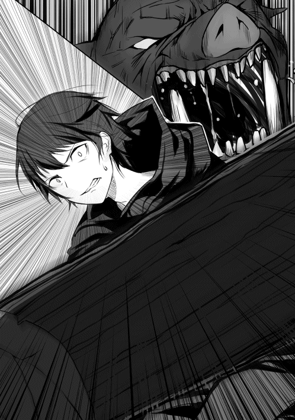

| 引きこもりだった男の異世界アサシン生活 | |
| 服部正蔵 | |
| TOブックス (2017) | |
ネトゲ廃人の悠馬（25歳）は、ある日交通事故を切っ掛けに異世界転移してしまう。その際に神様から【気配遮断】というスキルを授かった彼は、気配を殺してそ~っと近付き、獰猛なモンスターや犯罪者を次々と暗殺してレベルを爆上げ！ 冒険者ギルドでは【首狩りのユーマ】という二つ名で賞賛され、次第に守りたい人もできて、充実した異世界ライフを送っていた。だが、そんな彼の安息は長く続くことは無かった......！ ――気配を殺して敵も殺す悪即斬ファンタジー開幕！
イラスト：シロジ
デザイン：TOブックスデザイン室
プロローグ
俺の名前は佐藤悠馬。今年二十五歳、絶賛引きこもり真っ最中のニートだ。
大学を中退してから七年もの間、やる事もやりたい事も特になく、ひたすらネットゲームに明け暮れている。
だが、その生活にも最近危機感を覚え始めていた。そう、このままだと課金ができなくなりそうなのである！
ネットゲームをある程度やったことのある人なら分かってくれるとは思うが、いまや課金なしでネットゲームをやっていくのは中々に厳しい。
今までは親にもらっているお小遣いでやりくりしていたが、いよいよ限界に近付いてきたのだ。
だがどうすればいい!? 俺は所詮引きこもりのニート、それなのに親にお小遣いの額を値上げしろなんて言えるほど図太い性格はしていない。いや、まぁニートをやっている時点でかなり図太いような気もするが。
さて、そうなってくると今の俺に残された方法は、バイトくらいのものか。家の外に出るのは少々抵抗があるが、まぁ課金できなくなるよりはましだな！
よし、そうと決まれば早速バイト探しに出かけるとするか！
生まれてこの方働いたことなどないはずなのに、この時の俺はなぜか調子にのっていた。
次の日、意気揚々と家を出ていく。途中、久しぶりに顔を見た母さんが俺を見て非常に驚いていたが無視した。
とりあえず歩いて行ける距離に本屋があるので、そこに向かい街道を歩いて行く。
頭の中ではこれで課金できるようになる、その事ばかり考えていて他の事にまったく注意を向けていなかった。その時だった。大型トラックがこちらに向かってかなりの速度で突っ込んできたのだ！ まずい、普通の車ならまだしも、この大きさのトラックにはねられたら間違いなくお陀仏だ！ そう思い必死に避けようとするも、長年引きこもり生活をしていた体がいきなり俊敏に動くわけもなく、気づいた時には目と鼻の先にトラックが迫っていた。
「あ......俺死ん......」
あれ、どこだここ。
ふと目をあけると周りは無駄に広く、真っ白い空間だった。
「俺はたしか、バイトを探しに行く途中でトラックに......」
トラックに轢かれて......。
「そうだ！ たしかに俺はあの時トラックに轢かれて死んだはず」
それなら、一体ここはどこなんだ。見た感じ普通の場所ではなさそうだが、天国や地獄ってわけでもなさそうだ。
俺はとりあえず自分の体を確認することにした。服装は死ぬ前の服装そのままで、特に痛いところや怪我もないようだ。
そんなことをしていると、唐突に男なのか女なのか判断のつかない声が聞こえてきた。
「やぁ、無事に目が覚めたようでなによりだ。まぁ無事とは言いづらいかもしれないがねぇ」
声が聞こえた方向に目を向けると、そこには非常に中性的な見た目をした人物が立っていた。
「ふーむ、少し混乱しているようだねぇ。まぁ君は死ぬの初めてみたいだし仕方ないかな」
この人物の話を信じるのなら、俺がトラックに轢かれて死んだのは確定のようだ。というか、死ぬのに初めてもないだろうと心のなかで思った。
まぁいい。それよりも気になっているのはこの人物の正体だ。こんな変わった空間にいるのだから普通の人間ではないのだろう。勇気を振り絞り聞いてみる事にした。
「あの、あなたは一体何者なのでしょうか？」
俺がそう質問をすると、答えはすぐに返ってきた。
「おっと、僕としたことが自己紹介を忘れていたようだね。僕の名前はラスティ。君たちの世界でいうところの神様ってやつだ。よろしくねぇ佐藤悠馬君」
神様......か。その答えに不思議と驚きはなかった。
「おや、いきなり信じてくれるのは珍しいねぇ。大抵の人間は神様なんてうさんくさいもの信じていないと思っていたんだけどねぇ」
うさんくさいか。言われてみればたしかにそうだが、こんな死後の世界のような場所にいる奴が普通の人間なわけがない。そう思っただけだ。
「あぁ、ちなみにここは君が思っているような死後の世界とかじゃないよ。あえていうなら、生と死の狭間の世界ってとこかなぁ」
生と死の狭間、なら俺は生きているのか、それとも死んでいるのか。どちらなのだろうか。
「このままだと死ぬだろうねぇ。ただ君はこのまま死なせるには少しもったいないと思ってさ。少し話をしてみようかなって思ったのさ」
このまま死ぬともったいない？ 俺は自分で言うのもなんだが長所も特にない平凡なただのニートだ。そんな俺が死んだところで何がもったいないというのだろうか......。
「気づいていないだろうけど、君って中々才能豊かなんだよねぇ。だからさ、君さえよければ異世界にでも行ってみないかい？」
俺が才能豊か？ まったく心辺りのない話だな。いや、それよりも異世界ってなんだ？ よくラノベとかであるゲームみたいな世界ってところだろうか。
「大体そんな感じだねぇ。今ならサービスで特別な力も付けてあげるからさ」
特別な力か......、いい響きだ。他人より優れた力、他人が持っていない力を自分だけが持っている。正直少し憧れるな。
「ああ、ちなみに君の場合転生じゃなく転移になるからそのままの姿で行ってもらう事になるよ」
なるほど。まぁ転生して姿が変わるより、慣れ親しんだ今の姿の方がいいか。
さて、ここまで神様の話を聞いたわけだが、正直異世界に行ってもいいかなと俺は思っている。ただ、最後に少し気になっている事を聞いてみた。
「あの、もしこれを断ったら俺はどうなるんでしょうか？」
俺がそう質問すると神様はニッコリ笑いながら言った。
「うん、このまま死ぬね」
その瞬間、俺の答えは決まった。まだ死にたくはないのだ。
「神様、異世界に行ってみることにします！」
神様は俺のその答えに満足したように笑った。
「うん、よかったよかった。じゃあ早速だけど異世界送ってあげるね」
神様がそう言った次の瞬間、急激に意識が遠のき始めた。
「じゃあねぇ。今度の人生は幸せになれるように祈ってるよ〜」
【第一章】
少しずつ、意識が覚醒していくのを感じる。
俺は朧げながらも目を覚まし、ゆっくりと目を開いていく。
「ここは、どこだ......」
そう考えとりあえず周りを確認してみることにする。
すると、そこらじゅうに草や木が生い茂っていた。つまりは。
「ここは森の中ってとこか。でもなんで俺はこんな場所に......」
引きこもりだった俺がこんな森の中にいる理由。
分からん。いくら考えてもそんな理由は思い浮かばない。
だめだ、少し頭が混乱してきたので情報を整理してみる事にしよう。
まず俺はトラックに轢かれて死んだ。それから神様と出会って話をして異世界転移する事になって......。
信じられない。俺は本当に神様に会ったっていうのか。とりあえずほっぺをつねってみる。うん、普通に痛い。どうやら夢ではないらしい。
「てことは、ここが神様の言ってた異世界ってことか」
なんだろう、ぱっと見た感じだが、元の世界とあまり変わらないんだな。
さて、少し気持ちが落ち着いてきたところで現状の確認をしておくか。
まず体に異常は特になし。異世界に来る前とほとんど変わっていない。
衣服や持ち物に関しても異世界に来る前からそのままのようだ。もっとも財布くらいしか持っていなかったけどね。
最後に神様がくれると言っていた特別な力ってやつを確認したいんだが、どうやって確認すればいいのだろうか。
「うむ、分からん。こんな時、ゲームとかだとステータスが簡単に開けて便利なんだけどな」
俺がそうステータスと口にした瞬間、目の前に俺の名前が書かれた文字がずらりと並んだ。
佐藤悠馬Ｌｖ１
ＨＰ40／40 ＭＰ35／35
力５ 体力５ 素早さ２ 幸運20
【スキル】
経験値20倍 スキル熟練20倍 鑑定Ｌｖ10 気配遮断Ｌｖ７
【称号】
異世界転移者 引きこもり
なるほど、異世界ってのは中々便利なもんらしい。
俺の名前が表示されてるって事は、これが俺のステータスってわけね。
そうと決まれば一つずつ確認していくとしますか。
まずＨＰ40とＭＰ35。これは現時点だと高いか低いか判断はできないな。
次に力と体力の５。これはおそらく高くはないだろう。長年引きこもっていた俺に力や体力などあるはずもない。
次に素早さだが、これは酷い......。力や体力よりも更に低い２。これには少々ショックだが、まぁ仕方ない部分もある。長い引きこもり生活のせいで走ることはおろか、歩くことすら最近は減っていたからな。
最後に幸運だが、予想以上に高くなんと20もある。力や体力の四倍だ。
正直この幸運の数値ならトラックになど轢かれるなよと思うが、まぁそこは神様に出会って転移させてもらえた事だし良しとするか。
さて、次はスキルを見ていく事にするか。
【経験値20倍】モンスターを倒した際、得られる経験値が20倍になる。
【スキル熟練20倍】スキルを使用した際の成長が20倍になる。
【鑑定ＬＶ10】相手のステータスを見ることができる。ただし、レベル差が離れすぎていると効果が発揮されない場合がある。
【気配遮断ＬＶ７】気配を消すことができる。ただし、レベル差が離れすぎていると効果が発揮されない場合がある。
なるほど、どれも有用そうなスキルばかりだ。
まず経験値20倍とスキル熟練20倍は手っ取り早く強くなれる。
この世界が安全かどうかも分からない現状、できるだけ早くレベルを上げておいたほうがいいだろう。
次に鑑定、これもかなり有用なスキルだ。
戦う前に相手のステータスを確認できるのなら、戦いの難易度がまったく違ってくる。生き残れる可能性もグッと上がるだろう。
欠点は相手とのレベル差が離れていると見えなくなるくらいか。
まぁこれは仕方ないことだろう。とっととレベルを上げればいいだけの話だ。
それに、鑑定が効かなかった相手は警戒すべきという判断もとることができる。
次に気配遮断、これも文句なしに有用だ。
攻めにも守りにも使うことができるスキルだ。
敵に気付かれずに背後から仕留める。くく、かっこいいじゃないか。
よし、これでスキルは終わりだ。最後に称号を見ていくか。
【異世界転移者】異世界から来たもの。その多くは良くも悪くも世界に大きな影響を及ぼすだろう。
【引きこもり】数年の一人孤独に過ごしてきた者。
ふむ、異世界転移者ってのは予想通りそのまんまの内容だ。
しかし良くも悪くも世界に影響を及ぼすか。悪くもってとこが少し不安だな。
もう一つの称号の引きこもりの方は、まぁこんなもんだろう。
さて、ステータスの確認はこれくらいでいいだろう。
現状確認はすべて終わったことだし、次は安全な場所でも探すとするか。
できれば洞窟のような場所があればいいんだけどな。
そう考え歩き出そうとした瞬間、視界の端から何らかの生物が俺の目の前に飛び出してきた。その一瞬の出来事に俺は少しだけ驚いたものの、すぐに冷静になり目の前の生物の姿を確認してみることにした。
すると、それは地球にいた兎にそっくりな姿であった。
「へぇ、兎みたいなもんか。異世界にも似たような生物っているんだな」
うん、非常に可愛らしい見た目だ。少し頭でも撫でてみるか。
そう考え兎のような生物の頭に手を伸ばす。すると次の瞬間。
「ガウゥウウウウウウ!!」
「......え？」
兎によく似た生物はその可愛らしい顔を鬼のように変え、大きな口を開け俺の手に噛みつこうとしてきた。
「こ、こいつ!!」
やばいと思った俺はとっさに腕を引っ込め、なんとか攻撃を避けることに成功した。
「そうだった！ ここは異世界なんだ、何をやっているんだ俺は!!」
俺は自分の考えの甘さに苛立ちながらも必死に生き残る方法を考える。
まずは【鑑定】発動。
ラビッツＬｖ３
ＨＰ55／55 ＭＰ０／０
力４ 体力７ 素早さ13 幸運２
やばい、力と幸運は俺の方が上だが、体力と素早さはラビッツの方が上だ。特にこの素早さの差はまずいだろ！
そうして俺が必死に考えている間も、ラビッツは大きな口を開けてこちらを睨み続けている。どうやら俺を逃がすつもりはないらしい。
くそ、この状況一体どうすればいいんだ......。
初めての生死がかかった戦い、俺は恐怖のあまり混乱に陥っていた。
持っている物は財布だけで武器はない。スキルも攻撃に使えそうなのは一つもない。これでどうやって戦えって言うんだよ!!
俺がそうして混乱していると、好機だと思ったのかラビッツが大きな口を開けこちらに飛びかかってきた！
「ガウゥゥゥウウウウウウ!!」
やばい！ そう思い必死に避けようとするも、素早さはあちらの方が上だ。
結果、太ももの一部が攻撃を避けきれず傷を負ってしまう。
「ぐぁぁああああ!!」
太ももに走った余りの痛みに思わず叫んでしまう。
仕方ないだろう。こちとら平和な世界のしかも引きこもりだったんだ。
怪我なんて数えるほどしかしたことがない。痛みにまったく慣れていないんだ。
「はぁはぁ......くそぉ」
まずい、この足では次の攻撃を避けられるか分からない。
そしてこの絶好のチャンスをラビッツが見逃すはずもなく、再度大きな口を開けて俺の体へと向かってくる。
まさか、せっかくの二度目の人生、こんなとこで終わってしまうのか......。
嫌だ、そんなのは絶対嫌だ！ 俺は生きたい、もう二度と死ぬなんて御免だ！
すでにラビッツは至近距離まで接近している。こうなったら、一か八かだ！
「【気配遮断】!!」
渾身の思いを込めてそのスキル名を叫んだ。
すると次の瞬間、目の前のラビッツがまるで時が止まったかのように静止する。
「ガゥゥ？ ガウゥ？」
急に動きが止まったラビッツはきょろきょろと周りを見る。
まるで、目の前にいたはずの獲物が急にいなくなり不思議がっているかのように。
その後、何事のなかったかのようにラビッツはこの場から去っていった。
「......助かった。のか？」
とりあえずの危機は去ったと考えてもいいだろう。
そう思い発動したままだった気配遮断を解除する。
「ぶはぁぁあああああああ!!」
気配遮断を使っている間は念のためずっと息を止めていたので、思いっきり空気を吸い込む。命の危機から解放されて吸う空気は最高の味だった。
「はぁはぁ、死ぬかと思った......」
とりあえずは生き残ることができた。その事実に安堵する。
しかし、よくあの状況で生き残れたもんだ。すべてはこのスキルのおかげだな。
気配遮断、まさかここまで有用なスキルだとは思っていなかった。あの距離でまったく気付かれないとは。しかも相手は生物、まさか匂いすらも遮断してしまうという事だろうか。もしそうだとしたら、とんでもないチートスキルだなこいつは。上手く使いこなす事ができれば、ほぼ無敵だ。
おっと、そういや気配遮断はスキルだからＭＰを消費したはずだな。
どれだけ減ったか一応確認しておくとしますかね。
「ステータスオープン」
佐藤悠馬Ｌｖ１
ＨＰ30／40 ＭＰ15／35
力５ 体力５ 素早さ２ 幸運20
【スキル】
経験値20倍 スキル熟練20倍 鑑定Ｌｖ10 気配遮断Ｌｖ７
【称号】
異世界転移者 引きこもり
なるほど、さっき見た時よりＭＰが20減っているな。
気配遮断を使っていた時間もおよそ二十秒。つまり気配遮断は一秒につきＭＰを１消費するってことか。
おそらくだが、将来的に見れば一秒につき１消費はまったく問題にならないだろう。
しかし、今の俺の最大ＭＰは35。つまり気配遮断は最大でも35秒しか持たないってことになる。流石に三十五秒じゃ少し厳しい気がするな。
これは早めにレベルを上げてＭＰの最大値を上げておいたほうがいいかもな。
幸い俺には経験値20倍のスキルがある。これがあればレベルはすぐに上げることができるだろう。問題は、武器がないことだな。
流石に気配遮断で気づかれることなく近寄れたとしても、武器がなければどうしようもない。素手で戦うという最終手段もあるが、もし十五秒の間に倒しきれなかったらアウトだ。そんな危険な事はできない。
まぁいい、色々考える事はあるが、まずはこの場を離れるとするか。さっきのラビッツがこの場に戻ってこないとも限らないからな。
とりあえず夜までに安全な場所を見つける事が最優先だ。
そう考え周りを警戒しつつ歩き始める。
そうしてしばらく歩き続けていると、不意にお腹からグーと音が鳴った。
はあ、流石にこんだけ歩き続けると腹も減ってくるよなぁ。
かといって食べる物なんて持っているわけないからな。どうしようかね。
そんな事を考えながら歩いていると、偶然にもリンゴによく似た果実を発見した。
「これは、美味そうだな。食べてみるか......」
いや、だめだだめだ。ここは異世界なんだ、日本にいた頃の常識なんて通用しないってさっきのラビッツで分かったはずじゃないか。もしかしたらこれだって毒リンゴのような物かもしれない。
けど、美味そうだよなぁ。何かいい方法はないのだろうか。そこで俺は閃いた。
「なんだ、鑑定使えばいいじゃん。【鑑定】発動っと」
【パプゴ】ファリス森林の入り口付近に生えている果物。非常に美味しく多くの人に食されている。なお毒はない。
おお、これは食べれそうじゃないか。ご丁寧に毒もないと書いてある。
しかも非常に美味しいだと、これはもう我慢できないな。俺は目の前に生っているパプゴを一つ掴み取り、そのままかぶりついた。
「う、うめぇぇぇぇぇえええええ!!」
なんだこれは、めちゃくちゃ美味いぞ。
見た目はリンゴに近いが味はブドウだなこれは。
噛むごとに口の中に甘さがどんどん広がり食べるのを止められない。
おっと、夢中で食べていたらもうなくなってしまった。
だが幸いな事に俺の目の前にはまだまだパプゴは沢山ある。ここで食べておかないと今度はいつ食べれるか分からない。食べれるだけ食べておくことにしよう！
周囲に最低限の警戒を残しつつ、俺はパプゴを食いまくった。
「うぷ、流石に満腹だな」
ああ、めちゃくちゃ美味かったなぁ。
しかし気のせいだろうか。腹が膨れたのは当然として、なんだか体に元気がみなぎってきたように感じる。
不思議に思いステータスを確認してみると、なんとＨＰとＭＰが回復していた。
なるほど、この世界では食事でもＨＰとＭＰは回復するのか。
睡眠などでしか回復できないと考えていただけに、これはいい情報だな。
よし、持てるだけパプゴは持っていくことにしよう。そこまで重たいわけでもないし、もし魔物と遭遇してしまったら気配遮断を使って逃げればいい。
「こんなもんでいいかな」
とりあえずパプゴは持てるだけ持った。腹も膨れた事だしもうここに用はないな。そろそろ行くとしようか。
俺は予想外の幸運に感謝しながらも、安全な場所を求めて再び歩き出した。
それからほんの数分後、幸運なことに洞窟のような場所を発見することに成功した。
「おお、ここなら雨も凌げるし、ある程度安全なんじゃないか」
そう考えた俺はとりあえず洞窟の中へ入ってみる事にした。
いざ中へ入ってみると洞窟は想像していたよりも遥かに広く、少なくとも人が数十人は入れそうなほどだった。しかも奥にはまだ道があるようだ。何か役に立つ物があるかもしれないし、もう少し奥へ行ってみるか。
そう考え洞窟の奥へと進んでいった。当然魔物がいる可能性もあるので、いつでも気配遮断は使えるようにしながら慎重に進んでいった。
そうしてしばらく歩いていると、かなりの広さをもった空間に辿り着いた。
「おっと、いきなり広い場所に出たな。洞窟はここで行き止まりかな」
そう考えとりあえず辺りを確認してみる。
すると、空間の中心辺りで焚き火の跡のような場所を発見した。
どうやら以前、ここで焚き火をしていった人がいたわけか。あれ、洞窟で焚き火ってできたっけ。そう思いつつ、何か有用そうな物がないか探していく。
うーん、焚き火をするのに使ったらしき木の残り以外は何もな......ん、これはまさか、ナイフか!?
「おお、こんな場所でまさか武器が手に入るとは！」
さすが幸運がダントツで高いだけあるな。
しかし、よく見るとこのナイフボロボロだな。まぁそうじゃなきゃ捨てたりしないか。とりあえず鑑定してみるとしよう。
【ボロボロのナイフ】使い古されたナイフ。長年使われ続けた結果、ところどころ刃が欠けてしまっている。
少々の不安が残るが、しばらくはこれを武器に使っていくことにしよう。これで魔物に襲われたとしても、一方的に逃げるしかできないって事はなくなったな。
さて、武器も手に入ったことだし、とりあえず入り口まで戻るか。そう考え来た道をそのまま戻っていった。
「はぁ、結構歩いたせいでまたお腹が減ってきたな」
俺が持ってきたパプゴは全部で五個。五個もあるんだから一個くらい食べてもいいよな。そう考えパプゴを一つだけ食べることにした。
あまり大きくはないパプゴはほんの数分で食べ終わった。
「うん、やっぱり美味いな」
個人的な意見だが、リンゴやブドウよりも好みの味だ。
ステータスの方はどうなっているかな。そう考えステータスを確認してみると、ＭＰが２回復していた。てことはパプゴ一つでＭＰは２回復か。
となると残りのパプゴ四つを全部食べてもＭＰは８しか回復しないのか。やはり大きく回復させるのには睡眠が必要みたいだな。
しかし、そろそろ今後の事を考えてレベルを上げておきたいところだ。
ちょっと見た目は悪いが武器も手に入ったことだ。やってみるとしますかね。
「あのうさぎもどき、リベンジだ」
理想は気配遮断を使い気づかれないように近づき、一撃で仕留める事だな。
俺の残りＭＰは27。つまり気配遮断を使える二十七秒間は俺の時間ってわけだ。
念のためにパプゴを二つだけポケットに忍ばせておくか。それ以上は邪魔になりそうだ。
さて、リベンジと意気込んでいるはいいが、まずがうさぎもどきことラビッツを見つけない事には話にならない。早速探しに行くとしますかね。
俺はパプゴを二つだけポケットに忍ばせ、洞窟を後にした。
まずはパプゴが生息していた場所に行ってみるとするか。あそこならパプゴ目当てのラビッツがいるかもしれない。
しばらく歩くと無事に目的地へと到着する。しかし、以前来た時と少々様子が違うようだ。地面に何かに食い荒らされたのだろうパプゴがいくつか転がっている。
そのうちの一つを手に取り確かめてみると、見覚えのある大きなキバの跡を発見した。間違いない。あいつのキバだ。
どうやら俺の予想通り、ラビッツはここを餌場にしているようだな。
そうと決まればやることは一つだ。ここで待ち伏せをしよう。
都合のいいことに、ここら一帯は草むらと木で覆われている。隠れるにはもってこいの場所というわけだ。
「よし、ここにするかな」
すぐに隠れるのに最適な場所を発見することができた。ここならラビッツが俺に気付く心配はほぼいらないだろう。後はここでラビッツが現れるのを待つだけである。
隠れ始めてから数十分後、目の前の草むらがガサガサと小さく揺れる。
「......来たか」
そして俺の目の前に、あの憎きラビッツが姿を現した。
しかし、気のせいかもしれないが俺を襲ったラビッツより小さく見えるな。
まぁいい、とりあえずは鑑定だ。【鑑定】発動。
ラビッツＬｖ２
ＨＰ45／45 ＭＰ０／０
力３ 体力５ 素早さ11 幸運１
やはり、俺を襲ったラビッツよりも明らかに弱い。どうやら同じ魔物でも強さには差がでるようだ。
しかし、これは好都合だ。同じ種類の魔物なのだから、当然レベルの低い方が倒しやすいに決まっている。
そう考えながら目の前のラビッツを観察していると、どうやらやつはパプゴを食べるのに必死なようだ。うんうん、あれ美味いもんな。
おっと、呑気に食事を見ている場合じゃないな。どう考えても今が最大のチャンスだ。まず気配遮断を発動し、右手にナイフを持つ。これで準備は完了だ。
「よし、やるか」
俺はなるべく音を立てないように草むらから飛び出す。
まぁ音を聞かれてこちらを向いたところで、俺の姿はラビッツには見えないだろうけどな。
そんな事を心の中で考えながら、静かにラビッツの背後へと歩いて行く。
そしてやっとラビッツの真後ろまで接近することに成功した。目の前のラビッツは食事に夢中でこちらに気付いている様子は欠片もない。これはいけるぞ！
俺は右手に持っているナイフを大きく持ち上げ、そのままラビッツの首へ全力で振り下ろした！
「ギィィィィィ!!」
ラビッツは一瞬だけ大きな悲鳴を上げ、その後すぐに絶命した。
「はぁはぁ、やった、やったぞぉおおおおおお!!」
魔物が生息している森の中で大声を出すのは明らかに危険行為なのだが、この時の俺は嬉しさの余りそんなことは忘れ、ただ叫んでいた。
「やったぁ、やったぞお！」
数十年間生きてきて、この大きさの生き物を殺すというのは初めての経験になるのだが、不思議と哀れみや同情といった気持ちは湧いてこなかった。あるのはリベンジに成功したことによる嬉しさだけだ。
「そうだ、レベルはどうなったんだ!?」
元々の目標を思い出し、急いでステータスを確認する。すると。
佐藤悠馬Ｌｖ４
ＨＰ70／70 ＭＰ50／50
力14 体力14 素早さ８ 幸運38
【スキル】
経験値20倍 スキル経験値20倍 鑑定Ｌｖ10 気配遮断Ｌｖ７ 短剣術Ｌｖ１
【称号】
異世界転移者 引きこもり
おお、レベルが一気に４に上がっている。他のステータスもかなり上がっているな。
ＨＰとＭＰは両方50を超えたか。右が最大値で左が現在の数値ってわけね。どうやらレベルが上がったら全回復する仕様のようだ。本当にゲームのようだな。
さて、各能力だが、力と体力は順調に伸びているな。それに比べて素早さの伸びは少し寂しい。まぁ伸びていないわけではないので良しとするか。
それに比べて幸運の伸びは凄まじいものがあるな。今回も運よくラビッツを見つけることができたし、もしかしたら幸運は非常に重要な能力なのかもしれないな。
おっと、スキルも一つ増えているようだ。
短剣術か。おそらくさっきナイフを使ったから増えたんだろうな。
気配遮断は７のままか。もしかしたら８になっているかもしれないと思っていたのだが、そこまで甘くはないようだ。
最後に称号だが、これは特に変化はなしと。流石に称号は簡単には増えないか。
さて、これでステータスの確認は終わりだ。
後は、このラビッツをどうするかだが、もしかしたら非常食になるかもしれないし、一応持ち帰っておく事にしよう。
よし、とりあえず目標は達成したことだし、洞窟へ戻るとするかな。
ラビッツとの戦いから数十分後、俺は無事に洞窟へと戻ってきていた。
外を見てみるとすでに暗くなり始めている。なんとか真っ暗になる前に戻ってこれたな。
そうして安心したところで、俺は一つの違和感に気付く。
「あれ、結構な距離を歩いたっていうのに、思ったより疲れがない」
もしかしたら、これもレベルが上がった影響なのだろうか。
だとしたらおそらくＨＰ、いや体力の数値が関係している気がするな。
いいぞ、これは嬉しい誤算だ。こんな森の中にいるんだ。体力はあるだけあったほうがいいに決まっている。
それにしても、こんなことならラビッツをもう少し倒しておけばよかったな。
いや、油断は禁物だな。もしかしたらラビッツが集団で現れる可能性だってある。
それにラビッツよりも強い魔物があの周辺にいないとも限らない。ここは異世界なんだ。慎重すぎるくらいで丁度いいってもんだ。
さて、とりあえず外も暗くなってきたし、今日はここで寝るとしますか。おっと、その前に確認しておくことがあったんだった。
よし、洞窟に置いていったパプゴが魔物に食べられた形跡はない。
つまりこの洞窟に魔物は寄り付いていないというわけだ。多分だけどね。
魔物がいないと分かれば安心して眠ることができる。
そうして安心した途端、急にお腹からグーと音が鳴り響く。
「あれだけ歩くと流石に腹が減ってきたな。何か食べるか」
そう考え、現在手元にある食材を確認していく。
まずはパプゴが合計で四つ。そしてついさっき倒したばかりのラビッツが一匹。
パプゴはそのまま食えるので心配ないのだが、問題はこのラビッツだ。
俺は平和な世界で暮らしてきた普通の引きこもり。当然サバイバルの経験なんてあるはずもない。料理すらまともにしたことないのだ。
つまり、このラビッツどうやって食えばいいんだよ......。
まず前提として、捌けたとしても生では絶対に食いたくない。
俺の世界では一部の高級な肉などは生のまま食えたりもしたが、流石にラビッツを生で食うのはやめておいたほうがいいだろう。下手したらそのままお陀仏って事もありえる。
かといって俺に火を点ける方法なんて分かるはずもない。ライターでもあれば楽なんだろうが、まぁこの世界にそんな物あるはずないよね。
「うーん、こういう時はゲームだと魔法があるから楽なんだけどな。こう、ファイアボール!! なんつってな」
冗談交じりでファイアボールと口にした次の瞬間、俺の手のひらに突如、野球ボールくらいの大きさをしている火の球体が出現する。
「うおおおお!! なんだこれは、手が焼けちまう！ 熱い熱い熱......あれ」
熱く、ない......だと？
なんだこれは、見た目と違ってまったく熱さを感じないぞ。
もしかして、俺が発動した魔法だから俺自身は影響を受けないって事なのか？
今のところはよく分からないな。まぁとりあえず今考えるべき事は。
「このファイアボール、どうすればいいんだろ......」
このまま出し続けておくわけにはいかないだろうし、魔法の消し方も分からない。
仕方ない、少し不安だがやってみるか。
そう思い俺は手の平を洞窟の壁に向け、まっすぐ飛んでいく姿をイメージして。
「飛んでけ、ファイアボール！」
そう叫ぶと、ファイアボールは洞窟の壁に向かい一直線に飛んでいく。
そして見事壁に命中して、ファイアボールは破裂するかのように大きく爆散した。
ファイアボールの着弾点を見てみると、壁の一部が粉々に砕けていた。
「おお、威力は中々ありそうだ」
これなら戦いにも十分使うことができるだろう。
問題は、これでどうやってラビッツを焼くかだな。今のままではどう考えても黒焦げになるか爆散するかの未来しか見えない。
威力を調節できたり、燃えやすい草や木でもあればいいんだけどな。
おっと、その前に少しステータスを確認しておくとするか。
ファイアボールはおそらく魔法。ならＭＰをどれだけ消費するか確認しておく必要がある。それにスキルを新しく覚えているかもしれないしな。
「ステータスオープン」
佐藤悠馬Ｌｖ４
ＨＰ70／70 ＭＰ45／50
力14 体力14 素早さ８ 幸運38
【スキル】
経験値20倍 スキル経験値20倍 鑑定Ｌｖ10 気配遮断Ｌｖ７ 短剣術Ｌｖ１ 火魔法Ｌｖ１
【称号】
異世界転移者 引きこもり 駆け出し魔法使い
おお、予想通りスキルに火魔法が増えている。称号も一つ増えているな。
火魔法レベル１か。おそらくレベルが上がるごとに扱える魔法が増えていったりするのだろう。
しかし、ファイアボール一回で消費するＭＰは５か。これは今のＭＰだと中々にきついな。十回使ったらすぐに０になってしまう。
気配遮断のためにＭＰはなるべく温存しておきたいからな。しばらく戦いでも使用は控えたほうがいいかもしれない。
後は称号の駆け出し魔法使いか。まぁこれは魔法を使ったから増えたんだろう。
それにしてもラッキーだったな。まさか偶然魔法が使えるようになるなんて。
もしかしたら他の属性の魔法も使えたりするのかもしれない。レベルが上がりＭＰに余裕ができたら色々と試したいところだな。
さて、色々やっているうちに完全に夜になってしまった。
若干眠くなってきたことだし、今日はパプゴを一個食って寝るとするか。
翌朝、目が覚めると外はすでに明るくなっていた。
よく寝たな。まさか異世界に来て初めての夜にここまで熟睡できるとは思っていなかった。予想以上に疲れが溜まっていたのか、それとも俺が図太い性格だったのか。
まぁいい、とりあえずよく寝たことで疲れもほとんどなくなったみたいだ。
そういやＭＰはどうなっているのか。回復しているといいのだが、そう思いながらステータスを開きＭＰを確認すると、無事回復していた。
「おお、やっぱり睡眠で回復するみたいだな」
これが分かったのは大きな収穫だが、今度は回復量が気になってくるな。
今度、余裕がある時にでもＭＰを０まで使い切り、その状態でどれだけ回復するか試してみるのも悪くないな。
よし、ステータスの確認はこんなもんにして、朝飯でも食べるとしますか。
昨日の残りでパプゴが残っているのでそれを食べることにしよう。起きたばかりで腹の減っていた俺はパプゴ一つをペロっと平らげた。
「うーん、ちょっと物足りないな」
また昨日の場所にパプゴを取りに行くとしますか。
ついでにレベル上げのためにラビッツも少し倒しておくとするか。
もしラビッツが大量に出現したり、俺の手に負えない魔物が現れたら全力で逃げるとしよう。気配遮断を使えば逃げられない魔物はそうはいないはずだ。
そうと決まれば準備をして早速行くとしますか。
まぁ準備っていっても、持っていくものはナイフくらいしかないんだけどね......。
俺は唯一の武器であるナイフを大切にポケットに入れ、洞窟を後にした。
洞窟からしばらく歩くと、昨日と同じ場所へと到着する。
それにしても、やはり疲れはほとんどない。
ラビッツを一匹倒しただけでこれだからな。レベルってのは偉大なもんだな。
まぁ俺には経験値20倍のスキルがあるので、二十匹倒したようなもんだが。
さて、隠れるのはこの場所でいいかな。
俺は昨日とほとんど同じ場所の草むらに身を隠す。
後はここでラビッツが現れるのをじっと待つだけだ。
しかし、こうしてみると俺の戦闘スタイルって戦士とかそういう系じゃないよな。どう考えてもアサシンとかそっち系だ。まぁかっこいいからいいけどさ。
そんな事を考えのんびり待っていると、目の前に目的のラビッツが現れる。
昨日倒したラビッツよりも若干大きいが、初めてあったやつよりはやはり小さい。
一応ステータスを確認してみたところ、昨日と同じレベル２だった。これなら余裕そうだな。
「やるか」
気配遮断と発動して、昨日と同じようにラビッツの背後に静かに忍び寄る。
そして真後ろまで接近したら、そのままラビッツの首にナイフを刺し込む。
「ギィィィィ」
ラビッツは小さな悲鳴を上げすぐに絶命した。
「よし、成功だ」
そしてレベルが上がった影響は攻撃にも表れていた。
おそらく力が上がった影響だろう。少し力を入れただけで倒すことができた。
それだけじゃない。俺の気のせいかもしれないが、昨日よりもナイフが手に馴染んでいる感覚がある。これはおそらく短剣術のスキルのおかげだろう。便利なものだな。
おっと、せっかく倒したのにレベルの確認を忘れていた。
そうしてステータスを開きレベルを確認してみると、無事６まで上がっていた。
各能力だが、力や体力、幸運の伸びはいつも通り順調だ。
しかし、相変わらず素早さの伸びだけはイマイチだな。まぁそこは気配遮断などのスキルで上手くカバーしていくことにしよう。
さて、ステータスの確認はこれで終わりとして、このラビッツどうしようか。
洞窟に一匹保管してあることだし、少々もったいないがこのまま捨てていこうかね。
こういう時、ゲームとかだとアイテムボックスなどが使えて便利なのだが。まぁ流石にそこまでうまい話があるわけ......。
【アイテムボックスＬｖ１を取得しました】
おいおい、アイテムボックスってこんな簡単に取得できていいのかよ！
いや凄く嬉しいんだけどね。でもなんか釈然としないような。
まぁいいか、ここは素直に喜んでおくとしよう。
おっと、少し興奮してしまってスキルの確認を忘れていたな。
もしかしたら俺の思っているアイテムボックスとは効果が違うかもしれない。早速ステータスを開きスキルの効果を確かめてみることにした。
【アイテムボックスＬＶ１】色々な物を収納しておくことができるスキル。原則として生きているものに関しては収納することはできない。ただし、その生物がすでに死んでいる場合は問題なく収納することができる。収納できる容量はＭＰに比例する。また、アイテムボックス自体のＬＶが上がる事によっても、収納できる容量は増えていく。
ふむ、俺の思っていた通り、かなり有用なスキルだ。
生きている生物は入らないようだが、俺の倒したラビッツなどは死んでいるので問題なく入れることができるだろう。
容量は、ほうほうＭＰによって決まるか。
それとアイテムボックス自体のスキルレベルでも容量は増えるのか、なるほど。
しかし、こうなってくると現時点での容量が気になって来るな。
都合のいいことにこの場には大量のパプゴがある。少し確認してみるとするか。とりあえずパプゴがいくつ入るかを目安にしてみよう。
「そうと決まれば、【アイテムボックス】発動」
俺がスキルを発動すると、手の平にサッカーボール程度の大きさをしている箱が出現した。これがアイテムボックスってわけね。
この見た目だけで判断するならあまり量は入らなさそうだが、さてどうなるか。
とりあえず入れてみるか、そう思い試しにパプゴを一つ入れてみる。
すると、パプゴはまるで消えていくかのようにアイテムボックスの中へと吸い込まれていった。
その光景に少し驚きながらもアイテムボックスを確認してみると、外見に特に変化はなかった。ならばと次々にパプゴをアイテムボックスの中へ入れていく。
おお、どんどん入るな。やっぱり見た目通りの容量じゃないってわけね。
その調子で次々にパプゴを入れ続けた結果、五十を超えた辺りで少し入りにくくなってきたような気がした。
ふむ、もう少しで限界に近いな。今まで入れたパプゴの数は五十六個。単純に考えるのなら一個につき１ＭＰってとこかな。随分と入るもんだ。
しかも、レベルさえ上がればまだまだ容量は増える。これはいいスキルを覚えることができたな。パプゴもこれだけあれば当分は持ちそうだ。
最後にさっき倒したラビッツも入れてみるとするか。
生き物などは入らないようだが、倒して死体となったラビッツなら入るはず。そう考えラビッツをアイテムボックスに近づけていくと、パプゴと同じように吸い込まれていった。
よし、問題なく入ったな。あと二〜三匹は入りそうなので容量はパプゴと同じくらいだなこれは。どうやら入れる物の大きさは容量に関係ないらしい。
さて、アイテムボックスの検証はこんなもんでいいだろう。
これからどうしようかね。今は昼間なので洞窟に帰るにはまだ早い。
アイテムボックスはあと二〜三匹入るだけの余裕があり、俺のＭＰはさっきのレベルアップで全回復している。こうなるとやることはあれしかないよな。
「よし、もう少しここでラビッツを倒しておくか」
そう考えた俺は再び草むらに影を潜め、獲物がやってくるのをじっと待つのであった。
あれから数時間後、俺は無事拠点の洞窟まで戻ってきていた。
結論から話すと、ラビッツを倒す事には無事成功した。最初の頃のように緊張することもなく、淡々と作業のように次々と倒していった。
その結果、俺の目の前にには数十匹を超えるラビッツの死体が横たわっている。
「これは、少しやり過ぎたかな......」
違うんだ、少しだけ言い訳をさせてほしい。
俺は最初二〜三匹倒したら帰るつもりだったんだ。ＭＰやアイテムボックスの問題があるからな。
しかしどうしたことか、狩りを始めて数十分、俺のＭＰは減るどころか、むしろ狩りを開始する前より増えていたのだ！
なぜそうなったか、それは俺の持っている経験値20倍のスキルの影響だ。
このスキルを持っていない普通の人ならラビッツを一匹倒したところでレベルなんて上がらないだろう。
しかし、俺の場合はラビッツ一匹につき１レベルは上がっていた。そしてレベルが上がると当然ＭＰは全回復する。しかもどんどん増えていったのだ。
当然アイテムボックスの容量もどんどん増えていった。つまり、まだまだ狩れるじゃないか、そう思ってしまったわけだ。
俺はゲームでもそうだが、レベルは上げれるだけ上げておきたい派だ。そんな俺は調子に乗って数時間ぶっ通しでラビッツを狩り続けた。その結果がこれだ。
「はぁ、どうすんだよこの大量のラビッツ」
適当に数えても三十匹以上はあるよな。
まぁ別にいいか。レベルも上がってアイテムボックスの容量もだいぶ増えた。このラビッツを全部入れるだけの容量も十分ある。問題ない問題ない。
それよりも、今はレベルがどれだけ上がったのか気になる。
これだけの数を倒したんだ。相当上がっていると思うのだがどうなっているか。
よし、早速確かめてみよう！
「ステータスオープン」
佐藤悠馬 Ｌｖ24
ＨＰ２１０／２１０ ＭＰ１５０／１５０
力74 体力74 素早さ48 幸運１５８
【スキル】
経験値20倍 スキル経験値20倍 鑑定Ｌｖ10 気配遮断Ｌｖ８ 短剣術Ｌｖ３ 火魔法Ｌｖ１ アイテムボックスＬｖ２
【称号】
異世界転移者 ひきこもり 駆け出し魔法使い ラビッツハンター
おおお。めちゃくちゃ上がってるじゃないか！
やばい、これは予想以上の結果だ。まさかレベルが一気に20も上がるなんて。
各能力だが、ＨＰとＭＰは両方とも三倍近くの数字まで上がっている。
力と体力も両方70を超えた。相変わらず素早さは少し低いがそれでも48もある。
そして幸運だが、相変わらずやばいな。１５８とか文字通りけた外れの数値だ。
次にスキルだが、気配遮断がレベル８に上がっている。正直７から８になり何が変わったのかはよく分からないが、とりあえずレベルが上がる事はいいことだな！
そして短剣術もレベル３まで上がっている。これはもう俺のメイン武器はナイフに決定だな。気配を消して近づきナイフで一突き。くく、ゾクゾクするじゃないか。
最後に称号は特に変化は......ん、ラビッツハンターってのが増えてるな。一定数ラビッツを倒せば取得とかそういう感じかな。
よし、これでステータスの確認は終わりだ。
それにしても、正直ここまで一気に強くなれるとは思っていなかった。
すでにラビッツ程度なら数匹に囲まれて襲われても楽に倒すことができそうだ。
いや、大収穫だったな。アイテムボックスの中には大量のパプゴもある。パプゴからある程度の水分は取れるだろうし、当分生活の心配はしなくてよさそうだ。
ラビッツを倒すついでに集めておいた草木で簡易的なベッドもできた。そしてこの洞窟は魔物も寄りついていない安全地帯。
あれ、ここの生活って割と快適なんじゃないだろうか。よく考えたら洞窟ってなんかいいよね。こう密閉された空間って感じがしてさ。
そんな事をのんびり考えていると、またもお腹からグーと音が鳴る。
そういや今日はずっと戦い続け、そのまま洞窟に戻ってきたので朝ごはん以外何も食ってないんだよなぁ。パプゴでも食べるとするかな。
しかし、毎回パプゴだと少し飽きてきたな。贅沢なのは分かっているが、たまには違うものが食べたいな。例えば肉とか魚とか。
そういや、この洞窟って焚き火の跡があったよな。てことは焚き火は可能って事だ。
俺のアイテムボックスの中にはよく燃えそうな大量の草や木。さらに目の前には焼いて食べると非常に美味そうなラビッツ達。
さらにさらに、俺は火魔法が使える。まぁ制御できる自信はないけどね。
ここまで準備が整っていれば、俺のやることは一つだ。
「ラビッツ、食ってみるか！」
ラビッツを食べる決心をした俺は、早速焚き火の跡があった洞窟の奥へと足を運んでいた。
よし、以前見つけた焚き火の跡はここだな。
俺はその場に腰を下ろし、アイテムボックスから大量の草や木を取り出していく。
これだけあれば流石に足りるだろう。早速焚き火の準備に取り掛かるか。
昔テレビで見た情報だと、まず一番下に大量の葉っぱを敷き詰め、次に細い木の枝を積んでいく。次に中くらいの太さの木の枝を積み、最後に一番太い木の枝を積んだら完成だ。
こうすることで燃えやすくなるはずである。俺の記憶が正しければだが。
後は木の向きも重要と言っていた気もするが、そこまで詳しくは覚えていない。
とりあえずこれで焚き火の準備は完了だ。後は火を点けるだけだ......。
これが一番の問題だ。俺がファイアボールの火力を上手く調整できるかどうか。
以前使った時と同じ威力のファイアボールだと、確実にすべて黒焦げにしてしまうだろう。それだけは絶対に避けなくては......。
まぁ今更悩んでいても仕方ないか。とりあえずやってみよう。
確か以前使った時は野球ボールくらいの大きさだったな。それであの威力だ。
今回はとにかく小さく小さくだ。ただ木を燃やすだけ。ならイメージするのはパチンコ玉くらいで丁度いいだろう。
よし、イメージは固まった。いくぞ。
「ファイアボールゥゥゥゥ」
俺がそう小さな声で魔法を発動させると、
手の平にイメージ通り、パチンコ玉サイズのファイアボールが出現する。
いいぞ、これなら黒焦げになる心配はないだろう。
そう確信した俺はファイアボールをゆっくりゆっくり木へと近づけていく。
その結果、ファイアボールの火は見事に木へと燃え移った。
「やった、成功だ！」
後は火が消えないように気をつけるだけだな。
燃え移ったばかりの小さな火だと、少しの風で消えてしまう恐れがある。
とは言ってもここは洞窟の中。しかも入り口からかなり距離が離れている。風の心配はさほど必要はないだろう。
そんな事をのんびり考えていると、火が少し強くなり安定してきた。
火が安定してきたら、今度は逆に風が必要になってくる。風を仰ぐ道具なんてあるはずもないので、必死に手で仰いでいく。
その結果、無事全体に火が回り始めた。これでとりあえず安心だな。
さて、次はお待ちかねの食材の用意だ。
俺はアイテムボックスの中からラビッツを一匹だけ取り出した。
普通なら解体して細かくし、木の枝にでも挿してゆっくり焼きたいところだ。
しかし、俺は生き物の解体などやったこともないし見たこともない。そんな俺に解体などできるわけがないのでその方法は却下だ。
となると、残された方法はあれしかないよなぁ......。
「仕方ない。黒焦げにはならないでくれよラビッツ君」
そう願いを込めて、俺はラビッツを火の中へと放り込んだ。
すると焚き火の炎が一気に燃え上がる。本当に黒焦げにならないか心配になってくる火力だ。
おいおい、頼むぞラビッツ君、根性見せてくださいよぉ!!
申し訳程度に火の強さを調整しながら、俺は黒焦げにならないように祈り続けた。
それから数分後、俺の周りに肉の焼ける香ばしい匂いが漂ってきた。
おお、もう焼けたんじゃないかこれは!!
だめだ、この美味そうな匂いを我慢することは俺にはできない！
そう考えた俺は焚き火の中からラビッツの肉を取り出す。
ふむ、少し焦げてしまっているようだが、このくらいならまったく問題ない。
やばいな、めちゃくちゃ美味そうだ。
焼いたばかりなので、湯気が体中から出ている。
匂いも非常に素晴らしい。まるで高級な肉を焼いているかのようだ。
「もう我慢できん、早速頂くとしよう」
まずはその大きな身を両手で持ち豪快にかぶりつく。
これはやばい、噛んだ瞬間、口の中に肉汁があふれ出してきた！
肉は決して硬すぎる、かといって柔らかすぎず、丁度いい歯ごたえだ！
ラビッツの身は焼けたばかりなので両手で持っていると当然熱いわけだが、今の俺はそんなことまったく気にせず、思わず叫んでしまう。
「う、うめぇええええええええ！！！」
なんだこれは！ 空腹なのも影響しているかもしれないが、今まで食べた肉の中で一番美味いと感じる。まさに驚愕の美味さだ!!
それから少しの間、俺は無我夢中でラビッツの肉を食べ続けた。
「はぁ、まじで美味かったなぁ」
パプゴも文句なく美味いのだが、やはり肉は一味違う。
まるで体中が活性化していくような美味さだ！
もし日本にこれが売っていたとしたら、外に出てでも買いに行くレベルだな。
引きこもりの俺がわざわざ買いに行くレベルなのだ。この美味さが分かってもらえると思う。
ああ、今日はこれを食えただけでもう満足だ。
腹も膨れた事だし、後は火を消して寝るとしますかね。
さて、問題はどうやって火を消すかだな。水でもあれば手っ取り早いんだろうが。
「こう、アクア！ なんつってな〜〜」
俺がアクアと口にした次の瞬間、焚き火の上から水が降り注いだ。
水の量はバケツ一杯分くらいだろうか。結果、焚き火は一瞬で消えていった。
......やったぜ！
あれ、もう朝か。
簡易ベッドから上半身を起こし、大きな欠伸をしながら昨日の事を思い出す。
あの水魔法？ 結局なんだったのだろうか。
昨日はその事が気になりながらも、満腹になった影響か急に襲ってきた睡魔に逆らう事はできずに......。
「そのまま寝ちゃったんだよな。うーん、しかしいい目覚めだ！」
洞窟の外に目を向けると、すでにかなり明るくなっていた。どうやらかなりの時間を睡眠に使ってしまったようだ。
まぁ別にいいか。どうせ起きててもパプゴを取りに行くか、ラビッツを狩りに行くくらいしかやる事なんてないもんな。
実はこの時、俺はこの洞窟での生活を割と気に入っていたせいか、この森からの脱出などまるで考えていなかった。
さて、とりあえず朝飯ても食べるとするか。
俺はアイテムボックスからパプゴを二つ取り出し、のんびり食べ始める。
うん、やっぱりパプゴも美味いな。起きたばかりの俺には丁度いい軽さだ。
しかし、昨日の水は何だったのかね。
まぁ魔法だとは思うんだけど、やっぱり気になるよな。
よし、確かめてみるか。そう思いステータスを開く。
佐藤悠馬 Ｌｖ24
ＨＰ２１０／２１０ ＭＰ１５０／１５０
力74 体力74 素早さ48 幸運１５８
【スキル】
経験値20倍 スキル経験値20倍 鑑定Ｌｖ10 気配遮断Ｌｖ８ 短剣術Ｌｖ３ 火魔法Ｌｖ２ 水魔法Ｌｖ１ 料理Ｌｖ１ アイテムボックスＬｖ２
【称号】
異世界転移者 引きこもり ラビッツハンター 駆け出し魔法使い 駆け出し料理人
ふむ、やはり昨日のアレは魔法だったようだな。スキルに水魔法が追加されている。
これはいい魔法を覚える事ができた。水があれば体を洗うことだってできる、何よりこれで完璧に飲み水の心配はなくなった。
それともう一つ、料理ってスキルも増えているな。
これは昨日の丸焼きの影響だろう。まぁあれを料理って言っていいかは疑問だが。
後は火魔法のレベルも少し上がってるな。レベルが上がる事によって扱える魔法が増えるのか、それとも単純に火力が上がるのか。いつか実験しないとな。
残りの変化は称号に料理人が増えているくらいか。
そういやレベルが24に上がった時、アイテムボックスのレベルも同時に上がっていたようだ。
レベルが上がると容量も増えるらしいがどれくらい増えるのだろうか。ちょっと気になるので鑑定で確認してみるか。
【アイテムボックス】色々な物を収納しておくことができるスキル。原則として生き物など生きているものに関しては収納することはできない。ただし、その生物がすでに死んでいる場合は問題なく収納することができる。収納できる容量はＭＰに比例する。また、アイテムボックス自体のレベルが上がる事によっても、収納できる容量は増えていく。現在はＭＰの最大値の二倍を収納することができる。
ほう、いきなりＭＰの二倍ときたか。
現状の俺のＭＰは１５０。つまりその二倍の三百個を収納できるってわけか。
凄いな、これは当分アイテムボックスの容量で困る事はなさそうだ。
さて、ステータスの確認はこれですべて終わった。
もうやる事なくなっちゃったな。どうせやる事ないんだしまた寝ようかな......。
いやいや、こんなんじゃだめだ!!
いくら洞窟が快適でやる事がほとんどないからって、このままじゃ引きこもり時代に逆戻りになっちまう。せっかく神様に転移させてもらったんだ。少しくらいは変わらないとな......。
かといって、本当にやる事ないんだよな〜。
その後、しばらくあれこれ考えた結果、俺が至った結論は。
「仕方ない。またラビッツでも倒しにいくか」
まぁ簡単に倒せるし、レベルも上がるし、食べると凄く美味いし。
よし、ちょっとやる気が出てきたぞ。早速行ってみるとしますか！
こうして今日の予定を決定した俺は、今や外に出かける時の必需品となったボロボロナイフを手に取る。
そしてそのままポケットに入れようとしたのだが、何か違和感を覚えた。
あれ、このナイフこんな場所に傷ってあったっけ......。
まぁ元がボロボロのナイフだ。きっと俺の勘違いなんだろうな。
だが、やはり少し不安に思いその傷を指でつついてみる。
すると次の瞬間。
「パキィィィィィン」
大きな音を洞窟に響かせ、俺の愛用ナイフは粉々に砕け散った。
呆然と佇む俺の目の前には、粉々に砕け散ってしまった俺の唯一の武器。
何が起きたかすぐには理解できず、俺は数分の間、それを見つめ続けていた。
それからさらに数分後、やっと気持ちが落ち着いてきた。
まじか、まさか壊れるとは思ってもいなかった。
いや、よく考えればこのナイフは拾った時からすでにボロボロだった。
そこから更に三十匹以上のラビッツとの戦闘。いつ壊れてもおかしくない状態だったのかもしれない。むしろ戦闘中に壊れなかっただけ幸運だったともいえる。
はぁ、こうやって落ち込んでいても仕方ないよな。
俺はアイテムボックスから草葉を取り出し、その上にナイフの残骸を乗せる。
そして最後にパプゴを一つだけ供える。お墓、みたいなもんかな。
ありがとな、ボロボロナイフ。お前がいてくれなかったら、俺は生き残れていたか分からなかったよ。
よし、ナイフのことはこれでお終いだ！
次に考えなければいけない事は、武器をどうするかって事だ。
一応魔法で攻撃できない事はない。最初に発動したファイアボールはかなりの威力を持っていた。おそらくラビッツ程度なら瞬殺だろう。
そういえば、気配遮断を使っている最中に魔法を発動したらどうなるのだろう。
魔法も一緒に見えなくなるのか、それとも魔法だけ見えている状態になるのか。今度ラビッツ相手にでも実験するかな。
後は武器になりそうな物といえば、この先端の尖った木の枝くらいか。
まぁ正直これは武器にできるか怪しいけどな。細いので簡単に折れてしまいそうだ。
うーん、やっぱりメインの武器がないと心もとないな。
魔法は確かに強いが気配遮断の事を思うとほいほい使えないからな。
そうなるとやはり......。
「この森から、出るしかないか」
これしか方法はないだろう。
こんな場所に都合よく武器が落ちているなんて事、おそらく二度とない。
そうなると、どうしても村や街に行って武器を調達する必要がある。
はぁ、この洞窟快適で気に入ってたんだけどな。まぁ仕方ないか、今後の為だ。
よし、そうと決まれば早速出かけるとしよう。
俺は必要な物をすべてアイテムボックスの中に入れ、洞窟を後にした。
洞窟を出てしばらく歩き、パプゴが生息しているいつもの場所へたどり着く。
丁度いい、少し疲れたので休憩していく事にしよう。
頭上に菜っていたパプゴを一つ掴み取り、大きな木にもたれ掛かりながらのんびりと食事を始める。
ここからどう進めば森から出られるのかね。
確か以前パプゴを鑑定で調べた時、この果物は森の入り口付近に生息しているって書いてあったよな。それなら森の入り口はそう遠くないはずなんだが。
そう考えながらのんびり食事をしていると、道の先から人の話し声が聞こえてくる。
流石に詳しくは分からないが、どうやら何かから逃げてきているようだ。
さて、どうしようかね。逃げている人達が善人だったらいいが悪人だったら面倒だ。
とりあえず隠れて様子見する事にしよう。
もし魔物から逃げてきたとかだったら、悪いがこのままスルーさせてもらう。
そうして草むらに隠れていると段々と話し声が近くなってくるのを感じる。
やがて屈強な体の顔に傷のある男、それにどちらかというと痩せ気味の男二人が俺の目の前に飛び込んできた。
三人の服装を見てみると、どう考えてもただの村人のようには見えない。
服のあちこちに血が付いているのも非常に気になる。
そして隠れている俺に気付くそぶりもなく、三人は息を整えると何かを話し始める。
「はぁはぁ、アニキ、なんとか逃げてこられたみたいですね！」
「ああ、ここまで逃げればひとまず安心だ。こんな森の中、そう簡単には追ってこれねぇはずだ」
「今回は運が悪かったっすね。まさか襲った村にあんな強いやつがいるなんて」
「そうだな。あいつはおそらくＢランク冒険者並みの強さはある。サブとアブは逃げ遅れて斬られちまったが、まぁ仕方ねぇ。俺らが逃げれただけでも御の字だ」
なるほど、村を襲うって発言から察するに、こいつらは盗賊か。
まぁ念のため鑑定を使って確かめておくか。一番強そうなやつに【鑑定】発動。
ラルドＬｖ28
ＨＰ90／１３５ ＭＰ０／０
力38 体力41 素早さ28 幸運16
【スキル】
剣術Ｌｖ１ 短剣術Ｌｖ１
【称号】
盗賊
やはり盗賊で間違いないようだ。だが、こいつのステータス少し妙だな。
ラルドという男のレベルは俺よりも高い28。しかし、レベル以外のすべての能力で俺の方がラルドを上回っている。どうやら能力の伸びは個人差があるようだ。
まぁいい、とりあえず残りの二人のステータスも確認しておくとするか。もしかしたら力を隠してるって事もあるかもしれない。【鑑定】発動。
ヨサクＬｖ15
ＨＰ43／80 ＭＰ０／０
力27 体力18 素早さ20 幸運８
【スキル】
短剣術Ｌｖ１
【称号】
盗賊
ギルＬｖ16
ＨＰ40／75 ＭＰ０／０
力22 体力20 素早さ23 幸運10
【スキル】
短剣術Ｌｖ１ 鷹の目Ｌｖ１
【称号】
盗賊 狩人
やはりこの二人はラルドよりも強さは落ちるようだ。そして、この二人も盗賊で間違いはない。
よし、これで大体の情報は分かった。後はこいつらをどうするかだな。
おそらくだが、こいつら相手に俺が負けることはないと思う
この中で一番強いラルドでも、俺とはステータスにかなりの差がある。
人数の差はあるが、気配遮断の前ではあまり意味をなさない。
丁度、気配遮断を使っている時の魔法について実験したかったところだ。
万が一危なくなったら逃げればいい。気配遮断を使って逃げに徹すれば、こいつらでは俺に追いつくことはほぼ不可能だ。
「しかしアニキ、こんな場所にパプゴが大量に生ってるなんて運がいいっすね！」
「ああ、まさか森に入ってすぐこんな場所を発見できるとはな。まだまだ俺たちの悪運は尽きてねぇらしい。よしおめぇら、さっさと体力回復してとんずらすっぞ！」
「うっすアニキ！」
ほほう、どうやらこいつらは今から食事休憩のようだ。これは絶好のチャンスだな。
こいつらはさっき村を襲ったと話していた。それならこいつらを手土産にすれば上手く話が進むかもしれない。
残る問題はこいつらを殺すか、殺さないかだな。
正直、平和な世界で生まれ育った俺には殺しという行為に若干の抵抗はある。
ただこいつらは盗賊だ。殺してしまっても問題はないだろう。もし殺されたくないというのなら、盗賊なんてやらなければいいだけの話だ。
さて、そうなると後は準備だな。
まずはＭＰ、よし満タンだ。これで気配遮断は百五十秒は持つことになる。他に魔法を使わなかったらの話だけどな。
次にアイテムボックスの中から先端の尖った枝を取り出す。これはファイアボールで仕留めきれなかった時の保険だ。
そして最後に気配遮断を発動する。これで俺の姿はこいつらには見えなくなった。
それじゃ、やるとしますかね。
俺は草むらから静かに抜け出し。
「ファイアボール」
魔法を発動すると、俺の手の平にボーリング玉サイズのファイアボールが出現する。
まだ盗賊達が俺に気付いている様子はない。
俺は手の平をラルドのいる方向に向け、高速で飛んでいくイメージでファイアボールを放った。
その結果、かなりの速さで飛んでいく。
「な、なんだこいつは!!」
俺の手から離れた瞬間、ファイアボールに気付いたようだが残念ながらすでに手遅れだ。
「ぐあああああああ!!」
ファイアボールはそのままラルドの顔面へ命中。そして爆散した。
その威力は凄まじく、ラルドの首から上はすべて消失してしまっている。
これは中々にグロいな。そしてファイアボールだが、俺の体から離れた瞬間に認識できるようになるみたいだ。なるほどね。
「ア、アニキ!?」
「なっこりゃ魔法か！ 一体どこから飛んできやがった!?」
残った二人は俺に気付いている様子はない。
よし、今度は少し違うやり方でやってみるか。
まずはさっきと同じようにファイアボールを発動する。
そしてそのまま二人のうち一人に急接近し、そのまま手で相手の顔面を掴むように直接ファイアボールを押し付ける。
「ぎゃあああああ！ 熱い熱いいい!!」
そしてファイアボールだけを残し、その場から遠ざかり爆散させる。
爆散させるタイミングはある程度こちらで調整できるようだ。便利なもんだな。
「くそ、ギルまで！ 一体何が起こっていやがるんだ！ ちくしょう、こんなところで死んでたまるかよ！」
そう大声を上げ、最後に残った盗賊のヨサクは必死にこの場から逃げ出す。
まぁ無理もないか。いきなり仲間が二人死んでしまったんだ。混乱するなというのは無理な話だろう。
まぁ、逃がすつもりなんて欠片もないんだけどね。
手の平をヨサクに向け、再びファイアボールを発動する。
するとさっきよりも数倍大きい、人が丸ごと収まってしまいそうなくらいのファイアボールが出現した。あれ、なんかでかくね？
まぁ別にいいか。そう思い特大ファイアボールをヨサクに向け発射する。
「ぎゃああああああああああああ！！！」
特大ファイアボールは大砲並の速さで飛んでいき、見事命中。
当たってしまったヨサクは余りの熱量にもがき苦しんでいる。
おっと、悪人とはいえあまり苦しめるのはよくないよな。そう考え俺は一言。
「爆散」
俺がそう口にすると、ヨサクだった物はただの肉片に変わり果てた。
よし、これですべて終わった。
しかしやはり殺した事への罪悪感はほとんど湧いてこない。異世界に来て変わってしまったという事だろうか。
まぁいい、むしろこれからの事を考えるとありがたくもある。こんな状況がこの先何度あるか分からないからな。
さて、今回の戦闘でＭＰをどれだけ使ったか確認しておくか。
「ステータスオープン」
佐藤悠馬 Ｌｖ24
ＨＰ２１０／２１０ ＭＰ45／45
力74 体力74 素早さ48 幸運１５８
【スキル】
経験値20倍 スキル経験値20倍 鑑定Ｌｖ10 気配遮断Ｌｖ８ 短剣術Ｌｖ３ 火魔法Ｌｖ３ 水魔法Ｌｖ１ 料理Ｌｖ１ アイテムボックスＬｖ２
【称号】
異世界転移者 引きこもり ラビッツハンター 駆け出し魔法使い 駆け出し料理人
今回の戦闘で使ったＭＰは全部で45か。
ファイアボール三発でＭＰを15消費したとして、気配遮断に使ったＭＰは全部で30。まぁ上出来かな。
対人戦でのレベルの上昇はなしか。少し期待してたんだが残念だ。
その代わり火魔法のレベルが上がっているな。ファイアボールの複数同時展開もいつかやってみたいもんだ。そしたら俺の好きだったあの技の再現ができる。楽しみだ。
それ以外はステータスに変化はなしか。
まぁ今回は気配遮断と魔法の仕組みが分かっただけでも良しとするか。俺の体から離れた瞬間から相手にも認識できるようになるか。
おしいな、もし離れた後も見えなかったらかなりチートだったのに。まぁ気配遮断のレベルはまだ８。今後そうなる可能性がないわけでもない。
よし、とりあえずはこんなもんだな。
ステータスの確認を終えた俺は、再び盗賊の死体に視線を戻す。
やっぱかなりグロいな。まぁファイアボールがゼロ距離で爆散したらこうなるか。
まぁいい、とりあえず盗賊達が持っていた武器などをもらっておくことにしよう。
ふむふむ、結構色々な物を持っているじゃないか。
おお、ナイフが四本もある。これは使えそうだ。念のため鑑定しておくか。
【銅のナイフ】平凡なナイフ。切れ味は普通で耐久性に優れる。
四本のうち三本は銅のナイフか。まぁ丈夫みたいだから使い勝手はよさそうだ。
さて、最後の一本はどうかな。
【銀のナイフ】かなり上質なナイフ。切れ味は非常に鋭く、耐久性もそれなり。
おお、これは当たりだ！ これからはこの銀のナイフをメイン武器にしていこう。
残りのナイフは非常用としてとっておくか。銀のナイフは体に身に着け、それ以外のナイフはアイテムボックスの中へしまっておく。
さて、残りは銅の剣二本と投げナイフ三本か。投げナイフは一本だけ持っておいて、残りはアイテムボックスだな。
次に銅の剣だが、俺にはまったく使い道のない武器だ。一応アイテムボックスに入れておいて、どこかで売るとしよう。
後はお金らしき物も少しあるな。これも鑑定しておこう。
【銅貨】下位の硬貨。銅貨十枚で銀貨一枚となる。
【銀貨】中位の硬貨。銀貨十枚で金貨一枚となる。
なるほど、こういう仕組みね。
こいつらが持っていたのは銅貨十八枚に銀貨一枚。これにどれくらいの価値があるかは分からないが、一応もらっておくことにしよう。
もしこれが村のお金なら、返してあげることで俺の好感度も上がる。
使えそうな物はこれくらいか。中々に有用な物が揃っていたな。特に銀のナイフ。これが手に入ったのは相当ラッキーだ。
さて、最後の問題だがこいつらの死体どうしようかね。
綺麗に爆散してしまったヨサクってやつの死体をおいといて、ラルドとギルってやつの死体は一応残っている。
もしこいつらが名の売れた盗賊なら賞金が期待できるかもしれない。まぁステータスを見た限りそこまで大した盗賊には見えなかったけどな。
まずこいつらをそのまま担いで持っていくのは論外。ならアイテムボックスにでも入れて持っていくとするか。すでに絶命しているので多分入るはずだ。
結局、俺はこいつらの死体を持っていくことにした。倒したという証明にもなるからな。
二人の死体はあっさりとアイテムボックスの中へ入っていった。この大きさの物が普通に入るって、アイテムボックスの中はどうなっているのだろう。
よし、これでやる事は大体終わったな。欲を言えばパプゴを食べ、ＭＰを回復しておきたいところではあるが、さすがにこの場所で食事をする図太さは俺にはない。
そういや、こいつら村から逃げてきたって言ってたな。それなら、こいつらが逃げてきた方向に歩いて行けば森から出られるってわけか。
たしかこいつらが逃げてきた方向は、あっちだな。行ってみるか。
そう結論をつけ、俺は歩き始めた。無事に森から出られますようにと、神様に祈りながら。
実は武器が手に入ったので、森からでる必要はあまりなくなったわけだが、まぁ気にしないでおこう。
【第二章】
盗賊との戦闘から一時間は経っただろうか。
俺は若干の空腹とＭＰ回復のために、パプゴを食べながらのんびり歩き続けている。
ふぅ、まだ森は抜けられないか。
パプゴは森の入り口付近に生息しているようなので、すぐに森から出られるかと思っていたのだが、少し考えが甘かったようだ。
まぁ、仕方がない。最悪、日が落ちるまでに森を抜けれればそれでいい。
もしもの場合は野宿になってしまうが、今の俺ならそこまで危険はないだろう。
そんな事を考えながら歩いていると、うっすら森の出口が見えてきた。
「おお、やっとこの森ともおさらばか」
そのまま少し歩くと、無事に森から出ることができた。
そこからさらに歩くこと数十分、俺は盗賊達が襲ったであろう村に到着することができた。
よし、多分ここが盗賊達の話していた村だな。もっと小さい村を想像していたのだが、案外でかいもんだな。
そんな事を考えながら村の様子を観察していると、門番らしき人物の一人がこちらを睨んでいるのに気づく。どうやら、かなり殺気立っているようだ。
まぁ当然といえば当然か。盗賊達の話から察するに、この村はやつらに襲われたばかりのはずだ。警戒しないはずがない。
まぁいい、とりあえず警戒を解くために話かけてみるか。そう思い村に近寄っていく。すると、
「おい、変な服装のお前、そこで止まれ。お前は何者だ？ 一体何の用でこの村に来た？」
おっと、かなりの喧嘩腰だな。しかし、変な服装って酷いな......。まぁ、俺が着ているのは死ぬ前の服そのままなので、この世界の人々にとっては変な服で間違いはないか。
しかし、この村に来た理由ねぇ。まさか異世界から転移してきて、一番近かった村がここだったなんて言っても信じてくれないだろうな。
うーん、仕方ない。
「申し遅れました。俺の名前は佐藤悠馬と言います。二日ほど前からファリス森林に魔物の討伐を目的に訪れており、今朝、十分な数を倒したのでこれから帰るとこでした。この村にやってきた目的ですが、さすがに野宿は辛いので宿を借りようと思い立ち寄らせていただきました」
さて、この説明で果たして大丈夫だろうか。俺は嘘があまり上手ではないのだ。
そんな俺の不安をよそに、門番の人は俺の嘘を信じてくれたようだ。警戒して強張っていた表情が和らいでいくのを感じる。
「なるほど、若いのに魔物討伐なんて偉いじゃねえか坊主！ 疑っちまって悪かったな。俺の名前はガントってんだ、よろしくな！」
そう笑顔で話しながら、手を差し出してくる。俺も同じように手を差し出し、握手を交わす。
「はい、よろしくお願いしますガントさん」
よし、これなら大丈夫そうだ。
「ところで坊主、お前ファリス森林で狩りしてたって言ったよな？」
「はい、それがどうかしましたか？」
「いや、少し前に村が盗賊に襲われてな。盗賊は五人組で、二人は冒険者の方が倒してくれたんだが、残りの三人が森の方向に逃げやがったんだよ。それで、もしかしたらお前がそいつらを見かけてるんじゃないかって思ってな」
ああ、あの盗賊三人組か。すっかり忘れていたな。
「ガントさん、その三人って顔に傷のある男と、少しやせ気味の男二人であってますか？」
俺がそう言うと、ガントさんはかなり驚いたようだ。
「おお、間違いねぇそいつらだ。坊主、そいつらがどっちに向かったか分かるか!? もし、また村を襲う気なら放っておけねぇ」
ガントさんは鬼気迫る表情だ。
「そんなに心配しなくて大丈夫ですよ、ガントさん。あいつらがどこに向かう気だったのかは知りませんが、もう二度とこの村に来ることはできないと思います」「ん、どういう事だ坊主」
俺は少しだけ笑みを浮かべながら答えた。
「だって、その三人はすでに俺が倒しましたから」
いきなりの俺の発言に、ガントさんの表情が固まる。その数秒後、
「なにぃぃぃいいいいいい!?」
辺り一帯にガントさんの絶叫が響き渡る。
うーん、驚く気持ちも分かるが、さすがにうるさいな。そう思った俺がガントさんを睨むと、申し訳なさそうに話の続きを始めた。
「すまねえな坊主、少し興奮しちまったぜ」
少し、ではなかった気がするが。
「しかし坊主よ、お前本当にあいつらを倒したのか？ あんまり疑いたくはねえんだが、簡単に信じるわけにはいかなくてな。すまん」
ふむ、まぁ疑うのは無理ないな。いきなり俺みたいなよそ者が盗賊三人倒してきましたよって言っても、信じるやつはいないだろう。
しかし、このおっさんさっきから俺の事を坊主坊主って。俺はもう二十五歳だっていうのに。
「簡単に説明させてもらいますと、あの盗賊三名は逃げることができたことで、安心して油断していたようでした。そこを魔法で仕留めたってわけです。アイテムボックスの中に盗賊の死体が入っているので、お見せすることもできます。最後に、俺はもう二十五歳なので坊主ではありません。佐藤悠馬という名前がちゃんとありますのでよろしくお願いしますね」
それを聞いたガントさんは、少し納得したようだった。
「なるほど、油断しているやつらに魔法まであったら、たしかに勝てるかもしれない。それにしても、魔法が使えるって事だけでも驚きなのに、さらに貴重なアイテムボックスまで使えるとは。見た目とは違いすげぇやつなんだな坊主......。いや、ユーマ！」
ほう、どうやらこの世界では魔法は貴重な存在だったようだ。
「信じてくれてありがとうございます。それで、あいつらの死体どうしましょうか？ 確認したいというならここで出してもいいのですが、あ......」
やべ、死体の状態かなりグロいって言うの忘れてた。
「そうだな、一応確認をしておきたいところだが、なにか問題でもあるのか？」
「いえ、問題ってわけではないのですが、少々死体がグロテスクな事になっておりまして。簡単に言ってしまえば、首から上が全部吹き飛んでいる状態なんです」
ガントさんはそれを聞いて、若干引いたような顔をする。だがそれも一瞬で、
「ああ、かまわねえさ。これでも門番なんて仕事をしてるんだ。あんま言いたくはねえが、死体は見慣れてる方だ。見せてくれ」
それなら大丈夫そうだな。そう思いアイテムボックスの中から盗賊二人の死体を取り出す。
死体を見たガントさんは少し驚いたような顔をしたものの、すぐに死体の確認を始める。
「この服装と入れ墨、ラルドで間違いねぇ。しかし、ここまでとは思わなかったぜ。ユーマ、おめえ一体どんな魔法使ったんだよ。ん、そういやもう一人の死体はないのか？」
「えーと、残りの一人はもっと派手にやってしまったわけでして。死体か判断がつかないくらいバラバラになってしまい......」
それを聞いたガントさんは、さすがにかなり引いていた。
仕方ないじゃないか！ 特大ファイボールがあんなに威力が高いとは思わなかったんだから......。
「そ......そうか。そういう事なら仕方ねえな」
その後、ガントさんはすぐに気を取り直し、
「よし、これで確認は終わりだ。でだ、こいつらの死体、もう一回アイテムボックスにしまってもらってもいいか？ さすがにこのままにしておくと騒ぎになりそうだ」
たしかに、そう思い二人の死体を収納する。
すると、それを見ていたガントさんが何かを思い出したかのように話しかけてくる。
「ありがとな。さて、俺はこれから村長に盗賊の件を伝えに行くんだが、ユーマはどうする？ さっき宿を探してるって言ったが、もし俺でよければいい宿を紹介するぜ？」
おお、それは助かるな。
「本当ですか？ 是非紹介してほしいです」
俺がそう答えると、ガントさんは笑みを浮かべながら答える。
「よっしゃ、ならここからまっすぐ道沿いに歩いて行って、六件ほど先にある宿屋がお勧めだぜ！ 値段も安いが何より飯が美味い！」
飯が美味いか、そいつは楽しみだな！
だが、俺はその前にまず聞いておくことがある。
「ガントさん、その宿屋凄く惹かれるのですが......、一泊のお値段を聞いてもいいでしょうか？」
「ああ、一泊なら銅貨二枚で飯付きなら銅貨三枚だ！ しっかしユーマ、そんな心配そうな顔で聞いてくるなんて、おめぇもしかして金ねえのか？ もしそうなら一泊代くらいサービスしてやろうか？」
飯付きで銅貨三枚か、それなら大丈夫そうだな。
「いえ、どうやら大丈夫なようです」
俺がそう言うと、ガントさんは少し安心したように言った。
「おう、それならよかったぜ！ じゃあ俺は村長のところに行ってくるから、また後で会おうぜユーマ」
そう言ってこの場から立ち去ろうとしたガントさんだが、何かを思い出したかのようにこちらを振り向き、
「すまねぇユーマ、俺とした事が言い忘れてた事があったぜ」
言い忘れていた事？ 一体なんだろうか。
俺がそう考えていると、ガントさんはニッコリ笑いながら言った。
「ようこそバリス村へ、歓迎するぜユーマ！」
ガントさんと別れた俺は、もう一人の若い門番に軽く挨拶をして、村の中へと入っていく。
ふむ、やはり中々広い村だな。
ざっと見る限り、二十〜三十程の小さめの建物が並んでいる。
どうやら、作りはすべて木造のようだ。
俺の住んでいた世界では木造の建物はあまり見なくなっていたが、こちらの世界では木造が主流なのだろうか。俺にとっては貴重な光景だな。
まぁいい、とりあえずガントさんの教えてくれた宿屋に行ってみるとするか。
たしか、ここを真っすぐ進み、六件ほど先だったな。
俺は周りの家などをのんびり眺めながら宿屋に向け歩き始めた。
少し歩くと、ゲームでいう道具屋のような店が見えてくる。
おお、さすが異世界だ！ と感心しながら見ていると、少し様子がおかしい事に気付く。店の周辺などに商品らしき物がかなり散らばっているのだ。
そうか、盗賊に襲われたんだったなこの村は......。
さすがに少し気の毒には思ったが、俺にできる事は何もないと判断し、そのまま歩いて行く。
そうして歩き続けていると、数人の村人達とすれ違う。
普通に挨拶してくる人もいれば、なんだこいつ？ と怪しい人物を見るかのようにこちらを警戒し睨んでくる人もいた。まぁ俺の服装は怪しいし、盗賊に襲われたばかりなので警戒するのも当然だろう。ただ、子供に怯えた目で見られたのは少しショックだったな......。
そんな事を考えながら歩いている内に、無事宿屋に到着することができた。
おそらく、ここがガントさんの言っていたお勧めの宿屋だろう。見た感じ、そこまで広くはなさそうだが、雰囲気のよさそうな建物だな。
よし、とりあえず入ってみるか。
俺は宿屋の扉を開け中へと入っていく。
中に入りまず目に入ったのが、綺麗に掃除されたテーブルやイス。おそらく、この宿に宿泊している人達はここで食事などをするのだろう。毎日使われているはずなのにここまで綺麗に保つとは。これだけでこの宿屋が当たりってのが分かるな。
次に目に入ってきたのは正面にある受付席、というよりはそこに座っている女性だ。
年はおそらく二十〜二十五歳前後だろうか。可愛いというより美人という言葉が似合いそうな人だ。
凄いな、日本でもここまでの美人さんは中々いないぞ。
俺がそんな事を考えていると、その美人さんから声がかかる。
「いらっしゃいませ。宿屋ロータスへようこそ。受付はこちらですのでどうぞー」
そう声をかけられた俺は、美人さんの座っている受付席の元へと歩いて行く。
うーん、近くで見るとさらに美人だなぁ。少し緊張してしまいそうだ。
俺はなるべく冷静に話を切り出す。
「初めまして、俺は今日この村にやってきた佐藤悠馬といいます。こちらで一泊したいのですが、部屋は空いているでしょうか？」
「はい、丁度一部屋空いていますよ。お泊りになられるのでしたら、食事はどうなさいますか？ 泊まるだけなら銅貨二枚で食事付きでは銅貨三枚になります」
俺は美味いもんが食べたい。腹も減っている。当然ここは、
「食事付きでお願いします」
「かしこまりました。では一泊食事付きで銅貨三枚になります」
俺はポケットの中から銅貨三枚を取り出し、なるべく丁寧に美人さんに手渡しする。
「はい、たしかに。では食事付きという事ですので、夕飯は大体今から一時間後ですが、ここで食べるか部屋に届けるかどちらになさいましょうか？」
「えーと、ここで食べる事にします」
さすがに部屋まで持ってきてもらうのも悪いもんなぁ。
それに、たまには大勢人がいるところで食べるのも悪くはないだろう。
「かしこまりました。では、これから部屋に案内させて頂きます。マリー、降りてらっしゃい！」
そう美人さんが少し大きな声を上げると、階段をドッドッドと降りてくる音が聞こえる。
「呼んだママー??」
そうして降りてきたのは、美人さんをそのまま若くしたような大変可愛らしい女の子であった。短めのスカートはよく似合ってるな。

というか、今この子、美人さんの事ママって呼ばなかったか？
「新しいお客さんよ。掃除も終わってるだろうし部屋に案内してあげてくれる？」
「わかったー。お客さん、名前はなんていうんですか??」
元気いいなーこの子。
「ああ、俺の名前は佐藤悠馬。ユーマと呼んでくれ」
ガントさんも俺の事ユーマって呼んでたし、こちらの方が呼びやすいだろう。
「ユーマさんですねー。私の名前はマリーっていいます。よろしくですよー。ではユーマさんの泊まる部屋に案内するので私の後を付いてきてくださいねー」
そう言いマリーは先に階段を上り始める。
俺も後を追い階段を上り始めるのだが、そこで俺は重大な事実に気付いてしまう。
マリーはスカートを穿いている。しかも、かなり短めの。
そしてそんなマリーを俺は当然下から見上げる形になる。つまりはこの状態で俺が顔を上げると。
だめだ、俺は何も見ていない。見ていないんだ。忘れよう......。
「あれぇー、ユーマさんどうしたんですかー。顔が赤いようですけどー」
階段を上った後、マリーがそんな質問をぶつけてきた。
こいつ、狙ってやったんじゃないだろうな？......。
「いえいえ、何もなかったですよ。何もね？」
俺の答えを聞いたマリーは笑顔で、
「そうですかー、ならよかったです。あ、ここがユーマさんの泊まる部屋になりますよー」
おっと、どうやら部屋に着いたようだ。
扉を開け中を少し確認してみると、そこまで広さはないが中々綺麗な部屋だった。特にベッドがあるのはいいね！
「マリー、案内ありがとう。助かったよ」
「いえいえー。では食事は今から一時間後ですので忘れないようにお願いしますねー」
そう言い残し、マリーは扉を閉め自分の仕事へと戻っていった。
部屋に一人になった俺は、よくやく一息つきベッドに横になる。
うん、寝心地も悪くない。洞窟の簡易ベッドに比べれば月とスッポンだ。まぁあれと比べるのは失礼か。
しかし、まずいなぁ。このままベッドに横になっていたらそのまま寝てしまいそうだ。
夕食の時間まで暇なので今のうちにステータスの確認でもしておくか。
「ステータスオープン」
佐藤悠馬 Ｌｖ24
ＨＰ２１０／２１０ ＭＰ１３５／１５０
力74 体力74 素早さ48 幸運１５８
【スキル】
経験値20倍 スキル経験値20倍 鑑定Ｌｖ10 気配遮断Ｌｖ８ 短剣術Ｌｖ３ 火魔法Ｌｖ３ 水魔法Ｌｖ１ 料理Ｌｖ１ アイテムボックスＬｖ２ 話術Ｌｖ１
【称号】
異世界転移者 引きこもり ラビッツハンター 駆け出し魔法使い 駆け出し料理人 むっつりスケベ
ふむ、ＭＰはかなり回復したな。
それと、スキルに話術ってのが増えている。これはどこで取得したのだろうか。ガントさんと話した時だろうか。
後は特に変化は......っておい！ なんだ称号のむっつりスケベって！
これはあれか！ あれが原因なのか!?
仕方ないじゃないか、あの状況で上を向かずにいられるやつは男ではない！
そう、あの状況では仕方ない事だったのだ。俺に後悔などない！
......いい物見れたしね。
そんなこんなしている内に、どうやら一時間が経ったようだ。
一階が騒がしくなってきた。
「あー、そろそろ時間か。時計でもあれば分かり易いんだがな」
まぁこの世界にあるわけないよなぁ。
そんな事を考えながら食事のため部屋から出て、一階に向け歩いて行く。
階段を降り一階に着くと、食事の為かかなり賑わっている。
「あ、ユーマさん降りてきたねー。じゃあ空いてる席に座っててねー。夕食できたら持っていくからー」
そうマリーが笑顔で言う。
いい子だなぁ。可愛いしスカートも短いし本当にいい子だぁ。
心の中でそんな事を考えながら、俺は空いてる席を見つけ夕食が来るのを待った。
それからほんの数分後、マリーが熱々の夕食を持ってきてくれた。
「お待たせー。今日はシルバーウルフのステーキにスープとサラダだよー」
ごくり......。正直に言おう、めっちゃ美味そうだ！
初めて食べたラビッツの丸焼きも中々だったが、これには勝てそうにない。
「食べ終わったら食器だけ返しにきてねー。じゃあごゆっくりー」
そう言いマリーは仕事に戻っていく。
さて、目の前にこんな料理があったらもう我慢できん。
早速頂くとしよう！
まずは、シルバーウルフのステーキを口に運ぶ。
これは、やばいな。美味すぎる......。
シルバーウルフなんて見たことないからどんな肉なのかも分からないが、とにかく美味い!!
次にパン、異世界のパンというと硬い味のないパンを想像していたが、このパン柔らかいぞ！ それに味もしっかりしている！
最後にサラダ、これも文句なしに美味い！ このシャキシャキ感、たまんねぇぜ!!
予想以上の味に俺は黙々と料理を食べ続け、ものの数分ほどで完食した。
超美味かったぁあああああ!!
こりゃ、たしかにガントさんがお勧めするわけだ！
「はぁ、本当に美味かったぁ......」
その後、食後の余韻に浸りながらのんびり水を飲んでいると、宿屋の扉が勢いよく開いた。
客でも来たのかな？ そう思いチラっと見てみると、
「今帰ったぜぇ！ お、そこにいるのはユーマじゃねえか！ 迷ってるんじゃねえかと思って心配してたんだが、ちゃんと着いたみたいで安心したぜ！」
扉を開け中に入ってきたのは門番のガントさんだった。
「あれ、ガントさんじゃないですか。もしかして俺がちゃんと着いてるか確認しにきてくれたんですか？ それともガントさんもこの宿を利用してるんですか？」
俺がそう答えると、ガントさんは何いってんだこいつ？ みたいな顔をする。
あれぇ、なんか様子が変だな。俺がそう思っているとガントさんが、
「何言ってんだユーマ、ここは俺の家だぜ？」
......はい？
「あー、お父さんお帰りーー」
ガントさんの姿を確認したマリーがもの凄い笑顔でガントさんに抱きついていく。
ちょっとまて、お父さん......だと!?
「ああ、ただいまマリー。ちゃんと母さんの手伝いしてたか？」
「うん、いっぱりお手伝いしてるよー。ユーマさんの部屋の案内だって私がしたんだからー」
「そうか、そいつは偉いじゃねえか!!」
そう言ってガントさんはマリーの頭を優しく撫でる。
そして厨房と思わしき場所からマリーの母親の美人さんがこちらに歩いてきて、
「あなた、お帰りなさい。今日もお仕事お疲れ様」
「おう、ただいまマリア！」
なんてこったい。
ガントさんの衝撃の事実発覚後、俺は呆然としながらも自分の部屋に戻ろうとしていた。
すると、ガントさんから声がかかる。
「おいユーマ、明日の予定って空いてるか？」
ガントさんからいきなりの質問。
俺は今日この村に来たばかり。当然予定なんてあるわけがない。
「いえ、特に予定などはありませんが、俺に何か用事でもありましたか？」
俺がそう質問を返すとガントさんは、
「実はよ、今回の盗賊退治の件で村長がお前に礼を言いたいみたいなんだ。もしよかったら明日俺と村長に会いに行ってくれねえか？」
なるほど、盗賊の件か。すっかり忘れてたな。
礼をしたいか、何かくれるのだろうか。少しだけ楽しみだな。
まぁどうせ予定なんてないし当然俺の答えは。
「分かりました。けどガントさんは門番の仕事とか大丈夫なんですか？」
「ああ、お前が盗賊を捕まえてくれたお陰でいつも通り門番は一日一人の交代制に戻った。だから俺はよっぽどの事がない限り明日一日暇ってわけだ。どんだけでも付き合ってやるよ！」
なるほど、さっき門番が二人だったのは緊急事態だったからって事か。
「分かりました。では朝起きたら向かうという事でいいでしょうか？」
俺のその質問に、ガントさんはニヤっと笑いながら言う。
「ああ、それでいいぜ！ じゃあ明日の朝はここで待ってるから寝坊するんじゃねえぞ？ もし寝坊したら俺が直接たたき起こしてやるからよ！」
おっと、これは寝坊するわけにはいかないな。少々失礼だが、おっさんに起こされるのは勘弁だ。
「分かってますよ。では、自分はこれで失礼しますね」
そう言い残し、自分の部屋に向かい階段を上っていく。
すると、背後で俺の事を話すマリーとガントさんの会話が聞こえてきた。
「ねえねえお父さん、ユーマさんが盗賊倒したって本当ー？」
「ああ、本当だ。俺がこの目で実際に確認したからな！ 実に見事だったぜ！ まぁ少々見事すぎた気がしねえでもないがな」
「凄いー。あんなに見た目弱そうで私と年齢だってあんまり変わらなさそうなのにそんな強いんだー。人って見た目で判断できないねー！」
なんか結構失礼な事言われてるような気がする......。
少しショックを受けながらも、俺は自分の部屋へと戻っていった。
そしてベッドに横になり、さっきの会話を思い出す。
はぁ、俺って見た目弱そうなのか。予想はしていたが少しショックだな。
まぁ元はただの引きこもりだ。強そうに見えるわけはないよなぁ......。
さて、明日はガントさんと共に村長さんの家に行く事になったが、本当に礼を言われるだけなのだろうか。
もしかしたら、俺が倒した盗賊の死体を渡せとか言われるかもしれないな。
まぁ死体なんてアイテムボックスに入れていても仕方ないので、渡せと言われれば渡すだけか。
よし、今日のところはもう寝ることにしよう。もし寝坊でもしてガントさんに叩き起こされたら嫌だもんな〜。
そう考え俺は目を瞑り、久しぶりのベッドで気持ちよく眠るのであった。
翌朝、そろそろ時間かなと思い目を覚ます。
ベッドから体を起こし外を見てみると、どうやら日が昇ってそこまで時間は経ってないようだ。
よしこれでガントさんに叩き起こされることはなくなった。とりあえず一安心だ。
さて、ガントさんが一階で俺を待ってるだろうし、さっさと行くとするかね。
そう考えた俺は簡単に身だしなみを整え、部屋から出て一階に向け歩いて行く。
一階に着くとすでにガントさんがイスに座り俺を待っているようだった。
ガントさんも俺に気付いたようで、手を振り話しかけてきた。
「よおユーマ、無事に起きることができたみてぇだな！ もう少し起きるのが遅かったら俺が起こしてやろうと思ってたのに残念だぜ！」
おおう、どうやらギリギリだったようだ。
「すいませんガントさん。久しぶりに綺麗なベッドで気持ちよく寝れたものですから」
俺がそんな事を言っていると、厨房の方から美人さん......じゃないマリアさんが笑顔を浮かべこちらに歩いて来る。
「あら、嬉しい事言ってくれるわね。旦那から聞いたわ、ユーマ君が盗賊を退治してくれたって。本当にありがとうね。お礼に朝ごはんご馳走しちゃうわ」
そう言ってマリアさんは俺の元へ柔らかなパンとまだ温かいスープを持ってきてくれた。
ありがたい、起きたばかりで少しお腹が減っていたのだ。
「ありがとうございますマリアさん。丁度起きたばかりでお腹が減っていたところです。ご馳走になりますね」
マリアさんに礼を言い、早速朝食を食べ始める。
うん、起きたばかりの温かいスープは身に染みるねぇ。味の方も相変わらず文句なしだ！
そうして朝食を食べ続け、ものの数分ほどで完食した。
「マリアさん、朝食ありがとうございました。凄く美味しかったです！」
俺がそう言うとマリアさんは笑みを浮かべ、
「ふふ、そう言ってくれると嬉しいわね。ありがとうユーマ君」
ああ、いい人だなぁ。こんな美人で性格もいい人と一緒になれたガントさんが羨ましい限りだ。
俺が心の中でそんな事を思っていると、ガントさんが声をかけてくる。
「よっしゃユーマ、朝食は食べ終わったみてぇだな。じゃあ早速村長のところに向かうとするか！ 村長の家はこの村で一番でかいから目立つとは思うが、迷わないようにちゃんと俺について来いよ！」
うん、やっぱりガントさんもいい人だよな。
マリアさんとガントさん、まぁお似合いかな！
「分かりました。行きましょうガントさん」
俺とガントさんはロータスを出て、村長宅に向け歩き出した。
そうして村を歩いていると、気のせいかもしれないが昨日とは様子が違うことに気付く。
昨日は俺の事を警戒した目で見てくる人も多かったのだが、今日はそんな人はほとんどいなかった。
むしろ、好意的な目で見てくる人が多いような気がする。
まぁ俺の気のせいかもしれないがな。
そんな事を考えている内に、どうやら村長宅へと到着したようだ。
うん、確かにかなりでかいな。この村の中だとダントツだ。
「よし到着だ。さて、これから中に入るわけだが、まぁお前なら大丈夫だとは思うがあまり変な行動はとらないようにな。頼むぜ」
「分かっていますよガントさん」
そうして俺とガントさんは村長宅の中へと入っていった。
ふむ、家の中もかなり広いな。部屋もいくつもありかなり複雑だ。
もし俺一人だったら迷ってしまいそうなくらいだ。
そしてやっと村長さんがいる部屋に到着し、二人で中へと入っていく。
部屋の中はかなり大きく、奥に扉が一つだけあるようだ。
そして、おそらく中央に座っている老人が村長さんなのだろう。
まずガントさんが一言村長さんに声をかける。
「村長、連れてきたぜ。こいつが盗賊達を倒してくれたユーマだ！」
ガントさんが簡単に俺の事を説明してくれたので、続いて俺も自己紹介を始めた。
「初めまして、俺の名前は佐藤悠馬といいます。ユーマとお呼びください」
そう俺が自己紹介をすると、村長さんが口を開く。
「うむ、よく来てくれた。ワシの名前はゾンガといい、バリス村の村長をやっておる。今回、ユーマ殿の知っての通りこの村は盗賊に襲われての。なんとか二人は捕らえることができたのだが、残りの三人は逃がしてしまったのじゃ。ワシも含め村中は不安でいっぱいだった。そんな時、君が取り逃がした盗賊を倒してくれたとガントから連絡を受けた。本当に感謝しておる。村の代表として礼を言わせてもらう。ありがとうユーマ殿」
そう言いゾンガさんは俺に頭を下げ礼を言う。
あれ、本当に普通に礼を言うだけだったのか。少しだけ拍子抜けだな。
しかし、さっきからなんか気になるな、あの奥の扉。
何て言ったらいいか、さっきからあの扉の奥から視線のような何かを感じる。
思い切って質問してみるか。
「いえ、当然の事をしたまでですよ。ところでゾンガさん、奥の扉から何か視線のようなものを感じるのですが、気のせいでしょうか？」
俺がそう言うと、ゾンガさんは一瞬だけ驚いたような顔をしたものの、その後すぐに笑みを浮かべる。
そして。
「おいグレース、お主気づかれとるみたいじゃぞ。そろそろ出てきたらどうじゃ？」
ゾンガさんがそう声を上げた次の瞬間、奥の扉の中から大剣を背負った大男が現れた。
凄いな、俺が倒した盗賊のラルドよりもさらに体が大きく、しかもかなり鍛えているようだ。
そして、ゾンガさんからグレースと呼ばれた大男が口を開いた。
「いやぁ、まさかばれちまうとはな！ 一応気配は隠していたつもりなんだが、やるな少年！」
おいおい、少年はさすがに言いすぎじゃないか？
「初めまして、俺の名前は佐藤悠馬。ユーマと呼んでください。それから、俺は今年で二十五歳ですので、少年と呼ばれるには少し年をとり過ぎているかと」
俺がそう言うと、大男はかなり驚いたようで。
「なにぃ、その顔で二十五だと!? 俺とそこまで年変わんねえじゃねえか！ しかし、それが本当なら済まない事をした。これからはユーマと呼ばせてもらおう」
普通に謝ってきた。うむ、許そう！
さて、そろそろ一番気になっている事を聞いてみるか。
「大丈夫です、慣れていますので。それで本題なのですが、あなたは一体何者なのでしょうか？」
そう俺が質問すると、答えはすぐに帰ってきた。
「おっと、忘れていたぜ。俺の名前はグレース。この村の警護をしていたＢランク冒険者だ！」
へぇ、冒険者ねぇ。
そういえば、盗賊達は冒険者から逃げてきたという話をしていたな。なら、この人がその冒険者って事か。
うん、確かに見た目は強そうだ。後で鑑定してみるとするか。
俺がそんな事を考えていると、グレースさんが話の続きを始める。
「済まなかったなユーマ、お前を試すような事をしてしまって。情けない話なんだが、俺が仕留め損ねた赤目のラルドを、見た目は少年のお前が仕留めたっていうのを信じ切れなくてな。村長に無理言ってこんな事をしちまった。本当に申し訳ない事をした。済まなかった」
そう言いグレースさんは俺に頭を下げる。
それを見て俺は慌てて、
「グレースさん頭を上げてください。俺だってもしグレースさんと同じような状況になったらやはり信じ切れないと思います。俺はまったく気にしていないので、グレースさんもあまり気にしないでください」
「おお、ユーマは懐が深いな！ 感謝する！」
「ただ、さっきの話で少し気になるところがあるんですが、質問いいでしょうか？」
「おう、なんでも聞いてくれよ！ 俺が分かる事ならなんでも答えてやるぜ！」
俺はさっきの話で気になった事を質問する。
「赤目のラルドって、あいつそんなに有名だったのでしょうか？」
実際に戦った感想だが、とても強そうには思えなかったのだが。
「ああ、あいつはつい最近名前が売れてきた盗賊だ。やる事は残虐非道。その上Ｃランク冒険者並みの強さだった。たしか、賞金もかなりの額がかかっていたはずだぜ？」
まじでか!?
あいつ、そんなに有名だったのかよ。
しかも賞金もついてて、実力もＣランク冒険者と同等か。あの程度でねぇ。
まぁ俺の場合ほとんど不意打ちに近かったので、正確な実力などは不明なんだけどな。
ただ、ステータスを見る限りそこまでの強さは感じなかった。
しかし、そうなると俺はステータスだけで見ればＣランク冒険者以上の実力はあるってわけか。
そして、俺はもう一つの気になる事を聞いてみることにした。
「あと赤目のラルドの赤目ってなんなんですかね、グレースさん？」
「ああ、あいつは興奮したり本気で戦う時は目が充血して真っ赤になるんだ。それでついたあだ名が赤目のラルドってわけだ」
なるほど、俺との戦いの時は不意打ちで倒したから赤目になる暇もなかったっていう事か。
さて、これで聞きたいことは全部終わりかな。
......いや、最後に一つだけ聞いておくことがあった。
「グレースさん、ラルドに賞金がかかっているという話でしたが、その賞金はどこで受け取れるものなのでしょうか？」
俺がそう質問すると、グレースさんはその質問を待っていた！ とばかりに勢いよく話し出す。
「それなんだがユーマ、残念だがこの村ではそういった賞金は受け取れないんだ。この村からしばらく先にあるフロックスっていう街くらい大きなとこじゃないと賞金の受け取りはできない。そこでだユーマ、俺はこれから依頼の報告にフロックスに行くつもりなんだが、お前さえよければ俺と一緒にフロックスまで行かないか？」
ふむ、たしかに賞金がでるのなら早めに換金しておきたいところだな。
まだこの世界に来たばかりの俺にとってお金はかなり貴重だ。
ここはグレースさんと一緒に行った方がよさそうだな。
「それでしたら、お言葉に甘えさせていただきます。グレースさん、フロックスまでよろしくお願いします」
そう言い、俺はグレースさんに手を差し出す。
「おお、それならよかったぜ！ 一人旅より二人の方が楽しいもんだ！ よろしく頼むぜユーマ！」
そう言いグレースさんは俺の手を掴み握手を交わした。
手まででかいんだなこの人。
「そうと決まればユーマ、出発はいつにする？ 俺はいつでもいいからお前に合わせるぜ！」
正直俺もいつでもいいのだが、まぁ早めに行っておいた方がいいか。
そう思いグレースさんに返事をする。
「それでは、今日旅の準備をして、明日の早朝に出発というのはどうでしょうか？」
「おう、それでいいぜ！」
よし、これで今すべき大体の話は終わりだ。
もう村長宅に用はないので帰ってもいいのだが、その前にグレースさんのステータスを見ておくか。
【鑑定】発動。
グレースＬｖ39
ＨＰ１９０／１９０ ＭＰ０／０
力62 体力63 素早さ34 幸運42
【スキル】
剣術Ｌｖ３ 気配隠匿Ｌｖ１ 気配察知Ｌｖ１
あれぇ、俺の方が強くね？
それがグレースさんのステータスを見た俺の第一印象だ。
このステータスを見る限り、正直なところラルドとあまり変わらないように思える。
まぁもしグレースさんの方が圧倒的に強かったらラルドを逃がしたりはしないか。
それに、戦いはステータスの強さだけで決まるもんじゃない。
おそらくグレースさんの戦闘経験は俺よりも遥かに上だろう。真正面から戦えば負けるかもしれない。
まぁ、真正面から戦えばの話だけどな。
そんな事を俺が考えていると、グレースさんやゾンガさんが不思議そうにこちらを見つめている事に気付く。
おそらく鑑定を使ってのステータスは俺にしか確認できないので、グレースさん達にはいきなり俺が固まったように見えているのであろう。
これはまずったかな。そう思い先にグレースさんへ声を掛ける。
「すいませんグレースさん。少し考え事をしていました」
俺がそう軽く謝罪をすると、グレースさんとゾンガさんはそういう事かと納得の表情になり。
「そうか、じゃあ話を進めるが、出発は明日の朝。待ち合わせはユーマがこの村に来た時に通った門の反対側でいいか？」
「はい、それで大丈夫です。では自分はこれで失礼しますね。グレースさん、明日からよろしくお願いします。ゾンガさんもわざわざ招いていただきありがとうございました」
俺がそう言うと、ゾンガさんは最後に笑顔でこう言った。
「いや、本来ならわしが出向いて礼を言わなければいかなかったところだ。盗賊達を倒してくれて本当にありがとう。明日フロックスに向けて出発するらしいが、旅の準備などで困った事があったら遠慮なく言ってくれ。できる限り力になろう！」
うん、ゾンガさんもいい人だ。
こんないい人達が住んでいる村を襲うなんて、やっぱり盗賊は殺して正解だったな！
「ありがとうございます。では失礼します」
俺は軽く頭を下げ、ガントさんと一緒に村長宅を後にした。
そうして村長宅を出ると早速ガントさんが口を開く。その表情は少し寂しげだ。
「はぁ、ユーマは明日村を出ちまうのかぁ。せっかく面白いやつが来たと思ってたのに残念だぜ！」
そうか、明日にはガントさん達とお別れか。
不思議だな。昨日知り合ったばかりだというのに、俺は寂しいと感じている。
「そうですね。俺も結構寂しいです。ガントさんを初めこの村の人達はみんないい人ばかりだったから」
俺が寂しいと言ったのが意外だったのか、ガントさんは驚きの表情で。
「お、おいやめろ！ 俺はただお節介を焼いただけだぜ！」
そう言ってガントさんがそっぽを向いてしまう。ただし、顔が少し赤くなっているのは隠せていない。
おいおい、そういう反応はやめてくれよ。俺まで少し恥ずかしくなってくるじゃないか。
その後、ガントさんは照れ隠しなのか話題を変えてきた。
「そういやユーマ、お前今日の夜はどうするんだ？ うちの宿で泊まるならもちろん歓迎するが」
「そうですね、もしよければ昨日と同じくロータスにお邪魔しようかと思っています。マリアさんの作る料理は本当に絶品でしたので、もう一回村を出る前に食べておこうかと思っています」
そう言うと、ガントさんは自分の事を褒められたかのように喜び、とびっきりの笑顔で言った。
「おうよ！ マリアの料理は世界一だからな！ よし、そうと決まれば一旦宿に戻るとすっか！」
「はい、そうしましょう」
その後、俺とガントさんはロータスに戻り、
「おーい、帰ったぞー！」
ガントさんが帰宅の挨拶をすると、受付にいたマリアさんから返事がくる。
「あら、お帰りなさい。ユーマ君の用事もう終わったの、結構早く済んだのね」
「それでなんですがマリアさん、いきなりですが俺は明日バリス村を出発してフロックスに向かう事になりました。なのでもう一日ここで一泊したいのですが、部屋は空いているでしょうか？」
俺が明日バリス村を出発すると話すと、マリアさんは少し残念そうに言った。
「あらユーマ君、せっかく来たばかりなのにもう行っちゃうのね。おばさん、少しショックだわ。部屋なら空いてるから心配いらないわ。昨日と同じ部屋でいいかした？」
「はい、大丈夫です」
「じゃあ昨日と同じ部屋で、夕食はどうする？」
もちろん食べるに決まっている！
「夕食付きでお願いします。この村を出る前にもう一回食べておきたいと思っていたので」
俺がそう言うと、マリアさんは嬉しそうに笑顔で。
「ふふ、ならこっちも腕によりをかけて作らなくちゃね」
その後、俺はマリアさんに宿泊代銅貨三枚を渡し、昨日と同じ部屋に戻っていった。
そして昨日と同じようにベッドに横になり、これから何をしようか考える。
まずは、ステータスでも見ておくとするか。
「ステータスオープン」
佐藤悠馬 Ｌｖ24
ＨＰ２１０／２１０ ＭＰ１３５／１５０
力74 体力74 素早さ48 幸運１５８
【スキル】
経験値20倍 スキル経験値20倍 鑑定Ｌｖ10 気配遮断Ｌｖ８ 気配察知Ｌｖ１ 短剣術Ｌｖ３ 火魔法Ｌｖ３ 水魔法Ｌｖ１ 料理Ｌｖ１ アイテムボックスＬｖ２ 話術Ｌｖ１
【称号】
異世界転移者 引きこもり ラビッツハンター 駆け出し魔法使い 駆け出し料理人 むっつりスケベ
おお、スキルに気配察知が増えている！ これは今後役に立ちそうだ！
おそらくだが、村長宅で隠れているグレースさんに気付けたのはこのスキルのお陰かな？
後は、特に変化はないな。
しかし、そろそろ違う魔法でも覚えたいところだな。
できたら風魔法か闇魔法でも覚えたいところだ。どちらも俺の戦闘スタイルに合いそうだ。
さて、ステータスの確認はこれくらいにして、この後何しようかね。
用事の為に早く起きたおかげで夕食まで時間はたっぷりある。
明日の旅の準備をするにしても、水は魔法で出せるし、食事はまだアイテムボックスの中に大量のパプゴとラビッツがあるので特に問題はない。
やべぇ、本当にやる事ないな。
そういえば、最近レベル上げをしていないような気がする。
この暇な時間で魔物でも倒してレベルを上げておくのは悪くないな。
だが一つ問題がある。俺はこの村の周辺にどんな魔物がいるのかを知らない。
よし、早速ガントさんにでも聞いてみるとするか！ まだ宿にいるといいんだが。
そう思い部屋を出て一階に歩いて行くと、ガントさんはイスに座り寛いでいた。
「お、どうしたユーマ。何か用事でもあったか？」
「いえ、用事ってほどではないのですが。ガントさんってこの村の周辺に生息している魔物の種類って分かります？ 暇なので魔物でも狩りに行こうと思って」
「まぁ知ってはいるが、お前一人でやんのか？」
当然だろう。自称ボッチの俺に一緒に戦ってくれるパーティメンバーなんているはずはない。
まぁ俺の戦闘スタイル的に一人の方が戦い易いので別にいいんだが。
「はい、俺一人で行くつもりです」
「そうか。まぁお前なら一人でも大丈夫か。なんせラルド達を一人で倒しちまうやつだもんな！ よし、この辺りの魔物だが、お前が手こずりそうな魔物は特にいない。しいて言うならシルバーウルフが少し強いってくらいだが、まぁお前なら問題なく倒せるだろ！」
ほう、シルバーウルフね。昨日夕食に出てきた魔物か。あれは凄く美味かったなぁ。食料としても狩っておきたいところだ。
「なるほど、教えていただきありがとうございました。では少し村の外に行ってきます。夕食の時間までには戻るようにしますので」
「おう、行ってこい！ ただしユーマ、油断だけはするんじゃねえぞ！ どんなに強いやつだって百パーセント安全な戦いなんてないんだからよ」
百パーセント安全な戦いはないか......。確かにその通りだな。気を引き締めていこう。
「分かりました。では行ってきます」
そうガントさんに言い残し、ロータスを出て村の門へと歩いて行く。
すると、見覚えのある若い門番がその場に立っていた。
「すみません、村の外に魔物を倒しに行きたいのですが大丈夫でしょうか？」
俺がそう声を掛けると、若い門番はかなり緊張した様子で言った。
「は、はい！ もちろん大丈夫です！ それからあなたが盗賊達を倒して下さったと聞きました！ 本当にありがとうございました！」
んん？ 俺が盗賊達を倒したという話が広まっているのか？
なるほど、だから俺が村長の家に行く時好意的な目で見てくる人が多かったのか。
「いえ、当然の事をしたまでですよ。では行ってきますね。多分日が落ちるまでには戻ってくると思います」
そう言い残し、俺は魔物を探すためバリス村から離れていった。
結構歩いたな。
バリス村を出てから数十分、俺は未だ魔物を見つけられず草原をさまよっていた。
はぁ、いざ探そうとすると中々見つからないもんだなぁ。まさかこれだけ探して一匹も見つけることができないとは。
あまりの魔物の見つからなさに少し愚痴を吐きそうになっていたその時、目の前でゴソゴソと動く生物を発見した。
「お、やっと初遭遇か。シルバーウルフだとありがたいんだが、さてさて」
ここからでは目の前で動く生物を確認できないので少し近くに寄ってみる。
「おいおい、お前は散々見飽きたぞ」
そこにいたのは、ファリス森林で何十匹も乱獲したラビッツであった。
まぁラビッツでも魔物は魔物か。俺には経験値20倍のスキルがあるのでこいつでもまぁおいしいはずだ。食料にもなるし一応倒しておくか。
そう考えアイテムボックスの中から銀のナイフを取り出し戦闘の準備をする。
さて、久しぶりの魔物との戦闘だ。少々気の乗らない相手ではあるが、気を引き締めていくか！
目の前にいるラビッツは食事の時間なのだろうか、草原に生えている草を一心不乱に食べている。これなら気配遮断を使う必要はないだろう。ＭＰにも限りがある事だし、なるべく節約していこう。
「よし、やるか」
俺は食事に夢中のラビッツのすぐ後ろまで一気に駆け寄り、その首元に軽くナイフを振り下ろす。
ナイフは何の抵抗もなくラビッツの首に突き刺さり、そのまま横に切り裂きラビッツを絶命させる。
「うーん、弱すぎるな」
まぁいいか。次の獲物を探すとしよう。
そう考え俺は魔物探しを再開した。
それからさらにラビッツを三匹程倒し少しラビッツに飽きてきたころ、やっと目的の獲物が俺の目の前に姿を現した。
おお、あいつがシルバーウルフか！
見た目は狼に似ているな。ただし色は白く、体格も普通の狼よりはかなり大きめ。
さて、まずあいつがシルバーウルフで間違いないだろうが、一応鑑定しておくとしよう。
【鑑定】発動。
シルバーウルフＬｖ８
ＨＰ70／70 ＭＰ０／０
力15 体力18 素早さ22 幸運５
ほう、さすがにラビッツよりは格上のようだが、正直弱いな。
今の俺なら真正面から戦っても負ける事はないだろう。ただ、一応初めて戦う事になる魔物だ。念には念を入れ本気でいくか。
気配遮断を発動し、右手にナイフを持ち準備完了だ。
「やるか」
草むらから一気に駆け出しシルバーウルフの真横まで移動。右手に持っているナイフをシルバーウルフの首に突き刺しそのまま掻っ切る。結果、シルバーウルフは首元からおびただしい量の血を流し、その場に倒れ込み絶命した。
「よし、上手くいったな！」
しっかし、いつも同じ戦闘方法だから少しだけ味気ないな。
まぁ相手に見つかる前に殺すというのが俺の戦闘スタイルなわけだから仕方ないか。
とりあえずはこれでやっと一匹目だ。あと四匹くらいは倒して帰りたいな。
それからしばらく狩りを続け、四匹目のシルバーウルフを倒すことに成功した。
そして、目の前には五匹目のシルバーウルフがいる。こいつを倒せば目標達成だ。
「うーん、こいつを倒せば帰るつもりだが、まだＭＰには余裕がある......」
いい機会だ。ＭＰも余っているし風魔法でも使えるか試してみるか！
問題は魔法の名前が分からない事だが、まぁ適当に数を言えばいつか正解を引くだろう。まずは、エアスラッシュ！
次の瞬間、俺の手のひらに小さな風の刃が出現する。
おお、いきなり正解みたいだな！ 早速試してみるか！
気配遮断を使いシルバーウルフの正面に立ち、手の平をシルバーウルフに向け狙いを定める。そして。
「【エアスラッシュ】発射！」
俺がそう口にすると、風の刃はかなりのスピード、まるで空気でも切り裂くような速さでシルバーウルフの元へと飛んでいく。
シルバーウルフも俺の魔法に瞬時に気付いたようだが、それでも避けれるはずもなく、その体を真っ二つに切り裂いた。
「うぉお、結構グロイな」
こいつはマリアさんにお土産で渡す事はできないなぁ。
まぁいい、とりあえずアイテムボックスに入れておいていつか俺が食べよう。
それにしてもエアスラッシュか。かなり使えそうな魔法だな。
欠点はほぼないが、あえて言うのなら殺傷能力が高すぎて生け捕りに向かない事くらいか。
まぁ敵との戦いの場合生きたまま捕らえる必要なんてないから別にいいんだけどな。
敵は殺すだけだ。
さて、これで目標の数は倒したわけだが、帰る前にステータスを確認してみるか。
「ステータスオープン」
佐藤悠馬Ｌｖ29
ＨＰ２４０／２４０ ＭＰ１７０／１７０
力90 体力90 素早さ58 幸運１８８
【スキル】
経験値20倍 スキル経験値20倍 鑑定Ｌｖ10 気配遮断Ｌｖ８ 気配察知Ｌｖ１ 短剣術Ｌｖ３ 火魔法Ｌｖ３ 水魔法Ｌｖ１ 風魔法Ｌｖ１ 料理Ｌｖ１ アイテムボックスＬｖ２ 話術Ｌｖ１
【称号】
異世界転移者 引きこもり ラビッツハンター 駆け出し魔法使い 駆け出し料理人 むっつりスケベ
おお、結構上がってる。久しぶりのレベルアップはやっぱりいいねぇ。
えーと、力と体力は順調に上がり続けてるな。このままいくと近いうちに１００は超えそうだ。
素早さはまだかなり低めだな。足が遅いアサシンって言うのはなんともマヌケな感じがするなぁ。まぁその分幸運の伸びは相変わらず凄いな。
スキルは......よし！ 狙い通り風魔法が増えている！ 機会があったら次は闇魔法だな！
見た感じ変化はこれくらいか。うん、満足満足！
さて、ステータスの確認も済んだしそろそろ村に戻るとしようか。
あれから数十分後、俺は村の入り口が見える位置まで戻ってきていた。
同時にさっき少しだけ話した門番の人が必死に目を凝らして仕事をしているのが見える。
まじめな人のようだな。
そんな事を考えながら村に近づいていくと、門番の人も俺に気付いたようで声を掛けてきた。
「ご無事で何よりです。狩りの成果はどうでしたか？」
「ラビッツとシルバーウルフを五匹ずつ倒すことができました」
俺がそう話すと、若い門番さんはかなり興奮した様子で話を続ける。
「なんと!? この短い時間でそれほどの成果を上げるとは。さすがは赤目のラルドを仕留めたお方だ。尊敬します」
はは、全部不意打ちなんだけどね。
まぁそれでも倒したことには変わりはないか。それに楽に倒すに越したことはない。戦いなんてのは勝てばよいのだ！
「いえいえ、俺なんてまだまだですよ」
「あれほどの偉業をそんな簡単な事のように言うなんて、なんて謙虚な人なんだ。自分も将来はそうありたいものです！」
なーんかこの人との会話疲れるなぁ。
「すみません、そろそろ村の中に入りたいのですがいいでしょうか？」
「あ、最後に一つだけ聞いてもよろしいでしょうか？」
「なんでしょうか？」
「名前を教えてもらってもいいでしょうか!? あ、自分の名前はパラスと言います」
「いいですよ。俺の名前は佐藤悠馬です。ユーマと呼んでくださいパラスさん」
「おお、ありがとうございます！ この村の恩人としてユーマさんの名前は絶対に忘れません！ 長い時間引き留めて申し訳ありませんでした。どうぞお入りください！」
はぁ、やっと村の中に入れたわ〜。
パラスさんねぇ。いい人なんだろうけど少し疲れた。
さて、このままロータスに戻るのもいいがまだ夕食の時間には早い。
そういえば最初この村に来た時道具屋のような店を見かけたな。
明日からは遠出だ。何か必要なものがないか暇つぶしに行ってみるか。
そう考え以前の記憶を頼りに道具屋に向かい歩き出す。
すると、割と近くにあったようですぐに到着することができた。
「いらっしゃい、ゆっくり見ていっておくれ！」
元気のいいおばさんだな。
しかし困った。色々置いてあるんだが何が何だか全く分からない。鑑定を使えば分かるとは思うが、一つ一つ鑑定していくのは面倒だな。
「すいません、俺は明日から少し遠出をするのですが、必要そうな物とかありますでしょうか？ 一応水と食料は自前で用意できています」
「それならポーションは持っておいた方がいいね！ 旅の途中なんて何があるか分からないからね。回復魔法を使えなければポーションは必須さ！ うちにはいま下級ポーションが置いてあるよ。ちなみに値段は一個銅貨一枚さ！」
ポーションか。おそらく傷とかを治せるのだろう。なら二〜三個は持っておいたほうがいいな。
「分かりました。下級ポーションを三個お願いします。それと、図々しいようですがポーションの使い方を教えてもらってもいいでしょうか？」
俺はポケットから銅貨三枚を取り出しおばさんに渡す。
するとおばさんは水色の水が入ったビンのような物を俺に渡してきた。
なるほど、これがポーションというわけね。
「毎度あり！ それで使い方だけど二通りあってね。傷口に直接かけるかそのまま飲むかだね。体の傷を治したいなら直接かけて、体調を治したいとかなら飲めばいいと思うよ！」
「なるほど、ご丁寧にありがとうございます」
「礼なんていらないよ、見てのとおり暇だからね！ それに村の恩人のあんたを無下に扱ったらバチが当たっちゃうよ！」
おっと、俺が盗賊退治をしたこと知っていたのかこのおばさん。
どうやら色んな人に広まってしまっているようだな。まぁいいか。
「ではこれで失礼します」
そう言い残し俺は道具屋を後にした。
それにしても、ゲームのような世界だと思っていたがポーションまであるとはな。道具屋に寄って正解だった。
しかもあのおばさん気になる事を言っていたな。夜にでも実験してみるとするか。
さて、後はもう寄る所もないし宿に戻るとするか。お土産も渡さないといけないからな。
そうして俺は宿屋ロータスへと戻ってきた。
扉を開け中へと入ると早速野太い声が聞こえてくる。
「よおユーマ、無事に帰ってこれたみてぇだな！ 見たところ怪我もなさそうだな！ まぁおめぇならこれくらいは当然か」
「はい、無事シルバーウルフを五匹ほど倒すことに成功しました。もしよければお世話になっているお礼にシルバーウルフを一匹お裾分けしようと思うのですが大丈夫でしょうか？」
「おお、そいつは助かるぜ。ありがとな！」
「いえいえ、お世話になっているのでこれくらいは。それでですね、おそらく血は抜けていると思うのですが、解体などはしていないのですが大丈夫でしょうか？」
「そのままマリアに渡してきてくれれば大丈夫だぜ。あいつはそれくらいならパパっと捌いちまうからよ！」
まじか、マリアさんすげぇな。
「そうですか、ではマリアさんに渡してきます」
「おう、マリアは今厨房にいると思うから声を掛けたら気付くはずだぜ」
厨房か。えーと、あそこか。
「マリアさーん」
俺が少し大きめに声をかけると、マリアさんがすぐに厨房から出てきて。
「ユーマ君おかえりなさい。もっと遅くなると思ってたのに随分早かったわね。怪我はない？」
「はい、大丈夫です。それでですね、お世話になっているのでシルバーウルフを一匹お裾分けしようと思いまして。血は抜けているので後は解体するだけなのですが」
「あら、お世話になっているなんて気を使わなくてもいいのに。でもありがとう。ありがたくもらっておくわ。えーと、ユーマ君はアイテムボックスが使えるのよね。ならここに出してもらってもいいかしら？」
あれ、俺がアイテムボックス使えるってマリアさん知ってたっけ。まぁおそらくガントさんから聞いたんだろうな。
俺はマリアさんに言われた場所に今日倒した中で一番大きなシルバーウルフをドン！ と置いた。
「まぁ、立派なシルバーウルフね。これはユーマ君の夕食はかなり豪華にしないといけないわね」
おお、そいつは嬉しいな！
「ありがとうございます。では自分は夕食の時間まで部屋で休んできます」
そう言い俺は自分の部屋に向かい階段を上っていく。
そして階段を登り切った先でマリーと遭遇した。
「あ、ユーマさんお帰りー。もっと時間かかると思ったんだけどもしかして失敗しちゃった？」
「いや、ちゃんとシルバーウルフを五匹ほど倒してきたところさ。丁度いまマリアさんに一匹お裾分けしてきたんだ」
俺がそう言うと、マリーは驚きと尊敬が入り混じったような表情になり。
「凄い、ユーマさんって本当に強いんだー」
「まぁそれなりには強いとは思うよ。それなりにはね。じゃあ俺は部屋に戻って休むから、また夕食の時間にな」
「はーい。ゆっくり休んでくださいねー」
俺はマリーと一旦別れ部屋へと戻っていく。
「ふぅ、少し疲れたかな」
さて、夕食までまだ時間はあるし何しようかねぇ。
そうだ、あの道具屋のおばさんの言っていた回復魔法ってのを試してみるか。ずっと気になっていたんだ！
「回復魔法っていったらやっぱりこれだよな。いくぞ、【ヒール】！」
そう口にした次の瞬間、俺の手のひらに蒼く輝く光が現れる。
よし、無事発動したようだ！
発動を確認した俺はそのまま蒼く輝く光をそっと自分の体に当ててみる。すると、まるで俺の体に溶け込むかのように光は消えていった。そして俺の体に変化が。
「おお、さっきまで少し疲れていたはずなのに、元気が湧いてきた！」
どうやらこの世界に回復魔法は体の疲れなども回復するらしい。こいつはかなり便利だ！
まぁその分ＭＰはそれなりに減ってはいるが気にするほどではない。
......よしよし、回復魔法のスキルも無事覚えることができたようだ。これで旅も少しは楽になるだろう。
しかし、回復魔法がこんなに簡単に覚えれるのならポーションはいらなかったかもしれないな。まぁポーションはＭＰを節約したい時に使えばいいか。そもそもあのおばさんのお陰で回復魔法の存在を知ることができたんだ。銅貨三枚なんて安いもんだ！
その後、回復魔法のお陰で疲れもとれた俺は夕食の時間までベッドでのんびり待つのだった。
そして数時間後、外を見るとようやく日が落ち始めた頃であった。
そろそろ夕食の時間だな。
「よし、そろそろ行くとするか」
今日の夕食は楽しみだ。明日からはグレースさんとの長旅、当分の間は簡単な食事が続くだろう。
今日は腹いっぱい食べるぞ！ そう思いながら部屋を出て一階に向け歩いて行く。
そうして一階に到着するとすでにかなりの賑わいを見せていた。ていうか、昨日より明らかに賑わってないか？
やばいな、座る場所あるだろうか......。少し不安になりながら座れる場所がないか探していると。
「あ、ユーマさんこっちですよー。席とっておいたからここに座ってくださいねー」
マリーだ。なんて気の利く子なんだ素晴らしいぞ！
「ありがとうマリー。座らせてもらうよ。それにしても今日は随分と賑やかだな。何かあったのか？」
俺がそう聞くと、マリーはニヤニヤしながら答えた。
「ふふ、みんなユーマさんの事を一目見ようと集まってるんですよー」
なにぃ！ 俺のせいだと!?
そういや、気のせいだと思っていたのだがさっきからみんなの視線が俺に集まっているような......。
そんな事を考えていると、ガントさんがこちらに寄ってきてかなりの大声で話し始める。
「おうみんな！ こいつが逃がしちまった盗賊をたった一人で片づけたユーマだ！ こいつは明日には村を出ちまうから今のうちに感謝しとけよ！」
ガントさんがそう口にすると、一階は物凄い盛り上がりを見せる。
「「「うぉぉぉおおおおおおお!!」」」
「そんな貧弱そうな体してるのにすげぇな坊主！」
「まさか俺達が取り逃がしちまったあいつらを一人でやっちまうとはな！ 人は見かけで判断しちゃいけねぇって事だな。村を救ってくれてありがとよ坊主！」
「うちの息子とそう年齢は変わらないだろうに、立派なもんだ！ うちの息子にも見習わせてやりてぇくらいだぜ」
「いい顔してるな......。どうだ、このあと俺と一緒に過ごさないか？」
周りにいた人々が次々に俺に向かって感謝の言葉を述べる。
やはりこの村の人々はいい人ばかりのようだ。助けてよかった。
まぁ一人だけ少し変な人がいるようだが、気にしないようにしよう......。
ただ、一言だけみんなに言っておく事がある！
「いえいえ、俺は当然の事をしたまでですよ。それと自分は今年で二十五歳ですのでそこのところよろしくお願いしますね」
その後、俺の周りの人々から驚きの絶叫が上がったのは言うまでもないだろう。
そうして村の人々と割と楽しく会話をしていると、マリーがかなりの量の食事を持ってきて。
「わー、なんか凄く盛り上がってますねー。ユーマさん、これが今日の夕食になります。シルバーウルフの特大ステーキにシルバーウルフのお肉をたっぷり入れたシチュー、それと昨日と同じサラダです」
うぉぉおおおお!! こいつは凄いボリュームだ！
しかも今日はスープではなくシチューのようだ。うーむ、見ているだけで涎が垂れてきそうだ。
「では私は仕事に戻りますのでゆっくり食べていてくださいねー。食べ終わったら食器はそのままでいいですのでー」
マリーがそう言い残し手を振りながら去っていった。
さて、目の前にある料理にもう我慢できそうにない。早速頂くとしよう！
俺は一心不乱に目の前の料理を食べ続けた！
そして、気が付いたら目の前の皿はすべて空になっていた。
ああ、大満足だぁ......。本当に美味しかった。
夕食を終えた俺は席を立ち、まだ仕事で忙しそうなマリーに一声だけかける。
「マリー、夕食最高に美味しかった。大げさかもしれないけど、今まで生きてきた中でも最高の味だったと思う。マリアさんにも最高の味でしたと伝えておいてほしい」
「ありがとうございますー！ ママもそこまで言ってもらえたら凄く喜ぶと思いますー！」
「はは、じゃあ俺は部屋に戻って寝るからまた明日な」
そう言い残し、俺は部屋へと戻っていった。
そして部屋に入るなり俺はベッドにグターと横になる。食べてすぐ横になるのは体に悪いと聞くがまぁいいや。
「ふぅ、本当に美味しかったなぁ」
正直、この料理が食べれただけでもこの村に来た価値は十分にあった。
それに、いい人達にもいっぱい出会えた......。
いきなり異世界に来て初めて会った人が盗賊でどうなるとか思ったけど、これなら悪くはないかな。
だけど、明日にはみんなとお別れか。やっぱり少し寂しいな......。
またいつかこの村には来てみたいものだ。
そんな事を考えながら、俺は目を瞑り眠っていった。
次の日の朝。
「よし、予定通りの時間に起きることができた」
これなら朝食を食べてからでも待ち合わせには十分間に合うだろう。
部屋に忘れ物がないかよく確認してから俺は部屋を出ていった。
そして一階に降りていくと、すでにマリーは働いているようだった。
「あ、ユーマさんおはようございますー。すぐに朝ごはん持っていきますからそこで座って待っててくださいねー」
「分かった。ありがとなマリー」
それからほんの数分ほどでマリーが朝ごはんを持ってきてくれた。
「お待たせー。朝ごはんのシチューとパンだよー」
おお、昨日のシチューか。いいねいいね！
よっしゃ、早速頂くとしますか。うんうん、やっぱり美味い！
「ふぅ、腹いっぱいだな。さて、そろそろ行くか」
朝からかなりの量を完食した俺はそろそろ出発しようかなと思い席を立つ。
するといつもより真剣な表情をしているガントさんが俺に目の前に現れ。
「よぉユーマ、そろそろ出発か。お前なら大丈夫だとは思うが気をつけて行って来いよ。お前が無事にフロックスに着くことを祈ってるぜ」
続いて厨房からマリアさんとマリーも現れる。
俺が今日ここを出るということで二人とも少し寂しそうな表情をしている。
「ユーマ君もう行っちゃうのね。どうか気をつけて怪我のないように。あ、そうだ。フロックスに行くのならジニアって宿屋に行くといいわ。ジニアは私の妹が経営している宿屋なの。私からの紹介って言えばもしかしたら値引きしてくれるかもしれないわ。ちなみに妹の名前はサリアよ」
ほう、マリアさんの妹さんが経営している宿屋か。覚えておこう。
「ユーマさんもう行っちゃうんだー。寂しくなるね......。あ、そうだ！」
マリーは突然こっちにこいこいと俺に手招きしてきた。
なんだろう、そう思いマリーの方に近寄っていくとマリーは俺の耳に顔を近づけ呟いた。
「ユーマさんが私のスカートの中を覗いた事はお父さんには内緒にしといてあげるねー」
こいつ!? やはり気づいていやがったのか！
俺にそう呟いた後、マリーは俺から離れ笑顔で言った。
「えへへ、ユーマさん気をつけて行ってきてねー。またこの村に遊びに来てくれると嬉しいなー」
......可愛い。俺をからかっていた事は許してあげよう。
ガントさん一家からの温かい言葉を聞いた俺は三人に別れの挨拶をする。
「皆さん、本当にありがとうございました。過ごした時間は短かったけれど、本当に楽しかったです。では行ってきます！」
そう言い残し俺は宿屋ロータスを後にした。
ああ、本当にいい人達だったなぁ。飯も美味いし絶対また来よう！
さて、そろそろ待ち合わせの時間かな。もしかしたらグレースさんはもう待っているかもしれないし少し急ぐか。
そう考え小走りで集合地点の門へと向かう。
集合地点に到着すると、グレースさんはすでにそこにいて俺を待っているようだった。
「グレースさん、少し待たせてしまったようで申し訳ない」
俺がそう言うとグレースさんは気にするなといった感じで笑いながら言った。
「ユーマは真面目だな！ 大丈夫だ、俺もついさっき来たところさ！」
「それならよかったです。ではそろそろ」
「ああ、出発だ！」
そうして俺とグレースさんはバリス村を後にした。
バリス村を出発してから数時間後、
俺とグレースさんは比較的ゆっくりと歩き続けていた。
しかし暇だ。何かやる事でもないだろうか。いや、あるわけないわな。
そんな事を歩きながら考えていると、グレースさんが話しかけてきた。
「そういやユーマはなんでファリス森林にいたんだ？」
ファリス森林にいた理由ねぇ。まさか、異世界から転移したら偶然あの場所にいました、なんて言えるわけないよな。
「狩りをしていたんですよ。あの森にいるラビッツは食べると美味しいですからね」
俺のその雑な説明にグレースさんはなるほど！ と言った感じで頷く。
「そういう事だったのか。たしかにラビッツはうめぇよな！ 特に丸焼きで食べると絶品だ！」
ほう、どうやら食べ方はあれで合っていたらしい。まぁたしかに絶品ではあったな。
そういえばグレースさんは冒険者なのにパーティーとか組んでいないのだろうか。少し気になったので聞いてみた。
「パーティーか。少し前までは五人で組んでいたんだけどな。ある事件のせいで解散しちまったんだ。あの時は結構へこんだもんさ」
やっべぇ、これは聞いてはいけない事を聞いてしまったかな......。
俺のそんな申し訳なさそうな表情にグレースさんが気づき苦笑いするように言った。
「なに、少し前といっても数年前の事だ。全く気にしていないと言えば嘘になるだろうが、ユーマがそんなに気にする事じゃねえさ。むしろ一人になれてせいせいしてるってもんよ！」
そう話すグレースさんは無理やり元気に振る舞っているようで、逆に痛々しかった......。
そんな少し重苦しくなった雰囲気を変えようと、今度はグレースさんが俺に質問をぶつけてきた。
「そういやよ、ユーマこそパーティーとかは組んでねえのか？」
「ああ、俺は当分パーティーを組むことはないと思いますよ。詳しくは話せませんが俺のスキルは少々特殊でして。大人数での戦闘にあまり向いていないんですよ」
「なるほどな！ あとスキルの内容を人に話さないのは正解だぜユーマ。それが特殊なスキルなら尚更な。どんなに身近なやつだって絶対敵にならないとは言い切れないからな」
そうだろう、そうだろう！
特に俺の気配遮断は一見無敵にも見えるが弱点だってちゃんと存在する。その一つが広範囲攻撃だ。いくら姿を見えなくても辺り一帯を吹き飛ばされたら確実にお陀仏だ。
その後俺とグレースさんは特に喋る事はなく、たま〜に世間話のような会話をしながら黙々と歩き続けていった。
そのまま数時間歩き続けていると、辺りが暗くなってきたのを感じる。もうすぐ夜か。
「よし、今日はここで夜を明かす事にしよう」
「分かりました。それで、俺は何かする事はあるでしょうか？」
「ユーマはここにいていいぜ。俺はちょっくら焚き火用の木を拾ってくるからよ」
おっとそれならアイテムボックスの中に大量にあるな。
「グレースさん、焚き火用の木なら俺が沢山持っていますよ」
「なに、お前どこにそんな......ああ、なるほどアイテムボックスか」
あれ、グレースさんも俺がアイテムボックスを使える事を知っているのか。
まぁガントさんが話したんだろうな。
「そうです。では適当な数を出しますね」
そう言いアイテムボックスからかなりの量の木を取り出す。これくらいでいいか。
「おお、これだけあれば余裕で朝まで持つな！ 後は火をつけるだけだが、あー火を出すマジックアイテムどこにしまったかな」
ほう、火を出すマジックアイテムなんてもんがあるのか。てかマジックアイテムってなんだ？
まぁいいか、今はそれよりも。
「グレースさん、俺火魔法使えるんで俺が火をつけますよ」
俺がそう言うとグレースさんは少し驚き感心したように言った。
「アイテムボックスが使える上に火魔法まで使えるなんて、もしかしてユーマって凄いやつか？ まぁラルドのやつを一人で倒してる時点で十分凄いか。よし、じゃあ早速火をつけてくれユーマ！」
俺はかなり弱めにファイアボールを発動させ火をつける事に成功した。
ふぅ、上手くできてよかった。最近火魔法を使う機会があまりなかったのでうまく調整できるか少し不安だったのだ。
「おっしゃ、サンキューユーマ！ じゃあとりあえず飯でも食うとするか！ つっても当分は携帯食料しかねえんだけどな......」
「その携帯食料ってのに何か問題でもあるんですか？」
「ああ、こいつは栄養は申し分ないんだが、それを帳消しにするほどまずいんだよ」
まじか、そいつはいけないなぁ。こんな何もない旅なのだ。飯くらいは美味しいもんを食べないとな！
「グレースさん、俺のアイテムボックスの中にラビッツが大量に保管されているので、もしよかったら一緒に食べませんか？」
俺がそう言うと、グレースさんが顔を輝かせて言った。
「まじで!? 俺も一緒に食べていいのか!?」
さすがに携帯食料を食っている人の前で俺だけ美味いもんを食べて平気なほど俺は鬼畜ではない。
「はい、もちろんですよ。ラビッツもパプゴもまだまだ大量にあるので一緒に食べましょう。ていうか、俺だけ食べるとか精神的にきついので一緒に食べてください」
「ありがてぇ。これから数日間携帯食料しか食えねぇと思ってたが救われたぜ。ユーマ、おめぇいいやつだなぁ。パーティー組むか？」
組まねぇよ。
それから俺とグレースさんはラビッツの丸焼きを二人で美味しく食べながら。
「そういえばグレースさん。これから行くフロックスってどういう街なんでしょうか？」
「もぐもぐ、やっぱりラビッツの丸焼きはうめぇなぁ。んん、ああフロックスか。いい街だと思うぜ。平和で争いも少なくて、あと有名なところだとフロックス魔法学園があるな」
フロックス魔法学園？ おそらく魔法を学べる学校のようなところだろうか。まぁ俺には関係のない場所だな。興味もないし行く気もない。
そんな話をしている内に食事も終わり、
「食った食った！ さてユーマ、これから俺達はここで寝るわけだが見張りを立てる必要がある。俺達は二人しかいねえから当然片方が寝ている間は片方が起きてなくちゃだめってわけだ。時間は一人四時間として、お前は先に寝るか後で寝るかどっちがいい？」
見張りの順番か。正直どちらでもいいがまぁ先にやっておくとするか。
「そうですね、俺からでお願いします」
「よし分かった。なら俺は先に寝るが火は消さないように気をつけろよ。まぁお前なら火が消えちまっても魔法ですぐつけれるけどな。あと何か起きた時は必ず俺を起こせ。絶対に一人で勝手な行動はとらないように。いいな？」
なーんか大人が子供に教えてるみたいだな。まぁ俺は見張り初心者なので仕方ないんだがね。
「分かりました。異常が起きたらすぐにグレースさんをたたき起こしますよ」
「それでいい。じゃあ俺は寝てくるが......、起こす時はゆっくり頼むな？」
そう俺に言い残し、グレースさんはその場で横になった。そして、すぐにいびきが聞こえてくる。
なんだこの人、寝るの早すぎだろ！
い、いやこれも冒険者にとっては必要な事なのかもしれない。寝れる時はすぐに寝て体力を回復させる。さすがグレースさんだ。
さて、グレースさんが寝て俺は一人になったわけだが。
暇なのでふと空を見上げてみると、地球と同じように異世界の夜空は綺麗だった。
これまでは洞窟や宿屋で寝泊まりしていたので、こうして夜空を見るのはこれが初めてか。
こうやって地球と変わりない空を見ているとここが異世界だって事を忘れるなぁ。
そういえば、今頃元の世界はどうなっているのだろう。母さんは俺のような引きこもりがいなくなって喜んでいるのだろうか。それとも、少しは悲しんでいてくれるのだろうか。
少しだけホームシックな感情になりながらも夜は更けていった。
「おいユーマ起きろ。朝だぞ」
グレースさんの野太い声で俺の一日は始まった。
「ふぁ、おはようごさいますグレースさん」
「おう、よく寝てたみてぇだな！ 初めての野宿だと中々眠れねぇってやつが多いんだが、おめぇは大丈夫そうだな！」
「はい、予想以上によく眠る事ができたようです」
「よかったじゃねえか！ それじゃ早速出発するぞ」
「分かりました。行きましょう」
そうして俺とグレースさんの二日目の旅が始まった。
そういえば聞きたい事があったんだ。
「グレースさん、このままのペースで歩き続けてフロックスにはいつ頃到着する予定なのでしょうか？」
「そうだな。このままのペースだと早くて五〜六日ってとこか」
結構かかるんだな。まぁ仕方ないか。
そうしてしばらく歩き続けていると、ある異変に気付いた。
「グレースさん」
「おう、ユーマも気づいたか、さすがだな。ゴブリンが二体ってとこか」
「なら俺が片づけて」
「いや、俺がやろう。盗賊達との戦い以来しばらく何もしてなかったからな。このままだと腕が鈍っちまう。ゴブリンじゃ少々物足りないところだが、まぁ何もしないよりはましだろう。ユーマはそこで見ておいてくれや」
「分かりました」
そう言い俺は一歩後ろに下がる。
しかし、これはいい経験になるかもしれないな。間近でＢランク冒険者の戦闘が見れるんだ。
それにしてもゴブリンか。強そうには見えないが一応初見の魔物だ。鑑定しておくとするか。
【鑑定】発動。
ゴブリンＬｖ７
ＨＰ60／60 ＭＰ０／０
力14 体力19 素早さ11 幸運２
うん、弱いな。おそらくシルバーウルフと同等かそれ以下だろう。
ゴブリンの鑑定を終えると、グレースさんがゴブリンに向かい走り始めた。
「いくぞぉおおおおおおおお!!」
グレースさんはそのままゴブリンの真正面まで移動すると、背中の大剣を抜き放ち。
「おらぁぁあああ!!」
ゴブリンを頭から一刀両断した。
ゴブリンも持っているこん棒で必死に防ごうとしたようだが、こん棒ごと両断されたようだ。
なんて力技なんだ......。
「つぎぃいいいい!!」
グレースさんはそのまま大剣を背負い直しもう一体のゴブリンの元へと走る。
ゴブリンはグレースさんを見て敵わない相手だと思ったのか必死に逃げようとする。
しかしゴブリンの素早さでは逃げられるはずもなく、グレースさんに簡単に回り込まれ一匹目と同じように両断された。
うーん、あまり勉強にはならなかったな。相手が弱すぎる上に俺とは戦闘スタイルが違いすぎる。
そんな事を考えているうちに、戦闘を終えたグレースさんが剣に付いている血を払い少し不満そうな顔をしながらこちらに歩いてくる。
「グレースさんお疲れ様です」
「ああ、やっぱりゴブリン程度じゃだめだな！ 手ごたえがなさすぎて肩慣らしにもなりゃしねぇ。もっと斬りがいのある魔物でも出てきてくれねぇかな。それにしてもちょいと剣の調子が悪いな」
おいやめろ。フラグでも立ったらどうするんだこの脳筋め。
「いいじゃないですか平和で。安全に行きましょうよ安全に」
俺がそう説得すると、グレースさんは少し意外そうに言った。
「ユーマはよ、そんなに強いのに戦いは好きじゃねえんだな」
「そうですねぇ。あまり無駄に戦うのは好きじゃないですね俺は。まぁ相手が盗賊とかなら喜んで戦いますがね。やっぱり悪い事はよくないですから」
「そうだな。それでよユーマ、済まねえがこのゴブリン、お前のアイテムボックスにしまっておいてもらってもいいか？ 無理そうならこのまま置いていくが」
「いいですよ。しまっておきますね」
「ありがとな。じゃあ先に進むとしようぜ！」
俺とグレースさんはゆったりと歩みを再開した。
「よし、ここらで今日は終わりだ。飯の用意をするか」
「そうですね。昨日と同じラビッツとパプゴでいいでしょうか？」
「ああ、本当にありがとなユーマ！ お礼にフロックスに着いたら俺がなんでもご馳走してやるぜ！」
ほう、それは楽しみだなぁ。とびっきり高級な物でも頼んで困らせてやろうか。
俺がそんなあくどい事を考えていると、グレースさんがすかさず釘を刺す。
「一応言っておくが、そこまで高いもんはなしだからな」
ちっ、読まれたか......。
「なんだよその悔しそうな顔は！ 言っておくが俺だってそうそう金に余裕があるわけじゃないんだからな。今回の護衛依頼だって結局失敗だからギルドに賠償金を払わねえといけねぇしよ」
「依頼が失敗？ なんでですか？ 村は無事守れたし盗賊だって全滅したじゃないですか」
「いや、今回盗賊を全滅させることができたのはユーマ、お前がいてくれたからだ。それに村に盗賊を入れちまった時点で依頼は失敗だ」
そんなもんなのか。中々に厳しいな。
その後も話は続き、
「そういやユーマはよ、フロックスに行ってやりたい事とかないのか？ もしなさそうなら俺と同じ冒険者にでもなるか？ そんだけ強いんだから余裕だと思うぜ」
「そうですねぇ。とりあえずですが冒険者になろうと考えていますよ」
それを聞いたグレースさんは嬉しそうにニヤっと笑い。
「そうかそうか！ ならユーマは俺の後輩になるってわけだな！ 色々俺が教えてやるから覚悟しとけよ！」
「はい、その時はご指導よろしくお願いしますね」
「......なーんか素直すぎてつまんねぇーな。まぁあっちで困った事があったら俺に言いな。できる限りは手助けしてやるからよ」
「分かりました」
その後も俺とグレースさんは楽しく食事を続け、旅の二日目は終わっていった。
それから六日間ほどはトラブルなどもなく平和に歩き続け、そしてやっと。
「ユーマそろそろだ。おそらく今日のうちにフロックスに到着することができると思うぞ」
「なるほど、了解です」
もう少しでようやくフロックスに到着するみたいだ。さすがに七日間歩きっぱなしは疲れるな。
えーと、まずフロックスに着いたら盗賊の件を済ませて、それからマリアさんの紹介の宿屋に行くとしよう。今日は久々にゆっくり休めそうだな。
そんな事を考えながら歩いていると、ふと視界の端に森のような場所が見えてきた。
少し気になったのでグレースさんに聞いてみると。
「あの森はストン森林っていってな。街から近いせいか結構有名なんだが......」
「何か問題でも？」
「ああ、あの森には極力近づかないほうがいい。あそこは生息している魔物も比較的弱いのばかりなんだが、一匹だけかなり厄介な魔物がいるんだ」
ほう、厄介な魔物か。そこまで聞かされたら気になるじゃないか。
「どんな魔物なのでしょうか？」
「その魔物の名はコカトリスといってな。見た目はニワトリやら蛇やらを混ぜ込んだような外見なんだが、かなり厄介な毒をそいつは持っていてな。その毒を食らっちまうと体が石のようになっちまうんだ」
へぇ、確かに厄介だなそれは。
「その毒って回復魔法とかでは治らないもんなのでしょうか？」
「治るには治るらしいが、たしかレベル３以上の回復魔法じゃないと効果はないって話だ」
回復魔法レベル３か。俺の回復魔法はまだレベル１。当分は近づかないほうがよさそうだな。
そしてそこから歩くことさらに数時間、ようやく俺達の目的地が見えてきた。
「ユーマ見えてきたぜ！ あれが俺たちの目指している街フロックスだ！」
おお、あれがフロックスか。門でっけぇな。バリス村の門とか比較にならないほど大きく頑丈そうだ。これなら余程の事がない限り壊れることはなさそうだな。
「凄いですね。ここから見ても相当大きな街だっていうのが分かりますよ」
「まぁフロックスはここらじゃ一番でけぇ街だからな！」
おそらくこの街とは長い付き合いになる、そんな気がするな。
そして今になって夕食の時のグレースさんの言葉を思い出す。
俺がやりたい事ねぇ。果たしてこの街でそれを見つける事ができるだろうか。
バリス村からざっと八日。俺とグレースさんは無事フロックスに到着することができた。
しかし本当に立派な門だねぇ。近くて見るとさらに凄い。見ているだけで威圧感を覚えてしまうな。
そんな事を考えながら門へと近づいていくと、門番さんが声を掛けてきた。
「フロックスへようこそ。早速だが身分を証明できる物を見せてもらってもいいかな？」
するとグレースさんがポケットからカードのような物を取り出し。
「おう、これが俺の冒険者カードだ」
「ふむ、確かにＢランク冒険者グレース殿と確認しました。そちらの少年は何か身分を証明できる物は持っているでしょうか？」
まずいよまずいよ。俺がそんな物を持っているわけない！
こうなったら気配遮断を使って強引に......。
「こいつの身分は俺が証明するぜ。それとよおっさん、こいつの年は二十五だ。少なくとも少年なんて呼べる年じゃねえと思うぜ」
おお、どうやらグレースさんが助けてくれたようだ。
そして俺が二十五歳だと分かると門番さんは少し申し訳なさそうな表情になり。
「なんと、これは申し訳ない事をしました。ではこれで貴方の身分はグレース殿が証明した事になります。もしあなたがこの街で問題などを起こしてしまった場合、グレース殿にも迷惑がかかってしまう恐れがありますので慎重に行動する事をお勧めします」
こりゃグレースさんにでかい借りができてしまったな。
「はい、分かりました」
「では二人ともお通り下さい。改めてフロックスへようこそ！」
ようやく俺達はフロックスへと入ることができた。
さて、まずはさっきの礼をグレースさんに言わないとな。
「グレースさん、さっきはありがとうございました」
「気にするな！ だが問題はあまり起こしてくれるなよ？」
それは大丈夫だ。問題なんて起こす気は当然ない。
「さてユーマ、俺はこれから武器の修理を頼みに鍛冶屋に行こうと思うんだが、お前はどうする？」
「そうですね。俺は道とか全く分からないのでとりあえずグレースさんに付いて行こうと思います」
「よし分かった！ じゃあ俺にちゃんと付いてくるんだぞ。はぐれると面倒だからな」
むぅ、またもや子供扱いをされた気分だ。
まぁ今回も仕方ないか。俺はこの街の事なんて一切知らないんだからな。はぐれたりしたら必ず悲惨なことになる！
「分かりました。絶対にはぐれないようにします」
「じゃあ早速行くか！」
グレースさんが歩き出したので俺も必死に後を付いて行く。
そして歩き始めて数十分後、無事鍛冶屋に到着した。はぐれなくてよかったぁ。
「おっす、おっさんいるか!?」
グレースさんがそう声を掛けると、店の奥から俺より少し背が高いくらいの髭もじゃのおっさんが出てきた。
「そんなでかい声を出さなくても聞こえとるわ。それで今回は何の用じゃ。武器の買い取りか？ それとも武器の修理か？」
ほう、鍛冶屋なのに武器の買い取りまでしているのか。
そういえば盗賊達が持っていた武器がアイテムボックスの中にあったな。せっかくだから買い取ってもらうか。
「今回は武器の修理だ。少し傷がついちまってるんだと思う。少し前に斬った感覚がおかしかったから間違いないと思うぜ」
ゴブリンとの戦闘の時か。
「どれ見せてみろ。ふむふむ、これならおそらく五日程で元通りになるじゃろう。五日後にまた取りに来い」
「おう、了解だぜおっさん！」
「それで、そっちの坊主も何か用がありそうじゃな？」
「はい、実は武器の買い取りをお願いしたいのですが。元は盗賊の武器なのですが大丈夫でしょうか？」
「問題ないわい。昔に誰が持ってたなんてわしは興味ないからのう。それよりもじゃ、問題はその武器はどこにあるんじゃ？」
「アイテムボックスの中にしまってあるので今から出しますね」
そう言い俺はアイテムボックスの中から使っていなかった銅の剣二本を取り出した。
まだ投げナイフが数本あるがそれは一応持っておくことにしよう。
俺がアイテムボックスから出した銅の剣を鍛冶屋のおっさんはじ〜と見つめる。
「ふむふむ、銅の剣が二本か。状態は中々良好。そうじゃな、これなら合わせて銀貨二枚ってとこじゃ」
まぁほう、銀貨二枚というと銅貨が二十枚分か。結構高く売れるもんだ。
「そうですか、ではその額で買い取りをお願いします」
そう言い俺はおっさんに銅の剣二本を渡し、銀貨二枚を受け取った。
「他の用事はあるのかの？」
「俺はもうねぇな。ユーマはどうだ？」
俺ももう用事はないな。
「俺も特にはないですね」
「そうか、なら行くか。じゃあなおっさんまた五日後取りに来るぜ！」
俺とグレースさんは鍛冶屋を後にした。
「よっしゃ、武器も修理に出したことだしそろそろ冒険者ギルドに行くか」
「そうですね。俺は盗賊達の賞金の受け取りと冒険者登録を」
「俺は護衛依頼の報告だぜ。はぁ、失敗の報告に行くのって嫌なんだよなぁ」
まぁ誰でも失敗の報告なんてしたくないだろうな。
グレースさんは少しだけ憂鬱そうな表情になるも、すぐに気持ちを切り替えて。
「まぁ今更気にしても仕方ねぇ、さっさとギルドに行くとすっか。でだユーマ、今から向かうギルドなんだがここからでも見えるがかなり大きい建物だ。まぁはぐれることはねえと思うが、もしはぐれちまったら俺は先に行くからそのつもりでな」
なるほど、あの大きな建物が冒険者ギルドか。あれだけ目立っているのなら俺一人でもたどり着けそうだな。
「はい、分かりました」
そうして俺とグレースさんはギルドに向かい歩き始める。
それからほんの数分後、俺は人通りの激しい広場を一人で歩いていた。
くっそ、見事にはぐれちまったな。
ていうかここら辺、人通り激しすぎだろう！
幸いにもギルドが目立つので俺一人でもたどり着くことはできるだろうが、とにかく歩きづらい......。
そうして人と人との隙間を必死で歩く俺だが、やがて一人の少女とぶつかってしまう。
すると少女が慌てて俺に声を掛けてきた。
「すみません、怪我はないですか!?」
「あ、はい大丈夫ですよ。そちらこそ怪我はないで─」
少女に怪我がないか確認しようと顔を見た瞬間、驚きのあまり言葉が途切れた。
俺の目の前にいる少女は非常に可愛らしかった。
綺麗な金髪を肩のあたりで綺麗に揃え、非常におっとりとした顔だちをしている。
それだけでも十分に目を引き付けられるのだが、それよりも気になる事が俺にはあった。
俺は少女にもう一度声を掛けようとするのだが。
「あの、すみません。私急いでいるのでこれで失礼します！」
声を掛ける前に、少女は俺に小さく頭を下げこの場から走り去ってしまった。
そして少女がこの場から走り去った後も、俺はあの少女の事で頭がいっぱいだった。
「......あの顔、似ている」
少女の顔はバリス村の宿屋の娘、マリーに瓜二つだった......。
俺が落ち着きを取り戻したのは、あれからしばらく経ってのことだった。
あの少女は一体誰だったのだろうか......。他人と言うには少しばかり似すぎていた。
そういえば、マリアさんがこの街に妹さんが住んでいると言っていたな。何か関係があるのかもしれない。
......はぁ、悩んでいても仕方ないな。
グレースさんが俺のことを待っているかもしれない。さっさとギルドに行くとするか。
そう考え俺はギルドに向けて歩き出す。それから数十分後、俺はギルドに到着して中へと入っていく。
ほう、見た感じ宿屋と少し似ているな。まず正面にテーブルがいくつも置いてあり、その奥にそこそこ美人の受付さんが立っている。その横にはかなり大きな掲示板のような物があり、おそらく依頼書であろう用紙が大量に貼ってあるようだ。
そうやってギルドの中を観察していると、視界に見覚えのある少女の顔が飛び込んできた。
間違いない、先ほどぶつかったマリーによく似た少女だ。どうやらあの少女もギルドに用事があったようだ。偶然だな。後で話を聞いてみるかな。
そんな事を考えていると聞き覚えのある声が聞こえてきた。
「おーいユーマ、こっちだこっちー！ 先に盗賊の件を済ませちまうぞー」
声のした方向を見るとそこにはグレースさんがいた。やはり俺より先に着いていたようだ。
俺はグレースさんの元へと歩いて行き。
「遅れてしまいすいません」
「いやかまわねぇさ。それよりとっとと用事を済ませちまおうぜ！」
「そうですね」
俺は目の前のそこそこ美人の受付さんに声を掛ける。
「すみません、盗賊を討伐したので賞金をもらいにきたのですが大丈夫でしょうか？ たしか名前は赤目のラルドだったと思います」
俺が赤目のラルドと口にすると受付さんは少し驚いたようだが、隣に立っているグレースさんを見て納得といった表情になり。
「あなたが赤目のラルドを？ ああ、グレースさんが倒したのね」
「いえ、赤目のラルドは俺が倒しました」
俺がそう言うと受付さんは少しムっとした表情になり。
「嘘はだめよ。君みたいなまだ冒険者にはなっていない子に倒せるほど赤目のラルドは弱くないのよ」
おいおい、ちょっと失礼じゃないかこの受付さん。
まだ冒険者になっていないのは正解だが、俺は事実を言っているだけだぞ。
そうして俺が少しイライラしていると、隣にいるグレースさんが。
「おいメル、こいつが赤目のラルドを倒したってのは事実だぜ。俺はあいつを逃がしちまった。それをこいつが倒してくれたんだ」
グレースさんの言葉を聞いた受付さんは少しだけ顔を青ざめ俺に頭を下げながら。
「も、申し訳ありません。今すぐ賞金を持ってきます。しかし、その前に倒した証拠などを見せてもらっても構わないでしょうか？」
倒した証拠ねぇ。死体ならアイテムボックスにしまってあるんだが、首から上がないんだよなぁ。そんなもんをここで出したら大騒ぎになりそうだ......。
俺が少し悩んでいると、事情を知っているらしいグレースさんから助け船が。
「ラルドの腕を見せてやれユーマ。あいつの腕には簡単にはマネできないような入れ墨がはいっている。それを見せてやれば大丈夫なはずだ」
おお、ナイスだグレースさん。
俺は早速アイテムボックスからラルドの腕だけを取り出し受付さんに見せる。
受付さんは俺がアイテムボックスを使った事に少し驚きながらもその特徴的な入れ墨をしっかりと確認して。
「これは、確かに赤目のラルドを確認しました。では賞金を持ってくるので少しお待ちください」
よし、これで大丈夫そうだな。
「グレースさんありがとうございます。助かりました」
「はん、こんな事くらいで礼なんかいうんじゃねえよ！ 俺にはおめぇに返し切れねぇでけぇ借りがあるんだからよ......。」
でかい借り？ そんなもんあったっけか。
そんな事を考えていると、受付さんが賞金を持って戻ってきたようだ。
「お待たせしました。これが賞金の金貨二枚となります。お受け取りください」
金貨だと!? 初めて見たな。銀貨が銅貨十枚分ということは、金貨は銀貨十枚分の価値があるだろう。
正直こんなにもらえるとは思っていなかったな。ラッキーだ。
「ありがとうございました」
よし、これで盗賊の件は終わりだ。残りの用事は。
「すいません、冒険者登録をしたいのですが大丈夫でしょうか？」
「ああ、やはり冒険者ではなかったのですね。道理で見ない顔だと思いました。さて、冒険者登録の件ですがもちろん歓迎します。では名前とレベル、後は職業などを教えてもらえるでしょうか？」
うーん、名前とレベルは問題ないんだが、職業はどうしようか。
まぁアサシンとかでいいかな。職業アサシンが大丈夫だといいのだが。
「えーと名前はユーマでお願いします。レベルは29で職業はアサシンで」
俺がそう言うと、受付さんはかなり驚いた様子で。
「名前はユーマ様で、レベルは29 !? 凄いですね。確かにこれなら赤目のラルドを倒したというのも納得できます。そして職業が、アサシン？ 珍しい職業ですね。何が得意なんですか？」
「暗殺です」
「え......？」
「あ、いや......剣士みたいに近接戦闘が得意ですね！」
「そ、そうですか」
危ない危ない、ついノリで答えてしまった。
どう考えても、得意な事が暗殺なんてただの危ないやつだもんな。
「ではこれで登録に必要な事はすべて終わりです。数分後には冒険者カードが完成すると思いますので、それまでランクなどの説明をさせてもらいますね」
「はい、お願いします」
「では。まず冒険者のランクというのはＦ〜ＳＳまでの八種類となっており、冒険者を始める方はみなＦランクからのスタートとなります。そこから依頼をこなしたりそれ相応の成果を上げることによってランクは上昇していくことになります。ちなみにＡランクまでは戦闘能力だけで上がっていくこともできますが、それより先は特別な試験を受けることでランクを上げることができます。ここまでよろしいでしょうか？」
「はい、大丈夫です」
「では続きを。もし依頼を連続で失敗したりするとランクが下がる場合もございますのでご注意ください。それからご自身のランクより一ランク上までの依頼は受けられますが、それ以上は受けることができませんのでこれも覚えておいてくださいね。最後に、ユーマ様は盗賊ラルドを倒す実力を持っております。なのでユーマ様が望むのでしたらランクをＣまで上昇させることができます。どうなさいますか？」
へぇ、みんなＦランクからと説明されたばかりなのにいきなりＣランクまで上げてくれるのか。
それほど赤目のラルドは有名だったということだろうか。まぁいい、上げてくれるのなら特に断る理由はないよな。
「上げてくれるのでしたら是非お願いします」
「了解しました。では今日からユーマ様はＣランク冒険者となります。冒険者カードができるまでもうしばらくお待ちください」
よし、これでギルドでの用事もすべて終わりだな。
冒険者カードができるまで何をしていようか。とりあえず依頼掲示板でも見に行くか。
俺は掲示板の前まで移動し、まずＦランクの依頼から見ていくことにした。
ふむふむ、薬草採取に家の引っ越しの手伝い、それに街の掃除や......お、スライム討伐！ この世界にもやっぱりいるんだな！ これはちょっとテンション上がるね！
しかし他は最低ランクだけあって微妙な依頼ばかりだな。Ｃランクに上げてもらって正解だったなこりゃ。
そんな事をのんびり考えていると、当然俺の耳に叫び声が聞こえてきた。
「なんで、なんで依頼を受けてもらえないんですか!?」
可愛らしい少女の声だ。てか、この声って......。
「ですから、あなたの依頼を実行するには最低でも冒険者ランクＢは必要なんです。しかし、今このギルドにいる唯一のＢランクであるグレースさんは武器の修理中で依頼を受けることはできません。残念ですが、現在その依頼を受けることができる冒険者はいないのです」
「けど、こんなことをしている間にもあの子は死に近づいているんです！ お願いします、お金ならあるだけ払いますから！」
少し近寄って確認してみると、やはりマリーに似たあの少女だった。
それにしても、あの慌てようは一体何があったのだろうか。近くにいたグレースさんに質問してみることにした。
「グレースさん、一体なんですかこの騒ぎは？」
「ああユーマか。いやこのお嬢ちゃんがある依頼を受けてほしいらしくてな。問題はその依頼の難易度がＢランク相当なんだ。本当なら俺が受けてやりたいところなんだが、武器が修理中で受けることができない。そういった感じでもめてるわけだ」
「なるほど。それで一つ気になったのですが、その依頼の内容とは？」
「コカトリスの討伐だ。正確にはコカトリスの心臓がいる」
コカトリスか。確か体を石のようにする毒を持った厄介な魔物だっけか。
おそらく、倒すには相当な実力がいるのだろう。
しかし気になるな。なんであの少女はコカトリスの心臓が必要なのだろうか。
俺がそう質問すると、グレースさんは少し申し訳なさそうな表情をしながら答えた。
「聞いた話じゃ親友が石化病らしくてな。これが珍しい病気で一旦かかると治すのに薬がいるんだ。で、その薬を作るのにコカトリスの心臓がいるってわけだ」
なるほど、そういうことね。
正直に言うと、この少女が赤の他人なら俺は放っておいただろう。助ける義理もないからな。
だが、この少女にはまだ気になる事がある。
俺は少女の元へと歩いて行き一つの質問をした。
「すまない、もしかして君はバリス村にいるマリアさんの知り合いだろうか？」
俺がマリアさんの名前を口にすると、少女は非常に驚いた表情になり。
「え、マリア伯母さんを知っているんですか!?」
ああ、やっぱりね。
「ああ、少し前にお世話になってね。それで君に話があるんだけどいいかな？」
「なんでしょうか？ わたし凄く急いでいるので手短に言ってもらえると嬉しいです......」
「君の依頼なんだけどさ、俺が受けるよ」
「......え？」
この少女があの家族の知り合いだと言うのなら、放っておくわけにはいかない。
あの家族にはよくしてもらったからな......。
「ほ、本当に依頼を受けてもらえるんでしょうか!?」
俺が依頼を受けると言うと、少女は凄い勢いでこちらに近寄ってきた。
てか必死なのは分かるけど近すぎるって!!
「あ、ああ受けるよ。それと俺の名前はユーマ。君の名前も教えてもらってもいいかな？ それと一応母親の名前も」
「ユーマさんですね。私の名前はサリーっていいます。サリーって呼んでください。母さんの名前はサリアっていいます。よろしくお願いしますねユーマさん」
確かマリアさんの妹さんの名前はサリアさん。うん、確定だな。
「よろしくなサリー」
俺とサリーがお互いに自己紹介をしていると、グレースさんがこちらに近づいてきて。
「ユーマお前本当に依頼受ける気なのか？ 正直言ってコカトリスはお前でもかなり危険だぞ。今回はよく考えたほうが身のためだぜ」
「そうですね。確かにコカトリスは危険な相手だと思いますよ。実際俺は見たこともないわけですし、どんな攻撃を仕掛けてくるかも分からない」
「だったらよ!!」
「それでも、サリーはマリアさんの妹さんの娘。それだけで依頼を受ける理由は十分です。俺はあの家族には本当にお世話になった。少しでも恩返しをしたいんです。それに、俺だってなんの考えもなくこんなこと言ってるわけじゃない。ちゃんと策はあるので大丈夫ですよ」
俺は自分の知り合いには甘いのだ。
それ以外はどうなろうと知ったことじゃないがな。
俺がここまで話すとグレースさんは仕方ねえなと苦笑いの表情になり。
「......はぁ、分かったぜ。そこまで言うんならとっとコカトリス倒して帰って来いよ！ お前には飯を奢るって約束もあるんだからよ！」
「はは、それは楽しみですね。てことでサリー、君の依頼は俺が受ける。必ずコカトリスを倒してくるよ」
俺がそう言うとサリーは少し涙ぐみながらお礼を言った。
「ありがとうございます！ 正直もうダメだと思ってました......」
さて、そうと決まれば早速依頼を受けるとしよう。
「では受付さん、この依頼を受けたいのですが大丈夫でしょうか？」
俺がそう質問すると受付さんは少し呆れた様子で。
「私の名前はメルよ。はぁ、本当に前代未聞よ。まさかギルドに登録した初日にコカトリス討伐の依頼を受けるなんて」
まぁそんなやつは滅多にいないだろうな。
もし俺と同じような事をやるやつがいたら、そいつは自殺願望者か何かだ。
「はい、依頼の手続きは終わったわ。気をつけていってきてね。ユーマ君は将来有望な冒険者なんだから無事戻ってきなさいよ」
どうやら俺は将来有望なようだ。これは頑張らないとな。
さて依頼は無事受けれたし、後はあの為の準備をしないとな。
「あのグレースさん、申し訳ないですが道具屋まで案内してもらってもいいですかね？ もしもの時の為にポーションなどを買っておきたいのですが」
「そんなことならお安い御用だぜ！」
「ありがとうございます。じゃあサリー行ってくるね」
俺が背後を振り向きサリーにそう告げると、サリーは両手を胸の前に持ってきて心配そうな表情で言った。
「はい、私の為にすみません。気をつけて......」
「そんなに心配しなくても大丈夫。すぐに帰って来るよ」
そう言い残し俺とグレースさんはギルドを後にして道具屋に向かった。
数十分後、無事道具屋に到着して目的の物があるかどうか店員さんに質問する。
「すいませんポーションが欲しいのですが、ＭＰを回復させるポーションってありますかね？」
「あるよ。よく学園の生徒が買ってくからね」
学園の生徒？ ああグレースさんから聞いたフロックス魔法学園のことか。
「それならＨＰポーションとＭＰポーションの両方を買わせていただきます。値段はおいくらでしょうか？」
「ＨＰの方は銅貨一枚でＭＰの方は銅貨二枚だね」
へぇ、ＭＰポーションの方が高いらしい。
「ならＨＰの方は十個ほど、ＭＰの方は在庫どのくらいありますか？」
「今は十個程あるね」
「ならＭＰの方も十個もらいます。金貨でお支払いしてもいいですかね？」
「いいよ。いまお釣り数えるから少しまってな」
「銀貨七枚ですね」
「あんた計算速いね、はいよ」
「ありがとうございます」
よしよし、これであれをやる準備はできた。
その後、俺とグレースさんは街の門までやってきて。
「すまねぇなユーマ。本当は俺も付いていってやりてぇとこなんだが」
「さすがに武器がないんじゃ仕方ないですよ」
「そうだけどよ......。まぁ今更こんなこと言っても仕方ねぇか。死ぬんじゃねえぞユーマ、あいつのブレスだけは食らうなよ」
「ブレスですか、了解です。では行ってきますね。なるべく早く戻るようにはします」
「ああ、行って来い！」
そうして俺はストン森林に向かうため歩き始めた。
久しぶりに一人だな。
グレースさんと一緒の時も楽しかったけど、やっぱり一人は一人で落ち着くなぁ。
さてストン森林まで結構な距離がある。
時間も限られていることだし走っていくとするか！
「よし、いくぞ」
俺はストン森林に向け全速力で走り始める。
おおお、速い速い!!
おそらくレベルが上がり素早さが上がった影響だろう。俺は自分でも信じられないスピードで走り続けた。
その結果、フロックスを出てものの数分ほどでストン森林に到着することができた。
「凄いな。もう着いたぞ」
しかも、あのスピードで走り続けたにも関わらず疲れは一切ない。本当にレベルってのは偉大だな。
さてと、無事にストン森林には着いたわけだが入る前にまずやることがある。
以前グレースさんはコカトリスの毒を治すにはレベル３以上の回復魔法が必要だと言っていた。
俺の今の回復魔法のレベルは１。全然足りないわけだが、足りないのなら上げてしまえばいいだけの話だ。
俺はアイテムボックスからナイフを取り出し自分の指に傷をつける。そしてその傷を。
「【ヒール】」
魔法を発動させると、指の傷は一瞬で治っていく。
魔法は使えば使うだけレベルが上がる。つまりこれを繰り返せばレベルも上がるだろうというのが俺の作戦だ。
問題は残りＭＰだけだが、そのためにかなりの数のＭＰポーションを買い込んだ。これなら心配はいらないだろう。
そうと決まれば......。
「【ヒール】【ヒール】【ヒール】【ヒール】【ヒール】【ヒール】【ヒール】【ヒール】【ヒール】【ヒール】【ヒール】【ヒール】【ヒール】【ヒール】【ヒール】【ヒール】【ヒール】【ヒール】【ヒール】【ヒール】【ヒール】【ヒール】【ヒール】【ヒール】【ヒール】【ヒール】【ヒール】【ヒール】【ヒール】【ヒール】【ヒール】【ヒール】【ヒール】【ヒール】【ヒール】【ヒール】【ヒール】【ヒール】【ヒール】【ヒール】【ヒール】【ヒール】【ヒール】【ヒール】【ヒール】【ヒール】【ヒール】【ヒール】【ヒール】【ヒール】【ヒール】......そろそろいいかな」
そう思いステータスを確認してみる。
すると、無事回復魔法はレベル３になっていた。さすがはスキル成長20倍だ。最後に減ったＭＰを回復させるためポーションをがぶ飲みして。
「これで準備完了だ。行くか」
俺はストン森林へと足を踏み入れる。
ストン森林に入り数分後、視界の端で何かが動いた。
おお、いきなりコカトリスか!?
そう考え細心の注意を払い、いつでも気配遮断を発動できるように準備をする。
そして目の前の草むらから姿を現したのは......。
「はぁ、またお前かよ」
俺にとって長い付き合いになるラビッツ君だった。本当にこいつどこにでもいるな。
俺は適当にラビッツを倒してアイテムボックスの中にしまい込み、コカトリス探しを再開した。
そして数十分後。
ついに目的の魔物を発見することに成功した。
多分あいつがコカトリスだな。グレースさんの言った通りの外見だ。
さて、まずは鑑定でステータスを確認させてもらうとしよう。
【鑑定】発動
コカトリスＬｖ22
ＨＰ１４０／１４０ ＭＰ０／０
攻撃32 体力34 素早さ35 幸運18
【スキル】
毒Ｌｖ２
ほう、今まで見た魔物の中で間違いなく一番強いな......。
毒もあるので真正面から挑めば確かに厄介な魔物だ。真正面から挑めばだけどな。
遠距離から魔法で仕留めるのもありだが避けられては面倒だ。確実に仕留めにいく。
「......いくか」
気配遮断を発動させコカトリスの背後まで移動。そのまま首をナイフで掻っ切る。
コカトリスは叫び声も上げることなくあっさり絶命した。
......ふぅ、何事もなく終わってよかった。
こうなると回復魔法のレベルを上げる意味はなかったように思えるが、まぁ保険は大事だ。それに上げておいて損はないしな。
さて、いつもならステータスを確認するところだがサリーやグレースさんが待っていてくれるかもしれない。急いで帰るとしよう。
そう考えコカトリスをアイテムボックスにしまい込み、早々と森から脱出しフロックスまで走っていった。
ストン森林を脱出して数分後、俺は無事フロックスまでたどり着いていた。
すると驚いたことにグレースさんが門で待っていてくれた。
俺を見たグレースさんは信じられない物でも見たかのように慌ててこちらに近づいてきて。
「どうしたユーマ!? まだ数時間そこそこしか経ってないぞ？ 何かトラブルでもあったのか!?」
なるほど。グレースさんは何かトラブルがあって途中で帰ってきたと思っているのか。
「いえいえ、トラブルなんてのは何もありませんでしたよ。普通にコカトリスを討伐して帰ってきただけです」
そう俺が話すと、グレースさんは口を大きく開けめちゃくちゃ驚いた様子で叫んだ。
「なにぃぃいいい!! こんな短時間でストン森林まで行ってコカトリスまで倒してきたっていうのか!? お前なんか特別な移動手段でも持ってんのか!?」
「特別な移動手段？ そんなもんあるわけないじゃないですか。ただ単純に走っただけですよ」
「は、走っただけってお前......。ああ、もういいや！ とっととギルドに行って嬢ちゃんに無事を知らせてやれ。多分めちゃくちゃ心配してるだろうからよ」
おお、サリーもギルドで待っていてくれているのか。
それは急いで行かないとな。
「分かりました。あ、その前に一つだけ質問が。コカトリスの解体がまだなんですがギルドでやってもらうことってできますかね？」
「それならギルドの奥にある解体場でやってもらえるぜ」
それならよかった。俺は解体などできないのでどうしようかと困っていたのだ。
ちなみにもしギルドで解体してもらうことが無理な場合はグレースさんにお願いするつもりだったのだ。
「なるほど、では俺はギルドに向かうことにしますね。グレースさんもわざわざ待っていていただきありがとうございました」
俺がそう小さく頭を下げ礼を言うと、グレースさんは少し照れくさそうに頬をかく。
だからさぁ、おっさんの照れ顔なんて見ても嬉しくないんだってば！ けどやっぱりいい人だなぁ。
俺は背後で照れたままのグレースさんを後目にギルドへと歩いて行った。
それから数分後、無事ギルドに到着して中へと入っていく。
すると、俺に気付いたサリーが凄い勢いでこちらに迫ってくる。だから近いんだって！ いや嬉しいけどなぁ。
「ユ、ユーマさん無事でよかったですうぅ!! ユーマさんが私のせいで死んじゃったらって凄く心配で......」
「心配かけてごめんな。でもこの通り怪我もしてないから心配しなくていいよ。コカトリスも無事に倒すことができたしね」
「え、ユーマさん本当にコカトリスを倒してきてくれたんですか？......あ、すみません。疑っているわけじゃないんですがユーマさんあまりにも帰ってくるのが早いし、それに何も持っていないので......」
サリーは非常に申し訳なさそうな表情をする。
そういやサリーは俺がアイテムボックスを使えるってこと知らなかったな。なら疑ってしまうのも仕方ない。俺はいま何も持っていないのだから。
「俺はアイテムボックスを持っているからね。その中にちゃんとコカトリスは入っているよ。ちなみに早く帰ってこれたのは思っていたより簡単にコカトリスを発見できたのと、走って帰ってきたからだな！」
「走って、ですか。それにしてもユーマさんアイテムボックス使えるんですね！ 凄いです！」
「はは、それほどでもないさ。じゃあ俺はコカトリスの解体をお願いしてくるからまた後で」
そうサリーに言い残し俺はギルドの奥にあるという解体場に向かう。
見つけるのに苦労するかなと思ったのだが、幸いにもすぐに見つけることができた。
解体場に入り誰かいるかなぁと辺りを探してみると、大きな包丁のような物を持ったおっさんがいたので話しかけてみることにした。
「すみません、魔物の解体をお願いしたいのですが大丈夫でしょうか？」
「解体か。問題ねぇやってやるよ。それで、どいつを解体すりゃいいんだ？」
「コカトリスですね」
そう言い俺はアイテムボックスの中からコカトリスの死体をドン！ と置いた。
それを見たおっさんは少しだけ驚いた表情になるもすぐに元に戻り。
「ほう、コカトリスとはまた珍しい魔物を持ち込んだもんだな。しかもお前さん、確か今日冒険者になったばかりの新人だろ？ 大したもんだぜ」
んん？ なんでこの人俺は今日登録したばかりだと知っているんだ。
「おじさん、俺が今日登録したばかりということよく知ってましたね」
俺がそう言うとおっさんは少し笑いながら答える。
「そりゃお前さんいまギルドの中じゃちょいと有名人だからな。何しろ冒険者にもなっていない坊主があの赤目のラルドを倒したっていやぁ、いやでも注目を集めるぜ。しかもだ、登録したてでレベルが29だぁ!? 俺はそんなやつ聞いたことねえよ！ ギルドでも将来有望な新人ってめちゃくちゃ騒がれてるぜ」
なるほど、どうやら俺は知らない間にちょっとした有名人になってしまっていたようだ。まぁ別に問題はないかな。
「なるほど理解しました。それでコカトリスの解体なのですが時間はどれくらいかかりますかね？」
「そうだなぁ、おそらく数十分くらいで終わると思うぜ。あまり大きなサイズじゃないしな。そういやコカトリスの素材はどうすりゃいい？ もし必要がないのならこっちで全部買い取ることもできるが」
コカトリスの素材ねぇ。今のところ心臓以外に用はない。そのまま売ってしまってもいいだろう。
「そうですねぇ。心臓以外は買い取ってもらうということで大丈夫でしょうか。それと心臓だけは何か別の入れ物にでも入れておいてもらえると助かります」
「おう了解だ。早速今から解体作業に入るが、坊主もここで見ていくか？」
解体作業か。特に他にやることはないので見ていくことにするか。
もしかしたら何か得られるかもしれない。それに、解体作業は今後の為に一度見ておきたいと思っていたところだ。
「そうですね、このまま見ていくことにします。解体のやり方など少し勉強しておきたいですしね」
「そうか、ならしっかり見て勉強していけよ坊主！」
そしておっさんによるコカトリスの解体作業が始まった。
初めて見る解体作業は少々グロテスクではあったが中々勉強になることが多かった。やはり見ておいて正解だったな。
そしておっさんの言った通り解体は数十分後に無事終了した。
「おし、これで終わりだ！ コカトリスの素材の買い取りについては後日ギルドに連絡しておくからよ。おそらく二〜三日後くらいに金が届くはずだぜ」
「分かりました」
「それと、これがコカトリスの心臓だ。少し重いから気をつけろよ」
俺はおっさんからコカトリスの心臓が入った容器を受け取った。
確かに少し重いが、まぁこれくらいならサリーでも持てるだろう。
「コカトリスの解体ありがとうございました。これからもちょくちょく魔物を持ち込むと思うので、今後ともよろしくお願いします」
「おう、そしたらまた買い取らせてもらうぜ！」
「その時は是非お願いします。では俺はこれで失礼しますね」
とりあえずコカトリスの心臓ゲットだ！
俺はサリーが待っているだろうギルドの中へと戻っていく。
すると、サリーはイスに座りながらも落ち着きのない表情で俺のことを待っているようだった。
そんなサリーにコカトリスの心臓を持ちながら近づいていくと、サリーも俺に気付いたようで顔に笑顔が戻りこちらに近づいてきた。
「ユーマさん、コカトリスの解体お疲れ様です！」
「いや、俺は見ているだけだったさ。さてサリー、これがコカトリスの心臓だ。少し重いから気をつけてな」
俺はコカトリスの心臓が入った容器を慎重にサリーに手渡す。
サリーは少し大きめの容器を両手で大事に持ちながら満面の笑顔で俺にお礼を言った。
「ユーマさんありがとうございます！ これでリサのことを助けることができます！ 本当にユーマさんにはなんてお礼を言ったらいいか。後日改めてお礼をさせてもらってもいいでしょうか!?」
「うーんお礼なんていらないんだけどな。依頼料ももらっちゃうわけだし......」
「それでも何かないでしょうか!?」
「うーん......じゃあさ、俺宿屋はサリアさんのところに泊まるつもりだからそこで美味しい夕食でも作ってくれると嬉しいかな。最近同じもんしか食べてないからさ、お願いできるかな？」
「美味しい夕食ですか、分かりました！ 私、ユーマさんの為に毎日一生懸命作ります！ だから絶対ジニアに来てくださいね」
サリーはそう俺に言い残しギルドから出ていった。
しかし毎日作るか、気合い入ってるな。まぁ当分この街にはいるつもりだからそうなるのか。
さて、サリーも行ったことだしそろそろ依頼の報告でもするとしましょうかね。
そう思い受付さん......じゃなくてメルさんの元へと歩いて行く。するとなぜかメルさんは妙にニヤニヤしていた。
「ふふ、ユーマ君も中々隅に置けないわねぇ〜」
「何を言っているのか分かりませんが、依頼の報告をしてもいいでしょうか」
「あらあら、サリーちゃんもこれから大変そうねぇ。まぁいいわ、それで依頼の報告だったわね。えーと、ユーマ君が達成したのはコカトリス討伐だから、はいこれが報奨金の金貨五枚よ」
金貨五枚だと!? 予想していたよりも随分多いな。ラルドの賞金の二倍以上じゃないか。
まぁ確かコカトリスはＢランク相当という話だったので妥当といえば妥当なのかもしれないな。
「ありがとうございます」
「今回は仕方ないけどもうこんな無茶しちゃだめよ。何回も言うけどユーマ君は期待の新人なんだから。今度からはちゃんとＣランクの依頼を受けるようにね」
「ご心配ありがとうございます。まぁこんな無茶は早々しませんよ」
おっと、そういえばジニアの場所をサリーに聞くのを忘れていたな。
「すいませんメルさん、ジニアという宿屋がどこにあるか教えてもらってもいいでしょうか？」
「ジニア？ それならここを出てあっちに五分ほど歩いた場所にあるわよ」
へぇ、想像以上にここから近いんだな。これから色々と便利そうだな。
「メルさんありがとうございました。では俺はこれで失礼しますね。ギルドは明日からも利用すると思うのでこれからよろしくお願いします」
「うん、こちらこそよろしくねユーマ君」
そう言葉を交わし俺はギルドの入り口に向け歩いて行く。
心の中ではやっとすべての用事が終わったと少し浮かれ気分で歩いていたのだが、ふと妙な違和感を覚えた。
おいおい、なんだよこの嫌な視線は......。
嫉妬の視線が大多数のようだが、中には明確な敵意のこもった視線をぶつけてきている者までいる。
若干うっとおしいと思ったがまぁ気にしても仕方ないかと思いそのままギルドから出ていった。
よし、早速ジニアに向かうとするか。
そう思いジニアに向け歩き出すのだが、すぐに何人かに後をつけられていることにきづく。
四人......いや五人か。
おそらくギルドにいた連中なんだろうな。ギルドにいた時と同じような敵意を感じる。
はぁ、これはそのままジニアに向かうわけにはいかないなぁ。
そう考えた俺はわざとジニアとは反対方向に歩いて行き、人通りの少なそうな路地へと入る。
ここなら誰かに見られる心配もないだろう。さてと。
「おい、俺を尾行している奴ら出て来いよ！」
俺がそう背後に向け叫ぶと、予想通り五人の男が姿を現す。
ふむ、間違いないな。やはりあの時ギルドにいた連中だ。
五人の顔を見ながらそんなことを考えていると、その中で一番強そうなリーダーらしき男が威勢よく話し始めた。
「ぎゃはは！ わざわざこんな場所に逃げ込んでくれるとは馬鹿なやつだなお前！」
なんだろう、言っちゃ悪いが非常に頭が悪そうなやつだな。
「おいお前！ もし全財産を俺達に渡して黙って立ち去るなら命だけは取らないでおいてやるぜぇ!?」
ああ、俺の金が目当てなのね。
それにしても、ギルドに居たのなら俺がＣランク相当だって知っているはずなんだが。それなのにこんな強引な手段でくるなんてもしかして相当強いのだろうか。
とりあえず鑑定してみるかね。【鑑定】発動。
ダルムＬｖ11
ＨＰ55／55 ＭＰ０／０
力18 体力19 素早さ９ 幸運２
よ、弱ぇえええええ......。
ラルドはおろかラルドの子分だった奴らよりも弱いじゃねえか!!
一応他の奴らのステータスも確認してみたところ、みなダルムと同程度かそれ以下だった。
おいおい、なんでこんな実力で俺に脅しなんて仕掛けてきたんだこいつら......。
「なぁお前らさ、ギルドにいたのなら俺がＣランクでしかもコカトリスを倒せる実力だって分かってるだろ？ それなのになんで喧嘩売ってきたんだ？」
思わずそう質問してしまう。
なぜこの程度のステータスで俺を脅せると思ったのか。純粋な疑問である。
するとダルムという男は俺を馬鹿にするように言った。
「あんなのインチキしたに決まってんだろうが！ 少し考えてみればわかる話じゃねえか。お前みてえなガキがコカトリスや赤目のラルドなんて倒せるわけねぇってよ！」
「そうだそうだ！ どうせあのグレースってやつに手柄をもらったんだろ!!」
なるほどな。こいつらは俺が倒したって信じていないわけか。
まぁこんな奴らにどう思われようとどうでもいいんだけどな。問題は、こいつらをどうするかだ。
うーん、さすがに冒険者をいきなり殺すってのはまずいかなぁ。
まぁこいつら盗賊みたいなもんだし別に殺してもいいかな。いや、けどなぁ......。
そうやって俺が悩んでいるのをビビっていると勘違いしたダルム達は調子に乗ったようで。
「おらおら早く金だせや！」
「そういえばダルムさん、こいつえらい可愛い女と親しそうに話してましたよ。そいつ俺らでやっちまうってのはどうでしょう!?」
「おお、そりゃいいな。たしかにあの女は別嬪だった。おいガキ、条件追加だ！ あの女もここに呼び出しな。早くしねえとぶち殺すぞ！」
悩む必要なんてなかったな。こいつらは皆殺しだ。
そうと決まれば準備しないとな。
俺はアイテムボックスからナイフを二本取り出し両手に持つ。そして気配遮断を発動させ。
「よし、やるか」
俺はダルム達に向け全速力で走り出す。
ダルム達は目の前の俺がいきなり消えたことに驚き焦っている。
「な、なんだ!? あいつどこへ消えやが......」
最後まで言葉を言い切る前に、俺はダルムの首を容赦なく切り裂いた。
そのまま真横にいた男の首も切り裂き、奥にいる二人の男の元へと近寄っていく。
そして両手に持ったナイフで二人の首を同時に切り裂き、残りはあっという間に一人に。
「どど、どうなってんだこりゃ!!」
残った一人は気が動転してしまっているようだが、まぁ仕方ないだろう。
なんせほんの数秒の間に仲間がすべて殺されてしまったのだから。
「す、すまねぇ俺たちが悪かった!! もうこんなことは二度としねぇ！ 頼む命だけは助けてくれ！」
そう言いながら残った一人はいよいよ土下座まで始めてしまう。てかこの世界にも土下座なんてあるんですねぇ。
まぁ土下座されても俺の答えは決まっているんだけどな。
「悪いな、無理だ」
俺は土下座している男の首をなんの躊躇もなく切り裂いた。
さすがに俺の暴言だけならまだしも、サリーに危害を加えると聞いて見逃すほど俺は甘くない。
さて、すべて終わったわけだがこいつらの死体どうしようかね。
こんな奴らでもこのまま放置して誰かに見つかると面倒なことになりそうだからな。
アイテムボックスに入れておくとするか。いつか使える機会があるかもしれないからな。
そう思い五人の死体をアイテムボックスに納めこの場を後にした。
はぁ、こんな奴らのせいで少し時間を食っちまったな。さっさとジニアに向かうとするか。
そう考え俺は再びジニアに向け歩き始めた。
あれから数分後。
俺は無事ジニアと思わしき宿屋に到着することができた。
しかし、こうして見るとジニアってロータスにそっくりだな。
まさか姉妹なので外見まで似せて作った、ということだろうか。
そんなどうでもいいことを考えながら、俺は扉を開けジニアの中へと入っていく。
中へ入ってみるとテーブルとイスがいくつも置いてありその奥に受付席のような場所がある。
うん、内装までそっくりだ！
その事実に少し感心していると、マリアさんによく似た声が聞こえてきた。
「いらっしゃいませ、宿屋ジニアへようこそ！」
おお、これはまた凄いな。
おそらくこの人がマリアさんの妹でサリーの母親のサリアさんだろう。マリアさんと物凄く似ていらっしゃる。姉妹ってのはここまで似るもんなのかねぇ。
「初めてのお客さんね。うちの宿をご利用に？」
「あ、はい。実はバリス村のマリアさんからここの宿を紹介してもらいまして」
「へぇ、姉さんの知り合いなんだね！ じゃあ少しだけ値引きしてあげるわね！」
おおお、本当に値引きしてくれるようだ。
正直ラルドの件やコカトリスの件でお金は割と潤っているのだが、それでも値引きしてくれるのならありがたい。
「うちの宿は普通は一泊銅貨三枚で食事付きだと銅貨五枚なんだけど、姉さんからの紹介ってことで特別に食事付き一泊銅貨四枚でいいわ！」
「では、とりあえず十泊ほどお願いします。すべて夕食付で」
「あいよ！ えーと十泊食事付きだから......銀貨四枚だね！」
俺はアイムテボックスから銀貨四枚を取り出しサリアさんに手渡しした。
「丁度だね。しかしアイテムボックスなんて珍しいスキルを持ってるんだね。冒険者か何かかい？」
「そうですね、今日冒険者登録をさせていただきました」
「おや、なら新人さんじゃないかい！ この宿にも新人冒険者って結構来るんだけど気をつけるんだよ。新人はすぐ調子にのって自分の実力に合わない依頼を受けちまうもんだらね！」
登録してすぐにＢランクの依頼を受けたことは黙っておいたほうがよさそうだな......。
「はい。自分の実力はよく分かっているつもりなので大丈夫です」
「ならいいんだけどね。さてあんたの部屋なんだけど階段を昇って突き当りの部屋だね。あと夕食だけどいつもは今から一時間後ってとこなんだけど今日は娘が留守だから遅れたらごめんね」
まぁサリーは親友のところに行っているはずだからな。遅れるのも当然だろう。
「分かりました。では俺は部屋で少し休んでくるのでこれで失礼します」
そう言い俺は階段を上がっていき自分の泊まる部屋に到着する。
中へと入ってみると驚いたことに部屋までロータスとそっくりであった。
さて、とりあえず夕食まで時間があるな。俺はベッドに横になり今日あった出来事を思い出す。
「はぁ、フロックスに着いたばかりだってのに色んなことがあったなぁ」
まず鍛冶屋に行きそれからギルドでラルド討伐の報告と冒険者登録。
それからサリーと話しコカトリスの依頼を受けることになってコカトリスを討伐。そこからさらに冒険者の襲撃だ。
やばいな、めちゃくちゃハードじゃないか......。
ただし疲れはあまり感じられない。レベルが上がり体力が増えた影響だろうか。
レベルかぁ。そういえば最近ステータスの確認をしていなかったな。
夕食まで時間はたっぷりあることだし、今のうちに確認しておくとするかー。
俺はベッドから起き上がり。「ステータスオープン」
佐藤悠馬Ｌｖ38
ＨＰ３００／３００ ＭＰ２１０／２１０
力１２０ 体力１２０ 素早さ80 幸運２４０
【スキル】
経験値20倍 スキル経験値20倍 鑑定Ｌｖ10 気配遮断Ｌｖ８ 気配察知Ｌｖ２ 短剣術Ｌｖ４ 火魔法Ｌｖ３ 水魔法Ｌｖ１ 風魔法Ｌｖ１ 回復魔法Ｌｖ３ 料理Ｌｖ１ アイテムボックスＬｖ３ 話術Ｌｖ２
【称号】
異世界転移者 引きこもり ラビッツハンター 駆け出し魔法使い 駆け出し料理人 むっつりスケベ
おお、コカトリスを倒したお陰でかなりレベルが上がってるなぁ。さすがはＢランク相当ってとこか。
力と体力はいよいよ１００を超えたか。素早さは相変わらず他のに比べたら低いが80あれば今のところ十分か。幸運は言うまでもないな。
スキルは気配察知とアイテムボックスと話術のレベルがそれぞれ上がってる。称号は特に変化なしか。
ふむ、久々にステータスを見たがかなり強くなったもんだ。
ほぼすべてのステータスがグレースさんの二倍以上になっている。
今なら相手がグレースさんでも真正面から力押しで勝ててしまいそうだ。
しかし気配遮断だけはレベルが上がりづらいな。まぁ気長に見ていくことにしよう。
その後、ステータスの確認を終えた俺は再びベッドに横になり、夕食の時間までのんびり過ごしていた。
それから数時間後、そろそろいいだろうと思い部屋を出て階段を降りていく。
すると、すぐにサリーが俺のことを見つけて声を掛けてきた。
「あ、ユーマさん！ 本当に来てくださったんですね！」
「約束だったからね。そういえば親友の子は大丈夫だった？」
「リサなら薬を飲ませたあとすぐに症状は消え、今は安静にしている状態です」
「それはよかった」
「はい、明日には体力もある程度は回復するだろうって！ それでですね、お礼がしたいので今度店に来てほしいって伝えてほしいと言われたのですが......」
なんだ、急にサリーがモジモジしだしたぞ。もしかしてトイレか!?
「その、リサのお店はマジックアイテムを扱っているお店でして......」
ほう、マジックアイテムか。
確かグレースさんも火をつけるマジックアイテムを持っていると言っていたな。
「それでですね、今度機会があれば私と一緒に行ってみませんか......？」
ふむ、そんな店があるのなら是非行ってみたいな！
しかもサリーが案内してくれるなら万々歳だ。断る理由がない。
「いいよ。一緒に行こう」
俺がそう答えると、サリーは小さくガッツポーズをして表情も非常に嬉しそうだった。
「今度一緒に行きましょうね、絶対ですよ！ じゃあ私は夕飯の準備があるのでユーマさんは座って待っていてくださいね！ ではまた後で!!」
そう言い残しサリーは走り去っていった。
うーん、やはりトイレでも我慢していたのだろうか......。
まぁいい、とりあえず空いている席に座って夕飯が来るのを待つとしよう。
そう思い席に座っていると、今度はサリアさんが声を掛けてきて。
「聞いたよ。あんた娘の為にコカトリスを倒してきてくれたんだって？」
「そうですね。確かにサリーの依頼を受けコカトリスを討伐したことは間違いないです」
「とりあえず礼は言っておくよ。娘の為にありがとね！ けどあんた宿に来た時無茶はしないって言ってなかったっけ？」
「はい、無茶はしていませんよ。コカトリスは俺の実力なら十分倒せる強さだったので依頼を受けただけです。さすがに自分の力が及ばないような依頼は受けないので大丈夫です。俺は死ぬのが大っ嫌いですからね」
「そうかい。なんかあんたは大物になりそうな気がしてきたよ」
そう言い残しサリアさんは厨房へと戻っていった。大物ねぇ。いつかなれるといいね。
その後サリーが大量の料理を持ってきてなんとか食べ切ることに成功した。
料理の味が最高だったのは言うまでもないだろう。
んん、もう朝か。よく寝たなぁ〜。
昨晩は大量の夕食を完食した後すぐに部屋へと戻り、そのままベッドに勢いよく横になると、五分もしないうちに俺は眠りに落ちていたようだ。
あの長旅にフロックスでのいくつもの騒動。気づいていないだけで俺も疲れていたのだろう。
正直まだ少し眠いが外も明るくなってるしそろそろ起きるか。
そう思いベッドから起き上がる。
さて、今日は何をして過ごそうかね。
初めてフロックスに来たわけだしゆっくり観光するのもいいな。
それとも、早速依頼でも受けて金稼ぎやレベル上げってのもありか。
うーん、まぁとりあえずギルドに行ってみるとするかー。
「よし、行くか」
部屋から出て階段を降り一階へと向かう。
すると、朝ごはんの準備などをしていたサリーが俺を見つけ声を掛けてきた。
「ユーマさんおはようございます。昨日はゆっくり眠れましたか？」
「おはようサリー。そうだね、昨日は久しぶりにぐっすりと眠ることができたよ。ずっと野宿ばかりだったからさ。大満足だ」
「それならよかったです！ じゃあユーマさん座って待っててくださいね。すぐに朝ごはんを持ってきますから」
ほう、夕食だけじゃなくて朝ごはんまで普通にあるのか。
これは非常にありがたいな。引きこもりだった頃は朝ごはんなんてほとんど食べなかったが、今ならその重要性がよく分かる。
「ありがとうサリー」
俺は空いている席に座り朝ごはんが来るのをゆっくりと待つ。
そうしているとすぐにサリーが朝ごはんを持ってきて。
「ユーマさんお待たせしました。こちらが今日の朝ごはんになります」
ふむ、スープとパンか。定番だが非常に美味そうだ。サリーに一言礼を言い、朝ごはんを食べ始める。
するとサリーは俺の真正面の席に座り、少しだけそわそわしながら話し始めた。
「あの、ユーマさんて今日の予定とかあるんでしょうか？」
予定か。とりあえずギルドには行ってみようと思ってるが、今のところそれだけだな。
「今のところこれといった予定はないな」
俺がそう言うと、サリーは少し安心したようでほっと一息。
そして何かを決心したかのように少し身を乗り出し、俺にある誘いを持ちかけて来た。
「そ、そうですか。それならユーマさん、昨日話したリサのお店に今日行ってみませんか？」
リサのお店？......ああ、マジックアイテムを扱っている店だっけか。
そういや昨日一緒に行こうって話をしていたな。
しかし昨日病気が治ったばかりで今日会いに行って大丈夫なのだろうか。
「俺は全然かまわないんだが、サリーの友達は大丈夫なのか？ 昨日病気が治ったばかりなのに」
「はい！ 昨日お薬を飲んだ時点でかなり元気だったので大丈夫だと思います。薬を調合してくれた方も一晩寝たら大丈夫と言っていたので」
その話が本当なら大丈夫そうだな。
サリーもなぜか行く気満々のようだし飯を食ったら行くとするか。
「それなら朝ごはんを食べて少ししたら行こうか」
俺がそう言うと、緊張した様子だったサリーの表情は一転して笑顔になり。
「わ、分かりました！ じゃあ私は出かける準備をしてくるのでユーマさんはゆっくり朝ごはんを食べていてください！」
そう言い残しサリーは走り去っていった。
出かける準備か。まぁサリーも女の子だもんな。外に出かけるのにある程度の準備はいるのだろう。
そんなことを考えながら俺は朝食をのんびり食べ終え、サリーの準備が終わるのをゆったりと待つことにした。
サリーが戻ってきたのはそれから数分後だった。
ふむ、随分と可愛らしい服装になったもんだ。これは文句なしに可愛いな。
「はぁはぁ、遅れてしまいすみませんユーマさん」
「いや、俺もさっき朝食を食べ終わたとこだから大丈夫。じゃあ行こうか」
俺とサリーはリサって子のいる店に向かい歩き出した。
まぁ俺は場所を知らないのでサリーの後ろを付いていくだけなんだけどな。
しかしこうして歩いてみると、やはりフロックスが大きな街だってのがよくわかる。
周りを少し見てみるだけでも実に色々な店がある。食料品を売っている店やポーションなどの冒険者用の店。それに衣服などを売っている店などもある。
そうやって周りを見ながら歩いていると、何かを思い出したかのようにサリーが話しかけてきた。
「そういえば、ユーマさんはどうしてこの街に来たんですか？」
「少し前に結構有名な盗賊を倒しちゃってね。その盗賊の賞金を受け取るためにこの街に来たってわけさ」
「えっそれじゃユーマさんはそれが済んだらすぐにどこかに行ってしまうんですか......？」
そう俺に質問するサリーの表情は悲し気だった。
「いや、当分この街にはいるつもりだな。少なくともあと数か月くらいはいるつもりかな」
俺がそう答えると、泣きそうだったサリーの表情は一転して笑顔になり。
「それならよかったです!! あ、ここがリサの家です」
どうやら目的地へ着いたようだ。意外と近かったな。
さて、ここがリサって子がいるマジックアイテムショップか。
見た感じ外見は少し古臭いな。だがその古臭さがかえっていい味をだしているようにも思える。
そんなことを考えている間にサリーが中へと入っていってしまったので、俺も慌てて店の中へと入っていく。
すると店の中は俺の想像を遥かに凌駕していた。
「......汚ねぇ」
思わず汚いと呟いてしまうほど、店の中はマジックアイテムと思わしき商品などで埋め尽くされていた。
するとサリーも俺と同じく汚いと思ったようで口に手をあてながら。
「はぁ、また近いうちに大掃除しなくちゃ......」
またってことは以前にも同じような状況があったってことか。
どうやらリサって子は相当な散らかし癖を持っているようだな。
しかしこの量はサリーだけで辛いだろう。そう思った俺は。
「サリー、今度大掃除する時は俺も呼んでくれ。手伝うからさ」
「本当ですか!? 今までほとんど私一人でやっていたので凄く助かります！」
こうして俺とサリーは大掃除の約束を交わしたのであった。
その後、いつまで経ってもリサという子が出てくる気配がないのでサリーが声を掛けることに。
「リサー！ 昨日話したユーマさんを連れてきたよー」
サリーが声を掛けしばらくすると、奥の扉から一人の少女が現れる。
その少女は綺麗な黒髪を短めに切りそろえ、目はキリッとしている。
非常に中性的な見た目だが、その中にもちゃんと女性としての可愛らしさは残っている。
そして一番目を引くのは、その豊かに実った大きな胸だ。これは素晴らしいね！
「やぁ初めまして。君が私のことを助けてくれたユーマ君かな？ 私の名前はリサっていうんだ、よろしくね。君には昨日からずっとお礼を言いたかったんだ。私を助けてくれてありがとう。おそらく君がいなかったら私は近いうちに亡くなっていたと思う......」
そう話すリサの表情は本当に俺に感謝しているのが分かるくらい真剣なものだった。
まあ俺はサリーの親友だから助けようと思っただけなんだけどね。
それを言うつもりはないけどな。
「礼は受け取っておくよ。それより体は大丈夫なのか？」
「今のところまったく問題ないさ。若干体に疲れが残っているような気がしないでもないけど、まぁそれは仕方ないね」
やはり一日では体の疲れまでは取れないか。
そういえば、この世界の回復魔法は体の疲れも取れるんだったな。試してみるか。
「なぁリサ、少し回復魔法を試してみたいんだけどいいか？」
俺がそう言うと、リサとサリーは少し驚いたような表情になり。
「驚いたな。君は回復魔法を使えるんだね」
おいおい、なんでそこで驚くんだよ。
もしかして回復魔法って使える人少ないのか？
「すまん、よく知らないんだが回復魔法って珍しいもんなのか？」
俺がそう質問するとリサは小さく頷き、丁寧に説明してくれた。
「うん、回復魔法ってのは覚えようとして必ず覚えられるってわけじゃないんだよ。ある程度の才能が必要なんだ。だから他の攻撃魔法とかより貴重ってわけさ」
「なるほどな」
「それで回復魔法を私に使うかどうかなんだけど、是非試してほしい」
「一応言っておくが俺は他人に回復魔法を使うのは初めてだ。いいんだな？」
「君は私の命の恩人。そんな君を信用せずに誰を信用しろって言うんだい？」
どうやら意志は固いようだ。
そこまで言うのなら遠慮なく使わせていただきましょう。
コカトリス用にレベルを３まで上げたヒール。使うのは初めてだ。
「じゃあいくぞ。【ヒール】」
ヒールを発動すると、以前と同じように手のひらに蒼く輝く光が出現する。
気のせいかもしれないが以前に使った時よりも大きな光だ。
そして光をリサの元へと近づけていくと、まるでリサの体に溶け込むように光は消えていった。
さて効果はあったのだろうか。
「どうだリサ、何か体に変化とかはあるか？」
俺がそう声を掛けてもリサからの返事はない。
何か失敗してしまったのだろうか。そんな不安が頭を一瞬よぎるが。
「なんだいこれは。体の疲れが全てなくなっている。むしろ病気になる前よりも体調がいいくらいだ......」
よかった。どうやらリサは驚きで固まっていただけのようだ。
これでもし魔法が失敗でもしていたらサリーに合わせる顔がないもんな。
「そうか、効果があってよかったよ」
俺がそう話すと、リサは興奮しているのか少し早口で喋り始める。
「効果があったどころの話じゃないんだけどね。こんなに強力な回復魔法、僕......じゃなくて私はほとんど見たことがないよ」
「ちょっと大げさに言いすぎじゃないか？」
「そんなことはないよ。私は回復魔法が使える人を何人か見てきたけど、その中でもユーマ君の回復魔法はダントツで凄いよ。もしユーマ君が望むのならすぐにでも学園の教師にだってなれると思う」
まじか。俺の回復魔法ってまだレベル３なのに。
これレベル10まで上げたらどうなるんだよ。凄いことになりそうだな。
「......ごめん、少し興奮してしまったよ。さて、改めて回復魔法ありがとうユーマ君。お陰ですぐにでも店を再開できそうだ」
「それはよかった。じゃあ早速で悪いんだがマジックアイテムを見せてもらってもいいか？ 実は凄く楽しみだったんだ」
「いいよ、是非見て行ってくれ」
おっしゃ、じゃあどんな物があるか見せてもらうとしますか。
その後、リサに説明を受けながら結構な数のマジックアイテムを見せてもらった。
その中には俺にとって有用そうな物もいくつかあり、中でも一番俺の目を引いたのがこれだ。
「なぁリサ、このナイフなんだけど」
「まさかそんな物に興味を持つとは思わなかったよ。それはポイズンナイフっていうマジックアイテムなんだ」
ほう、ポイズンナイフか。
名前から察するに傷をつけた相手に毒などを付与するとかそういう感じだろうか。
「どんな性能なのか聞いてもいいか？」
「えーとね、名前で分かるとは思うけどそのナイフで傷つけられた相手は軽い毒にかかるんだ。あくまで軽い毒だから回復魔法とかポーションで簡単に治っちゃうんだけどね」
なるほどな。だが逆を言えばヒールを使えない相手やポーションを持っていない相手には脅威になるか。
それに戦いの最中にポーションなどを使おうとすれば必ず隙ができる。その隙を作れるだけで十分利用価値はある。
「あとは軽い麻痺効果もあって動きも遅くなるみたいだよ」
なんだと!? その話が本当なら使い勝手は段違いに跳ね上がるぞ！
こうなってくると効果が本当なのか試してみたいところだな。あれをやるか。
「なぁリサ、このナイフめちゃくちゃ気に入ったんだが、一回効果があるか試させてもらってもいいか？」
俺がそう質問すると、リサは怪訝そうに言った。
「それは全然いいんだけど、どうやって効果を確かめるんだい？」
「ありがとう。じゃあ早速試させてもらう」
効果を確かめる方法、まぁこれしかないだろう。
俺はポイズンナイフで自分自身の腕を斬りつけた。
その光景を間近で見ていたリサは慌てて叫ぶ。
「な、何をしているんだい!? さっきも言ったがそのナイフには毒があるんだよ!!」
さっき聞いたばかりだ、当然知っているさ。
だが実際の効果を確かめるにはこれが一番手っ取り早いんだ。
ふむふむ、確かに体が若干重くなってきたのを感じるな。
一応ステータスを開き確認してみたところ、確かに毒レベル１と麻痺レベル１がついていた。
くく、こいつは本物だ。
「リサ、このポイズンナイフ買わせてもらってもいいか。かなり気に入った！」
「いやいやいや、商品を買ってくれるのは嬉しいんだけど、君は大丈夫なのかい？ 毒が回っているはずなんだけど......」
おっと、そういや忘れていたな。
治しておくか。【ヒール】よし治ったみたいだ。
「治ったみたいだからもう大丈夫だ。さて話を戻すがこのポイズンナイフ是非買いたいのだが、値段はいくらくらいになるんだ？」
俺がそう聞くとリサは若干呆れたように言った。
「はぁもういいや......。それでそのポイズンナイフなんだけど値段は金貨一枚だよ」
ほう、結構高いな。
だがラルドの件やコカトリスの件で稼いだ俺には買えない値段ではない。
「そうか、なら買わせてもらう」
「結構高価だと思うんだけど迷わず買うんだね。私が高く売りつけようとしているとは考えないのかい？」
「俺はこのポイズンナイフに金貨一枚の価値があると思ったから買うだけさ。それに少し話をしてみてリサは人を騙すようなやつじゃないって分かってるからな」
俺がそう言うと、リサは照れているのか若干顔が赤くなる。
普段照れなさそうな女の子がこういう表情をするって、なんかいいよね！
そんな事を心の中で思いつつ、俺は金貨一枚をリサに手渡しポイズンナイフを手に入れた。
やはりこの店に来てよかった。大満足だ。
さて、いくら体調が良くなったとはいえあまり長居するのはよくないだろう。
目的だったマジックアイテムも沢山見せてもらったことだしそろそろ帰るとしますかね。
そういえば途中からすっかり忘れていたがサリーは何をしているのだろうか。
「なぁリサ、そろそろ帰ろうかと思っているんだが、サリーがどこにいるか分かるか？」
「えーと、サリーならあっちで日常生活用のマジックアイテムを見てるみたいだよ」
リサが指を指した方向を見てみると。ああ、いたいた。
どうやらサリーが見ているのは火を出すマジックアイテムのようだ。
確かにこれは色々と便利そうだ。料理にも使えるだろうし焚き火や暗い場所に行く時などにも重宝しそうだな。
まぁ火魔法が使える俺にはあまり必要がないかもしれないがな。そんなことを考えながら俺はサリーに近づき声を掛けた。
「サリーそろそろ帰らないか？ まだサリーが見たい物があるのなら全然かまわないんだが」
「あ、私は見たいものとか特にないので大丈夫ですよ。ユーマさんの方こそもう用事はないんですか？」
「いい買い物をしたからな。今日はもう大満足だ。それであまり長々といても悪いのでそろそろ帰ろうかと思ってな」
「そうですね。あ、そうだユーマさん。さっき話をしていた大掃除の件なのですが、早速明日の朝から行おうと思うのですが大丈夫でしょうか？」
明日か。特に用事はないし問題ないな。
「ああいいよ」
「ありがとうございます！ じゃあまた明日ねリサ。あとたまには携帯食料以外の食事もしたほうがいいよ」
携帯食料......だと？
あのなんでも食べそうなグレースさんをして食べたくないと言わしめたアレか!?
まさかリサは普段からそのような物を食べているのだろうか......。
少し気になったので恐る恐る聞いてみると、リサは苦笑いしながら答えた。
「うーん、あれは確かにまずいけど栄養は満点なんだけどなぁ。じゃあまたねサリー。ユーマ君も今日は来てくれてありがとう」
「栄養があればいいってもんじゃないと思うけどな。まぁいいや、こっちこそいい買い物をさせてもらって助かったよ。またなリサ」
そうしてリサと別れ、俺とサリーは店から出ていく。
「さて、俺はこれからギルドへ向かう予定だけど、サリーはどうする？」
「そうですね。私はジニアで仕事が残っているのでそろそろ帰ろうかと思っています」
「そうか、ならジニアまで送っていくよ」
その後、俺は無事ジニアまでサリーを送り届けた。
ジニアに到着するとサリーは今日の出来事を本当に嬉しそうに話し始める。
「ユーマさん今日はありがとうございました！ あの子、普段は店に引きこもってばかりだからほとんど人と話す機会とかなくて。でも、今日ユーマさんと話しているリサは凄く楽しそうでした！」
ほほう、引きこもりねぇ。昔の俺と似たような感じかな。
まぁリサの方はちゃんと仕事をしているわけだから俺よりも遥かに立派だけどな......。
「それならよかった。じゃあ俺はギルドに少し顔を出してみるとするよ。また夕食の時にな」
「はい！ 今日もいっぱい夕食作って待ってますね！」
はは、こりゃ今日も大量の夕食が待ってそうだな。
俺はサリーに軽く手を振りながら一旦別れ、目的のギルドへと歩いて行く。
ギルドに到着し中へと入っていくと、やはり多くの視線を感じるな。
単純な興味の視線、微かに敵意を含んだ視線、色々だ。
まぁ気にしても仕方ないな。とりあえず依頼でも見てみるか。
ふむふむ、やはりＣランクの依頼は討伐系がかなり多いな。
おお、このオーク討伐なんて中々良さそうじゃないか。強さもそこそこで報奨金も結構多い。
えーと依頼の目的地は......どこだよここは、まったく分からん！
どっかで地図とか売っていないもんだろうか。メルさんにでも聞いてみるかね。
色々と考えた結果、オーク討伐の依頼を受けることにした俺は早速メルさんの元へと向かう。
「こんにちはメルさん」
「いらっしゃいユーマ君。今日は何か依頼を受けに？」
「はい、このオーク討伐を受けようと考えています。それで質問なのですが、オークのいる森の位置が分からないので地図とかって売っているでしょうか？」
「地図ならここで売ってるわよ。一枚銅貨三枚ね」
よかった、どうやら地図はここで買えるようだ。しかも思ったより安い。
「なら買わせていただきます」
俺はメルさんに銅貨三枚を渡し地図を受け取った。
「それで受ける依頼はオーク討伐でよかったかしら？」
「はい」
「本当にユーマ君は規格外ね。ギルドに登録した次の日にオーク討伐なんて。まぁコカトリスを倒せるユーマ君なら心配いらないと思うけど気をつけていってらっしゃいね。油断しちゃだめよ？」
「大丈夫です。油断なんか絶対にしませんよ。けど心配してくださり、ありがとうございます。では行ってきますね」
メルさんにそう言い残し俺はギルドを後にしようとする。その時だった。
「おいこら新人！ てめぇ調子に乗ってんじゃねぇぞ!!」
ギルドの中に耳が痛くなりそうなほどの怒声が響き渡った。
なんだよ一体。そう思いながら声のした方向を見てみるとそこにいたのは......。
「てめぇちょっとまぐれが続いてラルドやコカトリスを倒せたからって調子に乗ってんじゃねぇぞ!? 新人は新人らしくゴミ掃除の依頼やスライム退治でもしてりゃいいんだよ！」
なんだこのゴリラみたいなおっさんは!?
まぁこのおっさんが勝手に怒っている理由については大体想像がつく。
おそらく俺がいきなりＣランクになった妬みとかそんなつまらない理由なんだろう。
とりあえずこの偉そうなゴリラのステータスでも見てみるか。
【鑑定】発動。
ゴリラスＬｖ31
ＨＰ１５０／１５０ ＭＰ０／０
力41 体力43 素早さ21 幸運１
【スキル】
剣術Ｌｖ２
「ぶぶぶぅ！！！」
や、やばい！ 名前ゴリラそのまんまじゃねえか！
思わす吹き出してしまったじゃないか!!
「てめぇ、人の顔を見てなに笑ってんだこらぁ!!」
や、やばい！ ゴリラさんを怒らせてしまった！
い、いやしかし、ゴリラさん意外と強いな。
さすがにグレースさんよりは劣るが、ラルドと同程度の実力はある。
意外と実力派のゴリラさんだったようだ。
「す、すいませんゴリラさん。笑ってしまい申し訳ないです。少しゴリラさんと似たような顔の動物を知っていたのでつい笑ってしまいました......」
俺がゴリラさんに割と真剣に謝罪すると、ゴリラさんは顔を真っ赤にして怒鳴る。
「てめぇまじふざけんじゃねえぞ！ 俺を誰だと思ってやがる！」
いや俺は昨日ギルドに登録したばかり。あんたのことなんて知ってるわけないでしょうに。
心の中ではそう思いながらも、悪いのは俺なのでなるべく丁寧に説明する。
「すみませんゴリラさん。自分は昨日ギルドに登録したばかりでして......あなたのことはよく知らないんです」
そう丁寧に説明したにも関わらず、ゴリラさんはさらに顔を真っ赤にして。
「てめえいい加減にしろよ！ 俺はＣランク冒険者のゴリラス様だ！ ゴリラじゃねええ！ よく覚えとけ！」
へぇ、このゴリラさんＣランク冒険者だったのか。なるほど、道理で強いはずだ。
それにしても疑問だな。どうしてこのゴリラさんはいきなり俺に喧嘩を売ってきたのだろうか。
「それはすいませんでしたゴリラさん。それで一つ質問なのですが、なぜ俺に喧嘩を売ってきたのでしょうか？ 調子の乗っていると思われたのなら謝ります。すいませんでしたゴリラさん」
やっべ、またゴリラスさんのことをゴリラさんって呼んじゃった。
俺はそう思い再度謝ろうとするのだが、時すでに遅くゴリラスさんは切れてしまったようで。
「てめぇさっきから俺のことをゴリラゴリラってもう許さねぇぞこら！ ぶっ殺してやる！」
そう言い放つとなんとゴリラさんは背中の大剣を抜き放ち俺に斬りかかってきた。
おいおい、ここはギルドの中だぞ。冒険者がこんなことしていいのかよ......。
それにしても、遅いなぁ。レベルが上がった影響か、ほぼ止まって見えるスピードだ。
俺はゴリラさんの攻撃を余裕でかわし続け、説得を続けた。
「すいませんゴリラスさん。さっきまでのことは謝りますので武器をしまってもらえませんか？」
「うるせぇ、てめぇ避けてんじゃねぇぞ！」
そう言い再度攻撃を仕掛けてくるゴリラさん。
いや、普通は攻撃されたら避けるでしょう。ていうか話を聞く気はないなこりゃ。
しかしゴリラさん、さっきからどう考えても俺を殺す気だよね。つまりだ。
このゴリラ、殺してもいいって事だよなぁ
俺がそんな物騒なことを考えていると、メルさんの叫び声が聞こえてきた。
「やめなさーい！ ゴリラスさん、ギルドでの武器を使っての戦闘行為は処罰対象よ！ 今すぐ武器をしまって戦闘をやめなければギルドから除名するわよ！」
メルさんの注意に従う様子はゴリラにはなく、逆に怒鳴り返す。
「うるせぇぞ女ぁ！ それ以上ごちゃごちゃ言うならおめぇから殺しちまってもいいんだぞ！」
おっとこのゴリラ、メルさんにまで手を上げるつもりなのか。
それはいけないな。
とりあえず武器を使うのはダメそうなので、両手両足の骨でも折っておきますか。
俺はよそ見しているゴリラに一気に近づき、ゴリラの右足をローキックの要領で蹴りぬく。
蹴りが当たった瞬間、ゴリラの右足からゴキッと音が鳴り、ゴリラはその場に崩れ落ちる。
「ギャァアアアアアア」
さっきの音とゴリラの様子を見るにどうやら今の一撃で右足は折れてしまったようだ。
おいおい、骨がもろいぞぉゴリラ君。もっとカルシウムとらなくちゃね。
さて、とりあえずこれで一本目だ。次にいくとしよう。
俺はゴリラの左足に狙いを定め、倒れ込み真っすぐ伸びている足を思いっきり踏みつける。
「ギャアアァァァ......」
ゴリラは最後にそう叫ぶと目を見開いたまま動かなくなってしまった。
どうやら痛みで気絶してしまったようだ。
うーん仮にもＣランク冒険者が痛みで気絶って情けなくないか？
はぁ、なんか興が削がれた気分だ。両手の骨を折るのはやめておいてやるか。
ゴリラとの戦い？ が終わったのでふと周りを見てみると、俺をまるで怖いものでも見るかのような視線が集まっていることに気付く。
おいおい、俺は襲われたから仕方なく対処をしただけだぞ。
しかもこいつは武器まで出して俺を殺す気だったんだから、むしろ優しく済ませてやった方だろ！
そんな感じに少しだけ理不尽さを感じているとメルさんが真面目な顔でこちらに寄ってきて。
「ユーマ君お疲れ様。このゴリラスって冒険者はギルドの方で預からせてもらうわね。おそらくギルドを除名された後、奴隷送りになると思うわ」
「そうですか、分かりました。それで一つ質問があるのですが」
「何かしら？」
「俺に罰とかってあるのでしょうか？」
俺がそう質問するとメルさんは心配いらないわと首を横に振りながら答えた。
「ユーマ君に罰なんてあるわけないわ。私から見ても明らかにゴリラスはユーマ君を殺すつもりで攻撃してた。たとえユーマ君がゴリラスを返り討ちにして殺してしまったとしても正当防衛って事になって罪にはならないはずよ」
なーんだ。じゃあ殺してしまえばよかったかな。
まぁいいか。穏便に済めばそれに越したことはないもんな。
「それならよかったです。では俺は今度こそオーク討伐に行ってくるのでこれで失礼しますね」
「ええ。気をつけて行ってらっしゃいね」
そうメルさんと言葉を交わし、今度こそ俺はギルドから出ていった。
するとすぐに聞き覚えのある声が聞こえてくる。
「よおユーマじゃねぇか！」
おお、この少しだけ懐かしい声は。
「これはこれはグレースさんじゃないですか。久しぶりですねぇ」
「おいおい、久しぶりって俺とお前は昨日会ったばっかじゃねぇか！ まぁそれはおいといてだ、ギルドの方が騒がしかったみたいだが何かあったのか？」
「ええ、実は俺が依頼を受けようとしたところ、ゴリラスって冒険者に絡まれましたね」
「ゴリラスだって？ あの荒くれ者かよ。大丈夫かユーマ何かされなかったか？」
俺が何かされたんじゃないかとグレースさんは心配しているようだ。
どうやらあのゴリラは悪い意味で有名だったみたいだな。もっと痛めつけてもよかったかも。
「ええ、見てのとおり怪我一つありませんよ。まぁ武器まで使って攻撃してきたので、少々痛めつけておきましたけどね」
「ほほう、あいつは性格はともかく実力はそれなりにある。それを怪我一つなく痛めつけるなんてさすがだなユーマ！ それでこれからどんな依頼に行くつもりなんだ？」
「オークの討伐に行こうと思っています」
「ほう、オーク討伐っていうとあの森か。まぁあの森はこの街からそう距離は離れてねぇから迷うことはねえな！」
そいつは朗報だ。俺は割と方向音痴だからな。それなら迷わずに済みそうだ。
そう俺が喜んでいると、グレースさんは何かを思い出したかのように少し真剣な表情になり。
「一つだけ忠告しておくぜ。ただのオークくらいならユーマなら楽勝だろうが、いまあそこ一帯でオークが以上に増えてやがる。もしかしたら上位種がいるかもしれないから気をつけろよ」
上位種？ 初めて聞く言葉だ。
「すいませんグレースさん、上位種とは一体？」
「ああ、魔物ってのは稀に通常よりも遥かに凶悪な上位種が生まれることがあるんだ。でだ、最近あの森でオークが異常に増えてやがるから少し怪しくてな。まぁそんなこと滅多にないから取り越し苦労だといいんだけどよ」
ほう、そんなこともあるのか。
今の俺ではあまり関わり合いになりたくない存在だな。
「まぁ見た目で分かるとは思うからそいつを見かけたらすぐ逃げろよ？ いいな？」
「分かりました。大丈夫、無茶はしませんよ」
「無茶はしないって言われても、微妙に信用できないんだよなぁお前は。まぁいいさ、気をつけて行ってこいよユーマ！」
「はい、行ってきます」
そうして俺とグレースさんは別れた。
まぁ上位種は滅多に出ないそうなので遭遇することはおそらくないだろう。
さすがにそんな偶然ないない。
軽い気持ちで俺は街を出てオークのいる森へと向かった。
よし、ここで間違いないな。
フロックスを出てから数十分後、俺は無事オークの生息している森に到着した。
「地図を見る限りここで間違いないな」
見た感じコカトリスのいたストン森林と同じくらいの大きさだろうか。
もう少し広いと思っていたんだが、この程度ならオークを探すのにそれほど時間はかからないだろう。
とりあえずゴリラ、じゃなくてゴリラスさんとの一件で無駄な時間を取られてしまったからな。とっとと見つけて討伐するとしますか。
そうと決まれば早速オーク探しだ。
俺は幸運が異常に高いせいか目的のものは大抵すぐに見つかる。コカトリスの時もそうだった。
今回のオークもおそらくはすぐに見つかるだろう。そう祈ろう。
まぁ少なくとも日が落ちるまでには帰りたいものだな。
よし、いくか。
俺はオークを探しに森の中へと入っていった。
それから数分後。
「へぇ、この森興味深い物が結構あるな」
おお、このバナナみたいな果物美味そうだな。
ちょいと鑑定して食べられそうだったら持ち帰ってみるか。
【鑑定】発動。
【毒バナナ】毒があります。この毒は非常に強力でなんの治療も施さなければ食べた者は数分で死に至るでしょう。
こわ!! こんなの何も知らずに食べたら大変なことになってたぞ！
まぁ俺にはヒールがあるので大丈夫だったかもしれないけどな。
しかしこの毒バナナ、これはこれで使い道があるかもしれない......。
一応何個かアイテムボックスの中にしまっておくとするか。
俺は毒バナナを数十個ほどアイテムボックスの中に入れ、この場を後にした。
それからすぐに、俺はいつものように怪しい草むらを発見した。
これは、いつものあいつのような気がするなぁ。
それでもいつでも気配遮断を使えるように準備をし、俺は草むらから魔物が出てくるのを待った。
そして草むらから出てきたのは。
「うん、やっぱりお前だよねラビッツ君」
草むらから現れたのは俺の予想通りラビッツであった。
そうだよな。よく考えたらこんな草むらにオークが隠れられるはずはない。
むしろそんな小さなオークがいたらかなり不気味だ......。
まぁいい、とりあえずさっさとラビッツを倒してしまおう。
そう結論付け、俺は適当にラビッツを倒しアイテムボックスの中へと放り込んだ。
目的のオークではなかったことに落胆したが、まぁ別にいいかと思う。
こいつは食べると美味いし、アイテムボックスの中に入れておけば非常食にもなるからな。
それにしても、俺も随分と強くなったもんだ。
今でこそラビッツはゴミのような強さだが、俺は最初こいつに殺されかけたんだもんなぁ。
今考えると信じられない。
しかし、いくら強くなったといっても油断は禁物だ。人なんて本当にあっさり死んでしまうのだから......。
それから数十分、俺は必死にオークを探しているのだが。
「なんでこうもラビッツばっかりなんだよ！ さっきから何十体倒してると思ってるんだ！ いい加減飽きてきたぞ！」
どうやら森の入り口付近にはラビッツしかいないようだった。
なんでこうもラビッツばっかりここら辺に集まっているんだ！
仕方ない、もう少し奥へ行ってみるとするか。そう考え森の奥へと進んでいく。
すると、不思議とあれだけいたラビッツがほとんど姿を見せなくなっていた。
そのことを少し疑問に思いながらもさらに奥へと歩いて行くと。
「おお、あいつじゃないか!?」
俺の目の前にオークらしき魔物が姿を現す。
見た感じ身長は二メートルを超えていそうなほどでかく、体は筋肉というよりは脂肪でパンパンに膨れている。
手にはかなりの大きさの木の棒を持っている。おそらくは武器にしているんだろう。
そして顔は......。
「顔はやっぱり豚なんだな。まぁオークなんだからそりゃそうか」
おっと、まだ見た目だけでオークと決まったわけではないか。
とりあえず鑑定だ。【鑑定】発動。
オークＬｖ24
ＨＰ１５０／１５０ ＭＰ０／０
力52 体力42 素早さ15 幸運９
どうやらオークで間違いないようだ。
レベルは今まで見た魔物の中では最高だな。あのコカトリスよりも上だ。
しかも力の数字は今までの魔物の中でも圧倒的。あのグレースさんとそう変わらない数字だ。
それに比べ素早さはかなり低い。せいぜいラビッツよりも少し高い程度だろう。
こうしてステータスを見た限り、今の俺なら苦戦するような魔物ではないな。
まぁいつも通りやるとしよう。
アイテムボックスの中から買ったばかりのポイズンナイフを取り出し気配遮断を発動する。準備完了だ。
「よし、やるか」
俺はオークに向かい全速力で走る。
そしてその勢いのままポイズンナイフでオークの首を斬りつける。
やったか？ そう思った俺だが。
「ブモォォォオオオオ!!」
どうやら一撃では仕留めきれなかったようで、オークは木の棒を振り回し攻撃を始める。
ただ攻撃とはいっても俺の姿が見えるわけでもないのでただ大振りしているだけだ。
俺は余裕をもってその攻撃をかわし、いったん距離をとる。まさか、一撃で仕留めきれないなんてな。
仕留めきれなかった原因の一つはおそらく首まわりの脂肪のせいだろう。あれのせいで刃が途中で止まってしまった。思ったより脂肪は厄介だと認識する。
そしてもう一つの原因は俺がラビッツと戦いすぎたせいだ。
あれのせいで俺はラビッツを倒す時の要領でナイフを振るってしまった。つまり、さっきの一撃は半分程度の力しか使っていなかったのだ。
呆れるな、油断はしないと言っておきながらこれだ。気を引き締めよう......。
そうして俺は攻撃を再開しようとしたのだが、オークの動きが段々と鈍くなってきていることに気付く。
おお、これは毒と麻痺の効果か。なら今がチャンスだ！
俺は一瞬でオークの背後に回り込み、今度は油断なく全力で首を切り裂く。
「死ね」
オークは首から大量の血を流し地面に倒れ込み、やがて動かなくなった。
「よし、今度は仕留めたみたいだな」
ふぅ、やっと終わった。
まさか一撃で仕留めきれないとは思っていなかったな。
まぁ油断した俺が悪いだけなのだが。
しかしやはりポイズンナイフは買っておいて正解だった。これは間違いなく有用だ。一撃で仕留められない相手でもこれがあれば戦闘を優位に進めることができる。
さて、確か依頼はオーク三匹の討伐だったな。
残りは二匹、さっさと片づけてフロックスに帰るとしましょうかね。
そう考えオークを探すため森の奥へと歩いて行く。
ラッキーなことにその後すぐに二匹のオークを倒すことに成功した。
ちなみに二匹とも一撃だ。
「よし、これで依頼は達成だな」
まだ少し早いがやることもないし帰るとするかね。
そう考えた次の瞬間、何かに追われるようにラビッツが目の前を横切っていく。
それを追うように二匹のオークが必死にラビッツを追いかける。ちなみにオークはやはり足が遅かった。
そして最後に姿を現したのは、今まで戦った魔物とは比べ物にならないほどの威圧感をしている異様なオークだった。
なんだ、こいつは。明らかに普通のオークとは違う......。
まず目につく違いは色。通常のオークは人と大差ない色をしていたが、こいつの体は紫色だ。
そして体の大きさも通常のオークとは全く違う。
通常のオークの一・五倍はあるだろうか。おそらく三メートルは軽く超えている。
武器も木の棒ではなくもっとでかいこん棒のようなものだ。おそらく人間では持つことさえ困難であろう。
まさか、こいつがグレースさんの言っていた上位種ってやつなのか。
確かめてやる。【鑑定】発動。
オークキングＬｖ53
ＨＰ３４０／３４０ ＭＰ０／０
力１３５ 体力１０２ 素早さ52 幸運45
【スキル】
雄たけびＬｖ１ ブレスＬｖ１
【称号】
オークの王
強い......。
今まで会った魔物、いや、生物の中で一番強い。
しかも持っているスキルは両方俺の知らないものだ。
雄たけびはおそらく大きな声を出しての威嚇だろう。
問題はブレスだ。こいつオークの癖にブレスなんて使うのかよ！
まぁ驚いてばかりもいられない。
今考えるべきは、逃げるか、戦うかだ......。
ステータスを見た限り、これまで見た生物の中で間違いなく最強。
力や体力などはグレースさんの二倍以上もある。
素早さは幸運はそれらに比べると少し低いが、それでも十分に高い数値だ。
見たことのない二つのスキルにも注意が必要だろう。
グレースさんは上位種を見つけたら迷わず逃げろと言っていた。
あの時は少し大げさじゃないかと思ったが、今ならなぜ逃げろと言ったのか理解できる。
おそらくこいつから逃げるのは容易いだろう。気配遮断を使えばいいだけの話だ。
しかし敵を目の前にして逃げるのか......。
俺が考えていた時間は数秒だった。
よし倒すか。やっぱり魔物は駆除しないとな。
それにこの森は街から割と近い位置にある。もし森から出て街に被害が及んだら大変だ。
しかしなんか俺この世界に来てから好戦的になっているような気がするなぁ......。
まぁいい、そうと決まれば戦いの準備だ。
まずＨＰとＭＰが減っているかもしれないのでポーションを飲んで回復しておく。
ステータスを確認するとＭＡＸになっていた。
次に武器の用意。まぁポイズンナイフで問題ないだろう。
もし一撃で仕留めきれなかった場合は、こいつで時間をかけじわじわと仕留める。
後は、よしこの辺りにいる魔物はオークキングだけだ。
もし戦っている最中に他の魔物が現れたりしたら厄介なので確認しておかないとな。
よし、これで大体の準備は終わりだ。
じゃあそろそろ。
気配遮断を使い、右手にポイズンナイフを持つ。
さぁ、戦闘開始だ！
「よし、いくか！」
俺は隠れていた草むらから一気に飛び出しオークキングの元まで走っていく。
オークキングが俺に気付いている様子はない。いける！
そう確信し、そのままの勢いでオークキングの首を全力で斬る！
「ブモオオオオオオオ！」
ちっ浅い！
しかも脂肪と筋肉で首の太さが半端ではない！
これは中々苦労しそうだ。
「ブモオオオオ!!」
自分が攻撃を受けていることに気付いたのだろう。
オークキングは大きなこん棒のようなものを、かなりの勢いで振り回し始める！
これは、当たったら相当やばそうだ。当たればの話だがな。
やはり俺の姿は見えていないのだろう。
やつの攻撃はただ単純に武器を振り回しているだけだ。
俺はこん棒を掻い潜り、オークキングの首に攻撃を加えていく。
「ブモオオオオオ!!」
おっと危ねぇ、乱暴に振り回されたこん棒が俺の体をかすめていく。
さすがに見えていないとはいえ、あれだけ大きなこん棒をここまで振り回されると怖いな。
ただ、今のところは俺の思惑通りに戦闘が進んでいる。このままじわじわと仕留めていくぞ。
そしてオークキングとの戦闘が始まってから数十秒後。
ん？ オークキングの動きが鈍くなってきたか？
まぁさすがにこれだけ斬りつけたら毒も回るか。
逆にここまでしないとだめってどんだけタフなんだよこいつは！
しかし動きが鈍くなってきたのなら今がチャンスだ！
俺はオークキングに止めを刺すため、懐へと飛び込んでいく。
こん棒の攻撃もこない。いける！
俺はポイズンナイフをオークキングの首に思いっきり刺し込んだ。
手ごたえあり、このまま首を掻っ切ることができれば俺の勝ちだ！
そう考えナイフに力を込めるが、そこで異変に気付く。
ナイフが、動かない......だと......。
何でだ、何で動かない！ まさか筋肉の締め付けか!?
俺が思考を張り巡らせている間に、オークキングは次の行動に移った。
「ブモオオオオオオオオオオオオオオオオオオオオオオオオオオ」
この周辺一帯にオークキングの今日一番の咆哮が響き渡る。
その咆哮を至近距離で聞いた俺は、すぐに異変に気付いた。
なんだ、体が動かない......。
まさか、これが雄たけびのスキルか。
そして動けない俺に向かってオークキングの振り回すこん棒が迫ってくる。
まずい、これを無防備で食らうわけにはいかない！
動け、動けえええええええええ!!

「ブオオオオオオオオオオ!!」
「ぐぅううう!!」
危ねぇ、なんとか両手を動かしガードすることができた。
しかしなんて力だ、たった一撃でかなりの距離を吹き飛ばされてしまった。
「ブォォォォォォォォ」
オークキングは吹き飛ばされた俺の方向に向かい息を吸い込み始めた。
おいおい、まさかブレスか!?
まずい、俺の体は雄たけびの影響でほとんど動けない！
オークキングのブレスがどれだけの威力なのかは分からないが、まともに食らえば大けがは免れないだろう。
何か盾になるものはないのか。いやあるはずない。そもそも俺は武器くらいしかまともに持っていないんだ。
この状況、一体どうすればいいんだ！ どうすれば。
いや、あるじゃないか......盾になるもの......。
俺はアイテムボックスからある物を取り出し。
次の瞬間オークキングのブレスが放たれる。
「ブオオオオオオオオオ!!」
オークキングから放たれたブレスはかなりの熱量を持ち、俺の周囲を容赦なく燃やしていく。
やがてブレスが止まると、黒焦げになった人間の死体が現れる。
それを確認したオークキングは。
「ブオオオオオオオオオオオオオオオ!!」
それはまるで勝利の雄たけびかのように森中に響き渡る。
......煩いな。
俺はオークキングの首に刺さったままのポイズンナイフを掴み。
そのまま豪快に掻っ切った。
「ブォォォォォォ......」
オークキングは糸が切れたように地面に倒れ込み、すぐに絶命したようだ。
「俺が言えたことじゃないけどさ、戦いの最中に油断しちゃだめでしょ？ まぁもう聞こえてないか」
俺とオークキングの戦いは、俺の勝利で幕を閉じた。
ふぅ、何とか倒すことができた。
正直オークキングがここまで強いとは思っていなかった。
あのブレスなどは本気で焦った......。
俺はブレスで黒焦げになった死体を見ながらぼそりと呟く。
「はぁ、あの時襲撃してきた冒険者の死体をアイテムボックスに入れてて助かったな」
あの時とっさにアイテムボックスの中の死体を盾にしなかったら、俺は大けがを負っていただろう。
しかもオークキングは焼け焦げた死体を見て、おそらくそれを俺だと判断したのか油断までしてくれた。
よく勝利を確信した相手は隙だらけって言うが本当だったな。
後は気配遮断状態のまま近づいて殺すだけの簡単な作業だった。
こうして思い返してみると中々の激闘だったわけだが。
なんでだろう、不思議と体に疲れはない。
むしろ森に来る前より元気になっているくらいだ。まるでレベルでも上がったかのように......。
......そうか！ レベルが上がった影響で疲れを感じていないのか！
よく考えてみればレベルでは格上だったオークキングを倒したのだ。レベルが上がっていない方がおかしい。
そうと決まれば早速ステータスの確認だ！ 楽しみだな！
「ステータスオープン」
佐藤悠馬Ｌｖ58
ＨＰ４２０／４２０ ＭＰ２９０／２９０
力１８０ 体力１８０ 素早さ１２０ 幸運３４０
【スキル】
経験値20倍 スキル経験値20倍 鑑定Ｌｖ10 気配遮断Ｌｖ８ 気配察知Ｌｖ２ 短剣術Ｌｖ５ 火魔法Ｌｖ３ 水魔法Ｌｖ１ 風魔法Ｌｖ１ 回復魔法Ｌｖ３ 毒抵抗Ｌｖ１ 麻痺抵抗Ｌｖ１ 料理Ｌｖ１ アイテムボックスＬｖ４ 話術Ｌｖ２
【称号】
異世界転移者 引きこもり ラビッツハンター 駆け出し魔法使い 駆け出し料理人 むっつりスケベ
こいつは凄いな！
一気に20もレベルが上がっている。
力と体力は両方１８０まで上がり、オークキングを軽く上回っている。
他と比べて低かった素早さもいよいよ１００を超えたか。これですべての能力が１００を上回ったな。少し感動。
次にスキルだが、短剣術とアイテムボックスのレベルが１つ上がっている。
それと抵抗スキルが増えている。これはおそらくリサの店でポイズンナイフの性能を確かめる時に覚えたのだろう。だからあの時あまり辛いと感じなかったのか。
最後に称号だが、特に変化はないか。少し寂しいな。
これでステータスの確認は終わりだ。
まさかここまで強くなれるとは思ってもいなかったな。
油断はよくないんだろうが、正直ここらの敵にはもう負ける気しないな。
さて、時間はまだ少し早いが依頼は達成済み。
オークキングも倒したことだし、とっとと帰るとするかね。
そんなことを考えていると。
「ブオオオオオオオオオ！」
これは、オークの叫び声か。しかも気配が複数あるな。
もしかして、この場所に集まってきているのか？
そういえばオークキングは最後勝利を確信して大きな雄たけびを上げていた。まさかそれが原因か？
とりあえず隠れるべきと判断し、黒焦げ死体はそのままにしてオークキングの死体だけアイテムボックスの中に入れ、近くの草むらに隠れた。
数分後、俺の目の前には数十匹のオークの姿があった。
これ、どうしようかなぁ。
依頼はすでに終わっているわけだからこのまま帰ってもなんの問題もない。
しかしレベルも上がったことだしどれくらい強くなったか試しておきたい気持ちもある。
逃げるか戦うか。俺の決断は早かった。
「よっしゃ、こいつら皆殺しだ！」
「ブオオオオオオオオオオオオオオオ！」
あ、やっべ。
気合いを入れて大声を出しちゃったから見事に気づかれた。
早速一番近くにいたオークが俺の顔面目がけて拳を放ってくる。
俺はとっさにその拳を片手で受け止めようとして。
「......軽い、これで全力か？」
オークの拳は片手だけで軽く受け止めることができた。
俺は大して力を入れていないのに、オークの方は必死な表情で力を込めているようだ
そんなオークのことが少し面白いなと思いつつも、俺は手に力を入れオークの拳を握りつぶした。
「ブオオオオオオ!?」
「うーん弱すぎる。もういいや」
ぐちゃぐちゃに潰れたオークの拳から手を放し、オークの首にポイズンナイフを振るう。
そこそこの力で放たれた斬撃はいとも簡単にオークの首を斬り落とした。
その光景を近くで見ていたオーク達はみな怯えたように少し後ずさりをして俺から遠ざかろうとする。
「とっとと終わらせるか」
俺は気配遮断を使い次々とオークの首を落としていった。
戦闘が開始してから終わるまでの数分の間、オークの悲鳴が止まることはなかった。
「よし、終わった終わったー」
俺の目の前には数十体の首なしオークの死体が横たわっていた。
これだけの首なし死体があると、さすがにオークだと分かっていても割とえぐいな。
まぁとりあえず全部アイテムボックスに収納してっと。
しかし本当に強くなったなー。この森に来たばかりの頃と比べると段違いだ。
今ならオークキングでも特に苦労することなく倒すことができそうだな。
よし、これでもうこの森に用事は完璧になくなったな。そろそろフロックスに帰るとしましょうか。
そう考えた俺は森を出るために来た道を戻っていった。
すると、目の前から生きたままのラビッツを持ったオークが二匹ほど歩いてきた。
オークキングへの献上品ってとこかな？
まぁいい、とりあえず倒しておくか。
俺は適当にオーク二匹の首を落とし、ついでにラビッツも始末した。
なるほどね。森の入り口付近にラビッツが多かったのはオークから逃げてきてたってわけか。
まぁ必死に逃げた先に俺がいたんだからラビッツも不運だったな。
そんなことを考えながらのんびり歩いていると、やっと森の出口が見えてきた。
「よし、無事に森から出れたな」
じゃあ早速フロックスまで走って帰るとしますか！
オークのいた森から走り始めて数分後。
俺は無事にフロックスへと到着していた。
しかし改めて考えてみると、恐ろしいスピードだったな。
行きもずっと走りっぱなしだったが、それでも数十分はかかっていた。
それが帰りはほんの数分だ。
まさかレベルが上がり素早さが１００を超えた影響がこれほどとはな。
しかもあの距離を全速力で走ったにもかかわらず疲れも全くない。
もう俺はこれから馬車や馬で移動するよりも、普通に走って移動した方がよさそうだ。
そんなことを考えながら、俺は門番さんにギルドカードを見せ街の中へと入っていく。
さて、とりあえずは依頼の報告に行かないとな。それとオークキングのことも報告しなければ。
そういえばオークキングはステータスを見る限りＢランクは超えていると思う。おそらくはＡランク並の強さだろう。
それを一人で倒したのだからまた冒険者ランクが上がるかもしれないな。少し楽しみだ。
そんなことを考えながら街を歩きギルドへと向かう。
しかし相変わらず人通りが多いな。
少しでも油断すると誰かにぶつかってしまいそうだ。
そうして歩き始めて数分後、無事ギルドへ到着して中へと入っていく。
するとすぐに俺を呼ぶ声が聞こえ。
「おおユーマ、おめぇにしては帰りが遅いから心配してたぜ！」
ギルドに入りすぐに声を掛けてきたのはグレースさんだ。
おそらくは俺のことが心配でギルドで待っていてくれたのだろう。相変わらずお人好しな人だ。
「遅くなりました。心配してくださっていたようでありがとうございますグレースさん」
「ば、ばかやろう！ 俺は心配なんてしてねぇぞ！ 俺はお前がいつ帰って来るか気になってただけだ！」
おい、おっさんのツンデレは少しキモイぞ......。
その後グレースさんは気を取り直し真面目な顔で俺に質問してくる。
「しかしユーマよ。真面目な話、お前ならオークくらいぱぱっと片づけてもっと早く帰ってくると思ってたんだが。何かあったのか？」
グレースさんは随分と俺の力を買ってくれているんだな。
「そうですね、グレースさんの言う通り依頼分のオーク三匹だけならすぐに終わったのですが、そのあとが問題でして」
「やはり何かあったのか!?」
「ええ、依頼が終わり帰ろうとした時に身長が通常のオークの一・五倍ほどのサイズのオークを見つけましてね」
そう俺が言葉を発した瞬間、今まで騒がしかったギルドがシーンと静まり返る。
どうしたのだろうか、そう思い正面のグレースさんを見てみると、今までとは考えられないほど真剣で怖い顔をしていた。
「おいユーマ。今お前が言ったオークってもしかして色は紫だったか？」
いつになく真剣なグレースさん。少しかっこいいぞ。
そう心の中で思いながら、俺は記憶に残っているオークキングの特徴を伝える。
「そうですね。色は紫で人では持つのが困難と思われるくらい大きなこん棒を持っていました」
俺がそう答えた瞬間、静まり返っていたギルドが一転してざわめきだした。
そしてギルドにいるほとんどの冒険者から恐怖と混乱の入り混じった叫びが聞こえてくる。
「お、おいあいつが今言ったのってオークキングじゃねえのか!?」
「ああ、色が紫で体は通常の一・五倍、特徴も一致してやがる！」
「や、やべえぞ！ 本当にオークキングがいるっていうならオークを連れてこの街に攻めて来るかもしれねぇじゃねえか！」
「俺は逃げるぞ！ オークキングっていえばＡランクの魔物じゃねえか、俺らが束になっても勝てる相手じゃねえ！」
へぇ、やっぱりオークキングはＡランクの魔物だったのか。
まぁＢランクに収まる強さだとは思えなかったので納得かな。
俺がそんなどうでもいいことを考えていると、目の前に立っているグレースさんが周りの冒険者に向かって大声で叫ぶ。
「落ち着け、俺らが焦ってどうするんだ！ それにいくらオークキングが出たからっていますぐ攻めて来るとも限らねえ、まずは準備だ。それと」
グレースさんは正面にいる俺に頭を下げながら言った。
「すまねぇユーマ。依頼が終わったばかりのお前に頼むのは気が引けるんだが、力を貸してくれねぇか？ 今この街には最高でＢランクの俺しかいねぇ。しかも武器なしだ。お前の力がいるんだ！ すまんが手を貸してくれ、頼む！」
うーん、そんなこと言われてもねぇ。
「えーとですねグレースさん......」
「本当にすまねぇと思ってる。この街に来たばかりのお前にこんなこと頼んじまって」
「いやだからですねぇ」
「けど俺達みたいなこの街に長くいるやつらにとってはここは第二の故郷みてぇなもんなんだ！ 頼む！」
「オークキングなら俺が倒しましたよ」
「頼む！ お前にしか頼めな......今なんつった？」
「だから、オークキングなら少し前に俺が倒しましたよって。そのせいで帰って来るのが遅れたんですよ」
オークキングはすでに倒したというと騒がしくなっていたギルド内がいったん静まり返り、そして......。
「「「「「なにいいいいいいいいいいいいいいいいいいいい」」」」」
......煩いなぁ。
「嘘だろ!? あいつたった一人でオークキングを倒したっていうのかよ!?」
「いや、さすがにそれはありえねぇだろ！ 嘘はいい加減にしろよ坊主！」
「でもよ、あいつ冒険者になったその日にコカトリスを倒してきてやつだぜ。もしかしたらオークキングだって......」
「いやいや、さすがにコカトリスとオークキングは次元が違うって！ さすがに無理だって！」
ふむ、信じていない派が圧倒的に多いな。
まぁ仕方ないよな。俺も逆の立場なら絶対に信じないと思う。
そうして騒いでいる連中をのんびり観察しているとグレースさんが申し訳なさそうに。
「ユーマ、さすがに今回ばかりは俺でもちょっと信じ切れねぇ。お前の実力は分かっているつもりなんだが、すまん」
「いえいえ、気にしなくても大丈夫ですよ。俺もグレースさんの立場だったら絶対に信じませんから。まぁけど倒したのは事実なんでどうにかして確かめてほしいんですけどね。もしよければですが、この場にオークキングの死体でも出しましょうか？」
「ああ、そうしてくれると助かるぜ。ただこの場所だと少し狭いから奥の解体場で確認させてもらってもいいか？」
「構いませんよ。では行きましょうか」
そうして俺とグレースさんは解体場へと向かった。
後ろから大量の冒険者が付いてきているが気にしないでおこう。
さて、解体場に着いたな。
おお、前にコカトリスを解体してくれたおっさん発見。
一応オークキングの死体を出しても大丈夫か確認しておこう。
「すみません、少し場所を借りても大丈夫でしょうか？」
「おお、昨日のコカトリスの小僧じゃねえか。また何か珍しい魔物でも倒してきたのか？ いいぜ、好きなように使ってくれや」
「ありがとうございます」
よし、確認はとったぞ。
早速オークキングお披露目といきますか！
「ではグレースさん早速オークキング出しますね」
「ああ頼む」
俺はアイテムボックスの中からオークキングの死体を取り出した。
うーんやっぱりでかいな。死んでいると分かっていてもその迫力は中々のもんだ。
そしてオークキングの死体を見たみんなの反応は。
「「「「うおおおおおおおおおおおおお」」」」
「すげぇ、こいつは本物のオークキングだぜ!!」
「でけええ！、俺は初めて見るが通常のオークと迫力が段違いじゃねえか！」
「坊主の言ってたことは本当だったんだな！ 済まなかったな坊主！」
「おいおい、オークキングを倒せるようなやつを坊主なんて呼ぶんじゃねえよ！ ユーマさんだ！」
実際にオークキングの死体を目にして俺が倒した事をみんな信じたのだろう。
さっきまで疑いの視線ばかりだったのが、今では畏怖や尊敬のこもった視線に変わっている。
グレースさんもさっきまでの真剣な顔を崩して、大笑いしながら俺の背中をバンバンと叩く。
「疑っちまって悪かったなユーマ。この街の恩人だぜお前はよ、まったく大したもんだ！」
「いえいえ。しかしグレースさん、街の恩人は少し言いすぎでは？」
「そんなことはねえよ。実際この街にオークキングが攻めてきたら守り切れていたか分からん。そのくらいＡランクの魔物ってのは恐ろしいもんなんだ。それをたった一人で倒すなんてのはお前が考えているより凄いことなんだぜ？ むしろ街の恩人でも言い足りねぇくらいだ！」
はは、そこまで言われると少し照れてしまうな。
そして解体所のおっさんもオークキングに少し驚きながらもこちらに近づいてきて。
「お前さん、また物凄い魔物を持ち込んだな！ 昨日がコカトリスで今日がオークキングとはどんだけ驚かせる気だ。でだ、このオークキングだがギルドに売ってもらってもいいか？」
「はい、お売りしますよ。それとアイテムボックスの中に大量のオークがいるのでそちらも買い取ってもらっていいですかね？」
「ああ、構わんぞ」
「ありがとうございます」
それじゃアイテムボックスの中からオークを取り出すとしますか。
数分後、俺の目の前には数十体の首なしオークの山ができていた。
解体所のおっさんや周りの冒険者はその数にかなり驚いた様子だった。
「これはまた随分と大量だな。二十体以上いそうだ。金についてはコカトリスと同じようにギルドに預けておけばいいか？」
「はい、お願いします」
さて、あとは依頼の報告だけだな。ギルドへ戻るとするか。
そう思いグレースさんと共に解体場から出るために歩いて行く。
すると、後ろから冒険者達の喋り声が聞こえて来た。どうやら俺の事を話しているようだ。
「すげぇ、なんだこのオークの数は」
「しかもこいつら全部首なしだぜ。それに切断面が恐ろしく綺麗だ。おそらくすべて一撃で仕留めてやがる。
「これじゃまるで、首狩りだな」
「首狩り......首狩りのユーマか」
首狩りって、なんか凄く物騒な呼ばれ方してるんだが......。
オークキングとオークの解体の件の話も終わり、
俺とグレースさんは解体場からギルドへと戻ってきていた。
さて、あとはオーク討伐の報告をするだけだな。
「ではグレースさん、俺は依頼の報告に行ってきますので」
「おう、行ってきな。それともう伝わってはいると思うが、オークキングの話も忘れるんじゃねえぞ？」
「忘れていないので大丈夫ですよ。では行ってきます」
そう言い残しグレースさんと別れ、俺は依頼の報告のため受付さんの元へ歩いて行く。
おお、今日もメルさんいるじゃん。ラッキー。
別に男の受付でも気にはならないが、やっぱり男よりは美人の受付さんの方がいいよね。
「こんばんはメルさん。オーク討伐の依頼とオークキングについて話をしたいのですが大丈夫でしょうか？」
俺がそう声を掛けると、メルさんは少し呆れたような顔になり返事をした。
「やっと来たわね。まずはオーク討伐依頼の成功おめでとう」
「ありがとうございます」
「それから問題のオークキングの件なんだけど、本当にユーマ君一人で倒しちゃったのよね？」
「はい、俺一人で倒しました。さすがにちょっと苦戦しちゃいましたけどね」
俺が少し残念そうに言うと、メルさんはため息をつきながら答えた。
「ちょっと苦戦って。あのねユーマ君、本来Ａランクの魔物は数人のパーティーで倒すのが普通なの。それもＢランク以上の人達のね。Ａランクの魔物っていうのはそれくらい危険なのよ」
「なるほど」
「なるほどって......。はぁもういいわ。けどユーマ君、本当に無茶はしちゃだめだからね！ 何回も言うようだけど、ユーマ君はこのギルド始まって以来の逸材なんだから！」
「分かりました」
「分かったならいいわ。あと最後に、お説教みたいになっちゃったけどオークキング討伐おめでとうユーマ君。あなたはこの街を救ったわよ」
「いえ、当然のことをしただけですよ。この街には守りたい人達がいますからね」
俺がそう言うとメルさんは少しだけ上目遣いになりながらある質問をしてきた。
「へぇ、もしかして私もその守りたい人の中に入っていたりする？」
「そうですね。メルさんにはそれなりにお世話になっているので何かあれば守りますよ」
この街で俺が守りたいと思っているのはサリーの家族とリサとグレースさん、それにおまけでメルさんってとこかな。
残りの人達は正直どうでもいいかな。俺は無関係の人達まで助けたいと思えるような善人ではない。
そして俺の答えを聞いたメルさんは嬉しそうに笑いながら。
「ふふ、それなりって言葉が少し気になるけどありがとうね」
「いえいえ」
「さてと、じゃあ討伐の話に戻るわ。まずはオーク討伐の報奨金、金貨二枚よ」
金貨二枚か。Ｃランクの依頼でも結構もらえるもんだね。
俺はメルさんから金貨二枚を受け取りアイテムボックスの中へとしまっていく。
「次にオークキング討伐の件なんだけど......」
ん？ ちょっとメルさんが困ったような表情をしている。
「どうしましたかメルさん？」
「ごめんなさいユーマ君！ 依頼が出ていないからオークキング討伐の報奨金は払うことができないの！」
そう言ってメルさんは申し訳なさそうに俺に頭を下げる。
なんだ、困った表情をしているので何事かと思ったらそんな事か。
報酬がもらえないなんて当然だろう。俺はオークキング討伐の依頼は受けてないわけだし。
ていうかメルさんが謝る事じゃないだろうこれは。そう思い俺は慌てて声を掛ける。
「頭を上げてくださいメルさん。俺は全く気にしていないので大丈夫です。お金に困っているわけでもないですからね」
「本当にごめんなさいね。それと最後にユーマ君のランクについてなんだけど......。明日の予定って空いてる？」
「明日は友人の店の大掃除を手伝いに行く予定ですね。まぁ朝からやる予定ですしあまり大きな店でもないのであまり時間はかからないと思いますが」
俺が明日の予定を話すと、メルさんは少し考え込み。
「なら明日の昼過ぎ辺りにギルドに来てもらってもいいかしら？ そこでギルドマスターが正式にユーマ君のランクを決定することになると思うわ」
ギルドマスターか、まだ見たことないな。
まぁ俺は昨日ギルドに登録したばかりだ。見たことなくて当然か。
さて明日の昼過ぎか。その時間なら大掃除も終わってるだろうし別にいいかな。
「分かりました。明日の昼過ぎにまた来ますね」
「お願いねユーマ君。まぁギルドマスターは色々いい加減な人だから多少遅れても気にしないと思うわ」
「はは、なるべく遅れないようにしますよ。では俺はこれで失礼します。色々ありがとうございました」
そうメルさんに言い残し、俺はギルドから出ようと入り口へと向かう。
すると周りからひそひそと話し声が聞こえてきた。どうやら俺の事を話しているみたいだ。
「本当にあいつがオークキングを倒した首狩りか？ まだガキみてぇな顔してるじゃねぇか」
「ああ、見た目だけなら俺よりも弱そうに見えるぜ」
「俺は見たぜ。あいつが実際にアイテムボックスの中からオークキングと首なしオークを取り出すところを......」
「どうでもいいけどおめぇらもう少し小さい声で喋れ！ もし首狩りに聞こえちまったら俺達の首がなくなるかもしれないんだぞ！」
お前らの首なんていらねぇよ。まったく失礼な奴らだな。
しかもなんだよ首狩りって。
初めは少しかっこいいかなと思ったけど、よく考えてみれば物騒すぎるだろうが！
物騒なあだ名を訂正しようと思ったが、俺が声を掛けたらさらに騒がしくなりそうだったのでやめておくことにした。
まぁこの騒ぎもすぐに収まるだろう。その判断を俺はすぐに後悔することになるのだった......。
その後、俺はギルドを出てジニアに歩いて行っていた。
数分後にはジニアに到着して中へと入っていく。すると、
「ユーマさんお帰りなさい！ 少し遅かったので心配していました、大丈夫でしたか？」
俺に気付いたサリーが子犬のように駆け寄ってきた。
どうやら俺のことを心配してずっと待っていてくれたようだ。
やっぱりいい子だ。頭を撫でてあげたい。
「心配かけてごめんな。俺は大丈夫だ。ところでサリー、一つ頼みごとがあるんだがいいか？」
「頼みごとですか、いいですよ。なんでも言ってください！」
サリーは胸を張ってそう答えた。
今のサリーは俺の頼み事なら本当になんでも聞いてくれそうだ。
なら俺も遠慮なく言わせてもらおうじゃないか。
「そうか、ならいきなりで悪いんだが頭を撫でてもいいか？」
俺がそう言うと、サリーは少し驚いたあと顔を赤くして。
「い、いいですよ！ どうぞ！」
そう言い頭をグイっと俺の方に向けてきた。
随分とアグレッシブだな。よし、じゃあ遠慮なく。
「おお、サリーの髪はいい手触りだな！」
男と女の髪の毛ってここまで違うもんなのか！
俺は数十秒間サリーの頭を撫でまくった。うん、満足満足！
「ありがとうサリー。もう十分だ」
そう言いサリーの頭から手を退けるが、サリーは固まったまま動かない。
一体どうしたのだろうか。動かないサリーが少し心配になりもう一度声を掛ける。
「サリーどうした、大丈夫か？」
俺がそう声を掛けると、やっとサリーは顔を上げてくれた。
その顔は見事に真っ赤に染まっていた。
「ああああありがとうございました!! では私は夕食の準備に行ってくるのでこれで失礼しますね！」
そう俺にかなり早口で言い残し、サリーはかなりの速さで走り去っていった。
しかしありがとうか。本当は礼をいうのは俺の方なんだけどな。
そして俺とサリーの様子を遠くからジーと見つめていたサリアさんが妙にニヤニヤしながらこちらに近づき話しかけて来た。
「サリーったらあんたが帰ってくるまでずっと待ってたんだよ。いやぁ若いっていいね〜〜」
やはりサリーは俺を待っててくれたのか。
なんていい子なんだ。サリーだけはたとえこの街が滅んでも守り抜くぞ！
「ありがたいですね。では俺は少し疲れたので部屋で休んでくることにします。夕食の時間には降りてきますので」
「あいよー」
そうして俺は自分の宿泊している部屋に戻っていった。
部屋の中へ入っていくと、すぐにベッドに横になり一息つく。
「ふぅ、体力的にはあまり疲れてないけど精神的には結構疲れた。まぁ今日も色々あったからな」
まず朝一でリサの店へと行き、それからギルドでオーク討伐の依頼を受けた。
そこでえーと、あいつの名前なんだっけ。たしかゴリラみたいな名前のやつに絡まれて、そこからオークを倒してさらにオークキングの討伐だ。
やべえなぁ。相変わらず一日が濃すぎる。
明日は久々にゆっくり過ごしたいものだが、まぁそうはいかないだろうな。
まずリサの店の大掃除、それからギルドマスターに会いにギルドへ行くか。うん、相変わらず忙しそうだ。
あ、そういやオークの群れを倒してからレベルが上がったか確認していないな。
夕食まで暇だしちょっと見てみるか。
「ステータスオープン」
佐藤悠馬Ｌｖ68
ＨＰ４８０／４８０ ＭＰ３２０／３２０
力２１０ 体力２１０ 素早さ１４０ 幸運３９０
【スキル】
経験値20倍 スキル経験値20倍 鑑定Ｌｖ10 気配遮断Ｌｖ８ 気配察知Ｌｖ２ 短剣術Ｌｖ５ 火魔法Ｌｖ３ 水魔法Ｌｖ１ 風魔法Ｌｖ１ 回復魔法Ｌｖ３ 毒抵抗Ｌｖ１ 麻痺抵抗Ｌｖ１ 料理Ｌｖ１ アイテムボックスＬｖ４ 話術Ｌｖ２
【称号】
異世界転移者 引きこもり ラビッツハンター 駆け出し魔法使い 駆け出し料理人 むっつりスケベ 首狩り
おお、またレベル上がってんじゃん！
しかしさすがに上がりにくくはなってるな。Ｃランクのオークを数十匹倒して10上がっただけか。まぁこれだけ上がれば十分だけどな。
ふむふむ、力や体力などの能力は順調に上がり続けているな。それ以外に特に変化は......ん??
あれ、なんか称号に物騒なのが増えてるんですけど......。
なんだよこの首狩りって称号は!!
俺はそんなことしていな......いやしてるな。
結構してるというかこの世界に来てから戦いはほぼ首狙いだな。
もしかして俺って結構危ないやつなのだろか......。
いや、それはない！ 首という急所を狙うのは戦いにおいて当然の行為だ！
俺は正しいことをしているはずなんだ！
まぁそれは置いといて、この称号ちょいと鑑定してみるとするか。
【鑑定】発動。
【首狩り】多くの生物の首を狩った者に与えられる称号。この称号を持つ限りその者は首に対しての攻撃成功率が増す。
ほうほう！
名前の割にかなり使える効果じゃないかこれは。
要するにこの称号を持っているだけで、敵の首の攻撃が通りやすくなるってことだよな。
首限定ってのが少し気になるが、まぁ俺は首しかほぼ狙わないし問題ない。
「初めてこの称号を見た時は驚いたが、これは使えるな」
さて、これでステータスの確認も終わりだ。
そしたら夕食の時間までのんびりと過ごさせてもらいますかね。
「さて、そろそろ夕食の時間か。行くとしよう」
ベッドから体を起こし部屋を出て一階へと向かう。
階段を降りて一階に着くと、すでにかなり混雑しているのが分かる。
これは、座れる場所があるかどうかも怪しいな。
俺は必死に座れる場所がないか探していく。しかしどの席も空いていないようだ。
これは困ったぞ。そう途方に暮れていると。
「あんた座る席ないのか？ なら俺と相席になるがこっちに座らないか？」
俺は声が聞こえた方向に視線を移す。
この男も冒険者って感じだな。弓を持っているということは職はハンターかな。
まぁそれは置いといて、せっかく相席を誘ってもらったのだ。俺の答えは当然。
「お言葉に甘えて。よろしくお願いします」
そう言いハンターらしき男の向かいに座る。
見た感じまだ若いな、20代前半辺りだろうか。これなら普通の喋り方でいいかな。
「はは、いいってことよ。世の中助け合わないとな」
「たしかにそうだ。えーと、まずは俺からだな。俺の名前は」
俺がそう自己紹介を始めようとすると、正面の男は少し笑いながら。
「知ってるぜ。あんた首狩りだろ？ あの時ギルドの中にいて首狩りのユーマを知らない奴はいないと思うぜー」
お前あの時ギルドにいたのかよ！
ていうか首狩りのユーマってそこまで有名になっちゃってるのか。
ちくしょう、あの時無理やりにでも訂正しておくべきだったか！
そうして俺が少しショックを受けていると、正面のイグルが少し呆れながら話し始める。
「おいおい、何ショック受けたような顔してんだよ。二つ名が付けられたってことはそれだけで冒険者としてかなり名誉なことなんだぜい？」
二つ名？ 初めて聞く言葉だな。
「すまん、俺って昨日冒険者になったばかりなのでよく知らないんだが、二つ名ってなんだ？」
「ああ、そういやユーマは昨日登録したばっかりだったな。まったく、本当に規格外だぜお前はよ。でだ、二つ名ってのは冒険者になって数年後、Ｂランクくらいになったら周りや自分が付けるもんなのさ」
へぇ、自分でも二つ名を付けられるのか。
けど自分で自分の二つ名を付けるってちょっと恥ずかしいな。
というかその話が本当なら。
「じゃあグレースさんとかにも二つ名ってあるのか？」
「ああもちろんあるぜ。グレースさんの二つ名は剛剣だ」
剛剣のグレースか。
いいな、中々かっこいい。
「だからよユーマ、お前みたいに冒険者になって二日で二つ名が付くなんてのはめちゃくちゃ珍しいんだよ。ていうか多分ギルド始まって以来の事だと思うぜ」
ふむ、思ったより二つ名が付いたのは光栄なことだったんだな。
けど首狩りはなぁ。まぁ俺に合っていると言えば合っているんだが......。
「おっと話がそれちまったな。自己紹介の続きといこうか。俺の名前はイグル。冒険者歴二年くらいでランクはＣだ。得意なことは見て分かると思うが弓だな。改めてよろしくなユーマ」
「ああ、こちらこそよろしくイグル」
さて、自己紹介も終わったことだし鑑定タイムといくか。
【鑑定】発動。
イグルＬｖ26
ＨＰ１３０／１３０ ＭＰ０／０
力32 体力32 素早さ32 幸運65
【スキル】
弓術Ｌｖ２ 鷹の目Ｌｖ２ 気配察知Ｌｖ１
【称号】
スケベ
ほう、さすがはＣランクだけあって中々のステータスをしている。
弓術も見たことないスキルだ。まぁ弓の扱いが上手くなるとかそういった感じかね。
一番の問題は、こいつスケベだ！
だめだ、こいつがサリーに変なちょっかいを出さないように見張っておかなければ！
そう考えている俺の顔は少しばかり怖い顔になっていたらしい。
「ど、どうしたよユーマ。急に怖い顔になって」
若干びびりながらイグルがそう質問してくる。
いやいや、俺は怒ってはいないさ。今のところはな。
「いやいや、なんでもないよイグル君」
「そ、そうか??」
イグルとそんな話をしていると、サリーが夕食を持ってこちらに近づいてきた。
「ユーマさんイグルさんお待たせしました。こちらが今日の夕食になります」
なんだ、イグルはサリーと知り合いなのか。
まぁこの宿に泊まっているんだろうし当然か、そう考えているとイグルがサリーに。
「ありがとうサリーちゃん。今日も可愛いね。明日デートでもどうだい？」
こいつ、首落としてやろうか。
俺からの殺気に気付いたのだろう。イグルは顔が真っ青になっている。
一応言っておくけど本気じゃないからね。冗談だからね。今のところはね。
「またその話ですかイグルさん。この前ちゃんと断ったじゃないですか」
「そそそそうだね!! ごめんなさい調子に乗ってごめんなさい生きててごめんなさい!!」
「そこまで必死に謝らなくてもいいんですけどね。じゃあユーマさん私は仕事があるので行きますね。ゆっくり食べててください」
サリーはそう言い残し厨房に戻っていった。
サリーがいなくなったので殺気を弱めると、真っ青だったイグルの顔が普通に戻っていった。
さて、一応警告しておくかな。
「なぁイグル。サリーは俺の大切な人だ。半端な気持ちで手を出したら首から上がなくなると思え。分かったか？」
「あ、ああ分かったよ」
うん、分かってくれたようで何よりだ。
その後すぐに調子を取り戻したイグルはニヤニヤしながら話し出す。
「しかしユーマよぉ。お前サリーちゃんとかなり親しげだったじゃねぇか〜。もしかしてお前ってサリーちゃんと付き合ってたりすんの？」
「いや、付き合っているわけじゃないさ。サリーは俺が世話になった人の知り合いでな。それで守ろうってわけだ」
「じゃあユーマはサリーちゃんに対して恋愛感情みたいなもんはねぇのか？」
「どうなんだろうな。確かにサリーは可愛いと思うし、好きか嫌いかで言えば間違いなく好きなんだろうな。けどその好きって感情が恋愛感情なのかはまだ分からん。実際会ってまだ二日だからな」
「ふーんそうか。まぁいいや、この話はここまでにして飯食おうぜ！ せっかくの美味い飯が冷めちまったら悪いからな」
「ああ、そうだな。いただくとしよう」
そうして俺とイグルは食事を始めた。
うん、やっぱり美味いな。マリアさんの料理と似ている味付けだが俺はこちらの方が好みだ。
「はぁ、食った食ったー。やっぱりここの飯はそこら辺の飯屋よりもよっぽどうめぇや。じゃあユーマ、俺は先に部屋に戻ってるとするぜい」
「それじゃ俺も戻るとするか。さすがに少し疲れたから早く休みたい」
「はっ、オークキングを倒して少し疲れただけってお前はやっぱり大物だよ。じゃあなユーマ、お前と話せて楽しかったぜい」
「ああ、俺もイグルと話せて楽しかったよ。またな」
そう言い俺とイグルは別れた。
そして自分の部屋まで戻ってきてベッドに横になる。
イグルか。グレースさん以外の冒険者と話をするのは初めてだったが陽気なやつだったな。
あれでスケベじゃなかったからもっと良かっただろうに。いや、よく考えれば俺もムッツリスケベだったな。あまり人のことは言えないか......。
さて、明日は大掃除をしてからギルドか。
ギルドマスターね。どんな人物なのか少し楽しみだ。
そんなことを考えながら、俺は眠りに落ちていった。
翌朝、窓から差し込む光で目を覚ます。
「はぁ、よく寝たよく寝た」
外を見てみると、日が昇ってほとんど時間は経っていないようだった。
これならもう少し寝ていてもいいかもしれない。
いや、早起きは三文の徳ともいうし、もう起きるか。
さて、今日の予定だがまずサリーと一緒にリサの店へ行き大掃除。
それからギルドマスターに会いにギルドへと向かう。今のところ予定はそんなもんだな。
まぁとりあえず朝飯でも食べに行くとするか。
そう考えベッドから体を起こし身だしなみを整える。
それにしても、引きこもりだった頃は身だしなみなんて気にしたことなかっんだけどな。
最近では色々な人達と関わる機会が増えてきたので、自然と身だしなみにはある程度気をつけるようになっていた。
これは、いい変化なのだろうか。そうだといいな。
そう考えながら一階に歩いて行くと、さすがに食堂にはほとんど人はいなかった。
まぁまだ朝早いからな。
そんなことを考えていると聞き覚えのある声が聞こえてきた。
「よおユーマ、おはようさん。お前って結構朝早いんだねぇ。こっち座れよ。一緒に朝飯食おうぜ」
「ああ、おはようイグル。お前も朝早いんだな」
朝の挨拶を交わし、俺はイグルの正面の席に座る。
「まぁね。俺ら冒険者は基本的に朝は早いのさ。俺の勝手な思い込みだが、昼過ぎまで寝てる冒険者にまともなやつはいないと思うぜい」
「ああ、そうかもしれないな」
そんな話をのんびりしていると、サリーがこちらに気付き。
「あ、ユーマさんイグルさんおはようございます。今から朝ごはん持ってくるので少し待っててくださいねー！」
サリーは朝から元気だな。偉いことだ。
「サリーの作る飯は美味いからな。楽しみにしてるよ」
俺の返事に気を良くしたのか、サリーは嬉しそうな表情で厨房へと戻っていった。
それを見ていたイグルは若干呆れながら。
「相変わらず仲がいいねぇ〜。はぁ、俺もサリーちゃんみたいな可愛くていい子を見つけたいぜ」
正直な話、俺から見たイグルは十分イケメンの部類に入るだろう。
普通なら女性関係には困らなさそうに見えるんだけどね。
もう少しそのスケベな性格を治せればだが。
「そういや早起きしたみたいだが、イグルは何か依頼でも受けるのか？」
「ん、ああ。今日はハイゴブリン討伐の依頼を受けるつもりだぜい」
ほう、ゴブリンなら聞いたことあるがハイゴブリンは聞いたことないな。
一体どんな魔物なのだろうか。
疑問に思いイグルに質問してみることにした。
「なぁイグル、ゴブリンなら知ってるんだがハイゴブリンはどういった魔物なんだ？」
俺がそう質問するとイグルは少し驚き、しかしどこか安心したように言った。
「まさかオークキングを倒せるやつがハイゴブリンも知らないとは......。まぁそういうところは新米冒険者って感じがするねぇお前も」
知らなくても仕方ないだろう。
なんせ俺はこの世界に来てまだ一か月も経っていないのだから。
「でだ、ハイゴブリンだがまぁほとんどゴブリンと同じだな。違いは体が少し大きくて頭に角が生えているくらいだ」
「なるほどな。それで、強さはどんなもんなんだ？」
「そうだな、ゴブリンよりは少し強いって程度かねぇ。まぁせいぜいＤランク程度の魔物さ」
なるほど。それならイグルなら苦戦することはなさそうだ。
口は適当だがステータスを見る限りイグルは中々強いからな。
それにイグルの武器は遠距離から攻撃できる弓だ。おそらく傷を負うこともないだろう。
「そういやよ、ユーマこそ早起きだったみたいだがなんか用事でもあんのか？」
「俺の予定か。まずは友人の店の大掃除を手伝いに行くことになっている。それが終わったらギルドマスターに会いにギルドへ行くつもりだ。なんでもオークキング討伐の件で昇格の話があるとかでな」
「まじかよすげーじゃん！ ユーマって今Ｃランクだろ？ 昇格でＢランクは確実、いやもしかしたら一気にＡランクになっちまうかもしれねぇぞ！」
「Ａランクか。なぁイグル、Ａランク以上の冒険者って全部で何人くらいいるもんなんだ？」
「Ａランク以上ねぇ。たしかあんまりいないはずだぜ。全部のギルドを合わせても五十人もいないんじゃねえかな」
「へぇ、意外と少ないもんなんだな」
「そりゃな。Ａランクを目指す冒険者は沢山いるが、大体はその途中で死んでいくやつばっかさ」
「イグルはＡランクを目指していないのか？」
「俺か？ 昔は目指してた時期もあったけどよ、もうあきらめたさ。俺は多分このままＣランクかよくてＢランクが限界だな」
イグルは少し寂しげにそう語った。
うーん、ステータスを見た限りイグルはもっと上にいけそうなんだけどな。
まぁそれを決めるのは俺じゃなくてイグルだから何も言わないけどね。
そうしてイグルとのんびり話をしていると、サリーが二人分の朝食を持ってきてくれた。
「ユーマさんイグルさんお待たせしました。ごゆっくりどうぞ！ それとユーマさん、私も出かける準備をしてきますのでまた後で」
「ああ、ゆっくり準備してきな」
サリーは出かける準備のため去っていった。
そして俺とサリーの会話を聞いていたイグルは少し羨ましそうに質問してくる。
「おいユーマ、お前このあとサリーちゃんと出かけるのかよ？」
「そうなるな。とはいってもデートとかそんなんじゃないぞ。大掃除の手伝いだよ」
「ああ、てことは大掃除に行く場所ってリサちゃんの店か」
「ん、リサのことを知っているのか？」
「まぁそりゃな。この街でマジックアイテムを売っている店はあそこだけだからな。それなりに有名だぜ」
なるほど、昔からある店だったのか。
けどおかしいな。それならなんであの店にはリサしかいないんだろう。
まぁここで気にしても仕方ないか。俺にそんなこと分かるわけないしな。
そうして俺とイグルは朝食をのんびり食べ始め、すぐに完食した。
「ふぅー、食った食った。じゃあユーマ俺は先に行くぜー」
「ああ、また夜にな」
そう言い俺とイグルは別れ......ようとしたのだが。
イグルが何か言い忘れたことでもあるかのように戻ってきた。
「いっけねー。ユーマに言っておきたいことがあったの忘れてたぜ」
俺に言っておきたいこと？ 一体なんなんだろうか。
イグルの表情から察するに、割と真剣な話のようだ。
「まぁ正直ユーマなら心配ないと思うけど一応忠告な。実は最近この辺りで切り裂き魔が出るらしい。一応注意しておいたほうがいいぜ。もう何人か被害にあってるみたいだからよ」
ほう切り裂き魔か。
それはまた物騒な話だ。怖い怖い。
「分かった、注意しておくよ。わざわざありがとな」
「いいってことよ。まぁ正直な話、お前が切り裂き魔程度に負けるとは思ってねぇけどな。さてと、じゃあ今度こそ行くわ。またな！」
そう言い残し、今度こそイグルはジニアから出ていった。
それにしても切り裂き魔か。一応頭の中に入れておくとしよう。
そしてイグルがジニアを出て行ってから数分後、準備を終えたサリーがこちらにやってくる。
「お待たせしましたユーマさん。では行きましょうか」
「ああ行こうか」
俺とサリーはリサの店に向け出発した。
さすがにリサの店の行くのも二回目なのでサリーの後ろをただ付いていくのではなく、ちゃんとサリーの隣で歩いて行ける。些細なことだが少し嬉しい。
そういえば今日のサリーの服装は。
「そういやサリー、今日の服装は前と違って少し違うね」
「そうですね。今日は大掃除をする予定なので汚れてもいい服を着てきました」
なるほどね。綺麗な服を着ていって汚れたら悲しいもんな。
「そういえばユーマさんは服とかは買わないんですか？ いつも同じ服ですけど」
サリーの指摘通り、俺は異世界に来てからずっと同じパーカーを着ている。
正直なところ別段着心地がいいというわけではないんだが、数少ない日本から持ってきたものだ。妙に気に入っているわけだ。
それと勘違いしてもらっては困るが、ちゃんと洗濯のようなことはしているからな！
「服ねぇ。今のところ興味はないかな。俺はこの服が一番気に入っているからさ」
「なるほど、確かにユーマさんに凄く似合っていると思います！」
「はは、そう言ってもらえると嬉しいね」
そうしてサリーと仲良く会話をしながら歩くこと数分。
俺達はリサの店へと到着した。
すぐにサリーが店の中へと入っていったので俺も続いて中へと入っていく。
うん、汚い！ 前回に来た時と変わらず相当な汚さだ。
日本にいた頃に引きこもっていた俺の部屋もここまでの汚さではなかった。
そうして日本にいた頃を少しだけ思い出していると、奥の扉からリサが現れ。
「やぁサリー。いつものことだけど面倒をかけてしまって済まないね。ユーマ君もわざわざ来てくれてありがとう」
そうして出てきたリサは大きな箒のようなものを二本持っていた。
おそらくあれで掃除しろということだろう。しかし、リサとサリーと俺。三本必要なはずだがなぜ二本なのだろうか。
俺がそう考えていると、リサは箒二本を俺とサリーの前に置いて。
「さて、じゃあ私は病み上がりなので奥で休ませてもらうことにするよ」
ちょっとまてええええええええ!!
お前は昨日、体の疲れはすべてなくなったと言っていたじゃないか！
まさかリサのやつ、病み上がりを理由に大掃除をサボる気か！ そうはさせんぞ！
俺がそう考えていると、サリーも同じように考えたようで立ち去ろうとしているリサの手を掴み。
「ちょっと待ってリサ。あなた昨日体の疲れはすべてなくなったって言ってなかったっけ？」
サリーがそう言うと、リサはゆっくりこちらを振り向く。
その顔は非常に焦っているようだ。
「あ、あはは。昨日はそう思ったんだけど今日起きたらまた少しだるいなと思ってさ。休んだ方がいいかな〜って」
「そう？ 私にはリサは凄く元気そうに見えるんだけど。気のせいなのかな？」
「そ、それは......」
「ねぇリサ、本当のことを言ってほしいな。私達って親友なんだよね......？」
サリーが少しだけ悲しそうな目でリサを見つける。
するとリサはその目に耐えきれず観念したようで。
「う、うう。ごめんなさい!! 今すぐもう一本箒を持ってきます！」
そう言ってリサは大慌てでどこかに走っていった。それを見ていたサリーは少し呆れながら言った。
「はぁ、本当にリサは掃除が嫌いなんだから」
「なぁサリー。もしかしてなんだがいつもこんなやり取りをしているのか？」
「そうですね。大掃除するっていう時はリサは毎回サボろうとしますね。まぁすぐに観念するんですけどねいつも」
なるほど。まぁスキンシップのようなもんか。
その証拠にサリーも本気で怒っている様子はなかったみたいだからな。
俺にはこんな友達はいなかったな。いや、いなかったではなくいなくなったが正しいか。
その後、大きな箒を持ったリサがすぐ戻ってきたので俺達は大掃除を開始した。
俺は大掃除をするなんて初めてだったので最初はあたふたしていたのだが、それに気づいたサリーがすぐに的確な指示をくれた。
「はい、ユーマさんはまずそこの地面に転がっている物をどかしてください」
サリーの指示通り、俺は地面に転がっているマジックアイテムのような物を片づけていく。
おっと、こいつは重いな。レベルが上がった俺が重いと思うので相当だろう。おそらくサリーやリサでは持てない重さだ。
それを見ていたリサが唖然とした表情で声を出す。
「凄いねユーマ君。それを一人で持つなんて。ユーマ君って見た目以上に力持ちなんだね」
「まぁそれなりにな。それよりリサ、これはどういったマジックアイテムなんだ？」
「え、それはただのガラクタだよ」
そんなもん置いておくんじゃねえよ！
そんな感じで大掃除は順調に進んでいき、終盤にさしかかった頃。
「はい、ここはもういいのでユーマさんとリサはこれを倉庫に持って行ってくださいねー」
サリーからの指示通り、俺とリサは数量のマジックアイテムを持ち倉庫に向かう。
倉庫に到着して中へと入ってみると、すでに掃除が終わった倉庫は非常に綺麗だった。
「リサ、これはどの辺りに置いておけばいいんだ？」
「えーとあの辺りに置いておいてくれると助かるかな」
「あそこか。了解だ」
リサの言った場所へマジックアイテムを丁寧に置いていく。
そうしてすべてのマジックアイテムを置き終わり俺が一息ついていると、視界の端でリサが何かの本を見ていることに気付いた。
その本はここからではほとんど見えなかったが、それでも魔法学園という文字だけは見えた。
なぜリサがそんなものを持っているのか。
そんな質問をしようとしていた俺を止めたのは、その本を見るリサの悲痛な表情だった。
だめだ。これは会ったばかりの俺が踏み込んでいい領域じゃない。
そう思った俺はなるべく普段通りにリサに声を掛ける。
「リサ、掃除も終わったしそろそろサリーのところへ帰らないか？」
俺がそう声を掛けるとリサは持っていた本をゆっくり元の場所へ戻して。
「......そうだね。サリーも待ってるだろうし戻るとしようか」
そうして俺とリサは倉庫を出てサリーのいる店の中へと戻っていった。
「あ、二人ともお帰りなさいー」
俺とリサが店の中へ戻ると、すでに大掃除は終了したようでサリーが飲み物を用意して待っててくれていた。
サリーが用意してくれた飲み物はオレンジジュースをかなり薄めたような物だった。
普段ならあまり美味しいとは思わなかっただろうが、大掃除が終わったばかりの俺にとってはかなり美味しく感じた。
その後、三人で数十分ほどのんびり話をして、そろそろ帰ろうかとサリーが腰を上げる。
「そろそろ帰るねリサ。また仕事が暇な時に遊びにくるからあんまり散らかしちゃだめだよ？」
「分かってるさ。流石にここまで綺麗にされたら私だって散らかしにくいよ」
「その言葉忘れないからねー！ じゃあユーマさん行きましょう」
サリーの言葉を聞き俺の腰を上げ店を出る準備をする。
「またなリサ。サリーにも言われたと思うがあまり散らかすなよ」
そう言い残し俺とサリーはリサの店を後にした。
それから俺はサリーをジニアまで送り届け、これからの予定について考える。
困ったな。予定では大掃除が終わってそのままギルドに行くつもりだったのだが、予定よりも大掃除が早く終わったのでまだギルドに行くには早すぎる。
このままギルドに行ってもおそらく数時間は待たされるだろう。そんなのは嫌だぞ！
じゃあ約束の時間まで何をするかだが、色々考えた結果、武器屋に向かうことにした。
とは言っても武器屋の場所なんて知らないんだけどな。
まぁ時間だけはたっぷりあるんだ。のんびり探すとしますかね〜。
そうして武器屋探しに街を歩き出すと、周りからある会話が聞こえてくる。
普通なら自分に関係のない話などまったく興味もないのだが、今回は少し知っている単語が聞こえてきたので少し立ち止まって聞いてみることに。
「おい聞いたかよ、また切り裂き魔が出たらしいぜ？」
「まじかよ、これで一体何人目なんだ」
「しかも被害にあってるのはみんな女なんだってよ。俺のパーティーにも女がいるんだがすっかり怯えちまってるぜ」
「まぁそろそろギルドが動き出すらしいから、もうすぐ捕まるだろうさ」
どうやら俺が思ってたより切り裂き魔の件は大事らしいな。
まぁ俺には関係ないかな。そう思い武器屋探しを再開した。
それから数十分後。
無事に武器屋を見つけることができた。できたのだが......。
「これは、かなりオンボロな店だな。ちゃんとしたものは置いてあるのかね」
少しだけ入るのに戸惑うなこれは。
しかし数十分探し続けて見つけた武器屋はここだけ。
よし、一応入ってみるか。もしかしたら掘り出し物とかあるかもしれないからな。
そう考え店の扉を開け中へと入っていく。
ほほう、中は思っていたよりも綺麗だな。しかし店員さんがいる様子はない。
「すいませーん。誰かいらっしゃるでしょうかー？」
そうして三回ほど声を上げると、やっと奥の扉から一人の老人が現れた。
凄いな。ひげがめちゃくちゃ長い。
そしてかなりの年のようだ。足元が少しぐらついてしまっている。
「聞こえとるわい。しかし客人とは久々じゃのう。お前さんもよくこんな古臭い店に入ってきたもんじゃわ。まぁせっかく来たんじゃ、ゆっくり見ていけ」
「ありがとうございます」
ではゆっくり見させてもらうとしますか。
いい武器あるといいなぁ。
それから数分後、俺は一つの武器に心を奪われていた。
大きさはナイフよりも長く剣よりは短い。丁度剣とナイフの中間あたりのサイズだ。
その大きさからナイフというより包丁や鉈に近いかもしれない。
そして一番に目を引くのはその波紋だ。まるで血が蠢いているように見える......。
見た目でやばそうな武器というのは分かるが、とりあえず鑑定してみるか。
【鑑定】発動。
【デーモンリッパー】恐るべき切れ味を誇る太古の呪われしナイフ。斬った相手の血を吸うことで切れ味を増していく。また魔力を込めることで一時的に切れ味を最大にすることが可能。ただし魔力のない者がこの武器を使うと命が吸い取られてしまう。
なんだこの武器は......。
性能自体は凄まじい、今までみた武器の中でも間違いなく最強だ。
しかし呪われた武器ってのが少し気になるな。
とりあえず持ってみるとするか。頼むから呪われたりとかはしないでくれよ。
そうして試しにデーモンリッパーを持ってみたところ、特に体に変化はないようだ。
ステータスを確認しても特に変化は......いや、少しずつＭＰが減り続けている。
なるほどな。どうやらデーモンリッパーを持っていると徐々にＭＰが減少していくようだ。
そうしてデーモンリッパーを持っているとさっきの老人がなぜか凄く焦りながらこちらに近づいてきた。
「お前さん、そいつを持って平気なのか!?」
「はい。今のところは体には何の異常もないですね」
「そりゃ良かった。昔にそいつを使っておった戦士職の冒険者がいてな。最初は凄まじい切れ味だと喜んで使っておったんじゃが、そのあと見る見る衰弱していってな。結局はそのまま死んでしまったのじゃよ」
なるほど。おそらくだがその人はＭＰを持っていなかったのだろう。
だからＭＰの代わりにＨＰを吸われていってそのまま亡くなったというわけか。
「そんなことがあったんですね。まぁ俺は持っても大丈夫みたいなので心配はいらないと思います。それでこの武器なんですが、是非買いたいと思うんですが値段はいくらでしょうか？」
「そんなもんタダでええわい。店に置いておいても不気味がられるだけじゃからのう」
「本当ですか!? それは嬉しいですね」
まさかこんないい武器がタダで手に入るとは、やったぜ！
「じゃが一つだけ約束じゃ。死んでくれるなよ？ わしがそれを売ってしまったせいでお前さんが死んでしまったら寝ざめが悪いからのう」
「分かりました。大丈夫ですよおじいさん。俺は死ぬのが大っ嫌いですからね」
「ふん！ 死ぬのが嫌いじゃないやつなんてこの世におらんじゃろ」
「確かにその通りですね。では用事があるので自分はこれで失礼します。いい物を売っていただきありがとうございました」
そう老人に言い残し、俺は武器屋を後にした。
いやぁいい買い物ができたな！ まさかこれほどの武器が手に入るとは。大満足だ！
しかしデーモンリッパーは持っているだけでＭＰを消費していく武器だ。使わない時は極力アイテムボックスの中に入れておいたほうがいいだろう。
それと気配遮断とデーモンリッパーを併用した時のＭＰ消費も気をつけないとな。
さて、もう少しで約束の時間か。
丁度この武器屋はギルドからあまり離れていない位置にある。このまま向かうとしよう。
武器屋から歩き始めて数十分後。
「よし、なんとか約束の時間には間に合いそうだ」
思っていたよりも武器屋で時間を使いすぎて、
もしかしたら約束の時間に間に合わないかもと思っていたのでとりあえず一安心だ。
じゃあ早速ギルドマスターとやらに会いに行くとしますか。
一体どんな人なのか。少し楽しみだ。
そんなことを考えながらギルドの扉を開け中へと入っていく。すると、
「おい見ろよ。今入ってきたあいつが噂の首狩りだぜ」
「まじか、あんなガキみてぇなやつがオークキングを倒したあの首狩りユーマかよ」
「まぁ人は見かけじゃ判断できないってことだな。Ｓランクの紫電だって見た目はお子様なのに恐ろしく強いからな」
「そうだな。冒険者を見た目だけで判断するのは馬鹿のやることだ」
なーんか色々言われてんなぁ。
ていうか俺の二つ名は首狩りでほぼ決定みたいだな。
正直に言えばもう少し穏やかな感じにしてほしかったが、
まぁ今までの俺の戦い方を思い出すとあんまり文句は言えないか......。
そんなことを考えているといつものおっさんの声が。
「来たか首狩りのユーマさんよぉ。いやーおめぇもすっかり有名人になっちまったな。もう先輩面もできねぇなこりゃ！」
そう話しかけてきたのはグレースさんだ。
ていうかこの人いつもギルドにいるな。暇なのかね。
ああ、そういやこの人武器を修理に出してるんだっけ。それなら仕方ないわな。
「いえいえ、俺なんてまだ戦闘だけが取り柄のひよっこです。グレースさんにはまだまだ敵いませんよ」
俺がそう言うとグレースさんは少し照れながらも嬉しそうに言った。
「そうかそうか！ なら仕方ねぇな！ これからも俺が冒険者ってついてきっちり教えてやるから覚悟しとけよ！」
「はい、よろしくお願いしますね」
うん、やっぱりグレースさんはいい人だ。
異世界で最初に知り合った冒険者がグレースさんで俺は恵まれているな。
もしグレースさんに何か困ったことがあったら全力で手助けしよう。そう俺は決心した。
「そういやユーマ、お前今日はギルドに何をしに来たんだ？ もし依頼を受けに来たのならハイオーク討伐なんていいと思うぜ！」
「そうですね。もしかしたら依頼も受けるかもしれませんが、今日ギルドに来た一番の理由はギルドマスターとの昇格についての話ですね」
俺がギルドマスターと口にすると、グレースさんは苦笑いをしながら言った。
「そうか、あのおっさんに会うのか」
どうやらグレースさんはギルドマスターと知り合いのようだ。
しかもおっさんと気軽に呼んでいることから割と親しい間柄のように感じる。
「グレースさんはギルドマスターとお知り合いで？」
「まぁな。あのおっさんはギルドマスターって偉い地位についてはいるが、親しみやすくていい人だぜ。ただし、一つだけ欠点があるがな」
「欠点ですか？ それは一体」
「ああ、今はあのおっさんも冒険者を引退して大人しくなってはいるが、昔はかなりの戦闘狂だったんだよ。おっさんは強いやつを見ると目の色を変えるからな。ユーマも気をつけたほうがいいぜ。大人しくなったとはいえ話をしている最中にいきなり攻撃してくるかもしれないからよ」
どんだけ危ない人なんだよ！
まぁさすがに昇格の話をするだけなのに攻撃をしてくることはないだろう。ないよね？
「そうなんですか。分かりました、一応気をつけておきます」
「それがいい。じゃあ俺はこの辺りでのんびりしてるから、まぁ行ってこいや」
「はい。行ってきます」
グレースさんと一旦別れ、メルさんの元へと歩く。
するとメルさんも俺に気付いたようで少し笑いながら話しかけてきた。
「こんにちはユーマ君。いえ、首狩りのユーマ君って呼んだ方がいいかしら？」
「メルさんまで、やめてくださいよ。俺は今んとこ首狩りって二つ名あんまり好きじゃないんですから」
「ふふ、ごめんなさいね。けど二つ名が付くってことはそれだけで冒険者の中である程度認められたっていう証よ。それだけは忘れないでね」
「分かっていますよ。首狩りってのはともかく、二つ名が付いたこと自体は凄く光栄に思っています」
「ふふ、なら安心ね。さてユーマ君、まだ約束の時間まで少しあるから今のうちにコカトリスやオークの素材の分のお金を渡しておくわね。ただオークキングだけは少し待ってもらうことになると思うわ」
ああ、そういやギルドに魔物の素材売ったんだっけ。
メルさんに言われるまですっかり忘れてたな。やばいやばい。
「じゃあまずコカトリスの方は金貨四枚よ。次にオークだけど、全部で金貨五枚になるわね」
俺は合わせて金貨九枚をメルさんから受け取った。
しかしＣランクのオークの方が多いのか。まぁオークは数十匹いたからな。
逆にたった一匹で金貨四枚のコカトリスはさすがＢランクの魔物というとこだろう。
「ありがとうございます。確かに受け取りました」
「冒険者になってたった二日でここまで稼ぐ人を見たのは初めてよ。さて、そろそろ約束の時間だから行きましょうか。私が案内するわね」
おっと、色々話している間にもうそんな時間か。
「はい、よろしくお願いします」
「じゃあこっちよ。ちゃんと付いてきてね」
そうして俺とメルさんはギルドの奥へと歩いて行く。
こうして歩いてみると、ギルドってのは中々広いもんだな。
しかも部屋がいくつもあり無駄に複雑だ。俺一人だったら確実に迷ってるなこりゃ。
そして数十秒は歩いただろうか、俺とメルさんは他とは違い少し大きな部屋に着いた。
「この部屋の中でギルドマスターが君のことを待ってるわ。ユーマ君に言う必要はないと思うんだけど、あまり失礼な態度をとったらだめよ？」
「はい。その辺りは心得ています」
「さすがね。じゃあ入りましょうか」
おや、案内するだけだと思っていたのだがメルさんも一緒に入るのか。
メルさんってそれなりに偉い立場なのかね。まぁいいか、そう思い部屋の扉を開ける。
すると次の瞬間、
「ふん!!」
いきなり大きな拳が俺の顔に向かって迫ってきた!!
速い、少し前までの俺ならとても反応できなかった速度だ。
だがオークキングを倒しレベルも上がった今の俺なら十分反応できる。
俺は顔に迫ってくる拳を片手で受け止めた。
ち、中々重いな。
オークキングほどではないがオークよりは明らかに強い。
「なんだと!?」
部屋の中にいる人物は片手で受け止められたことに驚いている様子だ。
少しだけ見える顔から察するに五十代を超えたおっさんだ。
しかしその体は到底五十代には見えない。まるで筋肉の塊のようなおっさんだ。
さて、いきなり攻撃されたわけだが、それで黙っているほど俺は大人しくないぞ？
さすがに武器を使うつもりはないが、一発お返ししてやろうかと拳を握ったその時。
「ちょっと、いきなり何をやってるんですかギルドマスター!!」
かなり怒っている様子のメルさんの声が聞こえてきた。
ていうか、今メルさん何て言った。まさかこの筋肉マッチョのおっさんがギルドマスターなのか？
その時、俺はグレースさんのギルドマスターに対する言葉を思い出した。
ああ、なるほど。戦闘狂ってこういうことね......。
いきなりの暴挙から数分後。
現在、俺の目の前ではギルドマスターと思われるおっさんが必死に俺に頭を下げていた。
「済まんかった。ギルドマスターとしてお主が本当にオークキングを倒せる実力を持っているのか確かめたかったんだ。申し訳ないことをした！」
まぁこうして素直に謝ってくるのは評価できる。
俺の実力を確かめるという理由が本当ならだがな。
「いえいえ、俺は気にしていませんよ。で、本音は？」
俺がそう質問すると、ギルドマスターはニヤリと凶悪な笑みを浮かべ。
「そりゃお前さんがオークキングを倒せるほどの実力の持ち主なら一度拳を交えたいと思ってな！ どうだ？ 今度俺と戦ってみないか!?」
だめだこのおっさん、全然反省していない。
グレースさんは年をとって大人しくなったと言っていたが、これのどこが大人しくなったというのだろうか。
俺がそうして呆れていると、本気で怒っているらしいメルさんが。
「グレンさん、ユーマ君はこのギルド始まって以来の逸材なんですよ！ もしこんなところで無駄な怪我なんてしたらどうするつもりですか。もういい年なんだから少しは自重してください！」
メルさんから本気で怒られてギルドマスターは流石に少しへこんだ様子だ。
ギルドマスターはその大きな体を小さく丸め、少し申し訳なさそうに言い訳を始めた。
「そんなこと言われてもよぉ。目の前に強いやつがいると思うよ自然に手が出ちまうんだ」
この人、よくこんなんでギルドマスターになれたな......。
そしてこのままでは話が進まないと思った俺はメルさんに。
「すいませんメルさん。自分はあまり気にしていないので、そこまでにしておいてあげてください」
「ユーマ君がそう言うのなら、分かったわ」
「ありがとうございます。さてギルドマスターさん、俺に話があって呼んだんですよね」
俺がそう質問すると、ギルドマスターは用事を思い出したようで。
「おお、そうだったそうだった！ お前さんが思った以上に強者で忘れていたわ！」
はぁ、本当にこの人がギルドマスターで大丈夫なのかよ。
「まぁその話をする前にまずは自己紹介だ。俺の名前はグレン。灼熱のグレンなんて呼ばれている。よろしく頼むぞ」
ほう、二つ名持ちか。
まぁ当然だな。あの暴挙は別として確かにこの人の拳は重く鋭かった。
「グレンさんですね。俺の名前はユーマ。まぁ最近は首狩りのユーマなんて呼ばれています。よろしくお願いします」
そうして俺とグレンさんは握手を交わした。
おい、ただの握手なのにグレンさん力を入れ過ぎだろ！
さすがに少しイラっときたのでこちらもそれなりの力で握り返す。
するとグレンさんは悔しいのか嬉しいのかよく分からない表情を浮かべ。
「ぐぬぬ、やはりやるな！ わしに力で勝てる人間など最近では見たことなかったぞ！」
「なるほど。そいつは光栄ですね」
そう言いお互いの手を放す。
さて、話が始まる前にお決まりの鑑定といきましょうか。
【鑑定】発動。
グレンＬｖ54
ＨＰ３２０／３２０ ＭＰ90／90
力１１２ 体力72 素早さ82 幸運１０３
【スキル】
剣術Ｌｖ５ 狂化Ｌｖ３ 火魔法Ｌｖ３ 気配察知Ｌｖ３ 気配隠蔽Ｌｖ３
【称号】
バーサーカー
なるほどね、こりゃ強いわ。
この人なら真正面からでもオークキングと渡り合えそうだ。
ただ力に比べ体力がかなり低いな。これは多分年のせいかな。
後はスキルの狂化と称号のバーサーカーが気になるところだな。
「さて、自己紹介も終わったことだし話を始めようか。まずはオークキングを倒し街を救ってくれたことにギルドマスターとして感謝を」
そう言いグレンさんは俺に頭を下げた。
最初の暴挙であまりいい印象はなかったが、こういうとこはちゃんとしているんだな。
「いえいえ、当然のことをしたまでですよ。まぁ本音を言えば依頼のついでに倒しちゃっただけですから」
俺がそう言うとグレンさんは頭を上げ俺の顔をじっと見る。
その表情は驚愕半分、そして嬉しさ半分といった感じであった。
「くく、オークキングを倒したのはついでときたか。やはりお前さんは面白いな！」
そうしてオークキングの話は終了し、俺のランクについての話に移っていった。
「さて、次はユーマのランクについての話だ」
おお、きたきた。それを待ってたんだよ。
さてさて俺のランクはどうなりますかねぇ。
「ユーマも知っている通りオークキングはＡランクの魔物だ。ならそれを倒したお前さんは当然Ａランクに昇格してもおかしくないんだが」
むむ、何か問題でもありそうだな。
「いきなりお前さんをＡランクまで上げると他のギルドの偉いやつらがうるさくてな。済まんが今回はＢランクで我慢してもらうことになる。本当に済まん！」
そっか。さすがにいきなりＡランクは無理だったか。
まぁＢランクまで上げてくれるのなら十分嬉しいけどね。。
「グレンさん、俺は気にしていないので大丈夫です。Ｂランクでも十分嬉しいですよ」
「そうか助かる。次にユーマが今回のような成果を上げたら必ずＡランクに上がるようにする。俺の名前にかけてだ！」
「ありがとうございます」
とりあえずこれで俺はＢランクだ。
冒険者になって三日で早くもグレースさんと並んでしまったな。
まぁランクが並んだからといってグレースさんが冒険者の先輩なのは変わりないけどね。
そんなことを考えていると、グレンさんが真面目な顔でメルさんに指示を飛ばす。
「ではメル、ユーマはＢランクに昇格ということで手続きを頼んだ」
「はい、了解しましたギルドマスター」
そう言い残しメルさんは部屋から退室していった。
さて、用事もすべて終わったことだし俺も退室するとしようかね。
そう思い席を立とうとした瞬間、グレンさんから待ったがかかる。
「ユーマ、済まんがもう少し話に付き合ってもらってもいいか？」
「俺に話ですか？ 別に構いませんが他に何か話すようなことってありましたっけ」
「ああ、今回の件でお前さんの実力は分かった。その上で受けてもらいたい依頼ってのがあるんだ。まぁ指名依頼ってやつだな」
ほう、指名依頼か。
初めて聞く言葉だな。まぁとりあえず内容を聞いてみるか。
「指名依頼ですか。内容を聞いてもよろしいですか？」
「もちろんだ。それで依頼の内容なんだが、ユーマは最近街で噂になっている切り裂き魔のことを知っているか？」
切り裂き魔か。朝から何回も聞いている言葉だ。
「そうですね。知り合いの冒険者から聞いたりしています」
「よし、じゃあその切り裂き魔なんだがな、そいつは以前、ここのギルドに所属していた者のようなんだ」
ほう、元は冒険者だったのか。
なぜ元冒険者が切り裂き魔なんてのになってしまったのか。まぁどうでもいいか。
それよりもその話を俺にしたってことはだ。
「なるほど、その切り裂き魔を俺に捕まえてほしいってことですね」
「話が早くて助かる」
「それで、その依頼をわざわざ俺に指名したのは何か理由でも？」
「その男、名前はバキルというんだが元はＢランク冒険者でな。並の者では捕まえるのも困難なんだ。本当はグレースに依頼するとこなんだが、あいつは今武器がなく戦えない状態だ。そこでお前さんの出番ってわけだ」
「なるほど、分かりました。その依頼受けさせてもらいます。ただその前にいくつか質問が」
「助かる！ なんでも質問してくれ」
それから俺は何個かグレンさんに質問していく。
指名依頼の報奨金やバキルの得意な武器、それに出没する時間帯や場所など。
そして最後に、俺は一番肝心な質問をグレンさんに。
「最後の質問ですグレンさん。そのバキルという男、殺しても構わないのでしょうか？」
これは非常に大事なところだ。
生かして捕らえるってことになると難易度が段違いに上がる。
俺のその質問にグレンさんは当然といった感じで即答した。
「ああ、殺しても構わん。どうせ捕らえても死刑になるだけだからな」
グレンさんの言葉を聞き俺は心の中でほっと一息。
これで何の遠慮もなくバキルって男を殺ることができる。
「なるほど、了解しました」
「頼んだぞユーマ。これ以上被害は出したくない」
「それは俺も同じ気持ちです。では今度こそ失礼しますね」
そうグレンさんに言い残し、俺は部屋を後にした。
とりあえず昇格についての話は無事に終わったな。
Ａランクは無理だったがＢランクになることはできた。
これで高難易度の依頼も受けることができるようになったな。まぁまだ受けるつもりはないが。
まずは地道に適当な依頼をこなしつつレベルを上げていくとしよう。
ここは異世界、何があるか分からない。なるべく安全にいくさ。
さて、後は指名依頼の切り裂き魔退治か。
たしかグレンさんから聞いた情報だと切り裂き魔が出るのは夜が多いらしい。
その情報が本当なら今すぐ捜索に行ってもあまり効果的ではない。
なぜなら外はまだ明るく、おそらく切り裂き魔はまだ潜んでいる時間帯だろうからだ。
それなら夜までどうやって時間を潰すかだが、まぁ適当に依頼でもこなせばいいか。切り裂き魔退治はそれからだな。
問題は切り裂き魔、名前はバキルだったか。
バキルが俺に倒せる強さかどうかだが、まぁ所詮はＢランク。
言っちゃ悪いがグレースさんと同ランクだ。油断さえしなければ負ける相手ではないな。
まぁ夜までまだまだ時間はある。
とりあえず広場に戻って何の依頼があるか見に行くとしますか。
そう考え広場に戻っていくと、速攻で興奮した様子のグレースさんが話しかけてきた。
「ユーマ戻ったか！ どうだった？ あのおっさん何もしなかったか？」
「そうですね。部屋の扉を開けるとすぐに殴りかかってきましたよ」
あの時はまじでギリギリだった。
おそらくメルさんがもう少し声を上げるのが遅ければ俺は反撃していただろう。
まぁあの戦闘狂のことだ。反撃したらしたで喜んでいたような気はするけどな。
そして俺の言葉にグレースさんは苦笑いしながら。
「はぁ、年とっても変わらねぇな、あのおっさんは」
そう話すグレースさんは一見呆れているようにも見えるが、どことなく嬉しそうだった。
「おっと忘れてたぜ。ユーマ、ランクの話はどうなったんだ!?」
グレースさんがランクの話を持ち出すと、周りにいた冒険者までジっと俺の方を見つめてくる。
どうやら今の俺は注目の的らしい。
「嬉しいことにランクはＢに上がりました」
俺がそう口にした瞬間、広場は一斉に盛り上がった。
「「「おおおおおおおおおおおおお」」」
「すっげぇええ！ 首狩り早くもＢランクかよ！」
「ああ、ここのギルド、いやすべてのギルドを見渡しても三日でＢランクってのは聞いたことがねぇぜ！」
「もしかしたらよ！ このままＳランク、いやＳＳランクまでいっちまうんじゃねぇか!?」
「おいおい、ＳＳランクなんてここ数十年新しくなったやつはいないんだぜ。さすがの首狩りでもそれは無理なんじゃねぇか？」
おいおい、いくらなんでも騒ぎ過ぎじゃないか？
そう思い少し呆然とした表情でその騒ぎを見つめているとグレースさんが。
「どうしたユーマ、おめぇのことなのにボーとして」
「いえ、少し大げさに騒ぎ過ぎなんじゃないかなと思いまして」
「いやこれは大げさでもなんでもねえよ。実際Ｂランク以上の冒険者ってのはな、冒険者全体のほんの一握りなんだ。おめぇはその一握りにたった三日でなっちまった。騒ぎにならねぇほうがおかしいぜ！」
なるほど、まさかＢランク以上の冒険者がそんなに少ないとは思っていなかった。
だがまぁその話が本当ならこの騒ぎも納得かもな。
「なるほど、理解できました」
あ、そういやバキルって以前はここのギルドにいたんだよな。
つまりグレースさんが知っている可能性も高い。ついでに情報収集といこうかね。
「グレースさん一つ質問なのですが、以前ここのギルドに所属していたバキルって男のこと知っていますか？」
俺がそう質問すると、騒がしくなっていたギルドが少しだけ静かになる。
「ユーマ、お前もしかしておっさんに切り裂き魔、いやバキルのことを依頼されたのか？」
ついさっきまで俺の昇格の件で騒いでいたグレースさんは一気に真面目な顔になった。
やはりバキルのことを知っているようだ。
「そうですね、ついさっきバキル討伐の指名依頼を受けてきたところです」
「そうか、武器さえあれば俺が捕まえてやりてぇとこなんだけどな。まぁお前がやるなら心配いらねぇと思うが、気をつけろよユーマ。あいつは目的のためならなんでもやる残虐なやつだからよ」
なるほど、まぁ切り裂き魔になるくらいだからまともな性格してるはずないか。
まぁいいさ。バキルがそんな性格なら俺も遠慮する必要はない。全力で駆除してやる。
「分かりました。大丈夫、油断はしませんよ」
「おう、それなら安心だぜ！」
グレースさんは俺なら問題ないと安心してくれたようだ。
さて、じゃあ依頼でも見に行くか。
「ではグレースさん、やつが出る時間帯の夜までまだ時間があるので、俺は依頼でも行ってきますね」
バキルと戦うまでに少しでもレベルを上げておくか。
それに、新しく手に入れたあの武器の試し切りもしたいしな......。
「おう行ってこい！」
じゃあ何の依頼があるか見に行きますか。
そう思い依頼掲示板の前まで移動する。
俺が見る掲示板はＣランク用のもので、俺の他に見ている人はいないようだ。
さてさて何があるかな......お、オーク討伐あるじゃん。
オークなら倒し慣れてるし、こいつの試し切りにも丁度良さそうな相手だな。
よしこれにするか。そう考えオーク討伐の依頼書をメルさんの元へと持っていく。
「さっきぶりですメルさん。今日はこの依頼を受けようと思います」
「はい、オーク討伐ね。確かに確認しました。ユーマ君には不要だろうけど一応言っておくわ。気をつけて行ってきてね。それとこれがＢランク用の冒険者カードよ」
メルさんからＢランク用の冒険者カードを受け取り。
「ありがとうございます。では行ってきますね」
そう言い残しギルドを出て、門を抜けて街から出る。
さて、今から行くのは前にも行ったあの森だ。迷う心配はない。
そうと決まれば、走るか！
そう決めた俺は全速力で走り出す。門番の人がめちゃくちゃ驚いていたが気にしない。
その後、全速力で走った甲斐もあり、ものの数分ほどで到着することができた。
「もう着いたよ。相変わらず俺の身体能力やばいことになってるなぁ」
日本にいた頃にこの身体能力があったら俺はどんなスポーツをしたとしても成功するだろう。
むしろ怪物として隔離されそうな気がしないでもないな。
「さて、では実験に付き合ってくれるオークを探すとしますか」
新たな武器、デーモンリッパーを早く使ってみたいと若干興奮しつつ、俺はオークを探しに森の中へと入っていく。
実験としてオークキングもいてくれるとありがたいんだが、まぁさすがにいないだろうな。
すると探し初めて数分、早速一匹目のオークを発見した。
「おお、幸先いいねぇ」
では早速やるとしますか。
まずアイテムボックスの中からデーモンリッパーを取り出す。
相変わらず禍々しいなぁこいつは。そして気配遮断を使い準備完了。
「よし、行くかぁ！」
一瞬でオークの背後に回り込み、首付近に一撃。
すると、まるで空気でも切っているかのように、何の抵抗もなくオークの首は体から分離した。断末魔を上げる暇もなかったようだ。
「これは、予想以上の切れ味だな」
俺にとって今の一撃はほとんど力を入れていなかった。
それなのに結果はこれだ。もしデーモンリッパーを全力で振るえば首どころか体すらも容易く真っ二つにするだろう。
デーモンリッパーの予想以上の性能に興奮しつつ、次の獲物を探し始める。
その後、ほんの数分で三匹のオークを倒すことに成功していた。
「やはり気配遮断とデーモンリッパーの併用はＭＰ消費が激しい。これは早めにレベルを上げてＭＰの最大値を上げておいた方がいいな」
さて、目の前には一匹のオークがいる。最後に魔力を込めての一撃を試しておくか。
魔力をどれだけ持ってかれるか分からないので、一応ポーションの飲みＭＰを全回復させておく。
準備は終わり。最後の実験だ。
まだ俺に気付いていないオークの背後に回り込みデーモンリッパーに魔力を込める。
すると魔力を込めたからかデーモンリッパーが少し伸びたような感覚になる。よし今だ！
オークの首めがけて全力で振るう。すると次の瞬間。
「嘘......だろ......？」
結果を言うとオークの首は無事切断された。
だが攻撃の成果はそれだけでは収まりきらず、なんとオークの正面にあった大木が一本丸ごと切断されていたのだ。
これは、なんて威力だ......。
そのあまりの攻撃力に驚愕していると、俺の体に異変が起き始めた。
「ぐぅ、なんだこれは。いきなり目まいが......」
いきなり俺の視界がおぼつかなくなる。
まさか！ そう思いＭＰを確認してみると予想通りほんの少ししか残っていなかった。
「まず、い......こんな森の中で意識を失うわけには」
このまま意識を失えば、どう考えてもオーク達の餌になってしまう。
俺は意識が朦朧とするなか、なんとかアイテムボックスからＭＰポーションを取り出し回復することに成功する。
「はぁはぁ、コカトリスの時にポーションを買いだめしておいて助かったな......」
ポーションを飲むとＭＰも回復して、少しすると意識も落ち着いてきた。
しかし魔力を込めて放つデーモンリッパーの一撃、凄まじい威力だったな。当たればほぼ確実に一撃必殺だろう。
だが今の俺のＭＰでは使えても一発が限界。しかも使った後に毎回こうなっていてはまともに戦いでは使えないな。
これは早急にレベルを上げる必要がある。夜までまだまだ時間はある。これはやるしかない！
「夜まで数時間、ひたすらオーク狩りといきますか!!」
その後数時間、俺は一言も発することなく黙々とオークを狩り続けた。
「あー疲れた」
流石に数時間ぶっ通しで狩り続けるのはちょっと疲れたな。
しかしその成果は十分にあった。
現在、俺のアイテムボックスの中は50匹を超えるオークで埋め尽くされている。
もちろんすべて首なしだ。
まさかオークがこんなにいるとは思わなかった。もう少し奥に行けばまだいそうだが、さすがに今日はやめておこう。
さて、気になっているだろうオーク虐殺の成果はこれだ。
佐藤悠馬Ｌｖ79
ＨＰ５５０／５５０ ＭＰ３６０／３６０
力２４０ 体力２４０ 素早さ１６０ 幸運４５０
【スキル】
経験値20倍 スキル経験値20倍 鑑定Ｌｖ10 気配遮断Ｌｖ８ 気配察知Ｌｖ２ 短剣術Ｌｖ５ 魔力操作Ｌｖ１ 火魔法Ｌｖ３ 水魔法Ｌｖ１ 風魔法Ｌｖ１ 回復魔法Ｌｖ３ 毒抵抗Ｌｖ１ 麻痺抵抗Ｌｖ１ 料理Ｌｖ１ アイテムボックスＬｖ４ 話術Ｌｖ２
【称号】
異世界転移者 引きこもり ラビッツハンター 駆け出し魔法使い 駆け出し料理人 むっつりスケベ 首狩り
なるほど、五十匹以上倒してこれか。
さすがに相手がオークだと爆発的にレベルが上がるってことはなくなったな。
まぁそれでも十分か。基本能力は順調に上がり続けている。
スキルは、魔力操作ってのが増えているな。早速鑑定してみよう。【鑑定】発動。
【魔力操作】魔力を使うあらゆる行動で魔力の消費を抑えることができる。魔力を使えば使うだけＬＶが上がっていく。
ほほう、これはかなりいいスキルだ。
魔力を使うあらゆる行動ってことは、デーモンリッパーの魔力上乗せや気配遮断のＭＰ消費も抑えてくれるのだろうか。
もしそうだとしたら素晴らしいな。
ただし、まだレベルが低すぎる。これではあまり大きな効果は見込めないだろう。
とりあえずデーモンリッパーの魔力上乗せはあまり使わないようにしよう。使うたびに魔力枯渇していたら話にならん。
まぁ普通に使っても十分使えるので問題ないな。それに便利という意味ではポイズンナイフだって負けちゃいない。
この調子だと当分はこの森でオークを狩り続けることになりそうだ。
少なくともレベルを１００にはしたいな。幸いオークはまだいっぱいいる。
「くく、俺はこの森のオークを全滅させてやるぞ！ 待ってろよ豚どもがああああああ!!」
おっと、ついテンションが上がってしまった。
そろそろ帰るとしますかね。切り裂き魔の件もあることだし。
まぁ正直な話、俺の知り合いが襲われない限り切り裂き魔なんでどうでもいいんだけどな。
だがまぁ依頼を受けてしまったからには頑張るさ。そこそこね。
よし、そうと決まればフロックスに帰るとしましょうか。
そう考え森の出口へ向かい歩き出す。すると途中で予想外の魔物と遭遇することに。
「は？ あいつオークキンングじゃね？」
俺が帰り道の途中で発見した魔物、それは昨日倒したばかりのオークキングだった。
オークとの見間違い、なんてことはない。さすがにオークとオークキングでは見た目が違いすぎる。
なら俺の目の前にいるあいつはやはりオークキングで間違いない。おいおい、上位種が現れるのは稀って話じゃねえのかよ。
まさか二日連続で遭遇するなんて......ラッキーじゃないか！ これはレベルアップのチャンスだ！
都合のいいことに目の前のオークキングはラビッツちゃんを食べている最中。つまり隙だらけだ。
さてやっちゃいますか。気配遮断使ってデーモンリッパーを取り出してっと。
よし準備終わり。処刑の時間だ。
隠れている草むらから一気に飛び出しオークキングに接近。
攻撃が届く位置まで近づいてもこちらに気付く様子は欠片もなし。
さて、前回は首を落とすまでに相当攻撃したが今回は。
「バイバイ」
たったの一撃でオークキングの首は俺の足元に転がった。
前に苦労して倒した敵がこうも簡単に倒せると、成長してるって実感できるな。
「お、３もレベル上がってんじゃん」
さすがオークキングさんだ。経験値効率がいいねぇ。
しっかしグレースさんの話が本当ならこれって異常事態だよなぁ。
まぁ後でメルさんかグレンさんにでも報告しておけばいいか。
そう考えオークキングの死体をアイテムボックスに入れこの場を後にした。
それから数分後、無事森から出ることができた。
もしかしたらもう一匹くらいオークキングいるかな〜と思ったんだけどな。残念。
「さて、フロックスに帰るとしますか」
今から帰れば十分切り裂き魔が出る時間帯には間に合うだろう。
どうせならジニアで飯でも食ってから探しに行くのもいいな。
そんなことをのんびりと考えながらフロックスへと走っていく。
それから数分ほどで無事フロックスへ着くことができた。
しかしなんだろうか、妙に街が騒がしい気がするな。門番さんに聞いてみるか。
「すいません、少し街が騒がしいようですが何かあったんですか？」
「おお、これはユーマ様。実はですね、また切り裂き魔が出たみたいなんですよ」
なんだと、切り裂き魔は夜に多いって聞いたので油断してたな。
こんなことならもっと早く帰ってくるべきだったか。少し悔やむな。
「あの襲われた子、サリーちゃんでしたっけ。無事だといいんですけどね」
......ちょっと待て、今なんて言った。
「すいません。もう一度襲われた子の名前を聞いても」
その時の俺はよっぽど怖い顔をしていたのだろう。
俺に質問された門番さんはその身を少し震わせながら答えた。
「あ、ああ。ジニアって宿屋のサリーちゃんだよ」
門番の言葉を聞いた次の瞬間、すでに俺は門を抜けジニアに向け全速力で走っていた。
くそが、こういう時にこの人通りの多さはうっとおしい！
ちっ！ 注目を浴びるだろうが仕方ない！
俺は建物の屋根の上へと飛び乗り、屋根の上を疾走していく。
周りにいる街の住人達が俺を指さして何か言っているようだが、今はどうでもいい！
「早く、早く、早く!!」
俺は全速力でジニアまで走っていった。
人という障害物がないお陰だろうか、俺はたったの数十秒ほどでジニアに到着した。
そしてそのままの勢いでジニアの扉を開け中へと入っていく。
「サリー、無事か!?」
ジニアの中にはそれなりに人もいて、自然と俺に視線があるまる。
そしてその中の一人、サリアさんが俺に気付き慌てて声を掛けてくる。
「ユーマじゃないか、凄い汗だが大丈夫かい!?」
「そんなことよりサリーは無事なんですか!? 切り裂き魔に襲われたと聞きました！」
この時の俺はよっぽど切羽詰まった顔をしていたのだろう。
サリアさんは俺が少しでも落ち着くようにと肩に優しく手を乗せ現状を説明してくれた。
「あの子なら大丈夫だよ。襲われて逃げているところを偶然通りかかった人が見つけて大声を上げてくれてね。それで犯人は逃げていったみたいだ。今は奥で寝ているところさ。一人じゃ心配だから今はリサちゃんに付いていてもらってるよ」
それを聞いた瞬間、安心のあまり地面に座り込む。
よかった。サリーが生きていてくれて本当によかった......。
しかしリサもジニアに来ていたのか。
おそらくはサリーが心配でここまで来たのだろう。自分も切り裂き魔に襲われる可能性もあっただろうに。本当にいい友達だ。
「だけどちょっと怪我をしちゃってね。当分料理はできないみたいさ」
「怪我ですか？ すいませんサリアさん、俺にサリーの怪我を見せてもらってもいいですかね。 俺は回復魔法が使えるので、もしかしたら治せるかもしれません」
「本当かい!? お願いだ見てやっておくれ。あの子、凄く落ち込んでいたから......」
「任せてください。必ず治します」
そうして俺とサリアさんはサリーが寝ている部屋へと向かった。
そして扉を開け中へと入っていくと、俺が一番聞きたい声が聞こえてきた。
「ユーマさん!?」
ああ、やっぱり実際に声を聞くと安心するな。
だが安心してばっかりはいられない。今回サリーが怪我をしたのは......。
「サリー、切り裂き魔に襲われたって聞いた。すまん、俺がもっと早く切り裂き魔を捕まえていればこんなことには......」
そうだ、俺が甘かったんだ。
夜によく出るとは言っても他の時間帯に出ないとは限らない。
正直俺の知り合いが被害にあったわけではなかったので、この事件を甘く見ていた。その結果がこれだ......。
そんな俺の様子を見てサリーが慌てて。
「そんな、ユーマさんのせいじゃないですよ！ 今回の件で悪い人は犯人だけです！ それに私は元気いっぱいです！ 怪我だってすぐに治してみせます！」
サリーは俺のことを励ましてくれているんだろう。
自分の方が怪我をして怖い思いもしただろうに。
サリーにこれ以上心配をかけるわけにはいかないな。そう思い俺は気を取り直して。
「サリー、その怪我なんだが俺が治すよ。今から回復魔法を使ってもいいか？」
「け、怪我が治るんですか!? お願いします！」
「任せろ。絶対に治して見せる。【ヒール】！」
俺の魔力ほぼすべてを使いヒールを発動させる。
意識が少し朦朧とするが今はそんなことどうでもいい。
そうしてヒールを発動させると手の平から人が一人丸ごと入れそうなほどの光が現れサリーを包み込む。
サリアさんとリサはその光景を黙って見守っている。
ありがたい、どちらも俺のことを信用してくれているのだろう。
普通ならこんな光景見せられたら止めるはずだ。
そして数秒後、光が収まりサリーの姿がはっきり見えてくる。
「サリー、怪我の具合はどうだ？」
そう聞くとサリーは何が起こったか理解できないのか少しボーとした表情をして、次の瞬間には自分の体をペタペタとさわりはじめ。
「ユーマさん凄いです！ 体中の怪我がすべて治っています！ 腕と足の痛みもまったくなくなっています！」
そう言い、なんとサリーは俺に抱き着いてきた。
サリーの様子を見るに無事回復魔法は成功したようだ。一安心だな。
そしてそれを見ていたリサは少し涙ぐみながら言った。
「相変わらずユーマ君の回復魔法は凄いね。こんなの初めてだよ。けど本当によかったねサリー」
「うん！ これで今日もユーマさんの夕食を作ることができるよ！」
それを聞いたサリアさんとリサは涙を流しながら笑っている。
そんな二人の笑い声を聞いて、やっとサリーは俺に抱き着いているこの状況を二人に見られていることに気付く。
サリーは恥ずかしそうにしながら俺からゆっくり離れる。その顔は恥ずかしさのあまり真っ赤になっていた。
「あ、あのユーマさん、すみません。少し興奮しちゃって」
「いや、まったく問題ないさ。むしろ俺としては大歓迎だ！」
俺がそう言うとサリーの顔はさらに赤くなってしまう。
そんな俺とサリーの様子を見ていたサリアさんとリサは少し呆れながら。
「ふー、まったく親の目の前でいちゃついてくれちゃって。若いっていいね。サリー、あんたはもう少し休んでなさい。夕食の準備は私がやっておくか。それとリサちゃん、悪いんだけどもう少しサリーに付いていてもらってもいい？」
「はい、分かりましたサリアおばさん。てことでサリー、今度は私が看病してあげるね。おっと、サリーにはユーマ君の方が良かったかな？」
「もうリサまで何を言ってるのよ!! 確かにユーマさんの方がいいけどってちがーーう!!」
はは、これならもう大丈夫そうだな。
俺はそう思いサリーとリサに一声だけかけてサリアさんと部屋から出ていった。
ちなみに部屋から出ていく時に布団から真っ赤な顔を半分だけ出してこちらを見ているサリーは最高に可愛かった。
そして部屋から出るとサリアさんが。
「ユーマ、娘の怪我のこと本当にありがとうね」
「いえ、サリアさんとサリーにはお世話になっているので当然のことです。もしサリアさんとサリーに何か起きたら俺は全力で助けますよ」
「ユーマは本当にいいやつだね。どうだい、いっそ私の息子にならないかい？」
「まぁそれは今後次第というとこですね。では俺は少しだけ用事があるので街に出かけてきます」
そう言いサリアさんに背を向け歩き出す。
するとさっきまで少しふざけていたサリアさんが真剣な声で。
「ユーマ、切り裂き魔を捕まえに行くのかい？」
その言葉を聞いて俺は一瞬足が止まる。
気づかれてないと思ったんだけどな。サリアさんは勘がいいねまったく。
「はい。サリーのような被害者を出さないためにも、しっかりと処分してきますよ」
「そうかい、気をつけなよ。あんたが怪我したらサリーが悲しむからね。もちろんリサちゃんやあたしもね。それと切り裂き魔だけど、サリーを助けてくれた人が言うには身長はあんまり大きくなくて、髪は坊主で顔に大きな傷のある男だそうだよ」
ありがたい情報だ。
事件にあったばかりのサリーに聞くわけにはいかないからね。
「ありがとうございます。では俺は行ってきますね。なるべく早く帰るようにはしますが、おそらく夕飯には間に合わないので、サリーには先に寝ておくように言っておいてあげてください」
そうサリアさんに言い残し俺はジニアを出ていく。そして周りに誰もいないことを確認して呟く。
「あーあ、サリアさんに嘘をついちまったな」
サリアさんにはああ言ったが、俺は街のために切り裂き魔を捕まえようとはほとんど思っていない。
俺の知り合い以外が切り裂き魔に襲われたって俺は何も思わないだろう。あったとしてもほんの少しの同情心くらいだ。
ただ、バキルはサリーを傷つけた。その報いだけは受けてもらう、必ずだ。
「バキル、首を洗って待っていろ......」
勢いのままジニアを飛び出したはいいが、どうやってバキルを見つけるか。
だめだな、少し落ち着こう。
ここまで頭に血が上っていたんじゃまともに思考なんてできない。
「ふぅ......」
少し落ち着いてきた。
さて、まずはＭＰの回復からするか。俺はサリーを治すためにＭＰをほとんど使ってしまった。
このままではまともに戦いなんてできないし、ましてや気配遮断やデーモンリッパーなどは絶対に使うことができない。
そう思いアイテムボックスからポーションを取り出し一気飲みする。ステータスを確認してみると無事に回復したようだ。
しかしこれでＭＰポーションの在庫はなくなってしまったな。
これではバキルと戦う時に少し不安が残る。少し補充しておくとするか。
そう考え以前グレースさんに連れて行ってもらった道具屋へと歩いて行く。
数分後、無事に到着することができた。まだ閉まってなくてよかったー。
「すいません、ＭＰポーションを買いたいのですが売っているでしょうか？」
「おや、あんたはこの前の坊やだね、いらっしゃい。ＭＰポーションなら在庫が三十個ほどあるよ。今日は学園の生徒が買いにこなかったから大量に余ってるのさ」
おお、ラッキーだね。
丁度いい機会だ。すべて買わせてもらおう。
「おばさん、それ全部買わせてもらいます」
「三十個全部かい!? あんた見かけによらず結構お金持ちなんだね。えーと全部で......」
「三十個で銀貨六枚ですね。これでお願いします」
俺は金貨一枚をおばさんに手渡した。
「おお、やっぱりあんた計算速いねぇ。どうだい、うちで働いてみないかい？」
「ありがたいお誘いですが、遠慮させてもらいますね」
「あら残念だね。じゃあはいお釣りの銀貨四枚だよ。いっぱい買ってくれてありがとね」
「いえいえ、必要だから買っただけですので。ではこれで失礼します」
俺はお釣りの銀貨四枚を受け取り、道具屋から離れていった。
ポーション三十個か、これだけあれば当分は持つだろ。
これでポーション問題は解決っと。
次の問題は、どうやってバキルを探すかだな。
おそらくこの広い街をすべて見て回るのは不可能に近いだろう。
俺を狙って近づいてきてくれれば一番早いのだが、たしかバキルは女ばかり狙うと言っていたのでそれも無理そうか。
こうなったら誰か知り合いの女性に囮になってもらうか、例えばメルさんとか......・
いやだめだ！ 何を考えているんだ俺は！
サリーが襲われてしまったんだ。これ以上俺の身近な人達を危険に晒すことはできない。
この世界はゲームとは違うんだ。リセットボタンなんてあるはずもなく、やり直しなんてきかないんだ......。
ただ、そうなると実際見つける方法が考え付かない。
俺の知っているバキルの外見は背丈と髪型、それに顔に傷があるってことくらいだ。
仕方ないな、手当たり次第に探すか。そう考え歩き出そうとすると。
「おお、ユーマじゃねえか。何やってんだこんなところでー？」
現れたのは、最初に切り裂き魔の存在を教えてくれたイグルだった。
おそらくは依頼の帰りなのだろう。ところどころに魔物の血と思わしき液体が付着している。
そういえば、以前イグルのステータスを見させてもらった時に鷹の目のスキルをこいつは持っていたな。
これは使える。この事件にイグルを巻き込むのは少し抵抗はあるものの、まぁこいつは男だ。襲われる心配はないだろう。
「おいおい、どうしたよユーマ。そんな怖い顔しちゃってよ。まぁいいや、それより早くジニアに戻ってサリーちゃんの料理食べようぜ！」
そうか、イグルはまだサリーが襲われたってこと知らないんだな。
まぁおそらくイグルは依頼から帰ってきたばかりだ。知らなくて当然と言えば当然か。
「イグル、突然で悪いんだが切り裂き魔を捕まえるのに協力してくれないか。頼む」
「おいおい、いきなりどうしたんだよユーマ。別に強力するのは構わないけどよ、何かあったんか？」
「サリーが切り裂き魔に襲われたんだ」
俺がそう口にすると、イグルの表情が一気に真剣なものに変わる。
「まじかよ、それでサリーちゃんは大丈夫なのか？」
「ああ、怪我は俺が治したから今のところ心配はないはずだ。しかし切り裂き魔だけは絶対に許すことはできない。サリーが襲われたのは依頼を受けていながらあまり真剣に考えていなかった俺にも責任がある。頼むイグル、協力してくれ」
俺はそう言ってイグルに頭を下げる。
それを見たイグルは若干呆れたように言った。
「あのなユーマ、サリーちゃんが被害にあってんのに俺が協力しないと思うか？」
「協力してくれるのか？」
「当たり前じゃねぇか！ 俺が協力するからには百人力ってことで、さっさと片づけちまうとしようぜ。でだ、切り裂き魔の情報は何かあるんか？」
「ああ、背はそれほど高くなく、髪型は坊主。それと顔に傷があるらしい」
それを聞いたイグルは自信満々にニヤっと笑い。
「はは、それだけ分かってるなら十分だ!!」
それだけ言うとイグルはいきなり目の前の屋根に駆け上った。
一体何をするつもりなのだろうか。俺がそう疑問に思い質問してみると。
「ああ、実は俺には鷹の目ってスキルがあってな。それを全力で使うと目がめちゃくちゃよくなるんだよ。んで遠くまで見える屋根の上から探すってわけだ！」
それを聞いた俺はやはりイグルに手伝いを頼んで正解だったと確信する。
これならいける。俺がそう思っているとすぐにイグルから欲しかった情報が。
「いたぜユーマ！ 坊主頭で顔に傷のある男だ、今はジニアから少し北に行った路地裏にいやがる！」
「助かったイグル！」
「いいってことよ！ ただ俺は鷹の目を使っちまったからしばらく動けねぇ。だからユーマ、しっかり仕留めてこいよ！」
「ああ、イグルはゆっくり休んでいてくれ。必ず仕留めてくるからさ！」
そう言い残し、俺はイグルの言った場所へと走っていく。
そしてイグルの言った場所へとたどり着き、目的の獲物を発見する。
「見つけたぞ、バキル......」
俺の視線の先には今日も獲物を狙っているのか、両手に武器を持ったバキルがいた。
そして襲っている姿でも想像しているのか、何度も顔を悪趣味にニヤつかせている。非常に不愉快だ。
あの姿を見る限りほぼバキルで間違いなさそうだが、一応鑑定しておくか。【鑑定】発動。
バキルＬｖ40
ＨＰ１６０／１６０ ＭＰ０／０
力45 体力47 素早さ78 幸運67
【スキル】
短剣術Ｌｖ３ 気配隠密Ｌｖ２ 気配察知Ｌｖ２
【称号】
殺人鬼
間違いない、あいつがバキルだ。
やつを目にしているだけで、自然と手に力が入る。
だめだ、冷静になれ。こんな状態じゃ倒せる相手も倒せなくなる。
そう思い数十回深呼吸を繰り返すと、段々と気持ちが落ち着いてくる。
俺はアイテムボックスからデーモンリッパーではなくポイズンナイフを取り出す。
そして気配遮断を使い。
「よし、殺るか」
一気にバキルの背後まで回り込み、バキルの喉にポイズンナイフを少し突き刺し一言。
「動くな」
バキルは突然俺の声が聞こえたことに驚いている。
そりゃそうか、俺は気配遮断を使っているので姿は見えてないんだもんな。
そんなバキルに分かりやすいように気配遮断を解除する。
するとやっとバキルは俺の存在が認識できたのか。
「な、なんだてめぇは!!」
「俺か？ 俺はギルドからの依頼でお前を始末しに来た冒険者ってとこだな」
「冒険者だと!? てめぇ一体どんなスキル使いやがった！ まったく姿が見えなくなるスキルなんて俺は知らねぇぞ！」
「それをこれから死ぬお前に答える必要はあるか？ さて最後に言い残す言葉があるなら聞いてやるぞ？」
「お前！ 俺を殺す気かよ！」
「どうせお前は捕まったら死刑なんだ。別にここで死んでも問題ないだろうさ。ん、何かおかしいことでもあったか？」
何やら突然バキルがクスクスと笑いだす。
その笑いは俺のことを馬鹿にしているように思えた。
「へへ、最初は珍しいスキルを持ってるから相当有名な冒険者かと思ったが、お前新人冒険者だな？」
「どうしてそう思うんだ？」
「何でかって？ そりゃよ、おめぇが隙だらけだからだよボケが!!」
そう言いバキルは強引に体を回転させると俺の拘束から逃れる。
同時に首を負傷したようだが気にしていないようだった。バキルは俺のことを嘲笑いながら。
「ざまぁねえな冒険者さんよぉ!! 早めに俺を殺しとけばよかったのになぁ!!」
笑い声を上げるバキルはすでに勝ち誇ったような顔だ。
そして残虐な笑みを浮かべながら。
「俺はよ、こんなとこで死ぬわけにはいかねぇんだよ！ これからも女を切り刻まなきゃなんねえんだからなぁ！」
「よく回る舌だな」
「確かにおめぇはすげぇスキルを持ってるんだろうがよぉ！ 新人冒険者なんて怖くも......なんと......も」
威勢よく喋り続けていたバキルは突然その場に倒れ込む。
ふむ、やっと効いてきたか。さすがにレベルが高いだけあって抵抗力も中々だったな。
「なん......だこいつ......は」
「やっと麻痺と毒が効いてきたようだな。中々効いてこなくて俺もあせったよ」
「毒......だと......そんなのい......つ」
俺に手に持っているナイフをバキルに見せて。
「ああ、これポイズンナイフっていってな。傷をつけた相手を毒と麻痺状態にする効果があるんだよ。便利だろ？ 気に入ってるんだこれ」
「まさ......か最初か......ら」
「いやぁ、正直あのまま俺に黙って殺されるなら楽に殺してやろうと思ったんだけどさ。お前想像以上のゴミだったな。仕方ないからお前には毒で時間をかけて死んでいってもらうとするよ」
「............!?」
「あれ、もう声も出なくなっちゃったのか。まぁ安心しなよ。ここなら滅多に誰も来ないからさ」
「............！」
「このポイズンナイフの毒はあまり強くはない。だから死ぬまでに数十分はかかると思うんだよね」
「..................!?」
「まぁ死ぬまでの数十分、精々今まで傷つけてきた人達に懺悔でもしながら過ごすんだな。さて、俺は誰も来ないように見張りに行ってくるよ。じゃあなバキル」
俺は絶望した表情のバキルにそう言ってその場を離れる。
そして数十分後、その場に戻ってみるとバキルはその絶望の表情のまま絶命していた。
あーあ、今回は首を斬り損ねたな。まぁいいか、これで。
「依頼完了だな」
よし、とりあえずこれで依頼完了だ。
後はバキルの死体をギルドに確認してもらうだけだな。
しかしもう死んでいると分かっているのに、顔を見ているだけで不快な気分になるなこいつは。
さっさとアイテムボックスの中に入れるとしますか。
俺はバキルの死体を乱暴にアイテムボックスの中に放り込んだ。
「さて、そういやイグルの方はどうなったのかな」
鷹の目を全力で使うとしばらく動けないって言ってたよな。
もし今も動けないでいるなら助けに行く必要があるが、さすがにもう動けるようになってるかな。
しかし今回ばかりはイグルに助けられた。
あいつがいなければバキルを探すのにもっと苦労しただろう。もしかしたら見つけられなかったかもしれない。
後でちゃんと礼を言わなきゃな。
「まぁいい、イグルのことは一旦置いといて、ギルドへ向かうとするかね」
そうして俺を路地裏を抜けて、ギルドに向けて歩いて行く。
ギルドへ向かう途中にイグルのいた場所を見てきたが、やはりもういなくなっていた。おそらくジニアへ戻ったのだろう。
そんなことを考えながら歩くこと数分、俺はギルドへ到着した。
ギルドの扉を開け中へと入っていくと、さすがにもう遅いのでギルド内には人の姿はほとんどなかった。
いつもの癖でグレースさんでもいるかなと少し探してみたがいなかったのでそのままメルさんの元へと向かう。
するとメルさんはそんな俺にすぐに気づき話しかけてきた。
「今晩はユーマ君。こんな夜遅くにどうしたの？ 何か依頼の報告かしら？」
「そうですね。オーク討伐の依頼の報告。それと、指名依頼が終わったのでそちらの報告も」
俺が指名依頼を終わったと話すと、メルさんは驚きのあまりなんとも間抜けな表情になる。
なんていうか、普段綺麗な女性がこういった表情をするとギャップが凄いな。少し可愛いかも。
「指名依頼......てことはユーマ君、もしかしてもう切り裂き魔捕まえちゃったの!? 今日ギルドマスターに依頼されたばかりだっていうのに！」
「はい、ついさっき仕留めてきたところです」
「凄い！ 凄いわユーマ君、さすがね！」
メルさんはそう言って満面の笑みで俺を褒めてくれる。
しかし、その称賛に素直に喜ぶことは俺にはできなかった。
俺がもう少し早くやる気になっていればサリーが襲われることもなかったんじゃないか、そう思ってしまうのだ。
まぁいつまでも悩んでいても仕方ないか。これからは後悔しないよう気を引き締めていこう。
「どうしたのユーマ君？」
「ああ、いえなんでもないですよ」
「ならよかったわ。さてユーマ君、バキルを倒したって証明できる物、何か持ってるかしら？」
「それならアイテムボックスに中にバキルの死体が入ってます」
「なら大丈夫ね。じゃあ最後の確認のためにギルドマスターに会いに行きましょうか。私はバキルの顔を見たことないから判断できないのよ」
「なるほど、了解しました」
俺とメルさんはギルドマスターのいる部屋へと歩いて行く。
そして扉の前に到着して、メルさんが扉を数回ノックし声を掛ける。
「ギルドマスター、ユーマ君が指名依頼を達成したようなのでその確認をお願いします。入っても大丈夫でしょうか？」
メルさんがそう声を掛けると、返事はすぐにあった。
「おう、入っていいぞ」
了解を得たので俺とメルさんは部屋の中へ入っていく。
また拳が飛んでくるかもしれないと少し見構えていたのだが、今回はその様子はないようだ。
グレンさんは部屋に入った俺を笑顔で歓迎した。
「よく来たユーマ！ で、指名依頼を早速達成したらしいな！」
「はい、つい先ほどバキルを倒すことに成功しました」
「やるじゃねぇか！ と言いてぇとこだがまずは確認をさせてもらってもいいか？」
「分かりました。今からお見せしますね」
そう言いアイテムボックスの中からバキルを丸ごと取り出す。
顔だけ見せるだけでもいいかなと思ったが、まぁ分かり易いように全身を見せることにした。
するとグレンさんはバキルの顔を確かめるようにジーと見つめ、そして大きく頷き言った。
「よし間違いねぇな！ その面は確かにバキルのもんだ！ しかしユーマよ、見たところバキルは無傷みてぇだがどうやって仕留めたんだ？」
「そうですね。あまり詳しくは言えませんが、毒で仕留めたとだけ」
俺が毒で仕留めたと言うと、グレンさんは感心したように言った。
「あれだけの力を持っていながらそういう手も使えるのか。さすがだなユーマ！ ん、どうしたそんな顔して？」
「......あ、いえ。毒で仕留めたなんて言ったらあまりいい顔はされないと思っていたので。それで少し驚いてしまって」
俺がそう話すと、グレンさんは何言ってんだこいつといった表情になり。
「は？ そんなことするわけねえだろ。あくまで俺の持論だが、実戦において正々堂々や卑怯なんて言葉は戯言だ。結局は最後に生き残った方の勝ちなんだよ。だから俺は生き残るために手段は選ばねぇ。それが俺の考えだ」
正直グレンさんがこんなことを言うなんて少し意外だった。
だが不思議と今のグレンさんの言葉は俺の心に響いてくる。
そしてなぜグレンさんがギルドマスターになれたのか、俺は少しだけ分かったような気がした。
「そうですね、グレンさんの言う通りです。すいません、俺は少しばかりグレンさんのことを誤解してたようです」
「はは、いいってことよ!! さて、じゃあ次は報酬の話に移るとするぜ！」
そう言ってグレンさんは懐から一枚の貨幣を取り出した。
「ユーマ、これが今回の指名依頼の報酬だ。受け取ってくれ」
そう言ってグレンさんは俺の見たことのない貨幣を手渡してきた。
なんだこれは、そう思い少し鑑定してみたところ、金貨十枚分の価値を持つ白金貨だった。
そういえば以前に報酬を聞いた時金貨十枚と言っていたな。
しかし今更だがこんなにもらってもいいのだろうか、そう思ったがまぁもらえる物はもらっておくことにした。どうせ俺一人のもんじゃないしな。
「こんなに、ありがとうございますグレンさん」
「はは、感謝するのはこっちの方だぜ。本当によくやってくれたなユーマ。まさかこんなに早く解決するとは思ってなかったぜ。ありがとよ！」
「いえいえ、では今日はこのくらいで失礼しますね」
「おう！ また指名依頼をする機会があったらよろしくな！」
最後にグレンさんに少し頭を下げ、俺は部屋から退室した。
メルさんも一緒に退室するかと思ったが、どうやらグレンさんにまだ話があるらしく部屋に残るようだ。
さて、とりあえずギルドにもう用はないな。そう思いギルドを後にした。
「はぁ、さすがに今日は疲れたな」
肉体的な意味ではない。精神的な意味でだ。
もういいや、さっさとジニアに帰って寝るとしよう。
そう思いふと空を見上げると、すでに夜も遅く真っ暗になっていた。
「とっくに夕食の時間過ぎちまったなぁ」
はぁ、今日は飯抜きだなこりゃ。
せっかく夕食作るって張り切ってたのに、サリーには悪いことしちゃったな。
サリアさんに伝言を残しておいて助かった。それがなかったらきっとサリーは起きていただろう。
サリーの夕食が食べられなかったことに少しだけため息をつきながらジニアに向け歩いて行く。
数分後、無事ジニアに到着すると予想通り一階は静まり返っていた。
まぁ仕方ないよな。そう思い扉を開け中に入ろうとすると......。
「あ、ユーマさんお帰りなさい！」
「ユーマ君お帰り。怪我はないみたいだね。安心したよ」
「よおユーマ！ やっと帰ってきやがったか、この野郎め。俺はもう腹ペコペコになっちまったぜい」
「ユーマやっと戻ってきたね。あんたにしては随分時間がかかったね。怪我はないかい？」
なん......でだ......。
扉を開け中へ入っていくと、そこには俺を待っていてくれたみんなの姿が。
「ど、どうしたんだみんな。もうこんな時間なのに。夕食の時間だってとっくに過ぎて......」
状況が理解できなく俺が呆然と呟くと。
「言ったじゃないですか、今日の夕食は私が作るって！ じゃあユーマさん、早速夕食の準備してきますので待っててくださいね！」
そう言いサリーは厨房に走っていった。
なんで、俺は伝言を残したはず。そう思いサリアさんに目を向ける。するとサリアさんは少し笑いながら。
「私は先に寝ろって言ったんだよ？ それなのにあの子ユーマのために夕食を作るんだって聞かなくてね。まったく困った子だよ」
困った子、そう言いつつもサリアさんはどこか嬉しそうだった。
サリーの件はこれで分かった。俺は次にリサとイグルに目を向ける。
「リサとイグル、お前らはなんで」
俺の問にリサとイグルがほぼ同時に口を開く。
「えーとね、サリーの看病してたらすっかり遅くなっちゃってさ。そのまま今日はジニアに泊まることになったんだ。それでユーマ君が夕食まだって聞いて一緒に食べようと思ってね。私もたまには昔みたいに大勢で食事したかったからさ......」
「俺か？ 俺はあの後必死にジニアまで戻ってきたら、お前がまだ帰ってないから夕食の時間が延びてるって聞いてな。それならおめぇが帰ってきてから一緒に食えばいいじゃんと思ったってわけよ！ やっぱり飯は誰かと一緒に食べたほうがうめぇからな!! てかお前も突っ立ってないで早く座れよ」
「あ、ああ。分かった」
俺は少し戸惑いながらもイグルの正面の席に座る。ちなみにリサは隣の席だ。
席に座ると早速イグルが話しかけてくる。
「でだユーマ、お前のことだからしっかりケリは付けてきたんだろ？」
「依頼ならちゃんと片づけてきたさ」
「へっさすがだぜユーマ！ やっぱりおめぇは大したもんだ！」
そんな俺とイグルの会話を聞いていたリサは何があったのか大体察したのだろう。
リサは俺に怪我がないのを確認して安心したように言った。
「やっぱりユーマ君は依頼に行ってたんだね。お疲れ様ユーマ君、怪我がなくて何よりだ」
三人でそうして話をしているとサリーが料理を運んできた。
気のせいかもしれないが、いつもより相当豪華な夕食に見える。
「三人ともお待たせしました！ 今日はいつもより張り切っちゃいました。いっぱい食べてくださいね！」
俺の目の前にどんどん料理が並んでいく。
これはめちゃくちゃ美味そうだ。リサとイグルも同じように思ったようで。
「これは凄いね。サリーの作る料理はいっぱい食べてきたけど今日が一番美味しそうだ」
「うおおおお、めちゃくちゃ美味そうじゃねぇか!! 早く食べようぜ二人とも!!」
「そうだな、俺ももう我慢できない。いただくとしよう!!」
それを合図に俺達三人は食事を開始する。
ヤバいな、本当にめちゃくちゃ美味いぞ！ これは止まらん！
俺と同じようにリサとイグルもかなりのスピードで食べ続けていく。
しかし、なんだろうな。
こうやって一つの食卓を囲み、みんなでわいわい食事をする。
こんな光景、俺は昔にも見たことがある。
あれはまだ、俺が引きこもってしまう以前のこと。
まだ家族みんなで仲良く一つの食卓を囲んでいたあの頃。
もしも俺が引きこもりなどにならなければ、ずっと見れていただろうあの光景。
なんで、なんで今更思い出すんだよ......。
「ユーマさん？」
不意にサリーの心配そうな声が俺の耳に聞こえてくる。
一体どうしたのだろうか。そう不思議に思っていると正面に座っているイグルが。
「ユーマ、おめぇなんで泣いてるんだ？」
俺が......泣いている......？
それは本当なのか、そう思い目に手を伸ばす。
すると、俺は確かに泣いていた。
「ユーマさんどうかしましたか、何か辛いことでもありましたか？ もしかしたら私の料理に何か問題でも」
俺が泣いている理由が自分の料理だと思ったのかサリーが不安そうな表情になる。
いかんいかん。
「大丈夫だよサリー。昔、家族で食事をしていた時のことを思い出しただけだから」
「家族ですか。そういえばユーマさんの家族は」
「ああ、俺の家族は少し遠い場所にいてね。簡単には会いに行けないんだよ」
「そうなんですか......。いつかまた再会できるといいですね」
「そうだな。いつか、また会いたいな......」
会って......色々話がしたいな......。
その後、気を取り直して俺達三人は料理を完食して。
「ふー、めちゃくちゃ美味かったぜい！ 腹いっぱいだ！」
「うん、本当に美味しかったね。それにやっぱりみんなで食べるのは楽しいや」
「それならよかったです!!」
よし、俺も腹は膨れたことだし部屋に戻るとするか。
おっと、その前に言うべきことがあった。
「みんな、今日は俺のことを待っててくれてありがとう。凄く嬉しかった。じゃあまた明日！」
そこまで言って照れくさくなった俺は急いで部屋へと戻る。
そしてすぐにベッドに横になり一息つき。
「今日も色々あったな、疲れた」
ベッドに横になり目を瞑ると夕食の時のことを思い出した。
父さん母さん、ごめん。
俺はこの世界で生きていくよ。サリー達と一緒にこの世界で。
その日、俺は久々に日本の夢を見た。まだ仲良く食卓を囲んでいたあの頃の夢を......。
【第三章】
......もう朝か。
どうやら昨日はあのまま眠ってしまったみたいだ。
昨日は色々あったからな。サリーのことがあったり。昔のことを思い出したり。
だけど何か、前を進めた気がする一日だった。
「よっしゃ、今日も一日頑張っていくとしますか！」
そう大声を出し気合いを入れベッドから起き上がる
すると廊下にいたのだろうか、サリーの驚いたような声が聞こえてきた。
「ユ、ユーマさん!? どうかしたんですか？ 何かあったんですか？」
「あ、いや何でもないんだ。大声出してごめん......」
少し恥ずかしかった......。
それから数分後、俺は食堂でサリーの作ってくれた朝食を食べていた。
「うん、今日も美味しいな。やっぱりサリーは料理上手だ」
「本当ですか!? それならよかったです！」
本当にサリーの料理は凄いと思う。美味しいのは当然なのだが、不思議と体に元気が湧いてくるような味なのだ。
これなら今日も一日頑張れそうだな。そう思いながら朝食を食べていると。
「そういえばユーマさん、今日って何か予定とかありますか？」
んー今日の予定か。あるとすれば昨日報告を忘れていたオークキングの件をギルドに報告するくらいか。すぐに終わる用事だな。
「そうだな。少しだけギルドに行く用事があるけどすぐに終わると思うよ」
俺がそう答えると、サリーは目を光らせて言った。
「そうですか！ ならその後に私と買い物に行ってくれませんか!? 少し買うものが多くなりそうで私一人じゃ持ちきれないかもしれないんです」
ああ、要するに荷物持ちってことね。
まぁけどサリーにはお世話になってるし荷物持ちくらいならまったく問題ない。
それにただの買い物だと分かっていても、サリーと二人で出かけられるのなら悪くないかな。
「ああ、俺でよければご一緒させてもらうよ。ギルドでの用事が多分あと数時間くらいで終わると思うから、それが終わったら迎えにくるな」
「分かりました！ じゃあ私は準備してくるので失礼しますね！」
そう言い残しサリーは走り去っていった。
ていうか準備って、出かけるのは数時間も後なのに随分気合い入ってんな。
まぁ女性の準備は長いってどっかのテレビで言ってた気もするからね。
さて、とりあえず俺は朝食を片づけるとしますか。
その後、俺は数分で朝食を食べ終わり、さっさとギルドに行き用事を済ませようと考える。
そうして席を立ちあがり、ギルドに向け出発しようかと思ったその時、最近聞きなれた少し軽めの声が聞こえてくる。
「よぉユーマ、今日も依頼に行くんか？ お前はいつも元気だねぇ〜」
そこにいたのは俺の想像通りイグルだった。
どうやら今起きて来たばかりのようで、まだ目が眠そうだった。
いつも朝が早いイグルにしては珍しいな。そう思いつつもそうなった原因は大体分かる。
おそらく昨日、俺がイグルに鷹の目を全力で使わせてしまったのが原因なのだろう。便利なスキルだと思ったが燃費はあまり良くないみたいだ。
「よぉイグル、おはよ。今日はギルドには行く予定だけど依頼を受けるつもりはないよ」
俺がそう答えるとイグルは少し驚いたような顔で意外そうに言った。
「へぇ、おめぇが依頼を受けないなんて珍しいじゃん。なんか用事でもあんの？」
「ああ、ギルドでの用事を済ませた後、サリーと一緒に買い物に行くのさ」
「なんだってええええええ!! お前買い物ってことは今度こそデートってことじゃねぇか!! 羨ましいぞこの野郎！」
「まぁ実際はただの荷物持ちだと思うがな」
おっと、イグルから依頼の話を持ち出されて思い出した。
昨日は随分とバキルの件でイグルに世話になった。
あの短期間でバキルを見るけることができたのは間違いなくこのイグルのお陰だ。
しかもあの後、イグルは俺のことを待っていてくれた。
正直に言うのは少し恥ずかしいが、イグルと一緒に飯を食べると楽しいんだよな。
少しはイグルにお礼をしておかないとな。バキルの報酬は白金貨一枚。つまり。
「なぁイグル」
「ん？ どうしたんだよ急に真面目な顔しやがって」
「いいから、ちょっと手を出せ」
そう強引に話すと、イグルは若干怪訝そうな表情をしながらも、俺に向かい手を出してくる。
俺はイグルのその手に金貨５枚を無造作においた。
イグルは最初何を乗せられたのか分からなかったのか手の平にある物体をジーと見つめる。
やがて何か乗せられたのか理解したイグルは、非常に焦った表情で俺に話しかけてきた。
「は？ おいユーマ、なんだよこの大金は！」
「そいつは昨日のバキル討伐の報酬だ。全部で白金貨一枚だったからな。それの半分の金貨五枚はお前のもんだ」
「何言ってんだよお前は！ バキルを実際に倒したのはユーマじゃねぇか！ 俺は見つけるのにほんの少し手助けしただけで他には何も！」
「いや、お前がいなければバキルを見つけるのにもっと時間がかかっていたのは間違いない。もしかしたら探している間に新たな被害者が出た可能性だってあるんだ。あの短期間でバキルを見つけることができたのは間違いなくお前のお陰だ。報酬の半分をもらうだけの仕事は十分にしてるんだよイグルは」
「けどよ!!」
「言っておくが、これだけは俺も譲るつもりはないぞ。その金貨五枚はお前のものだよ。絶対にな」
俺がそう強めに説得すると、イグルもやっと納得してくれたようで。
「分かったよ。この金貨五枚はありがたく受け取らせてもらうぜ。けどなんかスッキリしねぇからユーマ、今度俺と一緒に飯でも食べに行くぞ！ そん時はこいつで奢ってやるからよ！」
「ほう、そいつは楽しみだな」
そういや、一緒に飯を食べに行くと言えば、グレースさんも俺に飯おごってくれるって話をフロックスに来る途中の旅で話してたな。
すっかり忘れていたよ。今度しっかり奢ってもらうとしよう。ふふ、グレースさんの奢りなら遠慮なく食べまくってやる。
俺がそんな事を考えていると、目の前のイグルが若干引いたような表情で。
「お、おいどうしたよユーマ。お前なんか悪だくみしてるような表情になってんぜ」
「いやなんでもないよイグル。じゃあ俺はギルドに用事があるからまたな」
そう言い俺とイグルは別れる。
そしてジニアを出て、ギルドへと歩いて行く。
数分後、無事ギルドに到着して中へ入って行こうとする。すると何かにぶつかったような衝撃が。
「おいおい、痛いじゃねぇかこのガキが！」
ぶつかった相手の顔を見て、俺は驚愕した。
なんだよ、なんだよこのオークみたいな顔のおっさんは!!
少し前に絡んできたゴリラみたいなおっさんも酷かったけど、このオークもどきも酷い顔だ！
「おいおい、なに黙ってんだこのガキ！」
「おっとすいません。少し気が動転してしまいました。ぶつかってしまい申し訳ないです」
「てめぇ、このマルブタ様にぶつかっておいてタダで済むと思ってんのかよ！ 金を出せよ金をよぉ!!」
だからさぁ、以前のゴリラといいなんでこんなに変な名前のやつが多いんだよ！
人の名前を笑うことは失礼だって分かってるのに、ついつい笑ってしまうじゃないか。
そんなことを考えていると、周りからマルブタさんのことを憐れむような声が聞こえて来た。
「おいおい、あいつ首狩りに絡んでるぜ」
「ああ、なんて命知らずなやつなんだ」
「まさか首狩りにあんま絡み方するなんてな。死んだなあいつ」
おいおい、俺はいつからそんな物騒な存在になってんだよ。
そして今度は受付席からメルさんの声が聞こえて来た。てっきりマルブタさんに注意するのかと思ったのだが、聞こえて来た言葉は俺の予想とは違い。
「ユーマ君やっちゃっていいわよー。あ、武器は使わないでねー」
おいおい、やっちゃっていいわよって......。
ギルド職員がそんな発言してていいのかよ。
そしてそれらの話が聞こえていたのだろう。急にマルブタさんが俺の顔を見て震えだした。
「え、首狩り、ユーマ？ え？」
マルブタさんの顔が見る見る内に青くなっていく。
うーん、ここまで怯えられると少しだけマルブタさんが可哀想に思えてきたな。
まぁ先に絡んできたのはマルブタさんなので同情の余地は欠片もないんだけどな。
「ま、まさか。あの残虐非道、逆らうやつは容赦なく首を落としていく、あの首狩りのユーマ......さん？」
だからさぁ、いつ俺がそんな物騒なやつになったんだよ。
確かに俺は異世界に来て少し変わったが、殺すべき相手とそうじゃない相手の区別くらいついとるわ！
そうやって俺が無茶苦茶な噂に怒っていると、それを自分に対する怒りと勘違いしたマルブタさんが慌てて。
「すすすすいませんでしたああ！！！」
マルブタさんはついに土下座まで始めた。
やっぱりこの世界で土下座って結構有名なのね。
さて、さすがに土下座までされたら俺も許してあげないとな。
そう思って俺はマルブタさんの肩に優しく手を置き、笑顔で話し始める。
「はは、大丈夫ですよマルブタさん。俺は別に怒ってなんかいないですからね」
「ひぃぃいい!! すいません殺さないでください！ お金ならいくらでも払いますから！」
「だから怒っていないって言ってるじゃないですか。てことでマルブタさん、まずはそこを退いてもらってもいいですかね。ギルドに用事があるのでそこで土下座していると邪魔なんですが」
「は、はい！ すいませんでしたあああああ!!」
そう言い残し、マルブタさんは見た目から想像できないスピードで走り去っていった。
あんなに速く動けるなんて、中々やるじゃないか。
さて、気を取り直してオークキングの報告をするとしますか。
そう思いメルさんの元へと歩いて行き声を掛けた。
「こんにちはメルさん。少し話があるのですが大丈夫でしょうか？」
「こんにちはユーマ君。それで話って何かしら？ まさかデートのお誘いとか？」
メルさんは俺のことをからかうようにニヤニヤしながら聞いてくる。
俺がメルさんをデートに誘う？ ありえないな。確かにメルさんは美人だが俺のタイプとは少し違う。
おっと、そんなどうでもいい話は置いておいてだ。
「実は昨日、オークキングと遭遇しましてね。その相談ですよ」
周りに聞こえないようになるべく小さな声で伝えると、メルさんは一瞬で真面目な顔になり、小声で話し始める。
「ユーマ君、ここでその話をするのはまずいわ。急いでギルドマスターのところに行くわよ」
「分かりました」
俺とメルさんは少し急ぎながらギルドマスターの元へと歩いて行く。
すぐに部屋に着き、メルさんが声を掛ける。
「すみませんギルドマスター、急用です」
「入れ」
すぐに返事があったので俺とメルさんは部屋へと入っていく。
部屋に入るとグレンさんはいつものよう大きなイスに座っているが、その表情はいつにもまして真剣だ。
おそらくメルさんの急用という言葉で大事だと察したのだろう。いつもこんな表情だとギルドマスターとしての威厳もあるんだけどな。
そしてグレンさんが俺の顔を見ながら口を開く。
「よく来た。早速何があったか聞かせてもらおう」
俺は昨日、オークの森でレベル上げをした帰りにオークキングを発見して始末したことを報告する。
そんな俺の報告を聞いて、グレンさんの顔が一層険しくなる。
「たったの二日で二匹のオークキングだと......。俺がギルドマスターになってからそんなことは初めてだぞ。何かよくない事が起きる前兆でなければいいが」
グレンさんは真剣に何かを考えているようだ。
メルさんもそんなグレンさんを真剣な表情で見ている。あれ、これって本当に大事なんじゃ......。
「ユーマ、この件はすぐには判断できない。悪いんだが明日、またギルドに来てもらってもいいか？」
「いいですよ。では報告したいことは終わりなので、俺は帰らせてもらいますね」
「おう、ご苦労だったな。と言いたいところだが、ユーマお前何か忘れてねぇか？」
俺が忘れていること？何かあったっけ。
俺がそう考えていると、グレンさんとメルさんは真剣な顔を崩して笑顔で言った。
「おめでとうユーマ、お前は今回の件でＡランク昇格だ！ まったく大した野郎だぜ。ギルドに登録してたった数日でＡランクなんてな」
「おめでとうユーマ君。これは本当に凄いことよ。誇っていいわ」
ああ、そう言えば以前オークキングを倒した時、同じような手柄を上げればＡランクに上げてくれるって話があったな。
やばいやばい、すっかり忘れていた。
しかしこれで俺はＡランク冒険者か。あっさりグレースさんより上になってしまったな。
まぁここから先は簡単に上がることはないだろう。なんせ特別な試験ってやつがあるらしいからな。
「ありがとうございます。これからも精進していきます」
おそらく冒険者になって数日の俺をＡランクに上げるのは反対も多かっただろう。
それなのにちゃんと約束を守りＡランクに上げてくれたグレンさんに俺は心から礼を言う。
その後、メルさんと共に部屋から退室して、広場へと戻って行くと。
「じゃあユーマ君、Ａランク用の冒険者カードを作ってくるから少し待っててね」
「分かりました。それまで依頼掲示板でも見てることにしますね」
そう言い俺は依頼掲示板まで歩いて行く。
そういえば、グレースさんはまたいなかったな。
最近まったく見ないがあの人何をしているのだろうか。少しだけ疑問だがまぁいいか。
さーて、何か良さそうな依頼でもあるかな。
まぁ今日はサリーとの約束があるので受けるつもりはないんだけどね。
ふむ、相変わらずオーク討伐があるな。明日はこれを受けるか。
その後も俺は依頼掲示板をのんびり眺めていく。さすがにＣランクより上の依頼となると討伐系の依頼が大多数を占めていた。
そして数十分が過ぎた頃。
「ユーマ君。Ａランク用のカード完成したわよー」
メルさんからそう声を掛けられる。
どうやらＡランク用の冒険者カードが完成したようだ。
「ありがとうございますメルさん」
「ふふ、これでいよいよユーマ君もＡランクね。ユーマ君が初めてギルドに来た時逸材とは思ってたけど、ここまでだとは思わなかったわ。おめでとう、これからも頑張ってね」
「ありがとうございます。ではこれから用事があるのでこれで失礼しますね」
こうして俺はメルさんからＡランク用の冒険者カードを受け取り、無事Ａランクになることができた。
Ａランク用の冒険者カードは俺の気のせいかもしれないが妙に輝いて見える。少しかっこいいと思ったのは秘密だ。
さて、ギルドでの用事も済んだことだし、そろそろサリーを迎えに行くとするか。
そう思いギルドから出てジニアに向け歩き出した。
ちなみに後日メルさんから聞いた話だが、俺が出ていった後のギルドは。
「「「「うおおおおおおおおおおお」」」」
「聞いたかよ、首狩りがいよいよＡランクに昇格だってよ！」
「へへ、俺は最初見た時からあいつはやるやつだって分かってたぜ！」
「けど本当に凄いよな。首狩りって冒険者になってまだ数日だぜ。もしかしたら、このまま本当にＳＳランクまでいっちまうんじゃねぇか!?」
「ああ、俺も最初は無理だと思っていたが、今ならいけるかもしれねぇって思っちまうな！」
ちょっとした騒ぎになっていたらしい。毎回毎回飽きないのかねぇ。
まぁそれにしてもここまで順調にランクが上がるとは思っていなかったな。まだ登録して数日なのに。
しかしここまで来るとＡランクから上がるための試験ってのが気になってくる。
たしかメルさんは戦闘能力だけで上がっていけるのはＡランクまでと言っていた。それを踏まえて考えると、おそらく試験ってのは戦闘能力以外の要素が必要となるのだろう。
そうなると今の俺では厳しいかもな。なんせ冒険者になってまだ数日なんだ。脳筋のようで嫌なんだが、今の俺にできることは基本戦闘しかない......。
まぁ別にいいさ。今すぐ試験を受けるわけでもないからな。のんびりと経験を積んでいくさ。
そんな先のことを考えながら歩いていると、気付いたらジニアに到着していた。
「おっと、もう着いたのか」
さすがにギルドとジニアは距離が近いのですぐだな。非常に便利だ。
さて、サリーの準備は終わっているだろうか。まぁとりあえず中へ入るとするか。
そう思い扉を開けると。
「あ、ユーマさん。もう用事は終わったんですか？」
イスに座っていたサリーが俺に近づいてくる。
見た感じ出かける準備は終わっているようだ。しまったな、少し待たせてしまったか。
「ああ、もう用事は終わったよ。サリーは準備万端みたいだな。ごめんな待たせちまったみたいで」
俺がそうして軽く謝ると、サリーは慌てて。
「大丈夫ですよユーマさん。私もさっき準備が終わったとこですから！」
おそらくサリーは俺に気を使ってくれてるんだろうな。
本当にサリーは優しい子だ。そしてサリーが気を使ってくれている以上、俺も気にしないようにしよう。
「それならよかった。それじゃそろそろ出発しようか」
「はい、今日はユーマさんがいるのでいっぱい買い物しちゃいますね！」
「任せてくれ。これでも一応冒険者だ。力にはかなり自信がある。いくらでも俺が持ってやるさ！」
俺はそう自信満々にサリーに告げる。
なんせ俺の今の力はオークキングの二倍近くあるんだ。今の俺に持てない物などない！
「ふふ、じゃあ行きましょうかユーマさん」
そうして俺とサリーはジニアを出ていく。
ちなみに出ていく時後ろでサリアさんが妙にニヤニヤしながらこちらに手を振っていた。何をやっているんだかあの人は。
「ユーマさん、まずは少し服が見たいんですが付き合ってもらっても大丈夫ですか？」
「いいぞ。今日はもう用事はないからな。いくらでも付き合うさ」
「やった！ じゃあ行きましょー」
数分後、俺とサリーは衣服が販売している雑貨屋で商品を選んでいた。
まぁ俺に服はあまり必要ないので、選んでいるのはほぼサリーだけなんだけどな。
だからと言って俺が暇なんてことはない。一生懸命に服を選んでいるサリーだがたまにこちらに寄ってきては。
「ユーマさん、この服どうでしょうか？ 私に似合いますかね？」
こうやって俺に質問してくるのだ。
正直こういう時なんて言えばいいかまったく分からん。
なので俺は当たり障りのない回答でこの場を凌いでいる。
「あ、ああ。似合ってると思うよ、うん」
「やった、じゃあこの服も買いましょう！ じゃあ次の服を選んできますね！」
そう言いサリーはまた次の服を探しに行く。
それにしても、サリーめちゃくちゃ買ってるなぁ。
あれくらいなら俺一人で持てるので問題ないんだが、お金は大丈夫なのだろうか。
まぁサリーのことだ、おそらくお小遣いなどを貯めていたのだろう。もしも足りなかった時は俺が払えばいい。
しかしこの状況、まるでデートみたいだな。やってることは荷物持ちだけどちょっといいかも。
その後数時間、サリーは服を選び続けていた。うん、流石に長かったね。
「ず、ずいぶん大量に買ったなサリー」
俺の手にはバッグのような物に入った数十着の衣服があった。
ていうかアイテムボックスに中に入れとけばいいんじゃねこれ。軽いから別にいいけどさ。
「す、すみません。重かったですかね？ ついユーマさんに褒められると嬉しくて買いすぎちゃいました」
「いや、これくらいならまったく問題ないさ。俺を困らせたかったらこの百倍は必要かな！」
「それならよかったです！ じゃあ最後に食料品を買いにいきましょうか」
「了解だ」
俺とサリーは食料品の店が沢山ある通りに歩いて行く。
数十分ほど歩き無事到着することができた。できたのだが。
「わっ今日は凄く混んでますね」
「だな。少しでも油断したらすぐにはぐれてしまいそうだ」
「そうですね。ですのでユーマさん!!」
うお、いきなりどうしたサリー！
急にそんなマジな顔で迫ってこられると驚くぞ。いや可愛いけどさ。
「サリー、急にどうした？」
「あ、あの。これだけ人がいてはぐれたら大変なので、手を繋いでもらってもいいでしょうか!?」
なんだ、そんな事か。
「いいぞ、ほれほれ」
俺はサリーに向かい手を差し出す。
そしてその手をサリーは物凄く緊張した様子で恐る恐る掴んだ。
「しししし、失礼します!!」
おいおい、そんな恥ずかしそうにしないでくれよ。こっちまで恥ずかしくなってくるじゃないか。
「じゃあ行こうかサリー」
「は、はい！」
そうして俺とサリーは手を繋いだまま買い物を進めていき、必要な物は大体買い終わった。そんな時だった。
「いたっ」
サリーが誰かにぶつかってしまったようだ。
そしてすぐにサリーを責めるような大声が聞こえてくる。
「ああ、おい嬢ちゃんよ！ おめえなに俺様にぶつかってきてんだこら！」
「す、すみませんでした」
「すみませんで済む問題じゃねえんだよこら！」
いやいや、ぶつかっただけなのだから十分すみませんで済む問題だろうが。
そして調子に乗った男はそのままサリーの腕を掴もうとしたので、俺は男の手を横から掴む。
「すいませんね。この子は俺の大切な人なんですよ。もしこの子に乱暴する気なら少し痛い目をみてもらうことになりますよ？」
俺はなるべく丁寧に優しく注意をする。
こいつはサリーに危害を加えようとした。
本当なら腕の一本くらい折ってやりたいところだが、残念なことに場所が悪すぎる。
なので注意だけで済ませてやるつもりだったのだが、男はそんな俺にかなりイラついた様子で。
「なんだてめえは！ 彼女と一緒だからって調子乗った事言ってんじゃねえぞこら！ 痛い目見るのはてめえだぼけ！」
なんか、俺この世界に来てからよくこういうのに絡まれるな。
そんな事を考えていると、男の友人らしき人物がその隣に来て耳打ちする。
「おいやめとけ、こいつ......じゃなくてこの人はやばいんだよ」
「はぁ？ こんなやつの何がやばいって言うんだよ！ どう見たってただのモヤシ野郎じゃねぇか！」
おいおい、モヤシ野郎は流石に酷くないか。
自分があまり恵まれた体格じゃないってのは理解してるが、それでもショックだぞ......。
「馬鹿が、お前は冒険者じゃないから知らないんだろうけどよ、この人はＡランク冒険者だ。しかもオークキングを一人で倒せるような人なんだよ。お前なんか一瞬で殺されちまうぞ」
「ま、マジで!? じゃあ俺ってＡランク冒険者に絡んで......」
友人に俺のことを知らされ、最初に絡んできた男は俺にビビッている様子だ。
よし、今がチャンスだ。俺はその男に少しだけ殺気を出しながら言った。
「おい、今なら俺は何もしない。さっさとどこにでも行ってくれ。だがな、これ以上俺たちに絡むつもりなら、どうなるか分かってるよな？」
俺の殺気に反応したのだろうか。
最初に絡んできた男は、俺のその言葉を聞き悲鳴を上げながら走り去っていく。
この場に、自分を止めてくれた友人を残して。
俺とこの友人との間に非常になんとも言えない空気が流れる。
「あ、あの。すいません。あいついつも短気で」
「うん、君も大変だったね。ただね、友人はよく選んだ方がいいと思うよ？」
「そうですね。あいつとは少し距離を置こうと思います。じゅあ俺はこれで」
友人君は最後に俺に頭を下げ走り去っていった。
そうしてこの場には俺とサリーが残ったわけだが、随分とサリーが静かだ。
もしかして怖がらせてしまったかな。そう思いなるべく優しく声を掛ける。
「サリー大丈夫か？ 怖がらせてしまって済まない」
「あの、ユーマさん......」
「ん、どうした？」
「さっき私のことを大事な人って......あと彼女って」
ちょっと待ったああああああ!!
俺は確かに大事な人とは言った！ だが彼女なんて口にした覚えはないぞ！
「あ、ああ。サリーは俺にとって大切な人だよ。何かあったら俺に言ってくれ。必ず俺が守るから」
俺がそう言うとサリーは顔を真っ赤にさせ俯いてしまう。
まずいな、こんな人の多い場所にこのままいるわけにはいかない。
ていうか俺はこんな人の多い場所で何を口走ってんだよ！ 今になって恥ずかしくなってきた。
「サリー、もう時間も遅い。そろそろ帰ろうか」
「はい......」
その後、俺とサリーは無事にジニアまで戻る事ができた。
ちなみにその日のサリーは俺を見るだけで顔が真っ赤になるので、仕事どころではなかったらしい。
そしてその日の夜、ふとステータスを見てみると、称号に天然タラシが増えていたのであった......。
翌日、いつもより少し早めに目を覚ます。
昨日サリーと一緒に買い物に行き帰ってきた後、俺は久しぶりにのんびりベッドの中で過ごし、のんびりと一日を終えた。
いや〜、この世界に来てからというもの毎日が戦いの日々だったので、あれだけのんびり過ごしたのは久しぶりだったな。
飯の時間までベッドで横になり、飯を食ったらまたベッドで横になる。うーん、最高だ。
まぁしかし、いつまでもベッドの中にいるわけにはいかないな。
えーと今日の予定は、昨日のオークキングの件でグレンさんに会いに行くのと、後は久々に依頼でも受けてレベル上げしますか。
たしかオークの依頼があったはずだ。それを受けることにしよう。
よし、そうと決まればさっさと起きて朝飯でも食べに行くとしますかね。
俺はベッドから体を起こし軽くストレッチをする。うん、今日も体調は問題なし。行くか。
朝食をとるために一階の食堂に向かい歩き出す。
階段を降り一階に降りてみると、少し早めに起きた影響だろうか、食堂にはあまり人はいなかった。
これは久しぶりに一人で朝食かな。そう思い少しだけつまらないなと思っていると。
「おーいユーマ、おはようさんー」
そうやって俺を呼ぶのはイグルだ。
やっぱりこいつは朝が早いな。そう思いながらも少し元気を取り戻した俺はイグルの正面の席に座った。
「よぉイグル、おはよう。いつも思うけどさ、お前って毎朝起きるの早いよな」
「お前だって十分早いじゃねぇかよユーマ。まぁ俺の場合は冒険者ってのもあるんだろうけど、昔から村の狩りとかで早起きしてたから、そのクセでつい早起きしちまうんだよ」
「なるほどな」
そんな話をしているうちに、サリーが朝食を持ってこちらに向かってきた。
しかし気のせいだろうか。いつもより顔が赤いように感じる。まぁおそらく昨日の事を引きずっているんだろうな。
そして朝食を持ってきたサリーは少し早口で言った。
「ユーマさん、イグルさんこちらが今日の朝食になります！ ゆっくりお召し上がりください！ では私はこれで失礼します！」
朝食を置いたサリーはまるで逃げるように厨房へと走り去っていった。
その様子を見ていたイグルはニヤニヤと俺の事を見ながら話し始める。
「おいユーマ〜。おめぇ昨日たしかサリーちゃんとデートに行ったんだよな〜？」
「正確には荷物運びだがな」
「まぁそんなことはいいんだよ。とにかくお前がうまくやったようでよかったぜぇ〜〜。この調子でどんどんいっちまえよな！」
「お前が何を言っているのはよくわからんが、朝食を冷ますのも悪い。そろそろ食べないか？」
「ちっはぐらかしやがってよ〜。まぁいいか、確かにお前の言う通りだ。熱々のうちに食べるとするか！」
その後、俺とイグルは数分で朝食を完食した。味はいつも通り最高だった。
「ああうまかった。そういやユーマ、お前は今日用事とかあんのか？」
「今日はギルドマスターに呼ばれてるのでまずはギルドに行くかな。その後は適当に依頼でも受けようと考えているよ。イグルはどうなんだ？」
「俺も今日は依頼だな！ 久しぶりにオーガス森林に行ってオークでも狩ろうかと思ってよ！」
イグルが話すオーガス森林というのは、俺がいつも行っているオークの森の正式名称だ。
それにしてもオーク狩りね。確かにイグルならオークは倒せない相手じゃないだろう。遠距離から狙い撃てば完封できそうだ。
しかし今のオーガス森林にイグルが行くのは少しばかり危険だな。友達として忠告しておくか。
「イグル、今あの森に行くのはやめておいたほうがいい」
俺が真面目に忠告しているのがイグルも分かったのだろう。イグルは少し真剣な顔になり。
「オーク狩りの専門家がそう言うならやめておくことにするぜ。けどよ、一応理由を聞いてもいいか？」
おい、俺はいつからオーク狩りの専門家になったんだよ。
まぁ確かにこの世界に来てからオークを狩った数は軽く五十を超えるけどさ。
それはともかくイグルの疑問に答えるとしようか。
「実はな、この前あの森で狩りをしていたらまた出たんだよ。オークキングがな」
俺がオークキングが出現したと話すと、イグルは冷や汗を流しながら。
「ま、まじかよ。あっぶねー。行かなくてよかった〜」
まぁイグルがオークキングと遭遇してしまったらまず命はないだろう。
いや、イグルはいい目を持っているので気づかれる前に逃げる事くらいはできそうだな。
「ちなみにギルドでの用事もそのことについてだ。だからイグル、しばらくはあの森に近づかないほうがいい。お前には死んでほしくないからな」
「ああ、まだ俺も死にたくねぇからよ、絶対に近づかないことにするぜ！ 教えてくれてありがとなユーマ！」
助かったと俺に笑顔で礼を言うイグル。
しかしすぐに何かを思い出したかのようにイグルは真剣な顔つきに戻る。
一体どうしたのだろうか。そう思い聞いてみると。
「どうしたイグル。何か考えているようだが」
「いや、少し嫌な予感がしてな。俺も詳しくは知らないんだが、昔今と同じような状況があったらしい。上位種が何体も同時に現れて、魔物を率いてこの街に攻めてきたそうだ。一応街は無事だったんだがかなりの被害を受けたらしいぜ」
「そんな事が......」
「ああ、お前も当然知ってるだろうけどよ、この街の周りには魔物が生息している三つの森があってな」
いや、三つの森なんて知らないんですけど。
まぁ推測するに三つの森の一つはオーガス森林だろう。
なら残りの二つはどこなんだ？
「すまんイグル。一つはオーガス森林だと思うんだが、残りの二つはどこなんだ？」
「なんだ知らなかったのかよユーマ。けどおかしいな。二つのうち一つはお前も絶対知ってるはずなんだけどよ」
「俺が、知っている？」
「おめぇコカトリスの件でストン森林に行っただろ？ あそこだよ」
ああ、ストン森林か。すっかり忘れていた。
そういえばストン森林はフロックスからあまり離れていなかったな。
「なるほど、確かによく知っている。でだ、最後の森の名前は何ていうんだ？」
「最後は森の名前はゴルド森林。ちなみに今俺が話した三つの森の中でここが一番やばい。まずこのゴルド森林には弱い魔物は存在しない。生息している魔物のほとんどはＣランク以上だ。これだけでも十分やばいが、最大の問題は以前ここで発見された上位種だ」
「上位種か。どんなやつだったんだ？」
「名前はサイクロプスっつってな、図体もめちゃくちゃでかいんだが、問題はそいつの強さだ。おそらくだが、オークキングが三匹いたところでサイクロプスには勝てない。一応ギルドではＡランク級の魔物ってことにされてはいるが、Ｓに限りなく近いＡって言われてる」
「そいつは、確かにやばいな」
「だろ？ でだ、この三つの森の上位種が魔物を率いて攻めて来たのが以前にあったのさ。今では大侵攻って呼ばれてる事件だ」
なるほどな、そいつは確かに危険だ。
おそらくだが今この街に大侵攻に耐えうる戦力はないだろう。
「しかしイグル、よく前の大侵攻でこの街は壊滅しなかったな。サイクロプスなども攻めてきたんだろう？」
「ああ、魔物が活発になっているってことで警戒していたみたいでな。Ａランク数名にＳランクの冒険者まで来ていたらしい。それでもかなり被害を受けたらしいけどな」
おいおい、Ａランク数名にＳランクまでいてかなりの被害って今回絶望的だろ。
今この街にはＡランク以上の冒険者は俺しかいない。だめだ、今の状況で大侵攻が起きたら間違いなくこの街は壊滅する。
「まぁ前回も攻めてくるまでは相当時間はかかったらしいから、その間にギルドが動くとは思うけどな」
「イグル。もしもだ。もしも大侵攻が起きてしまったら、お前はどうする？」
俺のその問いに、イグルは間髪入れず答えた。
「逃げる！ って言いたいところだけどな。戦うさ。俺はこの街にはもう数年いる。守りたい人や物も沢山できた。この宿も含めてな。逃げるわけにはいかねぇよ」
「そうか。変なことを聞いて済まなかったな」
「へっ構わねぇよ。でユーマはどうすんだ？ 逃げるか？ 戦うか？」
ニヤニヤしながらこいつは質問してくる。
まるで答えなど分かっているかのように。
はぁ、随分と買いかぶられたもんだな。まぁ悪い気はしないが。
「もちろん、戦うさ」
サリーやリサにサリアさん、それにイグルやグレースさん。
この人達を見捨てて逃げることはできない。
それに、大侵攻を未然に防ぐ手段もあると言えばある。
イグルはそんな俺の答えに満足したのか、嬉しそうに笑いながら言った。
「へっお前ならそう言うと思ってたぜ。よっしゃ、じゃあ俺は依頼にでも行ってくるとするぜ。大侵攻が起きちまった時の為に少しでも強くなっとかねーとな！」
「俺もそろそろ出かけるとするよ。頑張れよイグル」
さて、俺は早速ギルドに向かうとしよう。
おそらくだが、大侵攻関係の話になるんだろうな。
そうしてイグルと別れジニアを出て数分後、ギルドに到着して中へと入っていく。
するとギルドの様子がいつもと少し違うことに気付く。
なんだ、気のせいかもしれないがギルドの空気がいつもより重い気がする。
どうしてだろうか、そう考えていると一枚の紙が目に入る。
見たことない紙だな。一応読んでみるとするかね。
【緊急、ギルドより緊急連絡。先日ある情報によりオーガス森林で上位種が複数確認された。これによりギルドはオーガス森林およびストン森林、ゴルド森林の三か所に調査隊を派遣。結果、オーガス森林にさらに複数の上位種が確認された。ストン森林、ゴルド森林は現在調査中。これによりギルドはこの三か所についてしばらくの間ギルドの許可が下りない限り侵入を禁止する事に決定した】
ほう、どうやらギルドが静かだったのはこれの影響か。
大方この告知を見て大侵攻の前兆だと気づいた者がいたんだろうな。
そう思い少し聞き耳を立ててみると、
「おい、これって数年前の大侵攻の時と同じじゃねえか！」
「間違いない。これは近い内に必ず大侵攻が起きるぞ。オーガス森林だけならまだしも、ストン森林やゴルド森林の魔物まで一斉に攻めてきたらこの街は終わりだ」
「おいおい、俺は逃げるぞ！ 正直この街は気に入ってはいるが命懸けるほどじゃねえ！」
「俺もだ。今この街には最高でもＡランクが一人しかいねえんだ。勝てるわけがねえ」
まぁ俺の想像通りだったな。
話を聞く限りこの街を見捨てて逃げる人も多いようだ。まぁそれを非難する気は欠片もないけどな。
誰だって自分の命が一番大切なんだ。俺だって自分に力がなければこの人達みたいに逃げていたかもしれない。
はぁ、ここでこんな事考えていても仕方ないな。とりあえずグレンさんに話を聞いてみよう。
そう思いまずメルさんに声を掛ける。
「こんにちはメルさん。ギルドマスターに会いにきたのですが、大丈夫でしょうか？」
「ユーマ君こんにちは。ギルドマスターの件なら大丈夫よ。今から案内するから付いてきてね」
俺とメルさんはいつもの部屋へと歩いて行く。すぐに部屋へ到着して。
「ギルドマスター、ユーマ君をお連れしました」
「おう、入ってくれ」
俺とメルさんは部屋の中へと入っていく。
すると、部屋へ入ってすぐ今まで会った中で一番真剣な顔をしているグレンさんが目に入る。
そんなグレンさんを見ていると、自然と俺の手にも力が入る。
「よく来たなユーマ。まぁ楽にしてくれ」
そう言われても、この空気で楽にするのは難しい。
とっとと話を進める事にしよう。
「グレンさん。ギルドからの告知を見させてもらいました。やはりアレは大侵攻の前兆だったようですね」
俺のその言葉に、グレンさんは少し驚き感心したように言った。
「ほう、ユーマはこの街に来て数日だろう？ よく大侵攻の事を知っていたな」
「はい、友人の冒険者に色々話を聞くことができましたので。なんでも三つの森から上位種が魔物を率いて攻めてくるとか」
「そこまで分かってるなら話が早くて助かるな。そこでユーマ、もし大侵攻が起きたらお前はどうする？ ギルドマスターの俺の立場から言わせてもらうと当然残って防衛に加わってほしいが、逃げるも戦うもお前の自由だ」
あくまで俺の予想だが、グレンさんはこの街に来て数日の俺に命を懸けて戦ってほしいとは言いにくいんだろう。
ギルドマスターなのだから少しは偉そうに命令すればいいだろうに。はぁ、とんだお人好しだこの人も。そういうの嫌いじゃないけどさ。
まぁ俺の答えは最初から決まっているのだが。
「俺はもちろん残りますよ。まだこの街に来て数日ですが、守りたい人達もできた。その人達を見捨てて一人で逃げる事はしたくないですからね」
グレンさんは俺の答えに少し驚き、そして満足そうに微笑んだ。
「くく、グレースの言う通りだったな。正直お前に残ってもらえるのは非常に助かる。ありがとう」
そう言い俺に頭を下げるグレンさん。
ていうかグレンさんとグレースさんはやっぱり知り合いだったのね。
「じゃあ改めて今の状況を説明するぜ。まず数年前の大侵攻の再現なら上位種が現れてから攻めてくるまで大体一週間前後ってとこだ。その間に防衛のための戦力を整えないといけないわけだが」
一週間前後か。思ったより時間はあるみたいだな。
それくらい余裕があるなら手の打ちようはあるだろう。
「でだ、今グレースが城塞都市ナーシサスに応援を呼びに向かっている。あの街にはＡランクのパーティーやＳランクもいるので戦力としては申し分ない。大体戻ってくるまで一週間前後ってとこだろう。まったく、最初にオークキングが出たって聞いた時に警戒してて正解だったぜ」
グレンさんは最初にオークキングの報告を受けた時からある程度の警戒をしていたようだ。さすがだな。
ていうかグレースさんが最近ギルドにいなかったのはそういう理由だったのね。けどあの人武器がないのに大丈夫なのだろうか。
まぁ代わりの武器くらいなら用意できるか。
「問題はそこまで街が無事かどうかだが、まぁ攻めてこないことを祈るしかないだろう。もしもの時は魔法学園の連中にも応援を呼びかけんといかんな」
攻めてこないことを祈るしかないか。
なら俺も攻めてくる可能性を少し潰しておくとするか。
「グレンさん、オーガス森林の上位種、まぁオークキングか。複数発見されたと告知で見ましたが、実際何体発見されたんですか？」
「ん？ オークキングは全部で六体発見された。腕利きの調査隊より報告された情報だ。間違いはないだろう」
「なるほど六体ですか。それならなんとかなりそうですね」
俺がそう言うとグレンさんとメルさんは怪訝そうな表情をしている。
「ではグレンさん。俺にオーガス森林に入る許可を下さい。大侵攻が起きる可能性を少し潰してきますよ」
俺がオーガス森林に入る許可を求めると、やっと俺の言いたい事が理解できたのだろう。
グレンさんとメルさんはかなり焦っている様子だ。
「ユーマ、お前まさか!?」
「はい。オーガス森林にいる上位種、オークキング六匹は俺は始末してきますよ」
俺がそう答えると、メルさんは今までにないくらい必死な表情で話しかけてきた。
「無茶よユーマ君！ 確かにユーマ君は強いわ、それでもオークキング六匹は自殺行為よ！ 危なすぎるわ！」
そう話すメルさんは必死な表情で、本気で俺の事を心配してくれているのが理解できる。
もし大侵攻が起きてしまったらメルさんも当然無事では済まないんだろうな。それは、ちょっと嫌だな。
「大丈夫ですよメルさん。オークキングは今の俺なら油断しなければ負ける相手じゃない。だから心配しないで待っててください」
俺がそう語りかけると、メルさんは渋々納得してくれたようだ。
そして今まで黙っていたグレンさんが俺の言葉を聞き静かに口を開く。
「ユーマ、本当にできるんだな？」
「もちろんですよ。俺は自分の命が一番大事ですからね。できない事はできないって言います」
「そうか、なら俺が言うことは何もない。オーガス森林への侵入許可は俺が出しておく。頼んだぞ」
そう言い俺に頭を下げるグレンさん。メルさんはまだ心配そうな表情だ。
「任せておいてください。では行ってきますね」
そう言い残し、俺は部屋から退室していく。
まずはオーガス森林だ。早速向かうとしますか。
しかし、オークキング六匹とはラッキーだったな。
イグルも言っていたことだが、大侵攻が起きた時の為になるべくレベルは上げておいたほうがいい。
そこでオークキングの出番だ。今の俺なら倒すのにそれほど苦労することもなく、経験値もかなり美味い。
できることなら今日でレベルを１００代まで上げたいところだな。
そんな事を考えながら歩いているうちに門に到着した。するといつもの門番さんが。
「おや、ユーマ様お出かけでしょうか？」
「そうですね。オーガス森林に少し用事ができまして」
俺がオーガス森林に行くと話すと、門番さんは少し驚き、そして納得したような表情になる。
「そうですか、オーガス森林に。ユーマ様の実力なら心配するのは無駄かもしれませんが、どうかお気をつけて」
ふむ、この人も勘がいいねぇ。
俺がこの時期にオーガス森林に行く理由に気付いたのだろう。
「心配してくださりありがとうございます。大丈夫、さっさと用事を終わらせて帰ってきますよ。では行ってきますね」
俺は門番さんにそう言い残しフロックスを後にした。
おそらく大侵攻が起きたらあの門番さんは死ぬんだろうな。よし頑張るか。
気合いを入れなおしオーガス森林まで全速力で走っていく。全速力で走った甲斐もあり数分後には。
「よっしゃ、着いた着いたっと」
さて、早速オークキング狩りだ。
確か調査の結果だと六匹だったな。それくらいなら運が良ければ今日中に終わるだろう。行くか。
俺はオーガス森林へと足を踏み入れていく。そうして少し森の中を歩くと。
「ん、あれは普通のオークか。しかし数が尋常じゃないな。この周辺だけで三十匹以上はいるんじゃないか？」
見たところいるのはオークだけで、オークキングの姿はないようだった。
少し残念だがまぁいいか。オークでも経験値の足しにはなる。よし、狩るか。
アイテムボックスからデーモンリッパーを取り出し、気配遮断を使い準備完了。
「よし、いくか」
まずは群れの外側にいるオークに狙いを定め、素早く首を狩る。
すると仲間がやられたことに気付いたオークが攻撃を開始するので、一旦距離を取る。
そして攻撃の隙ができたオークに静かに近寄り首を落として、また距離を取る。
基本的にはこれの繰り返しで数を減らしていく作戦だ。
これだけ数がいると適当に振り回した攻撃でもあたる可能性があるので、なるべく慎重にだ。
それにしてもこいつら。
「ブオオオオオオオ!!」
「ブオオオオオオオオオオ!?」
「ブォォォォ」
見事に同士打ちしてますね。
この狭い空間にこれだけの数がいるんだ。適当に攻撃振り回せばそりゃ味方にも当たるわな。
まぁこっちは楽で助かるけどな。俺は同士打ちで倒れ込んだオークの首もついでに落としながら攻撃を加えていった。
そして戦闘開始からほんの数十分後。
「よし、終わりっと」
簡単な作業だったなー。そう思いながら少し休憩していると思わぬ幸運が訪れた。
「ブオオオオオオオオオオオオオオオオ!!」
大きな雄たけびを上げながら何かがこちらに向かってきている。
間違いない。あれは、オークキングだ！
俺は気配遮断を発動させたまま近くの草場へと隠れる。
「ブオオオオオオオ!!」
オークキングはオーク達の死体を目の当たりにすると、その体を抱き上げ大きな雄たけびを上げている。どうやら仲間がやられて悲しんでいるようだ。
ふむ、魔物にもそういった仲間意識ってのはあるもんなんだな。
まぁいいや、とにかくラッキーだ。
仲間がやられて悲しんでいるのなら、すぐにその仲間に会わせてあげよう。
俺は悲しみで雄たけびを上げ続けているオークキングの背後に接近して、その首に向かいデーモンリッパーを横一線に振るう。
するとオークキングの首は何の抵抗もなく切断され、俺の足元にその大きな首がゴロンと転がってきた。
「よし、まずは一匹目だ」
この調子で残り五匹パパッと片づけますか。
しかし、こいつら魔物に仲間意識なんてのがあるのは意外だったな。
それならオークを手あたり次第に殺し、オークキングをおびき寄せるのも悪い手ではないかもしれない。
まぁ最終手段として考えておこう。
「とりあえずは普通に探すとしよう。お、レベルも少し上がってんじゃん。この調子で１００まで上げたいもんだね」
その後数時間、俺はオークキングを探し続けた。その結果は。
「だめだ、どうしても最後のオークキングが見つからない......」
数時間狩りを続けた結果、オークを数百体、オークキングを五匹目まで倒すことに成功していた。
しかし六匹目が一向に現れる気配がないのだ。一体どういうことだこれは！
「はぁ、どうしたもんかね」
まぁじっとしていても仕方がないか。
そう思い適当に探し回っていく。すると横道から魔物が現れ。
「ブオオオオオオオオ!!」
「残念。はずれ」
俺はオークが叫び声を上げている間に近づき首を落とす。
ていうか攻撃する前に叫び声上げてどうするんだよ。自分で隙を作ってるようなもんじゃん。
その後も俺はオークキングを探し続け、やっとオークではない何かがくる気配がした。
「やっと来たか。速攻で首落としてやるよ!!」
俺は前方から走ってくる生物に向けてデーモンリッパーを振るおうとする。
あれ、でもこいつオークキングにしては小さいような。でもこの顔はオークだよなぁ。
そんな事を考えながら、デーモンリッパーをギリギリの位置で止めていると。
「ひぃぃぃぃい!! 首狩りいぃいい!!」
あれ、なんか人間の言葉が聞こえたんだけど。しかも首狩りって。
おかしいと思った俺は目の前のオークらしき生物の顔をよく見てみる。すると。
「あなたはたしか、マルブタさん？」
この人、たしかギルドで俺に絡んできた人だよな。
しかしこうして見ると本当にオークにそっくりだな。本当に人間なのだろうか。
少し疑わしいのでちょいと鑑定させてもらいますねっと。【鑑定】発動。
マルブタＬｖ30
ＨＰ１４０／１４０ ＭＰ０／０
力35 体力34 素早さ57 幸運71
【スキル】
剣術Ｌｖ１ 逃げ足Ｌｖ１
うん、やっぱり人間だった。
そんな事をのんびり考えているとマルブタさんが絶望した表情で。
「ひいいいい！ オークキングから逃げてきたと思ったら、今度はもっとたちの悪い首狩りに会うなんて。今日はついてなさすぎる」
なんか、随分と失礼な事を言われているような気がするな。
ていうかオーガス森林は進入禁止なはずなのに、なんでいるんだか。
しかしマルブタさん、さっき聞き捨てならないことを言ったな。
「ねぇマルブタさん。あなたさっきオークキングから逃げて来たって言いました？」
「そうだった！ 早く逃げねぇと追いつかれる」
「ふむ、残念ながら逃げるには少し遅かったようですね」
マルブタさんにそう言った次の瞬間、俺達の目の前にオークキングが現れる。
デカイな。今まで見たオークキングの中で一番のサイズだ。
しかしこれは運がいい。思わず顔に笑みが浮かぶ。
「ぶひぃいいいい!! もうだめだ！ 俺はお終い」
「すいませんマルブタさん。邪魔なので少し後ろに下がっていてくださいね」
そう言い俺はマルブタの首元を掴むと、背後に放り投げた。
「ひいいいい！ なんだなんだ！」
「マルブタさん。このオークキングは俺が処分するので、死にたくなかったらそこを動かないでくださいね。下手に動かれると守れなくなるかもしれないので」
俺がそうマルブタさんに注意すると、なぜかマルブタさんは信じられないといった顔をして。
「お前、俺の事を助けてくれるのか？ ギルドであんな形で絡んだ、こんな顔の俺を」
「あの事なら別に怒ってないと言ったじゃないですか。それに助ける助けないに顔なんて関係ないでしょう」
そう、もし俺が普段通りならマルブタさんの顔がどんなにイケメンや可愛い顔だったとしても、助けていたかは分からない。
しかし、今の俺は非常に機嫌がいい。
あれだけ探しても見つからなかった六匹目がこんな形で目の前に現れたんだからな。
正直今の俺はマルブタさんに対して感謝の気持ちしかない。だから助ける、それだけだ。
ていうかマルブタさん、そんなに自分の顔のこと気にしてたのか......。
「ではマルブタさん、オークキングを始末してくるのでじっとしててくださいね」
「あ、ああ。分かった」
さて、オークキンング退治といきますか。
後ろにマルブタさんがいるので気配遮断はもしもの時以外は使わないようにしよう。
まぁそれでも今の俺なら。
「ブオオオオオオオオオ!!」
「さぁ、いくぞ」
オークキングは先に攻撃を仕掛けてくる。
ああ、最近先制攻撃なんて受ける機会なかったから新鮮だな。
心の中ではそんな事を思いながらも、俺は慎重に攻撃を避けていく。
「その程度の速さじゃ、俺には当たらないかな」
「ブオオオオオオオオオオオ！！！」
俺の口から出た言葉が挑発と思ったのだろうか。
オークキングは怒りに任せ攻撃スピードをどんどん上げていく。
だが、そのスピードでも。
「まだ遅い」
俺はオークキングの攻撃の隙間を通り、オークキングの懐へと潜り込む。
体の大きなオークキングは懐にさえ入ってしまえば攻撃の手段がほとんどなくなる。
何もできなくなったオークキングは苦し紛れに。
「ブオオオオオオオオオオオオオオオオオオオオオオオオ！！！」
ああ、たしか雄たけびってスキルだったか。
以前はこれでしばらく動けなくなったんだよな。
しかし今の俺にはまったく効果はない。ただのでかい叫び声だ。
「終わりだ」
雄たけびを上げ続けているオークキングの首を一撃で狩る。
オークキングの首が俺の足元に転がり、雄たけびは空しく消えていった。
よし、これでオーガス森林の上位種は全部殺したっと。
少しステータスの確認をしたいところだが、後ろにマルブタさんがいるのでやめておくか。
そう思い後ろで固まっているマルブタさんに声を掛けることにした。
「マルブタさん、終わりましたよ」
俺がそう声を掛けてもマルブタさんからの返事はない。
一体どうしてしまったのだろうか。まさか怪我でもしたのか？いや後ろに攻撃を逸らしてないはずだ。
少しだけ心配になったのでもう一度話しかけてみる事にした。
「マルブタさん大丈夫ですか？ もしかしたらどこか怪我でも？」
「......ニキ」
「ん？ 今なんて言いました？」
マルブタさんは一気に顔を上げる。その顔は歓喜で満ちていた。
「ギルドであんなことをして、しかもこんな顔の俺を助けてくれるなんて。俺......感動しました!! これからはアニキって呼ばせてください！」
こうして俺に弟分ができたのだった。
オークキングとの戦闘を終え数十分後。
俺とマルブタさんはオーガス森林を出るため出口へ向かい歩いていた。
「そういえばマルブタさん」
俺がそう声を掛けるとマルブタさんは物凄い速さでこちらを向き。
「はい、なんでしょうアニキ!!」
ちなみにマルブタさんは俺の事をアニキと呼んでいる。
正直恥ずかしいので普通に呼んでくれと言ったのだが、なぜかこれだけは譲れませんと言われた。
「マルブタさんはなんでこの森にいるんですか？ ギルドの告知を見てるなら分かってると思いますが、今この森はギルドからの許可がないと侵入禁止ですよ？」
「まじですか!? 昨日ギルドで依頼を受けた時はそんな告知なかったから気づかなかったっす！」
ああ、なるほどね。
おそらくマルブタさんは昨日依頼を受けて今日この森に来たのだろう。
おそらくあの告知が出たのは今日。それならマルブタさんが知らなくても無理はない。
「なるほど、大体理解しました」
「ならよかったっす！ それとアニキ、俺の事はマルブタって呼び捨てでいいっすよ。あと話し方ももっと軽めで大丈夫っす！」
んん、そう言われてもな。
目上の人と話す時は基本敬語になっちゃうんだよな。
マルブタさんってどう考えても俺より年上だと思うんだよね。
「そう言われてもですね。一応聞いておきますが、マルブタさんって年はいくつなんでしょうか？」
「俺ですか？ 俺は今年で十七歳っす！」
「......え？ 二十七歳ですか？」
「そんなわけないじゃないっすかー。今年十七っすよ」
嘘......だろ......。
その顔で俺よりも八つも年下とか、この世界の人は基本的に老け気味なのだろうか。
けどこうして話してみると確かにまだ子供っぽいような気もするな。
しかし不思議だな。年下と分かった途端、マルブタの顔が少し愛嬌を帯びたように感じる。
まぁいい、年下と分かったなら敬語を使う必要は確かにないな。
「なるほど、なら俺も敬語はやめて気軽にいくとするよ。よろしくなマルブタ」
「はい、よろしくっすアニキ！」
俺がそう気軽に話しかけると、マルブタも嬉しそうに微笑んだ。
その後、俺とマルブタは軽い雑談を交えながら出口に向け歩いて行く。
するとその道中、魔物の気配を感じた。横を歩くマルブタに注意を促す。
「マルブタ、ストップだ。魔物の気配を感じる」
俺とマルブタがその場で立ち止まると、横道からオークが一匹現れる。
始末するか。そう思いアイテムボックスからデーモンリッパーを取り出そうとする。
すると、横からやる気に満ちたマルブタの声が。
「アニキ、このオークは俺に任せてください！」
そう言い腰の剣を抜き放ち、俺の前方に飛び出すマルブタ。
まぁオークとマルブタのステータスを見た限り、マルブタの方が強いので負ける心配はないだろう。
とりあえずやる気満々のマルブタに任せてみるか。
「マルブタ、任せるが油断はするなよ」
「分かってますアニキ、じゃあ行きます！」
そうしてマルブタはオークに向かい駆け出した。
以前ギルドで見た時から思っていたが、やはりかなりの速さだ。
マルブタは一瞬でオークの正面まで移動すると、そのまま剣を一振り。
「おりゃ!!」
マルブタの横切りが綺麗にオークの腹に命中した。中々に鋭く見事な一撃だ。
しかし。
「ブオオオオオオオオ!!」
やはり一撃で仕留めるのは無理があったか。
マルブタのステータスを見た時から思っていたことだが、こいつは見た目の割りに素早い代わりに、見た目の割に力はないのだ。
そんな事を考えているうちに、オークがマルブタに向かって拳を放とうとしている。
助けるか？ 一瞬そう思った俺だが、マルブタの様子を見てその必要がないことを悟る。
「甘いっすよ!!」
マルブタは冷静にオークの間合いから一歩後ろに下がり攻撃をかわす。
そしてオークの大振りな攻撃の隙をマルブタは見逃さず、一気に近寄りさっきと同じ場所を斬りつけた。
なるほど、マルブタの戦闘スタイルはヒット＆アウェイか。
見た目では到底想像がつかない、非常に堅実な戦い方だ。
そしてその行動を繰り返すこと数回、オークはその場に崩れ落ちた。
するとマルブタはどこか誇らしげな顔をしながらこちらに近づいてきた。
「アニキ、俺の戦いどうでしたか!?」
「ああ、いい意味で予想外だったよ。まさかここまでやるとは思っていなかった。やるじゃないかマルブタ」
俺がマルブタの戦いを素直に褒めると、マルブタは本当に嬉しそうだった。
そうやって喜んでいる姿はまだまだ子供のように見えるな。
「やった！ 俺って人に褒められた事ほとんどなかったからめちゃくちゃ嬉しいっす！」
まぁよく考えれば一人でこの森に来るくらいだ。
これくらいの実力があっても不思議ではないな。
しかし人に褒められたことがほとんどないか。ギルドで絡まれたこともあるので何とも言えんが、少し悲しいな。
「そうか。じゃあ出口に向かうとするかマルブタ」
「はいっす!!」
それから数十分後、俺とマルブタは無事オーガス森林から出ることができた。
さて、俺だけならここから全速力で走れば数分でフロックスに戻る事ができる。しかし今回はマルブタも一緒だ。どうしようかね。
「なぁマルブタ、今から走ってフロックスに帰ろうと思うんだが大丈夫か？」
走って帰ると言った俺にマルブタは少し不安そうに質問してくる。
「走ってですかい？ あの、休憩は何回くらい」
「なしだ」
「すいませんアニキ、俺は体力がないので無理っす！」
だろうなぁ。
ステータスを見た限りマルブタは体力があまりない。
これは、仕方ないね。
「よしマルブタ、お前はじっとしているだけでいい。あんまり暴れると落とすからそのつもりでな」
「へ？ 何を言ってるんですかアニキ？」
何を言ってるか理解できてなさそうなマルブタの体を片手で持ち上げ、そのまま肩に担ぐ。
よし、この程度の重さなら問題にならなそうだ。
「ア、アニキ!?」
「よし行くぞ」
そう言い放ち、俺はマルブタは担いだまま全速力で走り始める。
たまに俺の頭上で。
「ひいいいいいいいいい！！！」
こうしてマルブタの悲鳴が聞こえてくるが、まぁ放っておこう。
そうして走り始めて数分後、俺とマルブタは無事フロックスに到着した。
「よし、到着だ。マルブタ着いたぞー」
そう声を掛けるがマルブタからの返事はない。
仕方ないと思いマルブタはその場にほんの少しだけ優しく下ろす。
「......は！ ここはどこっすか！」
「お、目が覚めたか。喜べマルブタ、フロックスへ到着だ」
こうして俺とマルブタは無事フロックスへ到着して、門を抜け街の中へと入っていく。
さて、早速オークキングの件の報告に行くとするか。
「じゃあマルブタ、俺はこれからギルドに行くから」
「アニキ、今日は本当にありがとうございました。この恩は一生忘れません。何か困った事があったらいつでも言ってください。全力でお手伝いしますので」
「ああ、頼りにしてるよ。じゃあまたなマルブタ」
そうして俺とマルブタは別れ、ギルドに向け歩き出す。
数分後、無事ギルドへ到着したので中へと入っていく。
ふむ、朝に来た時より大分人が減っているような気がするな。
まぁ別にいいか。そう思いメルさんの元へと歩いて行く。
「こんばんはメルさん。今日は少し疲れたので報告だけしておきます。オーガス森林の件はすべて片がつきました」
俺がそう簡単に報告すると、メルさんは信じられないといった表情で。
「嘘！ ユーマ君が出発してまだ一日も経ってないのよ！」
どうやら信じ切れていない様子。
仕方ないな。そう思い俺はアイテムボックスの中から六匹分のオークキングの首を取り出す。
メルさんは目を限界まで見開き驚いている。そして呆然とした表情で俺を見ながら。
「凄い、ユーマ君って本当に何者なの？ これだけの事をたった一日でこなすなんて、それこそＳランクやそれ以上の力がないとできないわよ」
「なら俺にＳランク相当の力があるって事にしといてください。それと一つだけ質問なのですが」
「はぁ、ユーマ君の事で驚くのはもう疲れたわね。それで何かしら？」
「ストン森林とゴルド森林の調査はまだ終わってないんですか？」
「そうね、ゴルド森林の方はまだ時間がかかりそうだけど、ストン森林の方は明日には終わるそうよ」
「なるほど、なら明日また来ますね。では自分はこれで。メルさんも仕事頑張ってくださいね」
メルさんにそう言い残し、俺はギルドを後にした。
さて、今日はもうやる事なさそうだし、ジニアに戻るとするか。
ギルドを出てから数分後、俺はジニアへと戻りいつものようにベッドに横になっていた。
「ふぅ、少しだけ疲れた」
今日も色々あったな。オークキングを殲滅したりマルブタと再会したり。
マルブタは俺が思っていたよりずっといいやつだった。きっとこれからも良好な関係を築いていけるだろう。
そうだ、マルブタと言えばステータスの確認をしていなかったな。
早速確認してみるか。目標の１００レベルに届いていればいいのだが。少し緊張しながらステータスを開く。
佐藤悠馬Ｌｖ１０２
ＨＰ７００／７００ ＭＰ４５０／４５０
力３００ 体力３００ 素早さ２００ 幸運５４０
【スキル】
経験値20倍 スキル経験値20倍 鑑定Ｌｖ10 気配遮断Ｌｖ８ 気配察知Ｌｖ２ 短剣術Ｌｖ６ 魔力操作Ｌｖ２ 火魔法Ｌｖ３ 水魔法Ｌｖ１ 風魔法Ｌｖ１ 回復魔法Ｌｖ３ 毒抵抗Ｌｖ１ 麻痺抵抗Ｌｖ１ 料理Ｌｖ１ アイテムボックスＬｖ４ 話術Ｌｖ３
【称号】
異世界転移者 引きこもり ラビッツハンター 駆け出し魔法使い 駆け出し料理人 むっつりスケベ 首狩り 天然たらし
おお、目標の１００レベルをいよいよ超えたぞ！ こいつはかなり嬉しいな！
さて各能力だが、力と体力が共に３００になっている。これはオークキングの三倍ほどの数値だ。これならサイクロプスともいい勝負ができるのではないだろうか。
素早さは相変わらず他よりは低いが、それでも２００もある。幸運については言うことはない。
最後にスキルだが順調に上がっているな。特に短剣術がレベル６になったのはかなり大きい。
ふむ、やはり今日の成果はかなり大きかったな。
まさか一日で１００レベルを超えるとは思っていなかった。
少し不謹慎かもしれないが、オークキングが六匹も出現してくれたおかげだな。
さて、そろそろ夕食の時間か。そう思い一階の食堂に降りていく。
その後、俺はいつも通りイグルと夕食を食べて、部屋に戻りベッドに横になる。
「メルさんの話だと明日にはストン森林の調査が終わるって言ってたな」
それなら、明日はストン森林に行くことになるだろう。
コカトリスの討伐以来まったく行ってないので場所を覚えているか少し心配だな。
そんな事を考えながら、一日は終わっていった。
翌朝、いつもと同じような時間に目を覚ます。
さて、少し早いが朝飯でも食べに行くか。
今日はおそらくストン森林に向かう事になるだろう。少しでも体力を蓄えとかないとな。
ベッドから起き上がり軽くストレッチ。身だしなみを整えて準備終わりっと。
よし行くか。そう思い一階の食堂へ向け歩き出す。
階段を降り食堂に着くと相変わらず人の姿はほとんどなかったが。
「おーい、こっちだユーマ」
いつものイグルがいた。本当にいつでもいるな。
そう思いながらも俺はイグルの正面に座り一息つく。
「イグル、おはよう。昨日はどうだった？ レベルは上がったか？」
俺がそう質問すると、イグルは自信満々な表情になり。
「おうよ、昨日は一日狩り続けたからな。１レベル上がったぜ！ ユーマの方はどうだったんだよ？」
「俺も昨日はかなりレベルが上がったよ。なんせオークキングを六体も倒したからな。そのおかげでかなり強くなれたよ」
俺がそう言うとイグルは呆れと驚きが入り混じったような複雑な表情をして。
「おめぇは相変わらずおかしなことをやってんなぁ。一日でオークキング六体とか、おめえじゃなかったら絶対信じてねえぜ」
「まぁ昨日ばっかりは俺も相当疲れたさ。中々オークキングが見つからなくてね。そういえばイグル、お前ってマルブタっていう冒険者知ってるか？」
「マルブタ？ 当然知ってるぜ。あいつは外見でかなり損をして、そのせいで少し捻くれちまってるが、本当はかなりいい奴だと思うぜ。しかもかなりの実力者だ。それにしてもお前からマルブタの名前が出るとは思ってなかったな。何かあったんか？」
「それなんだがな、昨日オーガス森林で偶然マルブタを助けたら懐かれてしまってな」
俺がマルブタに懐かれたと言うとイグルはかなり驚いていた。
イグルの様子から察するに、マルブタはずっと一人だったのだろう。
「あいつは誰かに懐くなんて珍しいな。まぁあいつは将来有望な冒険者だ。無理しない程度に気にかけてくれると助かる」
「ああ、分かってるさ。あれだけ懐かれたら無下にはできん」
しかし、やはり外見でかなり損をしてしまっているようだなマルブタは。
まったく下らない話だ。外見なんてそうそう変えられるもんじゃない。もっとちゃんと見るべきところがあるだろう。まぁ俺も人の事は言えんがな。
そうして俺とイグルがのんびり話をしていると、サリーが朝食を持ってきてくれた。
「ユーマさんイグルさん今日の朝食です。ゆっくり召し上がってくださいね！」
そう言い残しサリーは厨房へと戻っていった。
そういやサリーを見て思い出したがイグルに聞きたい事があったんだ。
「なぁイグル。サリーや街の人達は大侵攻が起きるかもしれないってこと知ってるのか？」
「ああ、知ってると思うぜ。昨日この街の領主様が発表してたらしいからな」
なるほど、サリーやサリアさんは大侵攻が近いうちに起きるかもしれないと知っていてもあくまでいつも通りか。
こういう時にいつも通り過ごすってのは案外難しいもんだ。大したもんだ。俺も頑張らないといけないなこれは。
「そうか、ならサリーやこの街の為にも頑張らないとな」
「だな。よっしゃいっぱい朝飯食って今日も一日頑張ろうぜ！」
そうして俺とイグルはいつも通り最高の朝食を腹に納め。
「さて、それじゃイグル、俺は先にギルドに向かうとするよ。メルさんの話だと今日にもストン森林の調査の結果が出るみたいだからな。そしたら今度はストン森林で上位種狩りだ」
「まじか、本当におめぇは凄いな。もしかしたら大侵攻が起きる前に上位種を全部倒しちまうんじゃねぇかって思っちまうな」
「そのつもりだよ。じゃあ俺は行ってくる。イグルも頑張れよ」
「おう、じゃあな！」
そう言葉を交わし俺はイグルと別れギルドに向け歩いて行った。
さて、今日はおそらくストン森林に行くことになる。あそこの上位種はまだどんな魔物なのか分からない。それにコカトリスも十分厄介だ。気合い入れていこう。
そんな事を考えながら歩いているうちに、俺はギルドへと到着した。
そして扉を開け中へと入っていくと、昨日よりも明らかに冒険者の数が増えていた。
なんでかと不思議に思い耳を澄ませてみると。
「おい、来たぜ首狩りだ」
「やっぱり首狩りはこの街に残ってくれるんだ。これならいけるぞ！」
「しかも噂によると、首狩りは昨日だけでオーガス森林の上位種を全部倒したらしいじゃねぇか」
「ああ、この街に来たばかりの首狩りが頑張ってくれているんだ。俺達が逃げるわけにはいかねぇよな！」
ほう、どうやらオークキングをすべて始末したっていうのはいい方向に話がいってるみたいだな。
しかし昨日の話だっていうのになんでここまで話が広まっているのだろうか。
そう思いメルさんの方をチラっと見てみると、舌を少し出してまるで悪戯っ子のように笑っていた。
ああ、メルさんがばらしたのね。まぁ可愛いので許そう。そう思いメルさんの元へ歩いて行く。
「こんにちはメルさん」
「こんにちはユーマ君。ごめんね、オークキングの件を勝手に広めちゃって。ギルド全体が暗かったから少しでも明るい話をと思って」
「いえ、気にしていないので大丈夫ですよ。元から隠すような話じゃないですからね。それにどうやらメルさんの判断は正解だったみたいですしね」
「ありがとうユーマ君！ お礼にキスしてあげよっか？」
キス......だと......。
それは大変嬉しい提案なのだが、できる事ならもう少し小さい声で言って欲しかった。
メルさんがそれなりに大きな声で言ったので、周りの冒険者からの視線が凄い事になってるんだが。
さっきまでは俺に向かってくる視線は好意的な物ばかりだったのに、今は敵意がかなり混ざっている。
まったく現金な人達だな。まぁ昨日のようなお通夜ムードよりはましなのかね。
「メルさん、非常に嬉しい提案なのですが今は遠慮させてもらいますね。それよりストン森林の調査の結果を聞いてもいいですか？」
「ちぇ〜残念ね。まぁいいわ、えーとストン森林の調査の結果なんだけど、上位種が全部で三匹発見されたわ。全部コカトリスの上位種ね」
上位種は三体か。オークキングと比べるとかなり少ないな。
だが油断はできない。なんせコカトリスの上位種なんだ。相当厄介な魔物だろう。
「メルさん、上位種の名前を聞いても？」
「ストン森林の上位種、名前はゴリトリスよ」
......え？ ゴリトリス？
なんか想像していた名前と全然違うんだけど。
「ゴ、ゴリトリスですか。変わった名前ですね」
「そうね。けどゴリトリスはオークキングより格上って言われてるわ。前に大侵攻が起きた時はかなりの被害者を出したはずよ」
なるほど、名前の割にかなり強いみたいだな。
危ない危ない。変な名前に騙されるとこだった。
「そのゴリトリスってコカトリスとはどう違うんですか？」
「ゴリトリスとコカトリスの最大の違いがその身体能力ね。コカトリスはＢランク指定の魔物の中では身体能力自体は低い分類よ。けどゴリトリスは違う。あくまで聞いた話だけど、ゴリトリスの身体能力はオークキングを上回ると言われているわ。しかもコカトリス以上の毒も持ってるって噂よ」
まじかよ、話を聞く限りかなりの強敵だな。
しかも毒もコカトリス以上か。これは毒耐性を上げておいた方がいいかもな。
けど毒耐性ってスキル以外にどうやって上げればいいんだ？ メルさんに聞いてみるか。
「それはかなりの強敵ですね。ところでメルさん一つ質問なんですが、毒耐性を上げる手段ってスキル以外に何かありますかね？」
「一番簡単なのはマジックアイテムね。たしかマジックアイテムの指輪に毒耐性を上げる物があったはずよ。ただ効果が高い物はそれなりに値が張るって聞いたことがあるわね」
なるほど、まぁ多少値が張っても仕方ないだろう。安全には変えられない。
しかしマジックアイテムか。これは久しぶりにリサの店へ行くことになりそうだな。
「分かりました。では知り合いの店で毒耐性の上がる指輪を買ってからゴリトリス退治に行きたいと思います。色々ありがとうございましたメルさん」
そうメルさんに言い残しギルドから出ていく。
早速リサの店に行くとするか。そう考えリサの店へと歩き出す。
さて、リサの店はたしかこっちの方だったかな。
一人で行くのは初めてなので無事に着くか少し不安だったが、なんだかんだリサの店に行くのもこれで三回目。
これで迷うようなら俺は相当の方向音痴って事になってしまうな。
それにしてもゴリトリスか。メルさんからの説明を聞く限りかなり凶悪そうな魔物だ。
コカトリス以上の毒に加えてオークキング以上の身体能力。俺もレベル１００を超え相当強くなったが油断はできんな。
もし確実に仕留めるのなら、デーモンリッパーによる魔力上乗せでの攻撃が一番だろう。
だがあれは諸刃の剣みたいなもんだ。もしあれを使っても倒しきれなくて、こちらが魔力枯渇で倒れてしまっては意味がない。
まぁ今は魔力操作のスキルも取得して、レベルも上がりＭＰの限界値も上がっているので大丈夫かもしれない。
一応ゴリトリスと戦う前にどれだけ消費するのか試しておくのも悪くないな。
まぁとりあえずはリサの店で毒抵抗の指輪を買うことからだな。
メルさんの話だと効果が高い物はそれなりの値段になるそうだが、ここは多少高くても効果の高い物を買っておいたほうがいいだろう。
最近は毎日依頼をこなしているのでお金にも相当余裕があるからな。
そんな事を考えながら歩いているうちに、どうやら無事リサの店へと到着したようだ。
よかった迷わなくて。そう思いながら扉を開け店の中へと入っていく。すると。
「へぇ、結構綺麗にしてるじゃないか」
とは言っても大掃除をしたのはつい二日前。綺麗で当然なんだけどね。
もしたった二日の間に前のような汚い状態に戻っていたら、温厚な俺でも怒っていたかもしれない。
そんな事を考えながら店内を少し観察していると、奥の扉から普段着に身を包んだリサが現れた。
「いらっしゃいませ......てユーマ君じゃないか。二日ぶりだね。元気にしてたかい？」
おお、つい二日前に見たばかりだが、相変わらず胸の膨らみが豊かですなぁ。
サリーも普通程度にはあるんだが、さすがにこのメロンと比べると見劣りしてしまうな。
まぁ俺は大きさより形の方が重要だと思っているので別にいいんだけどね。
おっと、街の危機だっていうのに俺は何を考えているんだ。こんな胸の事ばかり考えていてはイグルのようになってしまう。
「ああ、二日ぶりだなリサ。ちゃんと掃除はしているようで何よりだ」
「そりゃそうだよ。ユーマ君とサリーが一生懸命手伝ってくれたんだ。できる限りこの綺麗な状態を維持しようと思ってるよ」
「それがいい。部屋が汚いと体にも悪い。もしリサがまた病気にでもなったら俺やサリーも悲しいからな。まぁ今度何かの病気にでもなったら遠慮なく俺に言ってくれ。いつでも治しにくるからさ」
俺がリサにそう伝えると、なぜかリサは少しだけ顔を赤くして。
「わ、私が病気になるとユーマ君も悲しんだね」
「そんなの当たり前の事だろ？」
昔から友人が病気になったら心配するのは当たり前だ。
まぁ俺にはそんな友人ほとんどいなかったんだけどね。
「そ、そうかい。サリー以外の友人なんてほとんどいなかったから、こういう時なんて言ったらいいか分かんないんだけど、凄く嬉しいよ。ありがとね」
そう言い終えると、リサは赤いままの顔をそのまま俯かせてしまう。
そういや以前サリーに聞いた話では、リサはほとんど人と話す機会がないと言っていたな。
なるほど、それで照れているというわけか。まったく可愛いやつめ。
顔を俯かせ恥ずかしがっているリサは可愛いのでずっと見ていたいところだが、残念な事に今日は用事があるのだよ。
俺は強引に話を進めようと話始めた。
「なぁリサ、今日この店に来た理由を話してもいいか？」
俺がそう話しかけると、リサはゆっくり顔を上げる。ちなみに顔は赤いままだ。
「う、うんいいよ。何かな？」
「助かる。でだ、今日俺はストン森林に行く用事があってな。そこで毒耐性のマジックアイテムを探しているんだ
「ストン森林で毒耐性がいるっていうと、コカトリスの討伐かい？」
「惜しい。コカトリスではなくゴリトリスだな」
俺がゴリトリスという言葉を口にすると、まだ若干照れが残っていたリサの顔が真剣なものに変わる。
そして慌てて俺に詰め寄ってくる。もう少しで胸が当たってしまうそうな位置だ。
「ゴリトリスだって！ ユーマ君正気かい!? ゴリトリスはＡランク上位の魔物なんだよ!? ユーマ君が強いのは分かってるけどあいつは......」
「強いのは分かっているさ。だが大侵攻が起きる可能性を少しでも減らすために必要な事なんだ」
「......なるほど、昨日領主様が言ってた大侵攻を止めるために動いている凄腕冒険者ってユーマ君の事だったんだね」
まじか、領主様はそんな事を言っていたのか。
しかし俺が凄腕冒険者か。随分と持ち上げられたもんだ。少し照れるな。
「まぁその領主様の言っている通りだ。俺は大侵攻を止めるために動いている」
「けど、ユーマ君はこの街に来てそんなに時間は経ってない。そんな命を懸けるような理由なんてないはず......」
「そうだな、実際俺はこの街に思い入れはほとんどない。おそらくこの街に来たばかりの俺だったらすべてを見捨てて逃げていたと思う。だけど、今はもう逃げられない。サリーやリサ達を置いて逃げる事はしたくないからな」
「......ユーマ君がそこまで言うのなら私はもう何も言えないね。ちょっと待っててね、すぐに毒抵抗の指輪あるだけ持ってくるから」
そう言ってリサは倉庫の方に走っていった。
ていうかあるだけ持ってくると言っていたな。どんだけ大量に持ってくるのだろう。少し不安だ。
そうして待つこと数分。俺の不安は的中することになった。
「お待たせユーマ君、この店にある全部の毒抵抗の指輪持ってきたよ！」
そう言いリサは俺の目の前に数十個の指輪を置いた。
いやいや、流石にこれは多すぎだろう。どう考えても指にはめれる数を超えている！
「あ、ありがとうリサ。けど流石にこれ全部はいらないから、この中で効果が高い物を二個くらい選んでもらってもいいか？」
「効果が高い物だね。分かった、ちょっと待っててね！」
リサは一つ一つ丁寧に確認しながら効果の高い物を選んでいく。
「お待たせユーマ君、この二つが一番効果の高い指輪だよ！」
リサが選んだのは、見るからに禍々しい二つの指輪だった。
あれ、これ本当に毒耐性が上がる指輪なんですよね。むしろ毒に侵されそうな感じなんですけど。
リサには少し悪いが鑑定させてもらった結果、二つとも毒耐性レベル＋の素晴らしい指輪だった。
見た目とは違い抜群の性能だ。疑ってすまんリサ......。
「ありがとうリサ、二つとも買わせてもらうよ。値段を聞いてもいいか？」
「えーとね、両方金貨二枚で合わせて金貨四枚だね」
会わせて金貨四枚か。やはり中々の値段がするんだな。
まぁあの性能ならこの値段も納得できる。なんせスキルレベルが会わせて四つも上がるんだからな。
それにこの指輪の性能なら、ゴリトリス戦だけじゃなく今後も使う機会はあるだろう。
買っておいて損はない指輪だ。そう思いアイテムボックスから金貨四枚を取り出し。
「分かった。買わせてもらうよリサ」
俺は金貨四枚をリサに渡し、毒耐性の指輪二つを受け取った。
よしこれでゴリトリス戦に向けての準備は終わりだ。
「ありがとなリサ。これでゴリトリスと戦える」
俺がそう言うとリサは再び顔を俯かせてしまう。
しかし今度はすぐに顔を上げ懇願するように言った。
「ユーマ君、気を付けて行ってきてね。無茶だけはしないで。もしユーマ君がいなくなったらサリーが凄く悲しむと思うから。もちろん私も......」
「心配してくれてありがとな。大丈夫、無茶はしないさ。じゃあ行ってくるよ。またなリサ」
リサに軽く手を振り俺は店を出ていく。
さて準備は整った、早速ストン森林に向かうとしますかね。
リサの店を出てから数十分後、ストン森林に向かうべく街の門まで来ていた。
ちなみにちゃんと店で買った指輪は装備済みだ。
アイテムボックスの中にポーションも大量に用意してある。準備完了だ。
しかしこうやって髑髏の指輪を装備していると、失敗したヴィジュアル系にしか見えんな。正直凄くダサい。
ゴリトリス討伐が終わったらしばらくアイテムボックスに中に入れておくか。また必要になったら取り出すようにしよう。
そんな事を考えながら、俺はいつもの門番さんに声を掛けた。
「こんにちは。通らせてもらいますね」
俺がそう話しかけると、門番さんは真剣な顔で俺に礼を言う。
「ユーマ様、昨日の領主様の話を聞かせていただきました。やはりユーマ様は大侵攻を止めるために戦っていらっしゃったのですね。ありがとうございます」
「いえいえ。俺自身この街がなくなってしまうと困るので、自分のために戦っているだけですよ」
「理由がどうあれ街のために戦ってくれているというのは事実ですよ。私達フロックスに住んでいる者はみなユーマ様に感謝しております」
フロックスに住んでいる人達か。
ほとんど俺の知らない人達ばかりだろうが、感謝されて悪い気はしないな。。
「感謝はありがたく受け取っておきますね。では俺はこれからストン森林へ向かいますので。まぁ日が落ちる頃までには戻ると思います」
「今度はストン森林に。ユーマ様、どうかお気をつけて」
そう門番さんと少し言葉を交わし、俺はフロックスから離れていった。
さて、ここからストン森林までどれくらいかかるんだっけな。まぁいい、とりあえずは。
「いつも通り、走って行くとしますか」
俺はまるでその場から消えたように走り出す。
やばいな、オーガス森林から帰る時はマルブタを背負っていたのであまり感じなかったが、また速くなっている。
これからすぐに着くことができそうだ。そして俺の予想通りほんの数分後には。
「よし、ストン森林へ到着だ」
コカトリスの依頼以降来ていなかったので迷わなくてよかった。
さて、では早速ゴリトリス退治といきますか！......と言いたいところだが、先にやる事がある。
まずはデーモンリッパーでの魔力上乗せでどれだけＭＰを消費するか検証しよう。相手はコカトリスがいいな。
そう考えながら俺はストン森林の中へと入っていく。そしてすぐに目的の魔物が現れた。
「いたいたコカトリスだ。思っていたより早く見つかったな。それとも大侵攻の影響で数が増えているのか」
まぁそんな事はどうでもいい。とっとと実験を開始しよう。
アイテムボックスの中からデーモンリッパーを取り出し気配遮断を発動させる。
「よし、いくか」
俺は一瞬でコカトリスの背後まで近寄り、デーモンリッパーに魔力を込める。
すると以前と同じように刀身が少し伸びたような感覚になる。これで攻撃の準備は終わりだ。
「しっっ!!」
コカトリスの首に向け魔力を超えたデーモンリッパーを振りぬく。
その一撃はコカトリスの首をいとも簡単に切断し、悲鳴を上げる暇すら与えずその命を奪い去った。
さて、問題はここからだ！
そう意識した瞬間、俺の意識がほんの少し揺らめき始めた。
だがその症状は前回よりは遥かにましだ。
前回に使った時は立って歩く事もできない程だったが、今回はこのまま走ったりできるほど余裕がある。
おっと、症状の軽さに喜ぶのはいいがまずはＭＰの確認をしないとな。
そう思いステータスを開き残りＭＰを確認してみる。すると残りＭＰは半分を少し下回ったくらいだった。
「これはいいぞ！ 前回使った時はＭＰがほとんどなくなっている状態だった。だが今回は魔力上乗せを使った後に戦い続けられるだけのＭＰが残っている。これなら実戦でも十分使っていけるだろう。まぁ流石に魔力上乗せを二連発するのは無理そうだけどな」
おっと、ついつい興奮してＭＰを回復するのを忘れていた。
俺はアイテムボックスの中からＭＰポーションを取り出しＭＰを満タンまで回復させる。
「実験は大成功だったな。これならゴリトリスとの戦いでも普通に使える」
そうと決まれば早速ゴリトリスを探しに行くか！
たしかメルさんの話だとゴリトリスは全部で三匹だったな。
それならオークキングの時よりは楽そうだ。そう考えながら森の奥へと進んでいく。
そして探索を開始してから数十分後。
俺は無事ゴリトリスらしき魔物を発見することに成功した。成功したのだが......。
「あ、あれがゴリトリスか。実際に見ると、あれはやばいな......」
パッと見た感じ、体の特徴は比較的コカトリスと似ている。
しかし体の大きさはコカトリスの二倍近くあり、それに加え足などの部位がはちきれんばかりの筋肉で覆われている。
正直かなり強そうなのだが、それ以上に不気味でキモイ......。
「と、とりあえず鑑定してみるか」
まだあいつがゴリトリスって決まったわけじゃないもんな。
とりあえず【鑑定】発動。
ゴリトリスＬｖ76
ＨＰ３９０／３９０ ＭＰ０／０
力１４２ 体力１５６ 素早さ１８３ 幸運１２０
【スキル】
毒Ｌｖ４ 格闘術Ｌｖ２ 威圧Ｌｖ２
やばいな、想像していた以上の強さだ。
すべての能力がオークキングを上回っている。特に素早さは俺とほぼ差はない。
こいつ相手に長期戦は避けたいな。やはり最初の一撃で仕留めるのがベストか。
次に問題となるスキルだが、毒レベル４か。コカトリスの二倍の数値だな。
最後に少し気になっている事だが、なんで鳥の癖に格闘術なんてスキル持ってんだよこいつは!!
少し興奮してしまったがとりあえず倒すとしよう。
作戦だが、まぁ単純に気配遮断を使い背後に近づき一撃を食らわすくらいしかないな。
俺の戦い方ってそれしかないからね。戦いになる前に殺す。それが一番安全で確実なのだ。
さて、行くとするか。気配遮断を使いデーモンリッパーを取り出し。
「いくぞ、ゴリトリス」
右手にデーモンリッパーを持ち、ゴリトリスの背後まで一気に近づく。
攻撃が届く位置まで移動してもゴリトリスが俺に気付く気配はない。
いける！ そう確信した俺はデーモンリッパーに魔力を込め、筋肉で太くなったゴリトリスの首に全力の一撃を放つ。
その一撃は無駄に太くなった首を容易く切り落とし、首を失った胴体はその場に沈んでいった。
「よし、まずは一匹目だ！」
倒したゴリトリスの死体をアイテムボックスに入れ、その場に腰を下ろす。
やはりいくら上位種とはいっても、無防備な状態の首にあの一撃を食らわせれば耐えられないようだ。
今更ながらデーモンリッパーの魔力上乗せを使った一撃と気配遮断の相性は抜群だな。
その後、俺はＭＰポーションをがぶ飲みして魔力上乗せで減った分を回復させる。
「よし、ＭＰも全回復したし二体目を探すとしますか」
そう考えさらに森の奥へと進んでいく。
その途中、数匹のコカトリスと遭遇したので適当に倒してきている。
しかしオークの時と比べるとあまり数はいないんだな。
そう思いながら歩くこと数十分、俺は大きな広場のような場所に辿り着いた。
そこにいたのは......。
「おいおい、これは流石に無茶ってもんだろ」
俺の目の前には、数十匹のコカトリスと二匹のゴリトリスが群れをなしていた。
まずいな、流石にこの数は気配遮断を使ったとしても倒しきれるか少し不安だ。
仕方ない、まだ日が落ちるまでには時間はあるんだし、しばらくこの場に留まり群れから離れたやつから始末していくか。
そう考え作戦を開始して数時間後、俺の目の前には作戦開始前とほとんど変わらない数のゴリトリスとコカトリスがいた......。
少しだけ言い訳をさせてもらうが、最初の数匹は作戦通り始末できていたんだ。
しかし問題はその後だった。奴らはすぐに異変に気づきゴリトリスが何らかの指示を出した。その結果がこれだ。
「こいつら、思っていた以上に統率されてるな......」
ゴリトリスが指示を出した途端、こいつらはその場で固まり動かなくなった。
おそらくあのゴリトリス二匹がこの群れのボスなんだろう。あいつらをうまく始末できればいいのだが。
困ったな。おそらくこいつらは当分この場から動くつもりはないだろう。
しかもゴリトリスの指示でしっかり固まって死角をなくしている。これでは外側にいるやつから仕留めるのも難しそうだ。
となると強引に攻め崩すしかないか。
まずこういう群れを崩す場合は頭から狙うべき、つまり最初に狙うのは二匹のゴリトリス。
しかし攻め込むにも何か切っ掛けがほしいところだな。今のままだとリスクが高すぎる。
何かないか、あいつらの混乱を誘えるような何か。
そこで俺はオーガス森林でのオークキングの行動を思い出した。
はは、いい手があるじゃないか。
こいつらは群れで行動している、仲間意識は強いはずだ。この手なら十分に混乱を誘えるだろう。
そうなると他に注意すべきは毒くらいだが、まぁそのための毒耐性指輪だ。
それにアイテムボックスの中には優秀な盾が大量にある。今のところ不安要素は特にない。
「よし、いくか」
デーモンリッパーを取り出し、気配遮断を発動させる。
そして今回の作戦の要であるゴリトリスの首をアイテムボックスから取り出して......。
「そら、お前らの仲間の首だ」
俺はゴリトリスの首を丁度群れの中心辺りに投げ込んだ。
「ゴケエエエエエエエ!?」
「コケコケエエエエエ!!」
くく、俺の思った通り。
こいつらは仲間の無残な姿を見て混乱している。今がチャンス。
俺は混乱に乗じて片方のゴリトリスへ近づき、魔力を込めた一撃でゴリトリスの首を刈り取った。
まずは一匹目。そうやって喜ぶのも束の間。もう一匹のゴリトリスが怒りの形相で俺のいる方向を睨みながら。
「ゴケエエエエエエエエエ！！！」
まずいな、ゴリトリスは大きな口を開けブレスを放とうとしている。
しかも俺の周りにいるコカトリスも同様に俺にブレスを放とうとしている様子だ。
これは......避けられんな。
仕方ない。少々もったいないがここはあいつらの出番だ！
「出てこい、オークキング......の死体達」
オークキングの死体を四方に召喚した直後、ゴリトリス達のブレスが一斉に放たれた。
しかしブレスは図体のでかいオークキング達に阻まれ俺まで届かない。
俺はその隙にＭＰポーションでＭＰを全回復させ、ブレスが収まるのをゆっくりと待つ。
「ゴケエエエエエエェェ......」
ゴリトリス達のブレスが止まった。
そう確信した俺は石になったオークキングの上に乗りゴリトリスの位置を確かめる。
思ったより近いな、そう思いながらゴリトリスに向け全速力で駆け寄りその勢いのまま。
「じゃあなゴリトリス」
魔力を込めた一撃で、ゴリトリスの首を狩った。
すると周りのコカトリス達は頭が死んで呆然としている様子だ。
群れってのはこうなると脆いもんだな。
俺はこの場に残った大量のコカトリスを一匹ずつ始末していった。
「はー、終わった終わった〜〜」
少しだけ疲れたので地面に座り一息つく。
その周りには二匹の首なしゴリトリスの死体と、数十匹の首なしコカトリスの死体が散乱していた......。
ゴリトリス達との戦いを終え数十分後。
「よし、休憩終わりっと」
さてと、まずはこの大量にある死体をアイテムボックスにしまうとしますかね。
コカトリスだけで何十体いるのやら......。
そんな事を考えながらすべての死体をアイテムボックスに収納して残る問題は。
「うーん、流石に石になったオークキング達は置いていくしかないよな」
まぁ仕方ないな。素材として売れなくなったのは少し残念だが、盾としては最高の仕事をしてくれた。
ありがとうオークキング。そう思いを込めながらオークキング像に軽く手を合わせ感謝を伝えた。
しかしこれそのまま残しておいていいのかな。正直かなり不気味なような気がするけど......。
けど壊すってのもちょっとねぇ。首なしオークキングの石像か......まぁいいかな。
よし、とりあえずこれでストン森林でやるべき事はすべて終わった。
帰るとしますかね、おっとその前にステータスでも確認しておくか。
あれだけの数を倒したんだ。レベルも相当上がっているはず。
「ステータスオープン」
佐藤悠馬Ｌｖ１２２
ＨＰ８５０／８５０ ＭＰ５４０／５４０
力３６０ 体力３６０ 素早さ２３０ 幸運６６０
【スキル】
経験値20倍 スキル経験値20倍 鑑定Ｌｖ10 気配遮断Ｌｖ８ 気配察知Ｌｖ２ 短剣術Ｌｖ６ 魔力操作Ｌｖ３ 火魔法Ｌｖ３ 水魔法Ｌｖ１ 風魔法Ｌｖ１ 回復魔法Ｌｖ３ 毒抵抗Ｌｖ５ 麻痺抵抗Ｌｖ１ 料理Ｌｖ１ アイテムボックスＬｖ４ 話術Ｌｖ３
【称号】
異世界転移者 引きこもり ラビッツハンター 駆け出し魔法使い 駆け出し料理人 むっつりスケベ 首狩り 天然たらし
おお、俺の予想通りかなりレベルが上がったな。
まぁ三匹とはいえＡランク上位のゴリトリス、それとＢランクのコカトリスをあれだけ倒したんだ。
これだけレベルが上がるのも当然かな。
さてレベルが上がった事による変化だが、各能力は順調に成長している
スキルは魔力操作のレベルが１上がったくらいか。まぁ有用なスキルなので十分嬉しい。
しかし気配遮断は中々レベルが上がらないな。いつになったら９になるのやら。称号に変化はなしと。
よし、ステータスの確認はこんなもんでいいだろう。上々な結果だったな。
これだけ強くなればサイクロプスとやらにも簡単にやられる事はないだろう。
さて、やる事は済んだし今度こそ帰るとしますか。そう考え森の出口へと歩いて行く。
そうして帰り道を歩いていると草むらから一匹の魔物が。
「こ、この魔物は!!」
草場から飛び出してきた魔物は、懐かしのラビッツ君だった。
なんだろう、異世界に来てから毎日のように会っていたせいか、一日会わないだけで非常に懐かしく感じるなぁ。
おそらく大侵攻で魔物が活発になり始めたので、襲われないように隠れていたのだろう。
まったく可愛いやつめ。俺はラビッツをまるで小動物でも見るかのように穏やかに見つめ続けた。
その後、ラビッツは普通に襲い掛かってきたので俺も蹴りで反撃するとラビッツの体は綺麗に爆散してしまった。少しだけ悲しい。
そんなこんなしているうちに、俺は無事ストン森林から出ることができた。
「よし、無事に出る事ができたな」
少し道に迷ってしまい日が落ちるまでに帰れるか少々不安だったが、これなら十分間に合いそうだな。
さて、ではいつも通り走って帰るとしましょうかね。目指せ最速タイム。
「よし、行くか」
俺はフロックスに向け全速力で走り出す。
ストン森林から出発してほんの数分後、俺はフロックスへと到着していた。
レベルが上がった影響だろうが最速タイムだ。ちなみに俺の全速力を間近で見た門番さんは軽く引いていた。
さて、では早速ギルドへ報告に行くとしますかね。
そう考えギルドへ向かい歩いて行き、無事到着したので中へと入っていくと。
「アニキ、ストン森林での用事が終わったんですね！ 無事で何よりっす！」
ギルドに入るなりマルブタがかなりの勢いで近づいてきた。
ふむ、慕ってくれるのは嬉しいんだが、少し距離が近いぞマルブタ君。
そんな事を考えながらマルブタと少し話していると、周りの冒険者達からひそひそと話し声が。
「おい、マルブタの野郎首狩りに取り入る気だぜ」
「少し強いからって調子に乗ってるよな。身の程を弁えろってんだよブタ野郎が」
うざいなこいつら。小声でもこっちには聞こえてんだよ。
俺はひそひそとマルブタの悪口を言う冒険者達に少しだけ殺気を浴びせ強引に黙らせる。
すると正面にいるマルブタが俺の表情の変化を感じ取り。
「あれアニキ、怖い顔してどうかしたんですか？」
「何でもないさ。じゃあ俺はストン森林の件についての報告に行ってくるから、またなマルブタ」
そうマルブタに言い残し、受付席でそわそわしながらこちらを見ているメルさんの元へ向かう。
「こんばんはメルさん。ストン森林での狩りが終了したのでそれの報告にきました」
「お帰りなさいユーマ君。ちょっと帰りが遅かったから心配したんだけど、その様子だと怪我もなさそうで安心したわ。じゃあ早速だけど報告を聞かせてもらってもいいかしら？」
「分かりました。ストン森林での狩りの成果ですが、ゴリトリス三匹とついでにコカトリス数十匹を倒すことに成功しました」
一応確認のためにアイテムボックスから三匹のゴリトリスを少し出しチラっと見せる。
するとそれを見た冒険者達は一気に盛り上がり、さすがは首狩りだ、などと騒いでいる。
目の前のメルさんは俺に感謝の言葉を口にしながらも、表情は若干呆れ気味であった。
「......はぁ、なんか最近ユーマ君の事で驚くのも疲れてきたわ。本当に規格外ねユーマ君は」
「そうですか？ まぁ今回はそれなりに苦戦しましたけどね」
「普通は苦戦じゃすまないわよ......。まぁいいわ、とりあえずお疲れ様ユーマ君。ゆっくり休んでね」
「そうですね、今後に備えゆっくり休みたいと思います。それと最後にゴルド森林の調査の結果っていつ頃でますかね？」
「多分だけど明日か遅くても明後日には出ると思うわ」
「分かりました。ではまた明日ギルドに来ることにしますね」
おっと、そういえばゴリトリスやコカトリスの死体はどうしようかな。
オークやオークキングの死体は盾に使えるので残してはいるが、ゴリトリスやコカトリスは盾にするのは少し小さい。
それなら売ってしまってもいいか。残しておいてももったいないだけだもんな。
よし、そうと決まれば久しぶりに解体場に行くとしようか。
「ではメルさん、自分は解体場に行くのでまた明日」
そうメルさんに言い残し解体場に向かって歩く。
解体場は近いので数分で到着していつものおっさんがいたので声を掛ける。
「こんばんは。解体をお願いしたいのですが大丈夫でしょうか？」
俺がそう声を掛けるとおっさんは笑いながら言った。
「今お前さんに頼み事をされて断れるやつはこの街にはいねぇと思うぜ！ なんせこの街のために頑張ってくれてんだ、解体くらいいくらでもやってやるよ！」
本当に俺の事が街中に広まってるんだな。
「ありがとうございます。ではここに魔物を出させてもらいますね」
そうおっさんに一言告げ、俺はアイテムボックスの中から三匹のゴリトリスと数十匹のコカトリスをすべて出した。
するとさすがのおっさんもこの光景は想像していなかったのか絶句してしまっている。少し出しすぎたかな？
「お、おお......。これ全部お前さん一人で倒したっていうのか。すげぇな。俺も長い間解体の仕事をやってはいるが、これだけの量を持ち込んだ冒険者はお前が初めてかもしれねぇ。こりゃ今日は気合い入れていかねぇとな！」
「調子に乗って全部出してしまったのですが大丈夫でしょうか？ もし無理そうなら遠慮なく言ってくださいね」
俺がそう尋ねると、おっさんは顔にやる気を浮かべて自信満々に言った。
「問題ねえさ。むしろ久々にやりがいのある仕事ができて燃えてるぜ！ でだ、素材はいつも通りこっちで買い取ってギルドに預けておけばいいか？」
「はい、いつも通りお願いします。では自分はこれで失礼しますね」
そうおっさんに言い残し解体場を後にした。
さて、とりあえず今日やるべき事はすべて終わりだ。
このままジニアに帰るとするか。いや、その前にリサの店に寄るとするか。随分と心配しててくれたからな。
そう考え俺はリサの店へと向かい、リサに無事ゴリトリスを倒し怪我もない事を告げた。
リサは俺が無事だと知ると非常に喜び、踏みとどまったもののもう少しで抱き着いてきそうなほどであった。惜しかったな......。
その後は少しだけリサと話をしてジニアへと戻り、いつも通りサリーの作ってくれた夕食を腹に納めベッドに横になる。
「よし、これでオーガス森林とストン森林の上位種はすべて倒した。残っているのはゴルド森林のサイクロプスか」
イグルに話を聞いた限り、ここが一番の難関だろう。
サイクロプスか、オークキングが三匹いても敵わないらしいが実際はどうなのだろうか。
まぁ今更気にしても仕方ないか。どうせ明日か明後日には分かるんだ。
今はとにかくよく寝て体力を回復させるとしよう。万全の状態で戦うために......。
次の日、昨日の疲れからかいつもより若干遅めに目を覚ます。
ギルドでの調査次第だが、もしかしたら今日ゴルド森林に行くことになるかもしれない。気合い入れていかないとな。
ベッドから体を起こし、いつものように体に異常がないかを確認する。そして軽めのストレッチを行い。
「よし、今日も体調は問題なし。絶好調だ」
体調に問題がない事を確認した俺は、朝食をとるために一階の食堂へと歩いて行く。
すると珍しい事に食堂にイグルの姿がなかった。まぁ今日は起きるのが遅かったし仕方ないかな。
そう思いながら久しぶりに一人で席に座っているとサリーがこちらに気付いて。
「ユーマさんおはようございます」
「おはようサリー。ところで今日はイグルの姿がないけどもう行っちゃった？」
「イグルさんなら数十分前に出て行きましたよ。今日もレベルを上げるぜって張り切ってました！」
なるほど、イグルも大侵攻に備えて頑張ってるんだな。
これは俺も負けていられないな！
「なるほどね。教えてくれてありがとうサリー」
「いえいえ、ではすぐに朝食を持ってくるのでもう少し待っててくださいねー」
その後、俺はいつも通り朝食を腹に納め、暇なのか目の前の席に座っているサリーに。
「ありがとうサリー。今日も最高に美味しかった。今日も一日頑張れそうだよ」
「やった、ユーマさんにそう言ってもらえると凄く嬉しいです！ 今日も一日頑張ってくださいね。夕食作って待ってますから！」
「ああ、楽しみにしてるよ。じゃあ行ってくるな」
サリーにそう言い残し、俺はジニアから出ていきギルドへと向かった。
その後すぐにギルドへ到着して中へと入っていく。すると周りの冒険者が俺を見ながら。
「来たぜ首狩りだ。昨日ギルドにいたやつの話じゃストン森林の上位種まで全滅させたらしいぜ」
「本当かよすげぇな。もう戦闘力だけなら首狩りはＳランク以上はあるんじゃねぇか？」
「それは流石に......いや、あるかもしれねぇな」
「まぁとにかくだ。首狩りがここまで頑張ってくれてるんだ、俺達ももしもの時のために少しでも強くなっとかねーとな。この街を守れるように」
どうやらギルドの冒険者達にかなり活気が出てきたようだ。
いいことだ。これなら仮に大侵攻が起きたとしてもある程度は持ちこたえるかもしれないな。
まぁ大侵攻を起こさせる気なんてないけどね。
そんな事を考えながら、俺はゴルド森林の調査の結果を聞くためにメルさんの元へと向かった。
「こんにちはメルさん。早速ですがゴルド森林の調査の結果は出ているでしょうか？ もし出ているのならすぐにでも出発しますが」
「こんにちはユーマ君。凄いやる気ね。でも残念、調査の結果なんだけどまだ出てないのよ。おそらく明日には出ると思うわ」
なるほど、まだ出ていなかったか。
まぁそれなら仕方ない。ゴルド森林の件は明日に持ち越しだな。
それにしても残念と言いながらなぜメルさんは少し安心したような表情をしているのだろうか。
調査が遅れてメルさんに都合のいい事ってあるのかね。俺がそう思案していると。
「ユーマ君、ゴルド森林の調査が終わるのは明日なんだし、今日はゆっくり休んだらどうかしら？ ユーマ君がこの街のために頑張ってくれているのはみんな分かっているけど、たまには休息も必要よ」
そうか、メルさんは俺の体の心配をしてくれていたのか。
だからさっき調査の結果が出なかった時も安心していたのか。俺が少しでも休めるようにと。
しかし休息か。確かに最近忙しくゆっくり休む機会はなかった。
特にこの二日間は非常にハードだった。たまには休息も必要なのかもな。
「そうですね。分かりました、今日はゆっくり休息を取ろうと思います。それと心配してくださりありがとうございます」
「ふふ、それがいいわ。ゆっくり休んでねユーマ君」
「そうします。では自分は失礼しますね。また明日来ます」
そうメルさんに言い残し俺はギルドから出ていく。
さて、休むとは言ったが今すぐジニアへ帰るのはなんか嫌だな。どこかへ寄って帰るか。
そうだな、久しぶりに武器屋にでも行ってみるとするか。
ゴリトリスの頭を投げた時に思った事だが、力がアップした影響か、かなり重いはずのゴリトリスの頭を少しの力で投げ飛ばすことができた。
それならもっと重い物でも投げれるんじゃないかと思ったわけだ。
例えば大剣とか槍とか。ＭＰを使わない遠距離攻撃は持っておいて損はないと思う。
その考えに至った俺はデーモンリッパーを買った時の武器屋に向かうことを決めた。
幸いにも道は覚えていたようで、歩き始めて数分で到着することができたので扉を開け中へと入っていく。
相変わらず外見では予想できないほど綺麗な内装だ。最初に見たリサの店を覚えているから余計にそう思ってしまう......。
さて、この前の老人はいるだろうか。俺がそう考えていると奥の扉が開いて。
「いらっしゃい。ん、お前さんはたしかデーモンリッパーを買っていった小僧じゃな。無事生きていたようで何よりだわい」
「お久しぶりですおじいさん。この武器には世話になってますよ」
「そりゃよかったわい。それで、今日は何の用事で来たんじゃ？」
「そうですね、大剣と槍を大量に買いたいのですが、あるだけ見せてもらってもいいでしょうか？ できれば安物を大量に」
俺がそう希望を伝えると、老人は何言ってんだこいつと言わんばかりの表情になる。
「ふむ、まぁお前さんが欲しいと言うなら持ってくるが。少し待っておれ」
それから数十分後、俺の目の前には大量の大剣と槍が並んでいた。
それらすべてを運んできた老人は完全に息が切れてしまっている。少し悪い事したかな。
「はぁはぁ、こんなもんでいいかのう？」
「はい、これだけあれば十分ですよ。ありがとうございましたおじいさん。全部買わせて頂きます」
「一体何に使うのやら。まぁええわい、これ全部で金貨一枚でどうじゃ？」
ほう、これだけの量があって金貨一枚か。
実際それが安いか高いかは分からないが、俺は十分満足だ。
「はい、その額でお願いします」
俺は老人に金貨一枚を渡し大量の投擲武器を手に入れた。
とりあえずこの量を持てるわけはないのでアイテムボックスにすべて入れる。
それと見ていた老人は少し感心するように言った。
「ほう、本当に魔法というのは便利なものじゃのう」
「そうですね、俺もそう思います。ではこれで失礼しますね。ありがとうございました」
そう老人に言い残し、俺は武器屋を後にした。
いい買い物をすることができた。武器屋に寄って正解だったな。
さてと、そろそろジニアへ戻るとしますか。そう考えジニアへと歩き始める。
それから数分でジニアへと到着して、夕食まで数時間あるという事なので部屋に戻りベッドでゆったり休む。
ああ〜〜、やっぱりベッドの中は落ち着きますねぇ。
そんなこんなでベッドの中でゆったり過ごしていると、不意に扉をノックする音が聞こえてきて。
「ユーマさん、起きてますか？」
どうやら俺の部屋の前にサリーが来ているようだ。
部屋まで来るなんて珍しいなと思いつつ、俺はベッドから体を起こし扉を開け。
「どうしたサリー。もう夕食の時間か？」
「いえ、そうではないんですけど。実は、今日リサの店に行ったらユーマさんが大侵攻を止めるために戦ってるって聞いて」
確かにサリーにはあまり心配をかけたくないので言っていなかった。
少し悪い事をしてしまったか。そう思っていると不安と希望が入り混じったような表情でサリーが話し始めた。
「多分私が何を言ってもユーマさんは戦いに行くと思うので二つだけお願いです。あんまり無茶な事はしないでください。それとちゃんとジニアに帰って来る事！ いいですね？」
少し驚いたな。てっきり戦いに行くのを止められるかと思ったんだがそうじゃなかった。
しかしサリーが俺の事を心配してくれているのは表情や言葉で凄く伝わってくる。
ジニアに帰って来る事か。そんなの当然の事じゃないか。だってここは。
「大丈夫だよサリー。無茶はしないしちゃんとジニアにも帰って来るよ。ここは俺の家みたいな場所だからな」
なるべくサリーが安心できるように優しく伝える。
俺の言葉を聞いたサリーはさっきまでの表情とは打って変わり太陽のような笑顔で言った。
「約束ですからねユーマさん！ それじゃ私は夕食の準備があるのでまた後で！」
俺にそう言い残し、サリーは夕飯の準備へと戻っていった。
その後、俺はいつも通りイグルと夕食を共に食べ部屋へと戻った。
そしてベッドに横になり、サリーが俺の部屋を訪れた時の言葉を思い出す。
誰かにあれだけ心配されたのは初めてかもしれないな。
日本にいた頃は俺の事を心配してくれる人なんて......いや、父さんや母さんは俺の事を心配してくれていたのかもしれない。
そんな父さんや母さんの気持ちに俺が気付くことができなかっただけか。
「......はぁ、今更後悔しても遅いよな」
どんなに後悔したって、あの頃の俺には戻れない。
それならせめて、今度こそは後悔しないようにしよう。
サリーや俺のことを心配してくれている人達を悲しませないように。
絶対に生きてここに帰ってくる。そう決心したのだった......。
翌日、窓から差し込む朝日で目を覚ます。
今日はいよいよゴルド森林での決戦の日だ。流石に少し緊張してしまうな。
まぁだからといってやる事はいつもと変わらないんだけどね。
いつも通りベッドから体を起こし軽くストレッチ。体に異常はなしっと。
「よし、行くとしますか」
部屋の扉を開け一階の食堂へと歩いて行く。食堂に着くと俺を呼ぶ声が聞こえてきた。
「ユーマ、こっちだこっち。一緒に朝飯食べよーぜ」
声がした方向を見てみると、昨日の朝は姿を見せなかったイグルがいた。
いいね。やっぱり朝はこうじゃないとな。そう心の中で思いながらイグルの座っている席へと近づき。
「よう。おはようイグル」
そう声を掛けながらイグルの正面の席へと座る。いつも通りの光景だ。
「でだユーマ、お前今日はゴルド森林に行くんだろ？」
「おそらくはそうなるだろうな。まぁいつも通りさっさと片づけてここに帰って来るさ」
俺がそう答えると、イグルは少し笑いながら言った。
「はは、ゴルド森林でサイクロプスと戦うってのにお前はいつも通りなんだな。逆に頼もしくなってくるぜ！ まぁそんなお前に俺が言えることなんてほとんどねぇけどよ、これだけは言っておくぜ。死ぬなよユーマ」
「分かってるさイグル。俺は絶対に死なない。もう前みたいに後悔したくないからな」
「へっその様子だと心配はいらねぇみたいだな。まぁ元から俺が心配したところで意味なんてほとんどないんだけどな」
「そんな事はないさ。イグルは俺の友達だ。心配してくれて嬉しかったしやる気も出たよ。ありがとな」
そう素直に礼を言うと、イグルは少し照れながらも嬉しかったようだった。
そんなこんなイグルと話をしているうちに、サリーが朝食を持ってこちらに向かってきた。
「ユーマさんイグルさんお待たせしました。今日の朝ごはんになります」
そう言い朝食を丁寧にテーブルへ並べていく。うん、今日も美味そうだな。
その後、俺とイグルは最高の朝食を腹の中に納め。
「よっしゃ、じゃあユーマ俺は先に依頼にでも行ってくるわ。また夜に会おうぜ」
「ああ、俺ももう少ししたら出発するとするよ。またなイグル」
そうしてイグルは先にジニアから出ていった。
さて、俺もそろそろ行くとするかな。そう思い席を立ったその時。
「あ、あのユーマさん」
後ろからサリーに声を掛けられた。その表情は不安でいっぱいといった感じだ。
「ユーマさん、その、気をつけて行ってきてくださいね」
「ああ、分かってるよサリー。すぐに片づけて帰って来るさ」
俺がそう答えると、サリーは一瞬だけ笑顔になったもののすぐに表情を曇らせてしまう。
だめだな。俺の勝手なわがままだがサリーには笑顔でいてほしい。
「なぁサリー」
「は、はいなんでしょうか!?」
俺はサリーが少しでも安心できるように優しく頭を撫でながら言った。
「今日行くところはさ、結構大変なとこなんだ」
「はい、分かっています......」
「それでさ、帰ってきたら相当腹が減ってると思うんだよね。だから今日もサリーの作った夕飯楽しみにしてるからさ。よろしく頼むな」
俺がそう言うとサリーはやっと本来の笑顔を浮かべ。
「は、はい！ いつも通り、いえ最高の夕食を作って待ってます！ だからユーマさんも絶対に帰ってきてくださいね！」
「分かってるさ。俺は必ず戻ってくる、約束だ。じゃあ行ってくるよサリー」
最後にもう一度サリーの頭を軽く撫でて、俺はジニアから出ていった。
さて、では早速ギルドへ向かうとしますかね。
そう考え俺はギルドへと歩いて行く。その数分後にはギルドへ到着して扉を開け中へと入る。
ふむ、今日は結構人がいるんだな。しかも妙にざわついているような気がする。
まぁそんな事はどうでもいいか。そう思い調査の結果を聞きにメルさんの元へ。
「こんにちはメルさん。分かっているとは思いますが、ゴルド森林の調査の結果を聞きにきました」
「来たわねユーマ君。では早速調査の結果から。現在ゴルド森林には一匹の上位種が存在しているわ。知っているとは思うけどサイクロプスって魔物がね」
やはり、サイクロプスか。
しかし幸いな事に複数存在しているのではなく、一体だけのようだ。
これはかなりの朗報だな。そう思ってメルさんに。
「なるほど、一体だけですか。それならなんとかなりそうですね」
「油断しちゃだめよユーマ君。サイクロプスっていったらＳランク冒険者でも手こずる魔物なのよ。一応はＡランクに指定されてはいるけれど、その強さは限りなくＳランクに近い。現に小さな村や街なんかはこの魔物一匹に滅ぼされたって報告もあるくらいよ」
「大丈夫ですよメルさん。元から油断なんかしてません。俺の持てるすべての力で対処するつもりです」
「それなら大丈夫ね。じゃあユーマ君、気をつけて行ってきてね。もし危なくなったらすぐに帰ってくるのよ。たとえ逃げ帰って来たとしても誰もあなたを責めたりはしないから」
「分かっていますよメルさん。では行ってきますね」
そうメルさんに言い残し、ギルドから出るために入り口へと向かう。
すると、周りにいた冒険者達から次々と俺に向かって応援の言葉が投げかけられる。
「首狩り、気合い入れていけよ！」
「とっととサイクロプスの首をもぎ取ってきちまえよ！」
「危なくなったらすぐに帰って来いよ。お前がいなくたってこの街くらい俺達で守ってやるからよ！」
はは、最初は俺の事をあれだけ怖がっていたのに随分と調子のいいもんだな。
だがまぁ、不思議と悪い気はしなかった。
俺は周りの冒険者すべてに聞こえるよう少しだけ声を張り上げて。
「約束する。必ずサイクロプスは俺が仕留めてくる」
俺がそう宣言してやると周りの冒険者達は。
「「「「おおおおおおおおおおおおおおおおおお」」」」
めちゃくちゃ盛り上がっていた。
ちなみに後で少し恥ずかしくなったのは内緒だ。
その後、俺はギルドを出て街の入り口の門まで歩いて行く。
数分で門までたどり着き、いつもの門番さんと少しだけ話をすることに。
「ユーマ様、噂は聞きました。気をつけて行ってらっしゃいませ」
「心配してくださりありがとうございます。では行ってきますね」
最後に門番さんと軽く握手をして別れる。
さて、いよいよゴルド森林へ出発だ。地図を見る限りこの辺か。
見た感じあまり遠くなさそうなのですぐに着きそうだな。そう考えながら俺はゴルド森林に向け走り出した。
それから数十分後、俺は目的地のゴルド森林へと到着していた。
「ここがゴルド森林か。オーガス森林やストン森林と比べると格段に広いな」
この広さだとサイクロプスを見つけるまで相当時間がかかるかもな。
その事実に若干気持ちが沈みかけるが、気を取り直しゴルド森林の中へと足を踏み入れていく。
それからほんの数分後、早速一匹目の魔物を発見する。
「あれはオークか？ いや、体の色が若干違うか」
俺の目の前にいるのは少々変わったオークだった。
体の形は完全にオークなのだが、その体の色はオークやオークキングとは違い青色が混ざっているようだった。
こうやって見ていても正体が分かるわけはない。まずは【鑑定】発動。
ハイオークＬｖ37
ＨＰ２３０／２３０ ＭＰ０／０
力87 体力76 素早さ34 幸運23
なるほど、丁度オークとオークキングの間くらいの戦闘力か。
そういえば以前グレースさんがハイオークの名前を出していたな。
まぁいい、とりあえず目の前にいるんだ。狩るとしますかね。
「サイクロプス戦前の準備運動ってとこだな」
デーモンリッパーを取り出し気配遮断を発動させる。いくか。
準備を終えた俺は一瞬でハイオークの背後に近づき、首に軽く一振り。
それだけでハイオークの首は何の抵抗もなく俺の足元に転がり落ちた。今日も絶好調だ。
さて、それじゃサイクロプス探しを再開しますか。
そう思いさらに森の奥へと進んでいく。
それから数十分後、割とあっさりサイクロプスは見つかった。見つかったのだが......。
「こいつが、サイクロプスか。はは、なんて迫力だよ......」
単眼の巨人。簡単に見た目を説明するとこの言葉が出てくるだろう。
大きな口に大きな目、四メートルを超えるんじゃないかと思うくらい巨大な身体。
しかもその体には脂肪は一切なく、まるで筋肉の鎧でも着ているようだ。
その姿を見て俺は確信する。目の前にいる魔物は今まで戦ってきた何よりも強いと。
イグルは言っていた。オークキングが三匹いたところでサイクロプスには勝てないと。
今ならその言葉も簡単に信じられる。こいつは、サイクロプスは今までの魔物とは次元が違う。
これが、Ｓランクに限りなく近いと言われている魔物か......。
まぁ今更焦っても仕方ないか。とりあえずは【鑑定】発動。
サイクロプスＬｖ１３２
ＨＰ１１００／１１００ ＭＰ０／０
力４８０ 体力４５０ 素早さ１３８ 幸運98
【スキル】
雄たけびＬｖ３ 威圧Ｌｖ４
スキルは特に変わったものはない。
ただ、単純に強い。力、体力などはレベルが上がった俺でもまったく及んでいない。
だが素早さは俺の方が圧倒的に上だ。
もし一撃で仕留められなかった場合は、マルブタのようにヒット＆アウェイで戦えばいい。
大丈夫だ、俺なら倒せる。
そう自分に言い聞かせ少し乱れていた心を落ち着かせていく。
そろそろいけるな。
アイテムボックスからデーモンリッパーを取り出し、気配遮断を発動する。
まずは様子見、なんてことは当然しない。
最初から急所の首狙いだ。
「いくぞ、サイクロプス」
身を隠している草むらから一気に飛び出しサイクロプスの背後まで接近。
そのままサイクロプスの首の位置まで跳躍し、魔力を込めたデーモンリッパーで渾身の一撃を放つ。
できる事ならこの一撃で決まってくれ。
そう思いながら放った俺の渾身の一撃は確かにサイクロプスの首を切り裂いた。
手ごたえは十分にあった。だがそれでも......。
「ガアアアアアアアアアアア！」
サイクロプスの命を奪うまでには至らなかった。
ていうか皮膚が硬すぎるだろこいつ！
まさか魔力を込めた渾身の一撃で首も半分も切れていないなんて......。
オークキングの比じゃない硬さだ。生き物を切っている感じがしない。
俺がそう冷静に分析していると、サイクロプスが行動を開始する。
「ガアアアアアアアアアアアアアアア!!」
サイクロプスはその長い腕で辺り一面を無差別に殴り始めた。
こいつ、俺の姿が見えないからって無差別攻撃かよ!!
しかも一撃一撃がとんでもない威力をしている。
こいつの拳が偶然当たった大木を見てみると、見事に中心から折れてしまっている。
こんなの普通の人間が当たってしまったらミンチ確定だろう。
参ったな。この状況であの位置の首を狙うのは自殺行為だ。空中じゃ攻撃が避けれないからな。
ならどうするかだが、まずは足から崩してやる！
幸いなことにサイクロプスの攻撃は一撃一撃は強烈だが、その分スピードはそこまででもない。
今の俺なら十分に見切れる速さだ。
まぁそれでも台風のようなあの攻撃を掻い潜るのは勇気がいるが、行くしかない。
そう決めた俺はサイクロプスの攻撃を掻い潜り、その巨大な足を連続で切り付ける。
「ガアアアアアアア!!」
流石のサイクロプスも痛みを感じ少し動きが鈍る。
だがそれも一瞬、またすぐに無差別に攻撃を始める。
そんな攻撃じゃ効かないってか!? いいだろう、そっちがその気なら何度でも斬りつけてやるよ！
それから数十分の間、俺はサイクロプスの巨大な足、その同じ部分を斬り続けた。
流石にこれにはサイクロプスも堪えたのか......。
「ガァァァァアアア！」
そう叫び声を上げサイクロプスの膝がくの字に曲がり、同時に無差別攻撃も止まっていく。
これは千載一遇のチャンスだ！
そう考えた俺は瞬時にサイクロプスの首の位置まで跳躍し。
「今度こそ、死ね！」
サイクロプスの首を最大の力で切り裂いた！
間違いない、今度こそ決まった！ 俺がそう思った次の瞬間、
「ぐああああああああああ」
サイクロプスの横振りの一撃が、空中で身動きのとれない俺に命中してしまう。
その威力は凄まじく、俺は野球ボールでも飛んでいくかのように吹き飛ばされていく。
「ぐうう!!」
その勢いのまま大木に激突することでやっと俺の体は止まった。
まずいな、体のあちこちが壊れている。
指を一本動かすだけでも全身に激痛が走る。こんな痛み生まれて初めてだ。
それでもこのままでいるわけにはいかない。俺は激痛の走る体を無理やり動かしポーションでＭＰを回復。
ＭＰが回復したのを確認して自身の体にヒールをかけ続ける。
「......やっとまともに動けるようになってきた」
しかし、たったの一撃でこれか。なんて威力だよ。
回復魔法が使えたからいいものの、普通のやつなら完全にお陀仏だ。
これがＳランクに限りなく近いＡランクの力か。改めて化け物だと実感する。
そんなこんな考えている間に、ヒールをかけ続けていた俺の体が元通りに治っていく。
「よし、これだけ回復すれば十分だ。さっさとあそこに戻るとしよう。逃げられでもしたら面倒だ」
そう考え俺はサイクロプスと戦っていた場所へと戻っていく。
するとそこにいたのは......。
「なるほどな、あれはお前の最後の力だったってわけか」
俺の目の前にはすでに虫の息のサイクロプスが力なく横たわっていた。
おそらく俺が吹き飛ばされる前に放った首への一撃で勝負はほぼ決まっていたんだろうな。
それでもこいつは諦めることなくあの一撃を俺に放った。敵ながらいい根性だ。
多分、目の前のこいつはこのまま放っておけば勝手に息絶えるだろう。それでもここまで戦ったんだ。
「止めくらいは刺してやるさ。じゃあなサイクロプス」
デーモンリッパーに魔力を込め、全力の一撃で首を断ち切った。
「はぁ、疲れた〜」
俺はサイクロプスの首を切り落とすと同時にその場に腰を下ろす。
戦いが終わって一気に気が抜けたのであろう。
それにしても、予想以上に強かったな。
まさか魔力上乗せでの攻撃を二回も急所に当てて倒せないとは。驚異的な耐久力だった。
しかも一撃目は完全に無警戒な状態への攻撃なのにだ。
正直よく倒せたなと自分でも思ってしまう。
そんなこんなでしばらく座り込んでいると、やっと気持ちが落ち着いてきた。
「さて、とりあえずサイクロプスの死体をアイテムボックスにしまっておくか」
そう考えサイクロプスの頭と胴体をアイテムボックスにしまう。
ギルドに着いたらこいつどうしようかな。
おそらくだが、サイクロプスを丸ごと売ったらかなりの金額になると思う。
体がでかいので盾にするという手もあるが、まぁ流石にもったいないか。
盾が必要な時はオークですぐ補充できるもんな。
「よし、こいつは売ることにしよう」
お金はいくらあっても困る事はないからね。
そうだ、サリーに何か買ってあげるのも悪くないな。
俺の事を凄く心配してくれていたもんなぁ。本当にいい子だ。
最初は単純にマリアさんの知り合いってだけで守っていたが、最近はサリーだから守りたいと思うようになってきた。
これは本格的にサリーの事が好きになってきちゃったかもしれないな。
冷静に考えると年の差が離れすぎのような気がするけど、まぁ異世界だからいいよね！
「やばいやばい、こんな事ばかり考えていたら少し恥ずかしくなってきた」
少し深呼吸して心を落ち着かせよう......。すーすー。よし落ち着いてきた。
というか、なんで俺はこんな森の中でこんな事を考えているのやら。
さっさとフロックスへ帰るとしますか。色々と考えるのはその後だ。
そう考えた俺はその場から立ち上がり、森の出口へ向けて歩き出した。
幸運なことに帰り道は魔物と遭遇する事もなく、何事もなく森から出ることができた。
「よし、無事に森から出れたな」
それでは、早速走って帰るとしますか！
おそらくサイクロプスを倒して相当レベルが上がり素早さも上がっているだろう。
どれだけ速くなっているか楽しみだ。
そう考えながら俺はフロックスへ向かい全速力で走り出した。そしてすぐに体の変化に気付く。
「おお、なんだこれなんだこれ、ゴルド森林に来た時よりめちゃくちゃ速くなってるぞ！ どんだけレベル上がったんだこれ！」
俺がそうやって独り言を言っている間にも、周りの景色はどんどん変わっていく。
はは、なんて速さだ。風が気持ちいいじゃないか！
そんな感じで俺が興奮している間に、気がつけばフロックスへと到着していた。
もう着いたのか。本当にあっという間だったな。
そして俺が走ってくる姿を呆然と見ていた門番さんが若干引き気味に話しかけてくる。
「ユ、ユーマ様、怪我もなく元気そうで何よりです。その様子だとサイクロプスは無事倒すことができたので？」
「はい、サイクロプスは無事に倒すことができました。まぁ無事って言っても一撃だけ食らっちゃいましたけどね。回復魔法があったのでなんとかなりました」
俺がそう話すと、門番さんは口を大きく開け、心底驚いたような表情になった。
「まさか、サイクロプスの一撃は大木を容易くへし折り、家を軽く全壊させると聞いた事があります。その一撃を食らって生きているとは、流石はユーマ様ですな」
「はは、ありがとうございます。では自分はギルドへ報告に行くので、またお会いしましょう」
そう門番さんに言い残し、俺はフロックスの中へと入っていく。
すると、数時間ぶりのフロックスは俺の気のせいかもしれないがいつもより騒がしく感じた。
周りの人達を見てもどこか落ち着きがなく、そわそわしている感じだ。
しかし考えてみればそれも当然か。なんせ大侵攻が起きるかもしれなかったんだ。騒がしくもなるよな。
まぁその心配はもういらないんだけどね。さて、とりあえずギルドへ報告に行くとするか。
そう考えギルドへと歩いて行き、数分後には到着したので扉を開け中へと入っていく。
ギルドの中は俺が入るまでは騒がしかったようだが、俺が扉を開けた途端、辺りがシーンと静まり返る。
なんで急に静かになったのか、そう不思議に思いつつ報告のためメルさんの元へと歩いて行く。
「メルさん、今戻りました。そして無事サイクロプスを討伐したのでその報告に。これがその証です」
そう言い俺はアイテムボックスの中から巨大なサイクロプスの頭部を取り出した。
するとさっきまで静まり返っていたギルドでいきなりの大歓声が。
「「「「おおおおおおおおおおおおおおおおおおおお」」」」
「すげぇ！ 本当にサイクロプスをやりやがった！」
「こんなの信じられねぇよ、やばすぎるぜ首狩り！」
「な、なぁ、これでもう大侵攻は起きないんだよな!?」
「ああ、間違いねぇよ！ なんせ攻めてくるはずの上位種を首狩りが全部始末してくれたからなぁ！」
おお、凄い大歓声だな。間違いなく今までで一番の盛り上がり。
そしていつもは冷静なメルさんも珍しく興奮気味に話し始めた。
「凄いわユーマ君！ 凄い、本当に凄すぎるわ！」
「ありがとうございます。まぁ今回もそれなりに苦戦しましたけどね。それでもなんとか帰って来ることができました。それとメルさん、少し興奮しすぎですよ。ちょっとは落ち着いてくださいね」
落ち着いてくれるように話すと、メルさんはようやく静かになった。
俺がその事に少しほっとしていると、今度はメルさんの目から涙が零れ始めた。
「ユーマ君、多分ユーマ君はこんなこと言っても自分のためって言うだろうけど、私達フロックスに住んでいる人達はみんなユーマ君に感謝しているわ。本当にありがとう」
そう話すメルさんは涙で顔を濡らしながらも今までで一番の笑顔だった。
これはやばい。少し心にグっときたぞ。少しだけね？
しかしここまで純粋に礼を言われると少しだけ恥ずかしくなってきたな。
周りの冒険者達は前回のキス騒動の時は怒ってきた癖に今回は首狩りなら仕方ねぇなと黙っている状態だ。
この場を去ろうにも目の前のメルさんは今だに俺の事を見つめ続けている。
だめだ、この甘ったるい空気は俺には耐えきれん。誰か、誰かこの空気をぶち壊してくれる人はいないのか！
俺がそう必死に助けを求めていると......。
「あれ、アニキ帰って来てたんすか、無事で何よりっす！」
マルブタくぅぅぅぅぅ〜〜〜〜ん。
素晴らしいタイミングだよマルブタ君。君は本当にいい弟分だ。
「おお、君はマルブタじゃないか。元気そうで俺も嬉しいぞ！」
俺がそう満面の笑みで話すとマルブタは少し困惑しながらも。
「お、おお!? なんかアニキいつもより優しいっすね！ まぁ俺はアニキが元気そうで安心しました！」
やばいな、マルブタに対する俺の好感度は上がりっぱなしだ。
間違いなく気のせいだが、マルブタのオーク顔が少し可愛く見えて来た。
「よしマルブタ、俺は流石に疲れたので先に帰るとするよ。メルさんも、今日は俺の事を心配してくれていたようでありがとうございました」
俺がそう話すと、メルさんは少しだけ残念そうな顔をしながら。
「ちぇ、もう少しだったのにな。まぁいいわ。今日はゆっくり休んでねユーマ君。それと明日、ギルドマスターから話があると思うからまた来てもらってもいいかしら？」
「ギルドマスターから話ですか。今日じゃだめなんです？」
「今日は領主様や魔法学園の校長さんと大侵攻の対策会議に行ってて留守なのよ。まぁその会議はもう必要なくなっちゃったけどね」
「そうなんですか。分かりました、また明日ギルドへ顔を出すことにします。ではこれで失礼しますね」
そうメルさんに言い残し、俺は出口へ歩いて行く。すると背後から。
「アニキー！ ゆっくり休んでくださいねー！」
そう話すマルブタの声が聞こえたので、軽く手を振っておいた。
そうしてギルドから出て少しすると。
「やっべ、サイクロプスの素材を売るの忘れてた。まぁ明日でいいか」
そう考えてジニアに向けて歩き出す。
はぁ、やっと帰れる。そう思うとジニアに帰る足も自然と軽くなっていく。
そろそろいい時間なので丁度夕食の時間かな。
そして数分後、ジニアに到着して扉を開けるといきなりイグルが。
「ユーマ帰ってきやがったな。その様子だとサイクロプスは倒せたみたいだな！」
「ああ、なんとか倒すことができたよ。もう大侵攻が起きる心配はない」
「流石だぜユーマ！ まぁお前なら倒して帰って来るって俺は信じてたけどな！」
そうしてイグルと少し話すと、今度はサリアさんが顔をのぞかせ。
「おや、ユーマ戻ってきたね。なら夕食の準備急ぐとするかい。街の恩人を待たせるわけにはいかないからね！」
サリアさんは俺が帰ってきたのを見て急いで夕食の準備に取り掛かるようだ。
そして最後にサリーが俺の元へと歩いてきて......。
「ユーマさん」
サリーは俺を最高の笑顔で迎えてくれる。
ああ、やっぱりサリーの笑顔はいいなぁ。
「ユーマさん、本当に無事でよかったです。それから」
サリーは俺に手を差し出しながら優しく言った。
「お帰りなさい、ユーマさん」
俺もサリーの手を取り、サリーと同じように笑顔で。
「ああ、ただいまサリー」
そう言葉を交わし、二人で手を繋ぎながらジニアの中へ入っていく。
今日はどんな夕食を作ってくれるのか。そんな事を心の中で考えながら......。
俺の名はグレース、フロックスを拠点に活動するＢランク冒険者だ。
今回、昔からの知り合いであるグレンのおっさんからの頼みで、隣街の城塞都市ナーシサスへ高ランク冒険者の応援要請に来ているところだ。なんでも近々大侵攻ってのが起きる可能性があるらしい。
俺はその大侵攻ってのを詳しくは知らねえんだが、もし実際に起きちまったらフロックスは間違いなく壊滅するだろうって話だ。最初は大げさすぎるんじゃねえかと思ったが、おっさんから詳しく話を聞くうちに真実味が増してきやがった。オークキングやサイクロプスが魔物を率いて攻めてくるとか冗談じゃねぇぜ。
そんな事があって大急ぎでナーシサスへ応援要請に来たわけなんだが、悪い状況ってのは不思議と重なるもんで......。
「おい、Ａランクパーティーがほとんど街にいないってのは本当なのか!?」
俺がそう大声を上げている場所は城塞都市ナーシサスのギルド受付だ。
当然こんな場所で大声を上げれば多くの視線が俺に集まってしまうわけだが、今の俺にそんな事を気にしている余裕などなく、必死に目の前にいるギルド職員へと詰め寄っている。だがそれでさっきの質問の答えが変わる事はなく、目の前のギルド職員は申し訳なさそうに答えた。
「は、はい。現在このギルドに所属しているＡランクパーティーはすべてこの街から離れている状態です。おそらくは数日間は戻らないと思われます」
「......くそが!!」
ギルド職員の答えを聞き、俺は思わず目の前の受付台をドンを叩きつけてしまう。
俺のその行為にギルド内の視線は再び俺に集まり、目の前のギルド職員は自分が何かやったんじゃないかと慌てふためいてしまっている。
そんなギルド職員の様子を見てみると、熱くなっていたはずの俺の頭が少しずついつもの状態へと戻っていく。
はぁ、一体何をやっているんだ俺は。これじゃただの八つ当たり野郎じゃねぇか。
俺はその場で数回深呼吸して完璧に気持ちを落ち着かせると、まずは今だに慌てふためいている状態のギルド職員に頭を下げ謝罪をする。
「すまねぇ。ちょっと頭に血が上っちまったみてぇだ。悪かった」
俺がそう謝罪すると、目の前のギルド職員は慌てて言った。
「そんな謝るような事じゃないですよ！ グレース様の気持ちは私達にも分かってますから。さっきはその少し驚いただけで、だからあんまり気にしないでください！」
「そう言ってもらえると助かる。ありがとな。そんで話の続きなんだが、Ａランクパーティーが今この街にいないってのは分かった。ならソロで活動しているＡランク冒険者はどうだ？ 俺の記憶通りなら数名はいたはずだが」
冒険者でいうところのＡランクってのは一流の集まりだ。
たとえパーティーでなくても数名いるだけで十分戦力になってくれるだろう。
そんな俺の考えは、次のギルド職員の言葉によって打ち砕かれる。
「グレース様のおっしゃる通り、現在このギルドにはソロで活動している三名のＡランク冒険者がいます。しかし、その中の二名は依頼でナーシサスを離れており、残る一人は少々問題がある人物でして......」
「問題のある人物？ すまんが名前を聞かせてもらってもいいか？」
俺のその問いに、ギルド職員は少し答えづらそうに小さな声で言った。
「【狂乱】キルヒ・アイゼン様です」
キルヒ・アイゼンだと!?
なんでよりにもよって唯一残ってるＡランク冒険者があのイカレ野郎なんだよ！
だめだ、あいつを応援に連れていったところで役に立つとは思えねぇ。
下手すりゃ無駄に混乱を招いて死人を増やすだけだぜ。
しかし、どうしたもんか。これで完全に戦力の当てはなくなっちまった。このまま一人でフロックスに帰ったんじゃグレンのおっさんに合わせる顔がねぇ。
こうなったら知り合いの冒険者に片っ端から頭下げて応援頼んでみるか。まぁあんまり期待はできねぇだろうけどな。やらないよりはましってやつだ。
そんな事を考えていると、俺に耳に懐かしい声が。
「なんじゃ、聞き覚えのある声だと思ったらやはりお主であったかグレース」
声がした方向に顔を向けてみると、こちらに近づいてくる一人の少女がいた。
見た目だけで判断するのなら年は十歳を少し超えたくらいだろうか。非常に可愛らしく人形のようにも思えるような見た目だ。
しかし俺は知っている。この少女が見た目通りの年齢ではない事を。
そしてこの少女が、数多くいる冒険者の中で別格の実力を誇っている事も
俺はやっと自分にも運が向いてきたと思いつつ、久しぶりに会った少女、いや婆さんに近づいていき声を掛ける。
「久しぶりじゃねえかよ婆さん、元気にしてたか!?」
俺がそう声を掛けると、婆さんは当然とばかりに笑みを浮かべ。
「わしが元気かじゃと、そんなもん元気に決まっておろうが。お主の方こそどうなんじゃグレース。あの事件以来しばらく塞ぎ込んでおったと聞いておるが？」
おいおい、なんで婆さんがその話を知ってるんだよ。
ちくしょう、おそらくグレンのおっさん辺りが話しやがったんだな！
おっさんの事だから俺を心配して話したってのは想像できるが、それでもこの婆さんには知られたくなかった。何しろこの婆さんは......。
「その件ならもう心配いらねぇよ。もう三年前の事だ。俺だって吹っ切れたさ」
俺は無理やりに笑顔を作り婆さんにそう告げる。
婆さんはそんな俺の顔を目を細めジーと見つめながら言った。
「なるほど、心の傷はまだ開いたままのようじゃのう......」
これだ、この婆さん勘がよすぎて隠し事ができねぇんだよ。
俺が嘘を見破られた事に少し戸惑っていると、婆さんはため息をつきながら。
「はぁ、まぁええわい。こればっかりはお主自身が解決すべき問題じゃからのう。そういえばグレースよ、お主はフロックスを拠点に活動しておるのじゃろう？ 今回はこのナーシサスに何用で来たんじゃ？」
「そうだった！ なぁ婆さん、俺と一緒にフロックスへ来てくれねぇか!?」
「ふむ、それだけ聞いても返答に困るのう。詳しく話を聞かせてもらえんか？」
「悪りぃ、ちょっと焦り過ぎた。それじゃ一から説明するぜ」
俺はオーガス森林にオークキングが出現した事、そして近々大侵攻が起きる可能性がある事を婆さんに説明していく。
「大体の事情は理解した。つまりお主は大侵攻に対する戦力の増強としてわしに来てもらいたいという事じゃな？」
「ああ、それで合ってるぜ。頼むよ婆さん、あんただけが頼りなんだ。このままじゃ間違いなくフロックスは滅んじまう。この通りだ！」
そうして俺は目の前の婆さんに必死に頭を下げる。
そんな俺の姿を婆さんは少し呆れたように見つめ、あっさりと言い放った。
「お主の頼み、わしが責任をもって引き受けよう。じゃから頭を上げい」
「ま、まじで？ 俺が言うのもなんだけどこんなあっさり引き受けてもらえるとは思っていなかったぜ！」
「ふむ、まぁわしにも色々と事情があるのじゃよ。あの街にはわしの知り合いもいるからのう。大侵攻なんぞで滅んでしまってはわしが困る」
フロックスにいる婆さんの知り合い、グレンのおっさん辺りだろうか。
まぁ別に誰でもいいか。大切なのはその知り合いのお陰で婆さんがやる気になってるってとこだ。これならいける、フロックスを守れるぞ！
「ありがとよ婆さん、恩に着るぜ!!」
「礼なら大侵攻が無事終わってからでええぞ。さて、わしは出発の準備に取り掛かる。出発は明日の早朝、待ち合わせは正門でどうじゃ？」
「それでいいぜ。じゃあ俺は一足先に宿屋にでも行くからよ、またな婆さん！」
そう言葉を交わし、俺と婆さんは一旦別れた。
婆さんとナーシサスを出発してから数日後。
俺と婆さんは丁度フロックスとナーシサスの中間地点くらいの位置にいた。
この位置ならおそらくあと二日程度でフロックスへ到着するだろう。
このままの速度で歩いていけばの話、だが。
「おい婆さん、もうちょい急いでくれねぇかな!?」
俺がそう声を上げるのはかなり後方を歩いている婆さんに向かってだ。
あの婆さん、絶対俺より体力あるくせにのんびりのんびり歩いているのだ。
こんな調子で歩いていて大侵攻に間に合うのだろうか、そんな事を心の中で思っていると、後方を歩いていたはずの婆さんがいきなり俺の隣に瞬間移動してきて。
「グレースよ、そう慌てるでない。お主の話を聞いた限りでは、大侵攻が起きるまでにあと数日は猶予があるはずじゃ。それならこのペースで歩いて行っても十分に間に合るじゃろう。今からそんな気を張り詰めていては身が持たんぞ？」
「分かってるよ婆さん。けど、どうしても焦っちまうんだよ。てか、いきなり俺の隣に瞬間移動してくんじゃねえよ！ びびるじゃねえか！」
「ほほ、普通に移動しただけなんじゃがな。まだまだ修行が足りんのぉグレース」
そう言って婆さんは悪戯が成功したかのようにニヤっと可愛らしく笑う。
うーん、俺が婆さんの年を知らなければ可愛らしいと思える仕草なんだけどな。
悲しいかな、百歳を超えた婆さんにこんな事されてもな......。
そんな若干失礼な事を俺が考えていると、横を歩く婆さんが真剣な声で。
「グレース、気づいておるか？」
「......ん、何かおかしなことでもあったか？」
俺がそう答えると、婆さんは小さくため息をつき。
「まったく、お主はもう少し気配を探る勉強をしたほうがいい。魔物じゃ、止まれ」
魔物だと、まったく気付かなかったぜ。
こりゃ婆さんの言う通り気配察知の勉強が必要かもしれねぇな。
そんな事を考えていると、俺と婆さんの目の前へ地中から一匹の魔物が姿を現す。
「ゴオオオオオオオオ!!」
「ほう、アースドラゴンか。中々に珍しい魔物じゃな」
いやいや、珍しいってそういう問題じゃないだろ！
アースドラゴンっていえばＡランク指定の凶悪モンスターじゃねえか！
俺も実際に遭遇したのはこれが初めてだが、噂ではゴリトリスを凌ぐ強さだとか。
てかなんでこんな凶悪な魔物がこんな場所に生息しているんだっての！
俺がそうしてこの状況に混乱していると、隣の婆さんがその表情に凶悪な笑みを浮かべながら言った。
「丁度いい、少し肩慣らしがしたかったところじゃ。グレース、お主は少し下がっておれ。なるべく被害が出ないようにするが、巻き込んだら面倒だからの」
「おう分かった。後は任せたぜ!!」
俺は一瞬で婆さんの数十メートル背後へと移動する。
その様子を婆さんは少しあきれ顔で見ていたが、アースドラゴンへ視線を戻し。
「さて、邪魔者もいなくなったことだし、わしらもそろそろ始めようか」
婆さんのその言葉が開戦の合図になったのだろう。
アースドラゴンはその巨大な腕を婆さん目がけて豪快に振るう。
その迫力は凄まじく、遠く離れている俺までビビっちまうほどだ。
だがそんなアースドラゴンの攻撃も、婆さんにとっては児戯に等しいのか。
「こっちじゃこっち。そんな速度じゃ一生かかってもわしには当たらんぞ〜」
婆さんは余裕たっぷりでアースドラゴンを挑発している。
アースドラゴンもそんな婆さんの様子に怒りをあらわにして、攻撃は更に速度を増していく。それでも、婆さんに当たる気配は欠片も感じられない。余りの攻撃の当たらなさに業を煮やしたアースドラゴンは次の行動を開始する。
「ゴォォォォォォ!!」
アースドラゴンは口を大きくあけ息を吸い込んでいる。おそらくブレスだ。
その行動を見ていた婆さんは少しニヤっとして。
「ほほう、次はブレスか。面白いの。受けてやろう」
おいおい、婆さん避ける気ゼロかよ!!
まぁ避けたら避けたで俺に被害きそうだからありがたいんだけどよ。
婆さんはブレスを放とうとしているアースドラゴンへ片手を向け魔法を唱える。それと同時にアースドラゴンのブレスも婆さんへ一直線へ放たれる。
「ゴオオオオオオオオオオオオ！！！」
「これくらいでいいじゃろ【ライトニング】」
アースドラゴンのブレスと婆さんのライトニングが空中で衝突する。
その衝撃に俺まで吹き飛ばされそうになっちまう。めちゃくちゃな威力だ。
やがて爆風も収まり、アースドラゴンと婆さんの姿がうっすら見えてくる。
「ふむ、相殺したか」
いやいや、相殺したかじゃないでしょ！
なんで初級魔法のライトニングでアースドラゴンのブレスが相殺できるんだよ!!
相変わらずこの婆さんは規格外だぜ、ユーマといい勝負かもしれねぇな。
「さて、この勝負にもそろそろ飽きたの。終わらせるか......」
婆さんがそう呟くとアースドラゴンの身が小さく震える。
なぜか、それは婆さんが異常な魔力をその手に纏い始めたからだ。
魔力の操作がほとんどできない俺にも分かる圧倒的密度。
「終わりじゃ。【ソード・ライトニング】」
婆さんは魔法を発動すると同時に片手を小さく振りぬく。
今までの激しい戦闘を思うと余りにも軽い動作。だが、それで全て終わっていた。
俺の目の前で、アースドラゴンの太く頑丈な首が地面に転がり落ちる。
「婆さん、今何をしたんだ......？」
俺がそう呆然と呟くと、答えはすぐに帰ってきた。
「簡単な事じゃよ。ライトニングを刀の形に圧縮して斬った。それだけじゃ」
簡単な事なのか？ だめだ、俺には到底理解できねぇぜ。
ただ一つ言える事は、やっぱりこの婆さんは圧倒的に強いって事だ。
待ってろよユーマ、今すぐこの婆さん連れてフロックスに戻るからな！
それまで絶対くたばるんじゃねぇぞ!!
「グレース、ぼーっとしとらんで解体手伝え」
「......はい、さーせん」
あとがき
皆さん、こんにちは、作者の服部正蔵です。
「引きこもりだった男の異世界アサシン生活」を手に取って頂き誠にありがとうございます。
本作は「小説家になろう」というサイトに投稿をさせて頂いている作品であり、このたび幸運に恵まれＴＯブックス様から出版することになりました。
最初に書籍化の誘いを頂いた時は当然嬉しさもありましたが、まさか自分の作品が書籍化するなんて？ という驚きの気持ちでいっぱいでした。
なんせこの小説、書き始めた切っ掛けは単なる思い付きだったからです。当然ながらプロットや設定などはあってないようなものでした。そんなギリギリの状況で物語を進めていくうちに、世界観の設定やキャラクターなども徐々に完成していき、こうして一冊の本として完成させる事ができました。
当然の事ですが、自分一人の力ではここまで辿り着く事はありえなかったと思います。「小説家になろう」のサイトで私の作品を読んで応援してくださる皆様、実際に本を読んでくださった皆様、最初に声を掛けてくれた担当様、表紙や挿絵を担当してくださりキャラクターに命を吹き込んでくれたシロジ様、出版してくださったＴＯブックス様、皆さまの力添えの結果、「引きこもりだった男の異世界アサシン生活」は本として完成することができました。本当にありがとうございました。
最後になりますが、また皆様とお会いできる事を祈っております。それでは!!
著者プロフィール
服部 正蔵
Hattori Syouzou
愛知県在住。少し前まで小説より漫画派だったが、数年前に「小説家になろう」の存在を知り、ネット小説にどっぷりはまる。数々の作品を読んでいるうちに、いつの間にか投稿する側に。趣味はネットゲームと「小説家になろう」で面白い小説を探す事。最近、近所の本屋がどんどん潰れていく事に少し危機感を感じている。
シロジ
Shiroji
東京生まれ東京育ちで今は神奈川県民。小さい頃から漫画家を夢見ていたらいつの間にかイラストレーターになっていました。
Twitter：shiroji_
pixiv：646050
引きこもりだった男の異世界アサシン生活
2017年７月１日発行 ver.1.0
著 者 服部正蔵
協 力 株式会社MARCOT
発行所 TOブックス
〒150-0045 東京都渋谷区神泉町18-８
松濤ハイツ２Ｆ
03-6452-5678（編集）
0120-933-772（営業フリーダイヤル）
Ⓒ2017 Syouzou Hattori
※無断で複製・複写・データ配信などをすることは、かたくお断りいたします。
本電子書籍は下記にもとづいて制作しました
引きこもりだった男の異世界アサシン生活
発行日 2017年７月１日 第１刷発行
本作品の全部または一部を無断で複製、転載、配信、送信したり、ホームぺージ上に転載することを禁止します。また、本作品の内容を無断で改変、改ざん等を行うことも禁止します。
本作品購入時にご承諾いただいた規約により、有償・無償にかかわらず本作品を第三者に譲渡することはできません。
本作品を示すサムネイルなどのイメージ画像は、再ダウンロード時に予告なく変更される場合があります。
本作品は縦書きでレイアウトされています。
また、ご覧になるリーディングシステムにより、表示の差が認められることがあります。